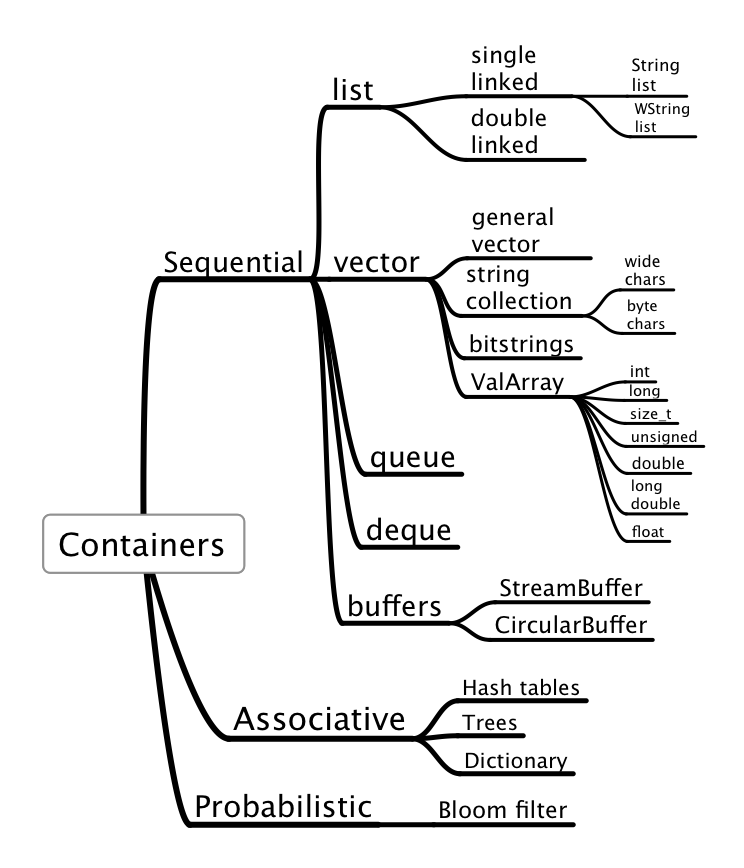

A container library for C
Jacob Navia

Contents
1.1 Design goals
1.1.1 Error analysis
1.1.2 Full feature set
1.1.3 Abstraction
1.1.4 Performance
1.2 How the functions are specified in this document.
2.1 Containers
2.2 The interface concept
2.3 Error handling
2.4 The different containers
2.4.1 Single and double linked lists
2.4.2 Flexible arrays (vector)
2.4.3 ValArray: Arrays of numbers
2.4.4 String collection
2.4.5 Bit-string
2.4.6 Dictionary
2.4.7 Hash Table
2.4.8 AVL trees
2.4.9 Scapegoat trees
2.4.10 Bloom Filter
2.4.11 Queue
2.4.12 Deque
2.4.13 Buffers
2.5 Types used by the library
2.5.1 CompareInfo
2.5.2 CompareFunction
2.5.3 Save function
2.5.4 Read function
2.5.5 Error function
2.5.6 Destructor function
3.1 Creation of a container: Create
3.2 Destruction of a container: Clear and Finalize
3.2.1 Other creation functions
3.3 Adding an element to a container: Add and AddRange
3.4 Removing elements from a container
3.4.1 Using an element as key
3.4.2 Removing at a given position
3.4.3 Using a container as a stack
3.4.4 Batch removing
3.5 Retrieving elements
3.6 Sorting a sequential container: Sort
3.7 Copying a container: Copy
3.8 Saving and loading a container to or from disk: Save and Load
3.9 Inserting a container into another
3.9.1 Sequential containers
3.9.2 Associative containers
3.10 Replace an element with another
3.10.1 Sequential containers: ReplaceAt
3.10.2 Associative containers: Replace
3.11 Looping through all elements of a container
3.11.1 Using a simple loop to iterate a container
3.11.2 Using the Apply function.
3.11.3 Using iterators
3.12 Setting and retrieving the state: GetFlags and SetFlags
3.13 Retrieving the number of elements stored: Size
3.14 Sizes
3.14.1 Sizeof
3.14.2 SizeofIterator
3.15 Memory management
3.15.1 Memory manager objects
3.15.2 Pooled memory management
3.15.3 Heap of same size objects
3.15.4 Garbage collection
3.15.5 Multi-threading
4.1 Masks
4.1.1 The interface
4.1.2 The API
4.2 Memory management
4.2.1 The default memory manager
4.2.2 The Heap interface: iHeap
4.3 Pooled memory interface: iPool
4.4 Error handling Interface: iError
4.5 The iterator interface
4.5.1 The interface
4.6 The observer interface
4.6.1 Caveats
4.6.2 The interface
4.6.3 Notifications messages
5.1 The List interfaces: iList, iDlist
5.1.1 General remarks
5.1.2 Specializations of linked lists
5.2 Double linked lists: iDlist
5.3 The Vector interface: iVector
5.3.1 The interface
5.3.2 The API
5.4 The bit-string container: iBitString
5.4.1 The interface
5.4.2 API
5.5 The string collection container: istrCollection, iWstrCollection
5.5.1 The interface
5.5.2 API
5.6 The dictionary container: iDictionary
5.6.1 The dictionary interface
5.6.2 The API
5.7 The TreeMap interface: iTreeMap
5.7.1 The interface
5.8 Hash Table: iHashTable
5.8.1 The interface
5.8.2 The API
5.9 Queues: iQueue
5.9.1 Interface
5.9.2 The API
5.10 Deque: iDeque
5.10.1 Interface
5.11 Bloom filters
5.11.1 The interface: iBloomFilter
5.11.2 The API
5.12 Value arrays
5.12.1 Operations
5.12.2 Slices and masks
5.12.3 The interface
5.13 Buffers
5.13.1 Stream buffers
5.13.2 Circular buffers
5.14 The generic interfaces
5.14.1 Generic containers
5.14.2 Sequential containers
5.14.3 Associative containers
6.1 Adding conversions between containers
7.1 Unique
7.2 Paste
7.3 Mapcar
8.1 Partitioning
8.2 Data structures
8.2.1 The generic part
8.2.2 Lists
8.2.3 Double linked lists
8.2.4 Vector
8.2.5 Dictionary
8.2.6 String collection
8.2.7 The iterator implementation
8.2.8 The timestamp field
8.3 The code
8.3.1 List
8.3.2 Queues
8.3.3 The dictionary
8.3.4 The bloom filter
8.3.5 Debugging malloc
8.3.6 The observer interface
8.3.7 ValArrays
Index
*
The objective of this proposal is to standardize the usage of common data structures within the context of the C language. The existence of a common standard interface for lists, hash tables, flexible arrays, and other containers has several advantages:
- User code remains portable across different projects. In C, we all use the FILE abstraction, for instance. This abstraction allows software to be
compatible across a large spectrum of machines and operating systems. Imagine what would happen if each project had to develop a file stream
abstraction again and again. This is the case when using lists, for instance. Today, we have in all significant projects written in C a list
module, and probably other ones like hash tables, etc.
- Avoid duplication of effort. Most of the list or hash tables modules can't be debugged completely and are the source of never ending problems.
- Lack of standards makes the merging of two projects very difficult since in most cases the interfaces and data structures are slightly
different. This leads to a complete rewrite of one of the modules, or to ädapter" software that will translate from one list implementation
to the other, adding yet another layer of complexity to the merged project.
- The language becomes more expressive since it becomes possible to reason within a high level environment. The lack of operations for
handling advanced data structures conditions programmers to use low level solutions like making an array with a fixed maximum size instead of a
list even if the programmer would agree that a list would be a more adequate solution to the problem. Confronted to the alternative of
developing yet another list module or opting for a low level solution many time constrained programmers will opt for the second solution.
-
The portable specifications provide a common framework for library writers and compiler/system designers to build compatible yet strongly specialized implementations.
-
The language becomes easier to analyze mathematically.
In their very interesting paper "Precise reasoning for programs using containers", Dillig, Dillig and Aiken
1 enumerate three main points that make program analysis easier using containers:
- Understanding the contents of a container doesn't require understanding the container's implementation
- Verifying container implementations requires different techniques and degrees of automation than verifying their clients. Hence, separating
these two tasks allows us to choose the verification techniques best suited for each purpose.
- There are orders of magnitude more clients of a container than there are container implementations. This fact makes it possible to annotate
a handful of library interfaces in order to analyze many programs using these containers.
- It is possible to abstract from the nature of any container (using the iterator construct) what allows a series of algorithms to
be written without having to bind them to a precise data structure. Containers present a uniform interface to the rest of the program.
 The big innovation of C in the eighties was its standard library, that made input/output portable across machines and implementations. The container library would replicate again that idea, at a higher level.
The specifications presented here are completely scoped by the C99 specifications, and can be implemented even in compilers that do not implement C99 and remained within the C94 context. No language extensions are needed nor any are proposed.
The interfaces proposed try to present complete packages, i.e. interfaces with all the necessary functions to allow the widest usage: Serialization, searching, and many other functionalities are included in the proposed standard to allow for maximum code portability. It can be argued that this makes for "fat" containers, but if you read carefully you will notice that many things can be left out in systems that run in low memory or with feeble computing power.
This documentation is composed of several parts:
The big innovation of C in the eighties was its standard library, that made input/output portable across machines and implementations. The container library would replicate again that idea, at a higher level.
The specifications presented here are completely scoped by the C99 specifications, and can be implemented even in compilers that do not implement C99 and remained within the C94 context. No language extensions are needed nor any are proposed.
The interfaces proposed try to present complete packages, i.e. interfaces with all the necessary functions to allow the widest usage: Serialization, searching, and many other functionalities are included in the proposed standard to allow for maximum code portability. It can be argued that this makes for "fat" containers, but if you read carefully you will notice that many things can be left out in systems that run in low memory or with feeble computing power.
This documentation is composed of several parts:
- An introductory part where the general lines of the library are explained.
- A specifications part where each function of the library is fully specified. This is the proposal for the next C standard.
- An ëxamples" part that shows the uses of the library and allows you to have a better idea of how the usage of the library looks like.
- An implementation part where the code of the sample implementation is discussed. This is designed as a guide for implementors to give them a basis to start with.
1 Design goals
1.1 Error analysis
It has been a tradition in C to place raw performance as the most important quality of specifications. To follow this sacred cow C specifications
ignored any error analysis arguing that any specification of failure modes would damage "performance". No matter that raw machine performance
increased by several orders of magnitude, the cost of a check for NULL was always "too expensive" to afford.
This kind of mental framework was described by one of the people in the discussion group "comp.lang.c++" as follows:2
In C++, the program is responsible for ensuring that all parameters to
the standard library functions are valid, not only the third parameter of
std::mismatch(). For example, also the first range for std:mismatch()
must be valid, one may not pass a start iterator from one container and
end iterator from another, for example. However, STL does not guarantee
any protection against such errors, this is just UB.
These specifications try to break away from that frame of thought. Each function specifies a minimal subset of failure modes as a consequence of its
error analysis. This allows user code to:
- Detect and handle errors better.
- Ensure that errors will always have the same consequences. One of the worst consequences of undefined behavior is that the same error can
have completely different consequences depending on apparently random factors like previous contents of memory or previous allocation pattern.
At the same time, the mandatory error checking consists mainly of checks that can be implemented with a few integer comparisons. For instance a check
for zero is a single instruction in most processors. If implemented correctly the conditional jump after the comparison with zero is not taken in the
normal case and correctly predicted by the processor. This means that the pipeline is not disturbed and the cost for the whole operation is much less than a cycle.
Why is error analysis an essential part of any program specifications?
Because mistakes are a fact of life. Good programmers are good most of the time only. Even very good programmers do make mistakes3. Software
must be prepared to cope with this fact in an orderly fashion because if failure modes are not specified they have catastrophic consequences and lead
to brittle software that crashes randomly.
Note that error analysis is not error handling. Error handling is taking an action after an error, a task only the application can do.
What the library can do is to establish a framework where a user defined procedure receives enough information about the specific problem at hand.
Error analysis means that for each function and each API:
- An analysis is performed of what are the consequences of any error in its inputs. Error codes are used to pass detailed error information
to the error procedure.
- During its execution, an analysis is done of each step that can fail.
- The outputs of the function are left in a consistent state, errors provoking the undo of the previous steps in most cases, leaving the inputs
as they were before the function was called. This feature allows library functions to be restartable after an error. For instance an out of memory
condition can be corrected by freeing memory and retrying.
The library provides hooks for the users that can control each step and provide functions that can do the error handling, for instance logging the
error and jumping to a pre-established recovery point.
1.2 Full feature set
Another design goal is to offer to the user a full feature set, complete with serializing, iterators, search, read-only containers and all the features
needed in most
situations. Other features are planned for later like multi-threading support. The objective here is to avoid incompatible and non portable extensions
because some essential feature is missing.
1.3 Abstraction
The library is designed with the possibility of implementing abstraction like serial and associative containers that allow software to treat several
containers in a way that abstract most of their features, improving code reuse by allowing to implement algorithms for a class of objects. This is
specially true in the iterators feature.
It can be argued that the C language lacks many of the abstractions constructs of other languages like templates, inheritance, and many others.
All that is true, but the objective of this proposal is to show that those constructs are just an aid to developing abstractions, an aid that
is paid in added complexity for the resulting language, and in a limitation of what is feasible within a given framework. Since C has no
framework, no preferred inheritance model, it is possible to create abstractions that are quite unconstrained: there is no framework precisely.
1.4 Performance
Even with all the tests, the performance of the library has been maintained at a high level compared to similar libraries
in other languages. The performance should improve if standardized because compiler writers could specialize their optimizations targeting this
code.
2 How the functions are specified in this document.
The specifications part of the proposal uses the same building blocks for each of the functions proposed.
Name
The name of the function. Note that when using this name, the container interface should be always before:
iList.Add, iDictionary.Add, etc.
The name is followed by the prototype defined as a function pointer. For the function Add of the container List we have
int (*Add)(List *list,const void *data);
This means that Add is a function pointer in the interface iList. It would be used as:
iList.Add(list,data).
Errors:
The minimal set of errors that can appear during the execution of the function is listed. Each implementation is free to add implementation specific errors to this list. Note that how the library behaves after an error is defined by the current error function in the container (if any), then by the behavior of the error function in the iError interface. This can be changed by the user by using the iError interface.
Returns:
The return value of the operation. Normally, negative values are error codes, positive values means success, and zero means non fatal errors, more in the sense of a warning.
1 Containers
In the context of this library, a container is a data structure used to organize data within a single logical object that allows for adding, searching
and removing data. In most containers the data is not further specified, but the library assumes that all elements of a container have the same type.
The data can be anything, images, numbers, text, whatever. The only thing that the container knows is the size of the data, if we store a series of
objects of the same size, or its address, if we store objects of different sizes. In the later case we store just a pointer in the
container4.
A special kind of containers, ValArrays, contain the basic types of the C language and the library treats them specially. There is one ValArray
for each elementary type. For character strings they are stored in ßtring collections", a term borrowed from the C# language.
Each container has a way of iterating through all its elements by using an ïterator" auxiliary object, that returns each stored object in sequence. In
sequential containers you can also iterate using an index variable, what can be cheaper than using iterators for arrays but very expensive in lists.
All objects stored by the library are copied into the library, and the library is responsible for the management of the associated storage. If you do not want this, just store a pointer to the data and manage the data yourself.
A container has a set of functions for accessing the elements it stores, called its interface. This object is a collection of function
pointers that provide the functionality of the container. The interfaces are stored in writable memory and the user can, at run time, change the
behavior of a class of containers by changing the function pointer. This operation is called ßubclassing" in this document.
Subclassing allows the user to modify the behavior of a container, maybe adding some functionality, without having to write all the container from
scratch. The user of the library can:
- Use the stored pointer to the original function to call the original functionality, and add some functionality after that call.
- Add some functionality and call the stored pointer afterwards.
- Replace completely the functionality by its own without calling any of the former functions.
Subclassing adds enormous flexibility to this design, since it makes possible to add functionality in a transparent way.
Using the organization of the data as a classification criteria we have basically two different kinds of containers
- 1. Sequential containers
-
2. Associative containers
A sequential container is organized in a linear order. We have a sequence starting at index zero up to the number of elements stored. Data items can be retrieved by index, and it makes sense to speak of a "next" and a "previous" element.
Sequential containers can be contiguous (arrays) or disjoint (lists). In the first case access is very fast since it implies multiplying the index by the size of each element to get to any position in the data. In the second case access the nth element can be a lengthy operation since the chain of "next" or "previous" pointers must be followed for each access to a given position.
An associative container stores an object divided in two parts: a key, that is used as a token for the data, and the data itself. It associates key/value pairs. Speed of access is fast, but not linear, and can degrade as new items are stored in it.
In all cases, we have some basic properties of an abstract container that are common to all of them.
- Functions to implement the life-cycle of the object: creation, maintenance and destruction.
- Functions to add, replace and remove elements from the container.
- A function that returns the number of objects stored in the container.
-
A function to report errors. This function (like all other function pointers) can be changed by the user of the library. In the sample implementation
it defaults to a simple function that prints the error in the standard error stream.
-
Each change in a container is recorded. This permits to validate pointers to a container: if the container has changed after the creation of the pointer, the pointer could be invalid.
-
All containers use a standard object to allocate and manage memory. The library provides a default allocator that contains the standard C functions malloc, free, realloc and calloc. Each container class can contain an allocator pointer, or each container can contain an allocator. The provided
sample implementation has a per container allocator, but in many applications a per class allocator could be enough, or even a single global allocator
that would be used by the whole library.
Managing a sequence involves trade offs what performance is concerned. If the usage will involve frequent insertion and deletion of objects you will prefer a container that handles those operations in constant time: the time to add or delete an object doesn't increase with the number of elements in the container. Such a container will be unlikely to provide also access to a given element in constant time. Access is likely to be much slower, and what you gain in flexibility you loose in another dimension. It is the user of the library, the programmer, that decides what container fits best the intended usage.
Since usage patterns change, however, the library tries to ensure that you can change the container you are using with minimal effort. If at the beginning of an application a list looked like a good solution but later an array, that provides constant time access is better suited, you can change the type of container without changing every line that uses it. The common vocabulary of the library makes this possible.
2 The interface concept
Each container is defined by its interface, i.e. the table of functions it supports. For each interface, its name is composed of a lower case ï" followed by the container name: iList, iVector, istrCollection, etc.
Each function of the interface receives always the container as its first argument. Obviously, the big exception is the creation function, that receives various arguments depending of which container or from what input, the container is to be created.
For each container interface a global object exists that allows direct access to the function table without the need of creating a container to access it.
This interface allows for simple access to each container using a very similar vocabulary:
iList.Add(list,object);
istrCollection.Add(strcol,object);
The objects stored in a container have always the same size. When storing objects of different sizes just store a pointer to the objects, since pointers have always the same size.
3 Error handling
This specification describes the basic error handling that each function of the library must do. Other errors can appear in different implementations.
Error handling has three different phases:
- Detection. All library functions detect blatantly wrong arguments, for instance a NULL pointer when an object is expected, or arguments out of their valid range, etc.
- Reporting. When an error is detected the library calls the corresponding error function that receives a character string with the name of the
function where the error was detected, and an integer error code. Error codes are always negative constants.
- Response. The library's default response to an error is to print it in the standard error stream. This can be modified by the user at any time by calling the SetErrorFunction API, replacing the default behavior with its own.
At each error, the library should call the container instance specific error handling when there is one, or call the general error handling function in the iError interface. When it is not possible to call the instance specific error function, for instance when the instance parameter is NULL , the library calls the general error handling function in the iError interface5.
The user of the library can either replace the default iError interface with a function that handles the error with a jump to a previously set recovery point, or treat the error locally using the return code. All errors are negative constants, it suffices to test if the result is less than zero.
The error codes defined by this specification are:
-
CONTAINER_ERROR_BADARG
One of the parameters passed to a function is invalid. This is the same as the EDOM error code used by the function errno. If an implementation uses the errno mechanism it can set at each occurrence of this error also errno to EDOM.
-
CONTAINER_ERROR_NOMEMORY
There is not enough memory to complete the operation6.
-
CONTAINER_ERROR_INDEX
The index is out of bounds. If an implementation uses the errno mechanism it can set errno to ERANGE.
-
CONTAINER_ERROR_READONLY
The object is read-only and the operation would modify it 7.
-
CONTAINER_ERROR_INTERNAL
Unspecified error provoked by a problem in the implementation.
-
CONTAINER_ERROR_OBJECT_CHANGED
A change in the underlying object has invalidated an iterator. If an implementation uses errno it can set
errno to EILSEQ8.
-
CONTAINER_ERROR_FILE_READ
Input error in a stream9.
-
CONTAINER_ERROR_FILE_WRITE
Output error in a stream.
-
CONTAINER_ERROR_CONTAINER_FULL
Implementations can limit the maximum number of elements a container can hold. This error indicates that the limit is reached.
10.
-
CONTAINER_ERROR_BADPOINTER
The debug implementation of free() has discovered an incorrect pointer attempting to be freed11.
-
CONTAINER_ERROR_BUFFEROVERFLOW
The debug implementation of free() discovered a buffer overflow.
-
CONTAINER_ERROR_WRONGFILE
You are trying to read a container from a stream that has no such container saved
12.
-
CONTAINER_ERROR_DIVISION_BY_ZERO
The library has detected an attempt to divide by zero13.
-
CONTAINER_ERROR_OVERFLOW
An overflow was detected in an arithmetic operation. Implementations are encouraged to detect overflow in all operations that
can generate one and report it through this error.
Other errors can be defined by each implementation.
The treatment of each error is done in the object defined by the iError interface.
4 The different containers
All data structures in this section are known and used for several decades. Lists are a common feature of any data processing task since the sixties for instance.
The library provides for abstract containers, and some examples of concrete ones for the elementary types.
We have:
- Vectors. The general abstract vector container is implemented in the "Vector" container. This is a flexible array that allows for insertion/deletions,
with no cost for insertion at the end in most cases. Concrete implementations for the elementary types are provided for bits (bit-strings), strings
(null terminated), int/double/long double numeric data in the form of templates.
-
Lists. Single linked lists (List) and double linked lists (Dlist) are provided. Lists of strings and wide character strings are specified too.
-
Queue, Deque
-
Trees (red/black trees, AVL trees)
-
Dictionary. This is a simple implementation of a hash table with character keys. It comes in two flavours:
- Single byte character keys
- Wide character keys
14
-
Hash Table. More complex implementation of a hash table with arbitrary (binary) keys, and automatic hash table resizing.
- Buffers. Stream buffers (linear buffers that resize to accommodate more data) and circular buffers are provided.
4.1 Single and double linked lists
This containers consist of a header and a list of elements containing each a pointer to the next element in the chain, and a pointer to the data item
stored. The end of the list is marked by a node that contains a NULL "next" pointer. Double linked lists contain an additional pointer to the previous
element.
This is a very flexible container, allowing you to add and delete elements easily just by rewriting some pointers. You can even split them in two
sublists just by zeroing somewhere the "next" pointer.
The price you pay for this flexibility is that sequential access is expensive, the cost of accessing the nth element increases linearly with n.
Storage overhead is one or two pointers per element stored in the list for single/double linked lists..
The data is stored directly after the pointer, there is no pointer to the data. This is a variable length structure with a fixed and a variable part.
To avoid using a standard C99 feature that could be absent in older compilers, we use a semi-generic pointer indexed either by one (for older compilers) or by nothing (standard C).
4.1.1 Single linked lists of byte or wide character strings
A specialization of the single linked list is provided for multibyte or wide character strings. The rationale for this specialization is that
zero terminated strings are variable length records what would make them impossible to store into a standard list that needs records of the
same size.
4.2 Flexible arrays (vector)
This container is an array with added operations that allow the user to insert and delete elements easily. It will resize itself if needed.
The access time is essentially the same as with a normal array. Insertion and deletion are possible but they are in general more expensive than with lists since the container must copy the elements to make place for a new element or to delete an element. An exception to this rule is the deletion of the last element that will be done in constant time since it implies only decrementing the number of elements in the container.
The storage overhead for each element is zero since this container doesn't require any pointers per object stored.
This container uses a reserve storage to avoid allocating new memory for each addition operation. This allows the Add operation to be done in constant time in most occasions.
Comparing vectors with plain arrays, there are following points to be made:
- With plain arrays, a program cannot determine the array's capacity, which is to say, its dimension when it was allocated.
The program code must supply this information independently, and must maintain that information always current.
- There isn't any simple way to increase the size of our array, once it’s been allocated. We often need to do that, rather than try to figure out
in advance how large it should be.
- When accessing the array there is no automatic way to check if the index is within bounds. We have to program all array access specially
if we want to make sure there are no index errors.
4.3 ValArray: Arrays of numbers
This group is an specialization of flexible array. It features objects that contain numbers in different formats designed to facilitate operations
in numerical programming. There are ValArrays for the types short, int, long, float, double,
long double, size_t and long long. Each ValArray has the same basic operations (addition, subtraction, etc)
but some members have specialized operations: trigonometric operations are defined only in floating point ValArrays, boolean operations only in the unsigned versions of the int/short and the long long types.
ValArray functions come often in two flavors: The first uses two arrays where the left argument is both source and destination, and a second form where
a number is applied to the whole array. For instance we have AddTo(leftArray,rightArray) and AddToScalar(Array,number).
4.4 String collection
This container is designed to handle a collection of C strings. It is essentially an application of the flexible array container with some extra functionality to handle strings. It comes in two flavors, as strings in C: multi-byte and wide character strings.
4.5 Bit-string
This container is designed to handle arbitrary sequences of bits. Some algorithms that are easy to program with strings are much more complicated for bit-strings, like to one that mimics ßtrstr" ("bit-strstr").
The bits are packed with 8 bits per character unit. The overhead per bit is the size of the bit-string header only. No pointers are associated with each bit.
4.6 Dictionary
This is an associative container based on a hash table. It associates a text key with some arbitrary data. This container is not ordered. Access time to each element depends on how much elements are stored in it and on the efficacy of the hash function to maintain elements in different slots. Storage overhead per element is one pointer each, plus the size of the slot table. This is for a hash table with linked lists in each slot for managing collisions. Other implementations exist of course.
4.7 Hash Table
This is a more sophisticated version of the dictionary hash table. It allows for keys of binary data and it has automatic resizing in case the table gets too crowded.
4.8 AVL trees
This data structure allows for fast searching for data. You can store millions of records and find a given record with a few comparisons.
4.9 Scapegoat trees
This is another form of trees. They can be more efficient than AVL trees, but from a container perspective they share the same characteristics.
4.10 Bloom Filter
This is a probabilistic data structure used to quickly check if an element is not in a larger set of elements. It returns false positives with a given probability set when the container is built. Elements can be added to it but they can't be removed from the container. It stores no data, just a key.
Queues are designed to operate in a FIFO context (first-in first-out), where elements are inserted into one end of the container and extracted from the other. This container can be implemented as an adaptor using a single linked list as its base container. The sample implementation uses this strategy to show how adapters can look like. Other implementations can implement this container directly presenting the same interface.
This is a linear container that allows for cheap insertions/deletions at both ends.
Buffers are containers used to hold data temporarily, either to be transmitted or stored into some medium, or to be filtered and used later
by other parts of the application. The library provides two types of buffers:
- Stream buffers. They are a linear sequence of bytes, like a file. They resize automatically if they need to, and they have a cursor
that points to the position where the next item will be stored.
- Circular buffers. They store the last n items of a stream. They can contain any item as in the vector container, or they can contain
character strings, as in the string collection.
5 Types used by the library
Here is a complete list of all the auxiliary data types defined by the library.
5.1 CompareInfo
typedef struct tagCompareInfo {
void *ExtraArgs;
const void *ContainerLeft;
const void *ContainerRight;
} CompareInfo;
This structure will be passed to the comparison functions. The ExtraArgs pointer will receive the pointer that was passed to the calling function. If both elements being compared are members of a single container, the ContainerRight member will be NULL .
5.2 CompareFunction
typedef int (*CompareFunction)(const void *elem1,
const void *elem2,
CompareInfo *ExtraArgs);
This type defines the function used to compare two elements.
The result should be less than zero if elem1 is less than elem2, zero if they are equal, and bigger than zero if elem1 is bigger than element 2.
The default comparison function is memcmp. This function will compare all the object's area, including eventually padding bytes added by
compilers for alignment reasons. To minimize this problem always zero the objects before assigning the values. For instance:
struct Data {
int Age; // Here the compiler can introduce padding bytes
double Weight;
};
int fn(void)
{
struct Data m;
memset(&m,0,sizeof(m));
m.Age = 23;
m.Weight = 76;
iVector.Add(DataCollection,&m);
}
By zeroing the structure before making the assignments, we have a known value in the padding bytes. If we make comparisons with memcmp, they will
work correctly.
Obviously the best way to avoid this problem is to avoid any default comparison function by defining one.
5.3 Save function
typedef int (*SaveFunction)(const void *element,
void *ExtraArg,
FILE *OutputStream);
This function should save the given element into the given stream. The ExtraArg argument receives any argument passed to the Save function.
The result should be bigger than zero if the operation completed successfully, zero or less than zero otherwise.
What the save function does is unknown to the rest of the library, basically the only requirement is that its output should be understood by the
read function, when called to read each element. The size of the written data can be bigger (or smaller) than the size of each stored element,
according to the specific requirements of the application data. This allows to write save functions tha would write a complete data set, including
embedded objects into the stream. For instance a save function can save the contents pointed by a character pointer instead of the pointer value
that would be meaningless when read again.
The default save function provided by the implementation just writes the contents of each element into the stream. Embedded pointers aren't followed.
5.4 Read function
typedef int (*ReadFunction)(void *element,
void *ExtraArg,
FILE *InputStream);
This function should read into the given element from the given stream. The ExtraArg argument is passed to the container read function and allows to pass an argument to the user defined save function. The amount of data read is unknown to the rest of the software and the only requirement
is that it should reverse the work of the save function.
The default read function provided by the implementation should read the contents of one element from the stream and add it to the result container.
The result is bigger than zero if the operation completed successfully, zero or less than zero otherwise.
5.5 Error function
typedef void (*ErrorFunction)(const char *functionName,int code,...);
This function type is used to handle errors in each container. The first argument is the name of the function where the error occurred, the second is a
negative error code. No checks are performed on the function name argument, and other information or messages could be included in the message.
Note that this function is roughly compatible with the prototype of snprintf, and could be used with a format string, a buffer size, and a series of
arguments corresponding to the arguments the format requires. The only problem is the conversion between int and size_t.
5.6 Destructor function
typedef int (*DestructorFunction)(void *object);
This function type is called when an object is being destroyed from the container. An object is destroyed when:
- An Erase call is done.
- A Replace call is done.
- The Clear call is done.
This function should free any memory used by pointers within the object without freeing the object memory itself. In most cases the memory
used by the library is not allocated with malloc. Its result type is less than zero when an error occurred or greater than zero when
it finished successfully.
Chapter 3
The common vocabulary: iGenericContainer
 The library uses always the same words to represent similar actions in all containers.
The library uses always the same words to represent similar actions in all containers.
1 Creation of a container: Create
Containers are created with a call to their "Create" function. The first argument is the size of the objects that will be stored in the container. The second is optional and is a hint to the number of elements that will be stored in the container.
Note that if you want to store objects of different sizes you just store a pointer to those objects instead of the objects themselves.
The creation functions can have several arguments, the first being always the size of the elements that the container will hold. The prototype can be:
Container * iContainer.Create(size_t elementsize,...);
The creation function needs to allocate memory to hold the container. This memory will be allocated using the current memory manager that is always an implicit argument to all creation functions. The rationale behind this design decision is that you don't change your memory allocation strategy at each call to a container creation function. This simplifies the interface at the expense of making the change of allocation strategy more expensive.
There is an abstract class of objects called "Generic container" that has all functions that are common to all containers. This is an abstraction,
and as such, it can't have any concrete examples: there is no creation function for a generic container. You can only create a concrete container, a list, a vector, etc.
Once created, and if the created container supports the generic interface, you can make a cast and treat the concrete container as an abstract member
of a mythical "generic" container. This can save you a lot of redundant code since your code is independent of the type of container and will run
with any object (even future objects) that support the generic container interface.
As everything, there is no free lunch. Precisely because of its generality the generic interface is missing a lot of functionality that you will find
in the concrete containers interfaces.
2 Destruction of a container: Clear and Finalize
All containers support two cleanup functions:
- Clear: remove all elements. The header structure remains untouched. This can be used to free the memory when the container was created with the Init function.
-
Finalize: Remove all elements and the memory used by the container object using the allocator for this container. The container should NOT have been created using the Init function.
The syntax is:
- int iContainer.Clear(Container *);
- int iContainer.Finalize(Container *);
The result of those functions is less than zero when something goes wrong, greater than zero otherwise.
2.1 Other creation functions
- An implicit argument to all the creation functions is the current allocator, that is used to retrieve space for the container being built. To avoid changing the current allocator, what in multi-threaded environment would need acquiring a lock to that global variable, some containers support a creation function that receives an extra argument: a custom allocator.
Container * iContainer.CreateWithAllocator(size_t elementsize,
const ContainerMemoryManager *allocator, ...);
-
Sometimes it can be useful for some containers (specially lists) to create the header structure using an already existing space, for instance in the space for local variables. For this an 'Init' function can exist, that initializes a container within an existing space.
Since normally the detailed structure (and the size of course) of each container header is implementation dependent, you use the Sizeof function with an argument of NULL to get the size of the header. This can be used within a C99 compiler environment to allocate the space for that variable.
15
The declaration of the container header in C99 would be:
int function(void)
{
char listSpace[iList.Sizeof(NULL)];
iList.Init(listSpace);
}
If C99 is not available, the best way is to just print the size of the container you are interested in, and then use that value that should stay fixed
for a given version. This can be automated and you can find in the Appendix 1, a small program that generates a series of #defines with the
values of the sizes of the containers described in this documentation
16.
- Initializing with existing data
All containers support the InitializeWith function. It will create a container using a table of elements to store. Its arguments are the size of
the objects to be stored, the number of those objects, and a pointer to the table. The table should be a contiguous memory area.
/* For sequential containers and TreeMap */
Container * iContainer.InitializeWith(size_t elementsize,
size_t n, void *data);
/* For Dictionary */
Container * iContainer.InitializeWith(size_t elementsize,
size_t n, char ** Keys,void *data;
3 Adding an element to a container: Add and AddRange
This operation adds the given element to a container. In sequential containers it is added at the end, in associative containers it is added at an unspecified position.
int iContainer.Add(Container *,const void *element);
The result of this operation is a positive integer if success, or an error code less than zero if the operation fails.
Invariants:
The input data is not modified in any way, it is copied into the container.
Sequential containers support also the AddRange API:
int iContainer.AddRange(Container *,size_t n,const void *elements[]);
This API allows you to pass a table of elements into a sequential container and add it with a single call.
4 Removing elements from a container
4.1 Using an element as key
The functions Erase and EraseAll remove the given element from the container.
The result is an integer greater or equal to zero or an error code less than zero if the element couldn't be added
17
.
The EraseAll function is not needed for associative containers since each element in those data structures is unique.
int iContainer.Erase(Container *,const void *element);
int iContainer.EraseAll(Container *,const void *element);
4.2 Removing at a given position
The Erase/EraseAt functions need to search for the given element before erasing it. For sequential containers you can use the ËraseAt" function, that will remove an element at a given position.
int iContainer.EraseAt(Container *,size_t idx);
For associative containers you use RemoveKey:
int iContainer.RemoveKey(Container *,const void *Key);
4.3 Using a container as a stack
Elements can be removed from the front or the back in sequential containers using it like a stack:
int iContainer.PopBack(Container *d,void *outbuf);
int iContainer.PopFront(Container *d,void *outbuf);
These functions copy the contents of the last or the first element into the given buffer. If the buffer is NULL, nothing is copied, but the
container is modified: the first or the last element is removed.
4.4 Batch removing
Several elements can be removed at once from a container using the RemoveRange function. This function is implemented in sequential
containers only.
int iContainer.RemoveRange(Container *c,size_t start, size_t end);
This function removes the elements whose index is greater or equal than start and less than end. If start equals end
nothing is removed and the result is zero. If end is greater than the length of the container it will be adjusted to 1 element past the
end. If no elements are removed the result is zero, positive when one or more elements are removed. The result is a negative error code when an
error occurs.
5 Retrieving elements
The GetElement function retrieves an element from a container. It comes in two different flavors, one for sequential containers, and another for associative ones.
const void *iContainer.GetElement(const Container *,size_t index);
const void *iContainer.GetElement(const Container *,const void *Key);
These functions return a pointer to the requested element or NULL if the element can't be retrieved. The resulting pointer points directly to the data
stored in the container. This could be used to bypass all the flags that control the access to the container. For read-only containers, use the
CopyElement function that returns a copy of the requested data into a buffer.
The function GetRange retrieves a slice of a container returning a container of the same type with a copy of the elements storeds in the
given range:
Container *iContainer.GetRange(const Container *src,
size_t start, size_t end);
The pointer returned can be invalidated by some operations done to the container. For instance if you reverse the order of the elements in a container,
a pointer to the element zero will point to something else than when you obtained it. If a container needs reallocating its data space because you
added an element, all the pointers that point to data elements of the container can be invalidated. In general it is a bad idea to keep pointers
to elements in a container that is being modified
Invariants:
The given container is not modified in any way.
6 Sorting a sequential container: Sort
The "Sort" function will sort a container in place. To keep the old, unsorted contents, make a copy of the container first.
int iContainer.Sort(Container *);
7 Copying a container: Copy
The "Copy" function will make a fresh copy of a container. Some fields of the header are copied: the error and compare functions, the flags, and others. Memory will be allocated withe the source container allocator.
newContainer * iContainer.Copy(const Container *);
Invariants:
The input container is not modified.
8 Saving and loading a container to or from disk: Save and Load
The functions "Save" and "Load" will save / load the contents, state, and characteristics of a container into / from disk. They need an open file stream, open in binary mode, and in the correct direction: saving needs a stream open in the write direction, loading needs a stream open in the read direction.
int Save(const Container *c,FILE *stream, SaveFunction fn,void *arg);
Container *Load(FILE *stream,ReadGunction fn,void *arg);
Both Save and Load provide default functions to save and load an element but they do a shallow save: pointers aren't followed
to save the data they point to 18.
9 Inserting a container into another
9.1 Sequential containers
int (*InsertIn)(Container *destination,
size_t position,
Container *source);
int (*Append)(SequentialContainer * SC1,SequentialContainer * SC2);
The InsertIn function will insert into the "destination" container the contents of the source container at the given position. The source is not modified in any way, and a copy of its data will be used. Both containers must be of the same type and store elements of the same type. The library only tests the element size of each one.
The Append function is similar to InsertIn: the elements of the second container are appended at the end of the first one. The big difference
is that the second container is destroyed. It is absorbed into the first: its elements are not copied but inserted.
9.2 Associative containers
int (*InsertIn)(Container *destination, Container *source);
This function will insert into the destination container the source container using the source container keys. Otherwise the same conditions apply as to the sequential containers: the containers must be of the same type and store elements of the same type.
10 Replace an element with another
10.1 Sequential containers: ReplaceAt
int (*ReplaceAt)(Container *dst,size_t position,void *newData);
Replaces the element at the given position with the new data.
10.2 Associative containers: Replace
int (*Replace)(Dictionary *Dict, const char *Key,void *Value);
Replaces the element with the given key. If the element is absent nothing is done.
11 Looping through all elements of a container
The user has three methods for looping through all elements:
- Using a simple loop construct
- Using the Apply function
- Using an iterator
One the most familiar design patterns is the ITERATOR pattern, which ‘provides a way to access the elements of an aggregate object sequentially without exposing its underlying representation.
Traditionally, this is achieved by identifying an ITERATOR interface that presents operations to initialize an iteration, to access the current element, to advance to the next element, and to test for completion; collection objects are expected to implement this interface, usually indirectly via an auxiliary object.
This is exactly the case in the iterator proposal here. Essential to the pattern is the idea that elements are accessed sequentially, but independently of their position in the collection; for example, labeling each element of a tree with its index in left-to-right order fits the pattern, but labeling each element with its depth does not. This traditional version of the pattern is sometimes called an EXTERNAL ITERATOR.
An alternative INTERNAL ITERATOR approach assigns responsibility for managing the traversal to the collection instead of the client: the client needs only to provide an operation, which the collection applies to each of its elements. The latter approach is simpler to use, but less flexible; for example, it is not possible for the iteration to affect the order in which elements are accessed, nor to terminate the iteration early. This is the algorithm followed by the Apply function.
11.1 Using a simple loop to iterate a container
You can iterate any sequential container with a simple loop. You use the "Size" function to limit the loop. At each loop step you get the corresponding element with the "GetElement" function, present in this form in all containers.
// "Container" is a pointer to some container
for (size_t i=0; i<iContainer.Size(Container); i++) {
someType *element = iContainer.GetElement(Container,i);
// Use "element" here.
}
For associative containers you retrieve first a strCollection containing all keys using the GetKeys function, present in all associative containers. Then, you retrieve each element by looping through the string collection that you have obtained in a similar manner to the sequential containers.
11.2 Using the Apply function.
The Apply function will iterate through all elements calling a given function for each one.1 Its prototype is:
void iContainer.Apply(Container, //pointer to some container
int(*Applyfn)(void *elem,void *arg),
void *arg);
This function receives three arguments:
- A pointer to the container. 19.
- A function pointer that should point to a function that receives two arguments: the element of the container, and an extra argument where it can receive (and write to) global information about the search. This extra argument is
- The third one passed to the Apply function. Apply will pass this argument to the given function together with a pointer to the element retrieved from the container.
11.3 Using iterators
Iterators are objects returned by each container that allow you to iterate (obviously) through all elements of a container.
You use iterators like this:
Iterator *it = iContainer.NewIterator(someContainer);
Mytype *Myobject;
for (myobject = it->GetFirst(it);
myobject!= NULL;
myobject = it->GetNext(it)) {
// Work with "myobject" here
}
iContainer.DeleteIterator(it); // dispose the iterator object
Iterators provide a container-independent way of iterating that will work with any container, both sequential or associative. In associative containers the specific sequence is implementation defined, and in sequential containers is the natural sequence.
The main objective for iterators is to break a dependence between an algorithm and the type of container it is working with. Since all containers
support iterators, you can write your code independently (to a great extent) from which specific iterator you are using.
Invariants:
The input container could be modified in some implementations. A list of existing iterators is possible, to allow invalidating them in case of
modifications to the container for example.
Iterators always support at least the following functions:
void *iterator->GetFirst(iterator);
void *iterator->GetNext(iterator);
void *iterator->GetCurrent(iterator);
All containers support the "NewIterator" and "deleteIterator" methods:
iterator *iContainer.NewIterator(Container);
int iContainer.deleteIterator(iterator);
Iterators must be destroyed since they are allocated using the containers allocator.
Sequential containers can support additional functions:
void *iterator->GetLast(iterator);
void *iterator->GetPrevious(iterator);
void *iterator->Seek(iterator i, size_t position);
This interface allows users to write fully general algorithms that will work with any container, independently of its internal structure. Obviously the
performance can differ from container to container depending on usage.
All iterators will become invalid if the underlying container changes in any way, except through the iterator itself.20
Each container can conceptually be seen as a sequence of generations, or states. Beginning with the fresh constructed state, the container
evolves until it reaches the destroyed state after the execution of the Finalize function. This sequence of states interacts with an
iterator as follows: An iterator applies only to a single container state. Any modification of the container state, directly or
indirectly moves the state and invalidates the iterator.
An implementation may catch some of the movements of the container in the state space and report an error when an iterator is used that belongs to
a different container state. But not all access can be catched. If the user has pointers to an iterator's data and modifies this data without
using the container API an implementation may not catch this error.
12 Setting and retrieving the state: GetFlags and SetFlags
Each container has a set of flags that can be read and written to change the container's behavior. The only flag that is defined by all containers
is the read-only flag. Implementations can extend this to offer different services like copy-on-write, or other applications.
The read-only flag means that no direct pointers to an element or to the whole data are returned, no functions that modify the
container are allowed to proceed and that the Clear()
and Finalize() APIs will not work. You must unset this flag to allow for destruction of the object.
21
Using the state space concept introduced above, this flag freezes the state of a container disallowing any further evolution. The only API that
can modify the state is the SetFlags API that can reset the state to a read/write state again.
13 Retrieving the number of elements stored: Size
All containers support querying the number of elements stored. The prototype is:
size_t iContainer.Size(const Container *);
There is no error return. If a NULL pointer is given to those functions the result is zero.
14 Sizes
This computes the total size used by the container in bytes, including the header structure and the data stored in the container. Any other overhead
must be accounted for.
size_t iContainer.Sizeof(const Container *);
If its argument is NULL , Sizeof returns the size of the container header. This can be used to allocate space for a container as a local variable for instance.
14.2 SizeofIterator
Computes the size of the iterator for the given container. The objective here is to allow the declaration of the iterator as a local variable
to avoid having to free the iterator at the exit of the function.
int Fn(void)
{
char buf[iList.SizeofIterator(NULL)];
Iterator *it = (Iterator *)buf;
iList.InitIterator(it);
// Use iterator "it" here
// ...
// No need to call deleteIterator at exit
}
15 Memory management
All containers have a pointer to their allocator object. An allocator object is a simple interface that provides 4 functions:
- malloc: A function that receives a size_t and returns a void * pointing to a memory block of the requested size, or NULL if no more memory is available. Note that this function receives the number of bytes to allocate, not the number of items.22
- realloc: A function that will resize a previously allocated block.
- free: A function that will release the memory allocated previously with malloc/realloc.
- calloc: a function that will allocate n objects of m size and clear the memory block to zero before returning it.
At the start of the library runtime a default allocator object exists that uses the four functions of the standard C library. Other allocator objects can be used, and the user can change the global allocator at any time. Each container retrieves the default allocator object when created, and stores it in the container descriptor. Any further change to the default allocator will not affect existing containers that have already an allocator. When changing the allocator you should do that before creating the container.
Some containers are created without any heap management by default. You can introduce heap management by calling the UseHeap function, that will install a new heap in the container. Other containers are always created with a heap, and you should pass them an allocator object for object creation.
15.1 Memory manager objects
The library provides two memory manager objects:
- The default memory manager, that receives the standard C library functions; malloc, free, realloc and calloc.
- The debug memory manager that implements the same functions with added functionality designed to:
- Catch the "double free" problem.
-
Catch the overflow of a memory block
-
Catch freeing a block that wasn't allocated
15.2 Pooled memory management
The problem with the traditional C memory management is that it requires that the programmer cares about each piece of RAM that is allocated by the program and follows the lifetime of each piece to ensure that it gets returned to the system for reuse. In today's software world, this is just impractical.
A better strategy is to use a pool of memory where related memory allocations can b e done from a common pool. When the module finishes, all the allocated pool is freed just by destroying the whole pool. This is much easier to manage, and in many cases more efficient.
The proposed interface has the following functionalities:
- Creation. The creation function receives a memory allocator to use for this pool.
- Alloc. This function receives a pool and a size and returns a memory block, or NULL if there is no more memory.
- Clear. This erases all objects allocated in the pool without returning the memory to the system.
- Destroy. This releases all memory and destroys all objects.
Note that there is no realloc, and that the "Clear" function is optional. Not all pools support it. The rationale for these decisions being that realloc would need to store the size of each block, what in a pool maintained by a single stack like pointer would be very expensive.
15.3 Heap of same size objects
Many containers are used to store sets of objects of the same size. The library provides a specialized heap management software for this application. It stores vectors of objects of the same size. The interface provided is as follows:
- Create. This function receives a memory manager object that will be used to allocate memory.
- NewObject: returns an object to the application
- AddToFreeList: Adds an object to the list of available objects
- Size: Returns the size of the heap in bytes
- DestroyFreeList: reclaims memory used by the free list
- Destroy: Reclaims all memory used by the heap and the heap object
15.4 Garbage collection
Automatic garbage collection is offered by some compiler systems as an alternative to traditional memory management. This solution is
not compatible with real time requirements, and is not practical in machines with very low memory configurations.
In other cases however, it can be a real simplification since the programmer is relieved from the huge task of taking care of each
piece of memory and to cater its disposal. A simple memory model is proposed: you program as if the amount of memory was infinite
and never worry about freeing the memory you use. Periodically the collector starts collecting unused memory chunks and adds them
to the pool of available memory or releases it to the underlying operating system.
This model is not the solution to all memory management problems. It can be a solution to some situations, specially when developing
in workstation environments where memory is freely available. The bugs that can appear are also very difficult to solve. One of the
most difficult is when you keep by mistake some reference to a large piece of memory making the recycling of the memory impossible.
In that case you have to search in all the code of the application for the reference that keeps the memory block marked as used, and that can
be very difficult in large applications.
15.5 Multi-threading
In environments where multi-threading or other parallel programming constructs are possible, the implementation must provide for sequential
semantics, i.e. each operation should perform as described in this documentation with the additional caveat that any operation that modifies
a container must be atomic, i.e. it can't be interrupted leaving the container in an unstable or incoherent state. It is up to the
implementation to ensure that if an atomic operation is interrupted, the inconsistent container state will be invisible to other processes
or threads accessing the container.
Chapter 4
The auxiliary interfaces
These interfaces are used by all the containers in the rest of the library. They provide basically three functions
- Memory management with the MemoryManager object.
- Observer and circulation of notifications with iObserver.
- Error handling with the iError interface.
- Masks used to select items

1 Masks
A mask is a sequence that contains boolean data used for selection of items in a sequential container.
It is not specified if a mask is a bit string (i.e. a
strictly boolean array) or an array of chars or other integers used to hold the binary data. In all cases a value of the mask at a given position
means select if it is different than zero, or do not select if it is zero.
The interface offered by the mask object is very small. Masks can't be resized but they have an allocator to be able to reclaim the
memory they use when created. This allocator will be initialized to the current allocator when the mask is created.
1.1 The interface
typedef struct _Mask Mask;
typedef struct tagMaskInterface {
int (*And)(Mask *src1,Mask *src2);
int (*Clear)(Mask *m);
Mask *(*Copy)(Mask *src);
Mask *(*Create)(size_t length);
Mask *(*CreateFromMask)(size_t length,char *data);
int (*Finalize)(Mask *m);
int (*Or)(Mask *src1,Mask *src2);
int (*Set)(Mask *m,size_t idx,int val);
size_t (*Size)(Mask *);
} iMask;
1.2 The API
And
int (*And)(Mask *src1,Mask *src2);
Description:
Stores into src1 the result of a logical AND operation between each element of src1 with the corresponding element of src2.
Errors:
CONTAINER_ERROR_BADARG
Any mask pointer is NULL .
CONTAINER_ERROR_INCOMPATIBLE
The masks are of different length.
Returns:
A positive number if the operation was performed, a negative error code if an error occurs.
Clear
int (*Clear)(Mask *m);
Description:
Sets all elements of the mask to zero.
Errors:
CONTAINER_ERROR_BADARG
The mask pointer is NULL .
Returns:
A positive number if the mask was cleared, a negative error code if an error occurs.
Copy
Mask *(*Copy)(Mask *src);
Description:
Allocates a new mask and copies the contents of the given one into it.
Errors:
CONTAINER_ERROR_BADARG
The mask pointer is NULL .
Returns:
A pointer to the new mask or NULL if an error occurs.
CreateFromMask
Mask *(*CreateFromMask)(size_t length,char *data);
Description:
Creates a new mask with the specified length and copies the given data into the mask. Each character in the input data is transformed into the
mask internal representation. The storage is obtained using the CurrentMemoryManager pointer.
Errors:
CONTAINER_ERROR_BADARG
The data pointer is NULL
CONTAINER_ERROR_NOMEMORY
No memory is available to perform the allocation.
Returns:A pointer to a new mask or NULL if an error occurs.
Create
Mask *(*Create)(size_t length);
Description:
Creates a new mask with the specified length. The storage is obtained using the CurrentMemoryManager pointer. The data is initialized to zero.
Errors:
CONTAINER_ERROR_NOMEMORY
No memory is available to perform the allocation.
Returns:A pointer to a new mask or NULL if an error occurs.
Finalize
int (*Finalize)(Mask *m);
Description:
The memory used by the mask is reclaimed.
Errors:
CONTAINER_ERROR_BADARG
The mask pointer is NULL .
Returns:A positive number if the memory was reclaimed, or a negative error code.
Not
int (*Not)(Mask *src);
Description:
Stores into src the result of a logical NOT operation: each bit is inverted.
Errors:
CONTAINER_ERROR_BADARG
The mask pointer is NULL .
Returns:
A positive number if the operation was performed, a negative error code if an error occurs.
Or
int (*Or)(Mask *src1,Mask *src2);
Description:
Stores into src1 the result of a logical OR operation between each element of src1 with the corresponding element of src2.
Errors:
CONTAINER_ERROR_BADARG
Any mask pointer is NULL .
CONTAINER_ERROR_INCOMPATIBLE
The masks are of different length.
Returns:
A positive number if the operation was performed, a negative error code if an error occurs.
Set
int (*Set)(Mask *m,size_t idx,int val);
Description:
Sets the given position to the given value if the value fits in the internal representation of the mask. If not, an implementation defined
conversion occurs.
Errors:
CONTAINER_ERROR_BADARG
The mask pointer is NULL .
CONTAINER_ERROR_INDEX
The index given is out of bounds.
Returns:A positive number if the value was set or a negative error code.
Size
size_t (*Size)(Mask *);
Description:
The number of elements in the mask is returned.
Errors:
CONTAINER_ERROR_BADARG
The mask pointer is NULL .
Returns:The number of elements. If the mask pointer is NULL , the result is zero.
Sizeof
size_t (*Sizeof)(Mask *);
Description:
The number of bytes used by the given mask. If the argument is NULL the number of bytes of the header structure is returned.
Errors:
None.
Returns:The number of bytes.
2 Memory management
Several interfaces implement different memory allocation strategies. This should give flexibility to the implementations, allowing it to use several memory allocation strategies within the same container.
The library starts with the default memory manager, that contains pointers to the default C memory management functions: malloc, free, realloc and calloc. Another memory manager is the debug memory manager that should implement more checking and
maybe offer hooks to the debugger. The sample
implementation shows how to implement several simple checks, but other implementations can extend this simple interface providing
much more sophisticated controls23.

2.1 The default memory manager
The C language provides several functions to manage memory. The default MemoryManager object is built from the standard C memory allocation functions.
typedef struct tagMemoryManager {
void *(*malloc)(size_t);
void (*free)(void *);
void *(*realloc)(void *,size_t);
void *(*calloc)(size_t,size_t);
} ContainerMemoryManager;
extern ContainerMemoryManager * CurrentMemoryManager;
At startup, the CurrentMemoryManager points to an object constructed with the functions of the C standard library. This is a required interface.
The user can change the object that "CurrentMemoryManager" points to another object that should have the same interface.
This is the established procedure to build custom memory allocators to provide for special alignment requirements, improve speed, allocate objects
from the stack instead of the heap, and many other usages.
The library can also include a debug version on top of the standard C functions, offering the same interface. Changing the CurrentMemoryManager to point to that object allows to switch to the debug version. The debug version of the sample implementation offers:
- Detection of free() of a memory block not allocated by malloc().
-
Detection of writing past the end of the block in some cases.
-
Detection of freeing a memory block twice.
extern ContainerMemoryManager iDebugMalloc;
This interface is optional. The sample implementation documents a possible implementation, see 8.3.5Debugging malloc on page pageref
.
2.2 The Heap interface: iHeap
Some containers can benefit from a cacheing memory manager that manages a stock of objects of the same size. This is not required and not all implementations may provide it. If they do, the interface is:
int (*UseHeap)(Container *c);
The standard interface for the heap is:
typedef struct tagHeapObject ContainerHeap;
typedef struct _HeapAllocatorInterface {
ContainerHeap *(*Create)(size_t ElementSize,
ContainerMemoryManager *m);
void *(*newObject)(ContainerHeap *heap);
void (*AddToFreeList)(ContainerHeap *heap,void *element);
void (*DestroyFreeList)(ContainerHeap *heap);
void (*Destroy)(ContainerHeap *heap);
ContainerHeap * (*InitHeap)(size_t ElementSize,void *heap,
ContainerMemoryManager *m);
size_t (*Sizeof)(ContainerHeap *heap);
} HeapInterface;
extern HeapInterface iHeap;
Create
ContainerHeap *iHeap.Create(size_t elementSize, MemoryManager *m);
Description:
Creates a new heap object that will use the given memory manager to allocate memory. All elements will have the given size. If the memory manager object pointer is NULL , the object pointed by CurrentMemoryManager will be used.
Returns:a pointer to the new heap object or NULL , if an error occurred.
Errors:
CONTAINER_ERROR_BADARG
The element size is bigger than what the heap implementation can support..
CONTAINER_ERROR_NOMEMORY
Not enough memory is available to complete the operation.
InitHeap
ContainerHeap * (*InitHeap)(void *heap,size_t ElementSize,
ContainerMemoryManager *m);
Description:
Initializes the given buffer to a heap header object designed to hold objects of ElementSize bytes. The heap will use the given memory
manager. If the memory manager parameter is NULL the default memory manager is used.
This function supposes that the heap parameter points to a contiguous memory space at least enough to hold a ContainerHeap object.
The size of this object can be obtainer by using the iHeap.Size API with a NULL parameter.
Returns:
A pointer to the new ContainerHeap object or NULL if there is an error. Note that the pointer returned can be different from the passed in
pointer due to alignment requirements.
newObject
void *iHeap.newObject(ContainerHeap *heap);
Description:
The heap returns a pointer to a new object or NULL if no more memory is left.
Errors:
CONTAINER_ERROR_NOMEMORY
Not enough memory is available to complete the operation.
Returns:A pointer to an object or NULL if there is not enough memory to complete the operation.
AddToFreeList
size_t iHeap.AddToFreeList(ContainerHeap *heap,void *element);
Description:
Adds the given object to the list of free objects, allowing for recycling of memory without new allocations. The element pointer can be NULL .
Errors:
CONTAINER_ERROR_BADARG
The heap pointer is NULL .
Returns:The number of objects in the free list.
DestroyFreeList
void iHeap.DestroyFreeList(ContainerHeap *heap);
Description:
Releases all memory used by the free list and resets the heap object to its state as it was when created.
Errors:
CONTAINER_ERROR_BADARG
The heap pointer is NULL .
Finalize
void iHeap.Finalize(ContainerHeap *heap);
Description:
Destroys all memory used by the indicated heap and frees the heap object itself.
Errors:
CONTAINER_ERROR_BADARG
The heap pointer is NULL .
Sizeof
size_t iHeap.Sizeof(ContainerHeap *heap);
Description:
Returns the number of bytes used by the given heap, including the size of the free list. If the argument "heap" is NULL , the result is the size of the heap header structure (i.e. sizeof(ContainerHeap).
Errors:
None.
Example:
void SomeFunction(void)
{
char buffer[iHeap.Sizerof(NULL)];
ContainerHeap *ch;
ch = iHeap.InitHeap(buffer,200,NULL);
// ...
iHeap.DestroyFreeList(ch);
}
This example uses the variable length arrays that have been introduced in the C language by the latest standard (C99). The Sizeof function
returns the size of the header object that is used to specify the size of the buffer. The buffer is passed to the InitHeap function using
a number of objects of 200 and the default memory allocator.
3 Pooled memory interface: iPool
 Many containers could benefit from a memory pool. A memory pool groups all allocations done in a specific context and can be released in a single call. This allows the programmer to avoid having to manage each single piece of memory like the basic interface.
Many containers could benefit from a memory pool. A memory pool groups all allocations done in a specific context and can be released in a single call. This allows the programmer to avoid having to manage each single piece of memory like the basic interface.
typedef struct _tagPoolAllocatorInterface {
Pool *(*Create)(ContainerMemoryManager *m);
void *(*Alloc)(Pool *pool,size_t size);
void *(*Calloc)(Pool *pool,size_t size);
void (*Clear)(Pool *);
void (*Finalize)(Pool *);
} PoolAllocatorInterface;
Note that there is no realloc function. Pooled memory is often implemented without storing the size of the block to cut overhead. Since a realloc function could be expensive, implementations are not required to provide it.
Create
Pool *iPool.Create(ContainerMemoryManager *m);
Description:
Creates a new pool object that will use the given memory manager. If m is null, the object pointed by the CurrentMemoryManager will be used.
Errors:
CONTAINER_ERROR_NOMEMORY
Not enough memory to complete the operation.
Returns:
A pointer to the new object or NULL if the operation couldn't be completed.
Alloc
void *iPool.Alloc(Pool *pool,size_t size);
Description: Allocates size bytes from the pool pool. If there isn't enough memory to resize the pool the result is NULL .
Errors:
CONTAINER_ERROR_NOMEMORY
Not enough memory to complete the operation.
Returns:
A pointer to the allocated memory or NULL if error.
Calloc
void *iPool.Calloc(Pool *pool,size_t n,size_t size);
Description:
Allocates n objects of size ßize" in a single block. All memory is initialized to zero. If there is no memory left it returns NULL ;
Errors:
CONTAINER_ERROR_NOMEMORY
Not enough memory to complete the operation.
Returns:
A pointer to the allocated memory or NULL if error.
Clear
void iPool.Clear(Pool *);
Description:
Reclaims all memory used by the pool and leaves the object as it was when created.
Errors:
CONTAINER_ERROR_BADARG
The pool pointer is NULL .
Finalize
void iPool.Finalize(Pool *);
Description:
Reclaims all memory used by the pool and destroys the pool object itself.
Errors:
CONTAINER_ERROR_BADARG
The pool pointer is NULL .
4 Error handling Interface: iError
The ïError" interface provides a default strategy for handling errors. The "RaiseError" function will be used as the default error function within the creation function for all containers that support a per container instance error function.
typedef (*ErrorFunction)(const char *,int,...);
typedef struct {
void (*RaiseError)(const char *fname,int code,...);
void (*EmptyErrorFunction)(const char *fname,int code,...);
const char *(*StrError)(int errorCode);
ErrorFunction (*SetErrorFunction)(ErrorFunction);
int (*NullPtrError)(const char *);
} ErrorInterface;
RaiseError
void iError.RaiseError(const char *fname,int errcode,...);
Description:
The parameter "fname" should be the name of the function where the error occurs. The ërrcode" parameter is a negative error code. The actual value of the code is defined for the cases mentioned in the section 2.3Error handling. Other negative values can be defined by the implementation.
Other parameters can be passed depending on the error. The sample implementation never passes anything else but the name of the function where the
error occurs and the error code.
The behavior of the default error function is implementation specific. In the sample code this function will just print the error message in the standard error stream. Other implementations could end the program, log the error into a error stream, or do nothing.
Returns:No return value
EmptyErrorFunction
void iError.EmptyErrorFunction(const char *fname,int errcode,...);
Description:
This function can be used to ignore all errors within the library. It does nothing.
StrError
const char *iError.StrError(int errorCode);
Description:
Converts the given error code in a character string. If the error code doesn't correspond to any error defined by the implementation a character string
with an implementation defined value is returned.
SetErrorFunction
ErrorFunction iError.SetErrorFunction(ErrorFunction);
Description:
Changes the value of the default error function. If its argument is NULL , nothing is done, and the call is interpreted as a query of the current value.
Returns:
The old value of the default error function.
NullPtrError
int (*NullPtrError)(const char *msg);
Description:
This is a utility function equivalent to:
int NullPtrError(const char *fname)
{
iError.RaiseError(fname,CONTAINER_ERROR_BADARG);
return CONTAINER_ERROR_BADARG;
}
5 The iterator interface
 The iterator object exposes at least the functions "GetFirst", for initializing the loop, and "GetNext", for getting the next element in the sequence.
The functions "NewIterator" and "deleteIterator" are specific to each container interface even if they all have the same syntax.
The iterator object exposes at least the functions "GetFirst", for initializing the loop, and "GetNext", for getting the next element in the sequence.
The functions "NewIterator" and "deleteIterator" are specific to each container interface even if they all have the same syntax.
5.1 The interface
typedef struct _Iterator {
void *(*GetNext)(Iterator *);
void *(*GetPrevious)(Iterator *);
void *(*GetFirst)(Iterator *);
void *(*GetCurrent)(Iterator *);
void *(*GetLast)(Iterator *);
void *(*Seek)(Iterator *it,size_t pos);
int (*Replace)(Iterator *it, void *data, int drection);
} Iterator;
GetCurrent
void *(*GetCurrent)(Iterator *);
Description: Returns the element at the cursor position.
Errors:
CONTAINER_ERROR_BADARG
The iterator pointer is NULL .
Returns:
A pointer to the current element or NULL , if the container is empty or an error occurs. If the container is read-only, a pointer to a copy of the element is returned. This pointer is valid only until the next iterator function is called.
GetFirst
void *(*GetFirst)(Iterator *);
Description:
This function initializes the given iterator to the first element in the container. For sequential operators this is the element with index zero. In
associative operators which element is the first is implementation defined and can change if elements are added or removed from the container.
If the container is empty the result is NULL .
Errors:
CONTAINER_ERROR_BADARG
The iterator pointer is NULL .
Returns:
A pointer to the first element or NULL , if the container is empty or an error occurs. If the container is read-only, a pointer to a copy of the element
is returned. This pointer is valid only until the next iterator function is called.
Example:
Iterator *myIterator;
List *myList;
myType *obj; // "myList" stores objects of type "myType"
myIterator = iList.NewIterator(myList); // Request iterator
for (obj = myIterator->GetFirst(myIterator);
obj != NULL;
obj = myIterator->GetNext(myIterator)) {
//Use obj here
}
iList.deleteIterator(myIterator); // Reclaim memory
GetNext
void *(*GetNext)(Iterator *);
Description:
Positions de cursor at the next element and returns a pointer to its contents. If the iterator is at the end of the container the result is NULL
and the iterator remains at the last position, a subsequent call to GetCurrent returns the last element.
If the container is read-only, a pointer to a copy of the object is returned. This pointer is valid only until the next iterator function is called.
Errors:
CONTAINER_ERROR_BADARG
The iterator pointer is NULL .
CONTAINER_ERROR_OBJECT_CHANGED
The container has been modified and the iterator is invalid. Further calls always return NULL .
Returns:
A pointer to the next element or NULL , if the cursor reaches the last element. If the container is read-only, a pointer to a copy of the element is
returned, valid until the next element is retrieved
GetPrevious
void *(*GetPrevious)(Iterator *);
Description:
Positions de cursor at the previous element and returns a pointer to its contents. If the pointer is at the beginning of the container the
result is NULL and the iterator remains at the beginning, a subsequent call to GetCurrent will return the first element of the container.
This function is meaningful only in sequential containers. Its existence in associative containers is implementation defined. Even in sequential
containers, it can be very expensive to find a previous element, for instance in single linked lists. In those cases it can always return NULL .
Errors:
CONTAINER_ERROR_BADARG
The iterator pointer is NULL .
CONTAINER_ERROR_OBJECT_CHANGED
The container has been modified and the iterator is invalid. Further calls always return NULL .
Returns:
A pointer to the previous element or NULL , if the cursor reached the first element already. If the container is read-only, a pointer to a copy of the
element is returned.
Example:
Iterator *myIterator;
List *myList;
myType *obj; // "myList" stores objects of type "myType"
myIterator = iList.NewIterator(myList); // Request iterator
for (obj = myIterator->GetLast(myIterator);
obj != NULL;
obj = myIterator->GetPrevious(myIterator)) {
//Use obj here
}
iList.deleteIterator(myIterator); // Reclaim memory
GetLast
void *(*GetLast)(Iterator *);
Description:
Positions the cursor at the last element and returns a pointer to it. Returns NULL if the container is empty. If the container is read-only, a pointer
to a copy of the element is returned.
This function is meaningful only in sequential containers. Its existence in associative containers is implementation defined. Even in sequential
containers, it can be very expensive to find the last element, for instance in single linked lists. In those cases it can always return NULL .
Errors:
CONTAINER_ERROR_BADARG
The iterator pointer is NULL .
CONTAINER_ERROR_OBJECT_CHANGED
The container has been modified and the iterator is invalid. Further calls always return NULL .
Seek
void *(*Seek)(Iterator *it,size_t pos);
Description:
Positions the given iterator at the indicated position and then returns a pointer to the element's data at that position.
If the position is bigger than the last element of the container, the last element position will be used.
This function is supported in sequential containers only.
Errors:
CONTAINER_ERROR_BADARG
The iterator pointer is NULL .
CONTAINER_ERROR_OBJECT_CHANGED
The container has been modified and the iterator is invalid. Further calls always return NULL .
Returns:
A pointer to the data of the given element or NULL if an error occurs.
Replace
int (*Replace)(Iterator *it,void *data, int direction);
Description:
Replaces the current object pointed by the given iterator with the new data. If the
data
argument is NULL the element is erased from the
container. If the
direction
parameter is different from zero, in sequential containers the iterator will point to the next element,
otherwise it will point to the previous element. In associative containers this parameter is ignored and the iterator is always set to the next
element, if any.
Errors:
CONTAINER_ERROR_BADARG
The iterator pointer is NULL .
CONTAINER_ERROR_OBJECT_CHANGED
The container has been modified and the iterator is invalid. Further calls always return NULL .
CONTAINER_ERROR_READONLY
The container is read only.
Returns:A positive value if the element was changed or erased, zero if the container was empty, or a negative error code if an error occurred.
6 The observer interface
In its general form, the observer design pattern can be defined as a one-to-many dependency between objects so that when one object
changes state, all its dependents are notified and updated automatically.
When a container changes its state, specifically when elements are added or removed, it is sometimes necessary to update relationships that
can be very complex.
The observer interface is designed to simplify this operation by allowing the container to emit notifications to other objects that have
previously manifested interest in receiving them by subscribing to them. In general notifications are sent only when one of the defined
operations for a container occur, mostly operations that change the number of elements.
This interface then, establishes a relationship between two software entities:
- The container, that is responsible for sending the notifications when appropriate
- The receiver, that is an unspecified object represented by its callback function that is called when a change occurs that matches the
notifications specified in the subscription.
Since this relationship needs both objects, it will be finished when either object goes out of scope or breaks the relationship for whatever
reason. Both objects can unsubscribe (terminate) their relationship.
6.1 Caveats
- It is in general a bad idea to modify the object being observed during a notification since this could trigger other notification
messages. Implementations are not required to avoid this situation that is the responsability of the programmer. Contrary to the iterator interface
no error is issued when a possible infinite loop is started. Implementations may catch the error by limiting the number of recursive
invocations of this interface but they are not required to do so.
-
Since all messages sent by the containers have different type of information in the same two arguments that each message is associated with,
there is no possible compile time control of the usage of the received pointers or numbers. The observer function must correctly
discriminate between the different messages it can receive24.
6.2 The interface
typedef void (*ObserverFunction)(const void *ObservedObject,
unsigned Operation,
void *ExtraInfo[]);
typedef struct tagObserverInterface {
int (*Subscribe)(void *ObservedObject,
ObserverFunction callback, unsigned Operations);
int (*Notify)(const void *ObservedObject,unsigned operation,
void *ExtraInfo1,void *ExtraInfo2);
size_t (*Unsubscribe)(void *ObservedObject,
ObserverFunction callback);
} ObserverInterface;
extern ObserverInterface iObserver;
ObserverFunction
typedef void (*ObserverFunction)(void *ObservedObject,
unsigned Operation, void *ExtraInfo[]);
Description:
This function will be called by the interface when a notification is received for an observed object. The call happens after all arguments have been processed, the actual work of the function is finished (when adding an object) or not yet done (when destroying an object).
The container is in a consistent state. For the callbacks that are called when an object is deleted from a
container the call happens before any call to free() and before any call to a destructor (if any) is done. For the calls that add an object
the callback is called after the container has been modified.
Arguments:
- ObservedObject: Specifies the object that sends the notification, i.e. the container
that has the subscription. It is assumed that this container conforms to the iGeneric interface.
- Operation: The operation that provoked the notification. Since it is possible to subscribe to several operations with only one callback function,
this argument allows the callback to discriminate between the operation notifications.
- ExtraInfo: This argument is specific to each operation and conveys further information25 for each operation.
None of the arguments will be ever NULL or zero.
Subscribe
int (*Subscribe)(void *ObservedObject, ObserverFunction callback,
unsigned Operations);
Description:
This function establishes the relationship between the observed object (argument 1) and the observer, represented by its callback (argument 2).
The third argument establishes which operations are to be observed.
This operation performs an allocation to register the relationship in the observer interface tables, therefore it can fail with an out of memory condition.
Errors:
CONTAINER_ERROR_BADARG
The observed object pointer is NULL , the callback function pointer is NULL , or the operations argument is zero.
CONTAINER_ERROR_NOMEMORY
There is not enough memory to proceed.
Returns:An integer greater than zero if the relationship was established, a negative error code otherwise.
Notify
int (*Notify)(void *ObservedObject,unsigned Operation,
void *ExtraInfo1,void *ExtraInfo2);
Description:
This function will be used by the container to send a message to the receiver callback. The arguments correspond roughly to the arguments the callback
function will receive. "Notify" will call all the objects that are observing ObservedObject and that have subscribed to one of the
operations
specified in the Operation argument. This implies a search through the observer interface table, and possibly several calls, making
this function quite expensive. The time needed is roughly proportional to the number of registered callbacks and the complexity of the callbacks
themselves.
Errors:
CONTAINER_ERROR_BADARG
The ObservedObject pointer is NULL or the Operation argument is zero.
Returns:A positive number with the number of objects that received the notifications, zero if there was no match for the combination of observed object and operations specified, or a negative error code.
Unsubscribe
size_t (*Unsubscribe)(void *ObservedObject, ObserverFunction callback);
Description:
This function breaks the relationship between the observed object and the observer. There are several combinations of both arguments:
- The ObservedObject argument is NULL . This means that the callback object wants to break its relationship to all objects it is
observing. The observer interface will remove all relationships that contain this callback from its tables.
- The callback argument is NULL . This means that the given ObservedObject is going out of scope and wants to break all
relationships to all its observers. The interface removes from its tables all relationships that have this object as the observed object.
This happens normally immediately after the notification FINALIZE is sent.
- If both callback and ObservedObject are non NULL , only the matching relationships will be removed from the tables.
6.3 Notifications messages
| Operation | Argument 1 | Argument 2 |
|
|
|
| Operation | Argument 1 | Argument 2 |
|
| Add | Pointer to the new object | NULL or slice specs if any |
| AddRange | A size_t with the number of objects added | Pointer to a table of n elements that were added |
| Append | A pointer to the object being appended. It is of the same type as the object emitting the notification | NULL |
| Clear | Pointer to the container being cleared | NULL |
| Copy | Pointer to the copy of the container | NULL |
| Erase | Pointer to the object being deleted. The object is still valid | NULL |
| EraseAt | Pointer to object being deleted | Position (as size_t) |
| Finalize | NULL | NULL |
| Insert | Pointer to the new object being inserted | A size_t with the position of the object being inserted if applicable |
| InsertIn | Pointer to the object being inserted, that has the same type as the object sending the notification | NULL |
| Pop | Pointer to the object being popped | NULL |
| Push | Pointer to the object being pushed | NULL |
| ReplaceAt | Pointer to the old value | Pointer to the new value |
|
Here is a complete example that demonstrates some of the above functions.
Example:
include "containers.h"
static void fn(void *ObservedObject, unsigned operation,
void *extraInfo[])
{
printf("Object is %p, operation is %d\n",ObservedObject,operation);
}
int main(void)
{
ValArrayInt * vInt = iValArrayInt.CreateSequence(24,0,1);
printf("Original array: \n");
iValArrayInt.Fprintf(vInt,stdout,"%d ");
iObserver.Subscribe(vInt,fn,CCL_ADD|CCL_FINALIZE);
printf("Adding an integer\n");
iValArrayInt.Add(vInt,4096);
iValArrayInt.Fprintf(vInt,stdout,"%d ");
iValArrayInt.Finalize(vInt);
}
OUTPUT:
Original array:
0 1 2 3 4 5 6 7 8 9 10 11 12 13 14 15 16 17 18 19 20 21 22 23
Adding an integer
Object is 0x100100080, operation is 1
0 1 2 3 4 5 6 7 8 9 10 11 12 13 14 15 16 17 18 19 20 21 22 23 4096
Object is 0x100100080, operation is 16
We setup our observer function calling the Subscribe API. We request to be notified when there is an addition and when the object
finalizes. Our callback function does nothing but print some of its arguments. We see that we get called when the requested operations are performed.
1 The List interfaces: iList, iDlist
The list container appears in two flavors:
- single linked lists: the iList type
-
double linked lists the iDlist type
The space overhead of single linked lists is smaller at the expense of more difficult access to the elements. It is up to the application programmer to decide which container fits best in his/her application
26.
The interfaces of both containers are very similar. Double linked lists support all functions in single linked ones, and add a few more. To avoid unnecessary repetition we document here all the single linked list interface, then only the functions that the Dlist interface adds to it.
typedef struct tagListInterface {
int (*Add)(List *L,const void *newval);
int (*AddRange)(List *L, size_t n,const void *data);
int (*Append)(List *l1,List *l2);
int (*Apply)(List *L,int(Applyfn)(void *,void *),void *arg);
void *(*Back)(const List *l);
int (*Clear)(List *L);
int (*Contains)(const List *L,const void *element);
List *(*Copy)(const List *L);
int (*CopyElement)(const List *list,size_t idx,void *OutBuffer);
List *(*Create)(size_t element_size);
List *(*CreateWithAllocator)(size_t elementsize,
const ContainerMemoryManager *mm);
int (*Equal)(const List *l1,const List *l2);
int (*Erase)(List *L,const void *);
int (*EraseAll)(List *l,const void *);
int (*EraseAt)(List *L,size_t idx);
int (*EraseRange)(List *L,size_t start,size_t end);
int (*Finalize)(List *L);
void *(*Front)(const List *l);
const ContainerMemoryManager *(*GetAllocator)(const List *list);
void *(*GetElement)(const List *L,size_t idx);
size_t (*GetElementSize)(const List *l);
unsigned (*GetFlags)(const List *L);
List *(*GetRange)(const List *l,size_t start,size_t end);
int (*IndexOf)(const List *L,const void *SearchedElement,
void *ExtraArgs,size_t *result);
List *(*Init)(List *aList,size_t element_size);
int (*InitIterator)(List *L,void *buf);
List *(*InitWithAllocator)(List *aList,size_t element_size,
const ContainerMemoryManager *mm);
List *(*InitializeWith)(size_t elementSize,size_t n,
const void *data);
int (*InsertAt)(List *L,size_t idx,const void *newval);
int (*InsertIn)(List *l, size_t idx,List *newData);
List *(*Load)(FILE *stream, ReadFunction loadFn,void *arg);
Iterator *(*NewIterator)(List *L);
int (*PopFront)(List *L,void *result);
int (*PushFront)(List *L,const void *str);
int (*RemoveRange)(List *l,size_t start, size_t end);
int (*ReplaceAt)(List *L,size_t idx,const void *newval);
int (*Reverse)(List *l);
int (*RotateLeft)(List *l, size_t n);
int (*RotateRight)(List *l,size_t n);
int (*Save)(const List *L,FILE *stream, SaveFunction saveFn,
void *arg);
int (*Select)(List *src,const Mask *m);
List *(*SelectCopy)(const List *src,const Mask *m);
List *(*SetAllocator)(List *l, ContainerMemoryManager *allocator);
CompareFunction (*SetCompareFunction)(List *l,CompareFunction fn);
DestructorFunction (*SetDestructor)(List *v,DestructorFunction fn);
ErrorFunction (*SetErrorFunction)(List *L,ErrorFunction);
unsigned (*SetFlags)(List *L,unsigned flags);
size_t (*Size)(const List *L);
size_t (*Sizeof)(const List *l);
size_t (*SizeofIterator)(const List *);
int (*Sort)(List *l);
int (*UseHeap)(List *L, const ContainerMemoryManager *m);
int (*deleteIterator)(Iterator *);
} ListInterface;

1.1 General remarks
Lists are containers that store each element in a sequence, unidirectionally (single linked lists) or bidirectionally (double linked lists).
The advantage of linked lists is their flexibility. You can easily and with a very low cost remove or add elements by manipulating the links between the elements. Single linked lists have less overhead than their double linked counterparts (one pointer less in each node), but they tend to use a lot of computer power when inserting elements near the end of the list: you have to follow all links from the beginning until you find the right one.
The list nodes themselves do not move around, only their links are changed. This can be important if you maintain pointers to those elements. Obviously, if you delete a node, its contents (that do not move) could be recycled to contain something else than what you expect.
The iList interface consists (as all other interfaces) of a table of function pointers. The interface describes the behavior of the List container.
The stack operations push and pop are provided with PushFront and PopFront because they have a very low cost, insertion at the start of a single linked list is very fast. PushBack is the equivalent of the Add operation, but PopBack would have a very high cost since it would need going through all the list.
The list container features in some implementations a per list error function. This is the function that will be called for any errors, except in cases where no list object exists: the creation function, or the error of getting a NULL pointer instead of a list pointer. In those cases the general iError interface is used, and iError.RaiseError is called. The default value of the list error function is the function iError.RaiseError at the moment the list is created.
Other implementations of this interface may specialize list for a certain category of uses: lists of a few elements would try to reduce overhead by eliminating a per list error function and replace it with the standard error function in iError, for instance, eliminating their fields in the header. If the read-only flag support is dropped, the whole "Flags" field can be eliminated. In such an implementation, the SetFlags primitive would always return an error code.
The sample implementation of the list container supports the following state flags:
#define CONTAINER_READONLY 1
If this flag is set, no modifications to the container are allowed, and the Clear and Finalize functions will not work. Only copies of the data are handed out, no direct pointers to the data are available.
#define CONTAINER_SORTED_FRONT 2
#define CONTAINER_SORTED_BACK 4
If this flag is set, the container is maintained always in sorted order, with the biggest element at the index zero for CONTAINER_SORTED_FRONT
or with the biggest element at the end if CONTAINER_SORTED_BACK is set. It is an error if both flags are set, and the results in that case
are implementation defined.
Add
int (*Add)(List *l,const void *data);
Description:
Adds the given element to the container. It is assumed that "data" points to a contiguous memory area of at least ElementSize bytes. Returns a value greater than zero if the addition of the element to the list completed successfully, a negative error code otherwise. The error codes returned can be:
CONTAINER_ERROR_BADARG
The list or the data pointers are NULL .
CONTAINER_ERROR_READONLY
The list is read-only. No modifications allowed.
CONTAINER_ERROR_NOMEMORY
Not enough memory to complete the operation.
Invariants:
The input data is not modified.
Returns:
A positive number if the element was added or a negative error code otherwise.
Example:
/* This example shows how to:
(1) Create a linked list of "double" data
(2) Fill it using the "Add" function
(3) Print it using the GetElement function */
#include <containers.h>
static void PrintList(List *AL)
{
size_t i;
for (i=0; i<iList.Size(AL);i++) {
printf("%g ",*(double *)iList.GetElement(AL,i));
}
printf("\n");
}
static void FillList(List * AL,size_t siz)
{
size_t i;
for (i=0; i<siz;i++) {
double d = i;
iList.Add(AL,&d);
}
}
int main(void)
{
List *AL = iList.Create(sizeof(double));
FillList(AL,10);
PrintList(AL);
return 0;
}
OUTPUT:
0 1 2 3 4 5 6 7 8 9
AddRange
int (*AddRange)(List * AL,size_t n, void *data);
Description:
Adds the n given elements to the end of the container. It is the same operations as the PushBack operation. It is assumed that "data" points to a contiguous memory area of at least n*ElementSize bytes. If n is zero no error is issued even if the array pointer or the data pointer are NULL .
Errors:
CONTAINER_ERROR_BADARG
The list or the data pointers are NULL , and n is not zero.
CONTAINER_ERROR_READONLY
The list is read-only. No modifications allowed.
CONTAINER_ERROR_NOMEMORY
Not enough memory to complete the operation.
Returns:
A positive number if the operation completed, negative error code otherwise.
Append
int (*Append)(List *list1,List *list2);
Description:
Appends the contents of list2 to list1 and destroys list2.
Errors:
CONTAINER_ERROR_BADARG
Either list1 or list2 are NULL .
CONTAINER_ERROR_READONLY
One or both lists are read only.
Returns:
A positive value if the operation succeeded, or a negative error code otherwise.
Example:
#include <containers.h>
static void PrintList(List *AL)
{
size_t i;
for (i=0; i<iList.Size(AL);i++) {
printf("%g ",*(double *)iList.GetElement(AL,i));
}
printf("\n");
}
static void FillList(List * AL,size_t siz)
{
size_t i;
for (i=0; i<siz;i++) { double d = i; iList.Add(AL,&d);}
}
int main(void)
{
List *L1 = iList.Create(sizeof(double));
List *L2 = iList.Create(sizeof(double));
FillList(L1,10);
FillList(L2,10);
iList.Append(L1,L2);
PrintList(L1);
return 0;
}
OUTPUT:
0 1 2 3 4 5 6 7 8 9 0 1 2 3 4 5 6 7 8 9
Apply
int (*Apply)(List l,int (Applyfn)(void *,void *),void *arg);
Description:
Will call the given function for each element of the list. The first argument of the callback function receives an element of the list. The second argument of the callback is the arg argument that the Apply function receives and passes to the callback. This way some context can be passed to the callback, and from one element to the next.
Note that the result of the callback is not used. This allows all kinds of result types to be accepted after a suitable cast.
If the list is read-only, a copy of the element will be passed to the callback function.
Errors:
CONTAINER_ERROR_BADARG
Either list or Applyfn are NULL .
CONTAINER_ERROR_NOMEMORY
: The list is read-only and there is no more memory to allocate the buffer to copy each element.
Notes:
The list container of C++ has no direct equivalent, but in the algorithm part of the STL there is a "for_each" construct, that does essentially the same. Java and C# offer a similar "ForEach" functionality.
Example:
#include <containers.h>
static int Callback(void *pElement,void *pResult)
{
double *p = pElement;
double *result = pResult;
*result += *p;
return 1;
}
void main(void)
{
double sum = 0;
List *list = iList.Create(sizeof(double));
double d = 2;
iList.Add(list,&d);
d = 3;
iList.Add(list,&d);
iList.Apply(list,Callback,&sum);
// Here sum should be 5.
printf("%g\n",sum);
}
The above example shows a function callback as used by Äpply". It receives two pointers, one to the current element and another to an extra argument that in this case contains a pointer to the sum. For each call to the callback, the function adds the contents of the element to the sum.
The main function creates a list, adds two elements with the values 2 and 3, and then calls Äpply" to get their sum using the callback.
Back
const void *(*Back)(const List *l);
Description:
Returns the last element of the given list or NULL if the list is empty.
Errors:
CONTAINER_ERROR_BADARG
The list pointer is NULL .
CONTAINER_ERROR_READONLY
The list is read only.
Invariants:
The input list is not modified.
Returns:
The last element or NULL if the list is empty or an error occurs.
Clear
int (*Clear)(List *l);
Description:
Erases all stored data and releases the memory associated with it. The list header will not be destroyed, and its contents will be the same as when the list was initially created. It is an error to use this function when there are still active iterators for the container.27
Errors:
CONTAINER_ERROR_BADARG
The list pointer is NULL .
CONTAINER_ERROR_READONLY
The list is read only.
Returns:
The result is greater than zero if successful, or an error code if an error occurs.
Example:
List *l;
int m = iList.Clear(l);
Contains
int (*Contains)(List *list,void *data);
Description:
Returns one if the given data is stored in the list, zero otherwise. The "data" argument is supposed to point to an element at least ElementSize bytes. The list's comparison function is used for determining if two elements are equal. This comparison function defaults to memcmp.
Errors:
CONTAINER_ERROR_BADARG
Either list or data are NULL .
Notes:
C++ has std::find that does essentially the same . Java and C# have a "Contains" method.
Example:
List *list;
int r = iList.Contains(list,&data);
Copy
List *(*Copy)(const List *L);
Description:
A shallow copy of the given list is performed. Only ElementSize bytes will be copied for each element. If the element contains pointers, only the pointers are copied, not the objects they point to. The new memory will be allocated using the given list's allocator.
Errors:
CONTAINER_ERROR_NOMEMORY
There is not enough memory to complete the operation.
CONTAINER_ERROR_BADARG
The given list pointer is NULL .
Invariants:
The input list is not modified.
Notes:
C++ has no direct equivalent but the assignment operator should work, Java and C# support a copy method.
Example:
List *newList,*OldList;
newList = iList.Copy(OldList);
if (newList == NULL) { /* Error handling */ }
CopyElement
int (*CopyElement)(const List *list,size_t idx,void *outBuffer);
Description:
Copies the element data at the given position into the given buffer, assuming that at least ElementSize bytes of storage are available at the position pointed by the output buffer. The main usage of this function is to access data in a read only container for later modification.
Errors:
CONTAINER_ERROR_BADARG
The given list pointer or the output buffer are NULL .
CONTAINER_ERROR_INDEX
The given position is out of bounds.
Invariants:
The input list is not modified.
Returns:
A positive value if the operation succeeded, or a negative error code if it failed.
Notes:
Neither C# nor Java provide this functionality because the treatment of pointers in those languages makes the need for such a construct unnecessary.
Example:
List *list; double d;
if (iList.CopyElement(list,3,&d) > 0)
printf("The value at position 3 is %g\n",d);
Create
List *(*Create)(size_t element_size);
Description:
The creation function returns an empty List container, initialized with all the default values.
The current memory manager is used to allocate the space needed for the List header. The list is supposed to contain elements of the same size. If the elements you want to store are of different size, use a pointer to them, and create the list with sizeof(void *) as the size parameter.
Returns:
A pointer to a newly created List or NULL if an error occurs.
Errors:
CONTAINER_ERROR_NOMEMORY
There is not enough memory to complete the operation.
CONTAINER_ERROR_BADARG
The given element size is zero or greater than what the implementation allows for maximum object size.
Errors provoke the call of the current default error function of the library since this is the creation function and there isn't a container specific error function yet.
Example:
List *ListOfDoubles = iList.Create(sizeof(double));
CreateWithAllocator
List *(*CreateWithAllocator)(size_t elem_size,
ContainerMemoryManager *allocator);
Description:
The creation function returns an empty List container, initialized with all the default values.
The given memory manager is used to allocate the space needed for the List header. The list is supposed to contain elements of the same size. If the elements you want to store are of different size, use a pointer to them, and create the list with sizeof(void *) as the size parameter.
Returns:
A pointer to a newly created List or NULL if an error occurs.
Errors:
CONTAINER_ERROR_NOMEMORY
There is not enough memory to complete the operation.
CONTAINER_ERROR_BADARG
The given element size is zero or greater than what the implementation allows for maximum object size, or the given allocator pointer is NULL .
Errors provoke the call of the current default error function of the library since this is the creation function and there isn't a container specific error function yet.
Example:
ContainerMemoryManager *myAllocator;
List *ListOfDoubles =
iList.CreateWithAllocator(sizeof(double),myAllocator);
deleteIterator
int deleteIterator(Iterator *it);
Description:
Reclaims the memory used by the given iterator object
Errors:
CONTAINER_ERROR_BADARG
The iterator pointer is NULL .
Returns:A positive value if successful or a negative error code.
Equal
int (*Equal)(const List *list1,const List *list2);
Description:
Compares the given lists using the list comparison function of either list1 or list2 that must compare equal. If the list differ in their length, flags, or any other characteristic they compare unequal. If any of their elements differ, they compare unequal.
If both list1 and list2 are NULL they compare equal. If both list1 and list2 are empty they compare equal.
Errors:
None
Invariants:
The two lists are not modified.
Returns:
The result is one if the lists are equal, zero otherwise.
Erase
int (*Erase)(List *list,void *const data);
Description:
Removes from the list the element that matches the given data, that is assumed to be a pointer to an element.
Returns:
A negative error code if an error occurred, or a positive value that indicates that a match was found and the element was removed. If the element is not in the list the result is
CONTAINER_ERROR_NOTFOUND
.
Errors:
CONTAINER_ERROR_BADARG
One or both arguments are NULL .
Example:
double d = 2.3;
List *list;
int r = iList.Erase(list,&d);
if (r > 0)
printf("2.3 erased\n");
else if (r == CONTAINER_ERROR_NOTFOUND)
printf("No element with value 2.3 present\n");
else
printf("2.3 not erased. Error is \%s\n",iError.StrError(r));
EraseAll
int (*EraseAll)(List *list,const void *data);
Description:
Removes from the list all elements that match the given data, that is assumed to be a pointer to an element.
Returns:
A negative error code if an error occurred, or a positive value that indicates that a match was found and the element was removed. If the element is not in the list the result is
CONTAINER_ERROR_NOTFOUND
.
Errors:
CONTAINER_ERROR_BADARG
One or both arguments are NULL .
EraseAt
int (*EraseAt)(List *list,size_t idx);
Description:
Removes from the list the element at the given position.
Returns:
A negative error code if an error occurred or a positive value that indicates that the element was removed.
Errors:
CONTAINER_ERROR_BADARG
The given list pointer is NULL .
CONTAINER_ERROR_INDEX
The given position is out of bounds.
Example:
List *list;
int r = iList.EraseAt(list,2);
if (r > 0)
printf("Element at position 2 erased\n");
else
printf("Error code %d\n",r);
EraseRange
int (*EraseRange)(List *L,size_t start,size_t end);
Description:
Removes from the list the given range, starting with the start index, until the element before the end index. If end
is greater than the length of the list, it will be 'rounded' to the length of the list.
Errors:
CONTAINER_ERROR_BADARG
The given list pointer is NULL .
Returns:
A positive number indicates success, zero means nothing was erased, and a negative number an error.
Example:
#include <containers.h>
static void print_list(List *li)
{
int i;
for (i=0; i<iList.Size(li); i++)
printf(" %d",*(int *)iList.GetElement(li,i));
printf("\n");
}
int main(void)
{
List *li = iList.Create(sizeof(int));
int i;
for (i=0; i<10;i++) {
iList.Add(li,&i);
}
print_list(li);
iList.EraseRange(li,3,8);
print_list(li);
}
OUTPUT:
0 1 2 3 4 5 6 7 8 9
0 1 2 8 9
Finalize
int (*Finalize)(List *list);
Description:
Reclaims all memory used by the list, including the list header object itself.
Errors:
CONTAINER_ERROR_BADARG
The given list pointer is NULL .
CONTAINER_ERROR_READONLY
The list is read-only. No modifications allowed.
Returns:
A positive value means the operation completed. A negative error code indicates failure.
Example:
List *list;
int r = iList.Finalize(list);
if (r < 0) { /* error handling */ }
Front
const void *(*Front)(const List *l);
Description:
Returns the first element of the given list or NULL if the list is empty.
Errors:
CONTAINER_ERROR_BADARG
The list pointer is NULL .
CONTAINER_ERROR_READONLY
The list is read only.
Invariants:
The input list is not modified. The resulting pointer is read-only.
Returns:
The first element or NULL if the list is empty or an error occurs.
GetAllocator
ContainerMemoryManager *(*GetAllocator)(const List *l);
Description:
Returns the list's allocator object. If the list pointer is NULL it returns NULL .
GetElementSize
size_t (*GetElementSize)(const List *l);
Description:
Retrieves the size of the elements stored in the given list. Note that this value can be different than the value given to the creation function because of alignment requirements.
Errors:
CONTAINER_ERROR_BADARG
The given list pointer is NULL .
Invariants:
The input list is not modified.
Returns:
The element size.
Example:
List *l;
size_t siz = iList.GetElementSize(l);
GetElement
const void *(*GetElement)(const List *list,size_t idx);
Description:
Returns a read only pointer to the element at the given index, or NULL if the operation failed. This function will return NULL if the list is read only.
Use the CopyElement function to get a read/write copy of an element of the list.
Errors:
CONTAINER_ERROR_BADARG
The given list pointer is NULL .
CONTAINER_ERROR_INDEX
The given position is out of bounds.
CONTAINER_ERROR_READONLY
The list is read only.
Invariants:
The input list is not modified. The resulting pointer is read-only.
Example:
List *list;
double d = *(double *)iList.GetElement(list,3);
GetFlags / SetFlags
unsigned (*GetFlags)(const List *l);
unsigned (*SetFlags)(List *l,unsigned newFlags);
Description:
GetFlags returns the state of the container flags, SetFlags sets the flags to a new value and returns the old value.
Errors:
CONTAINER_ERROR_BADARG
The given list pointer is NULL .
Invariants:
The input list is not modified.
Returns:
The flags or zero if there was an error.
GetRange
List *(*GetRange)(const List *list,size_t start,size_t end);
Description:
Selects a series of consecutive elements starting at position start and ending at position end. Both the elements at start and end are included in the result.
If start is greater than end start and end are interchanged. If end is bigger than the number of elements in list, only elements up to the number of elements will be used. If both start and end are out of range an error is issued and NULL is returned.
The selected elements are copied into a new list.
Invariants:
The original list remains unchanged.
Errors:
CONTAINER_ERROR_BADARG
The given list pointer is NULL
CONTAINER_ERROR_INDEX
Both start and end are out of range.
Returns:
A pointer to a new list containing the selected elements or NULL if an error occurs.
Example:
List *list;
List *range = iList.GetRange(list,2,5);
if (range == NULL) { /* Error handling */ }
IndexOf
int (*IndexOf)(const List *l,const void *ElementToFind,
void *args,size_t *result);
Description:
Searches for an element in the list. If found its zero based index is returned in the passed pointer "result".
Otherwise the result of the search is
CONTAINER_ERROR_NOTFOUND
and the passed pointer will remain unmodified. The args argument will be passed to the comparison function that is called by IndexOf.
Errors:
CONTAINER_ERROR_BADARG
The given list pointer or element are NULL .
Invariants:
The input list and the data to be searched are not modified.
Returns:
A positive value if element is found or a negative value if not found or an error occurs.
Example:
List *list;
double data;
size_t idx;
int r = iList.IndexOf(list,&data,&idx);
if (r == CONTAINER_ERROR_NOTFOUND)
printf("Not found\n");
else if (r < 0)
printf("Error\n");
else printf("Found at position %ld\n",idx);
Init
List *(*Init)(List *aList,size_t element_size);
Description:
Initializes the memory pointed by the aList argument. The new list will use the allocator pointed by the current memory allocator.
It is assumed that the memory pointed by aList contains at least the size of the header object. This size can be obtained by calling the Sizeof function with a NULL argument.
Errors:
CONTAINER_ERROR_BADARG
The given list pointer is NULL .
Example:
// This example uses C99
void Example(void)
{
char aList[iList.Sizeof(NULL)];
List *list = iList.Init((List *)aList);
}
InitializeWith
List *(*InitializeWith)(size_t elementSize, size_t n,const void *Data);
Description:
Construct a new list from the given data. It is assumed that
Data
points to a memory area that contains at least
n
items
of
elementSize
bytes each.
Errors:
CONTAINER_ERROR_BADARG
The Data argument is NULL .
Invariants:
The input data is not modified.
Returns:The new list or NULL if an error occurs
InitWithAllocator
List *(*InitWithAllocator)(List *aList,
size_t element_size,
const ContainerMemoryManager *allocator);
Description:
Initializes the memory pointed by the aList argument. The new list will use the given allocator.
It is assumed that the memory pointed by aList contains at least the size of the header object. This size can be obtained by calling the Sizeof function with a NULL argument.
Errors:
CONTAINER_ERROR_BADARG
The given list pointer is NULL .
Invariants:
The given allocator is not modified.
InsertAt
int (*InsertAt)(List *L,size_t idx,const void *newData);
Description:
Inserts the new element. The new element will have the given index, that can go from zero to the list count inclusive, i.e. one more than the number of elements in the list. In single linked lists the cost for this operation is proportional to idx.
Errors:
CONTAINER_ERROR_BADARG
The given list pointer or the element given are NULL .
CONTAINER_ERROR_READONLY
The list is read only.
CONTAINER_ERROR_INDEX
The given position is out of bounds.
CONTAINER_ERROR_NOMEMORY
There is not enough memory to complete the operation.
Invariants:
The data is not modified.
Returns:
A positive value if the operation succeeded, or a negative error code if the operation failed.
Example:
double d;
List *list;
int r = iList.InsertAt(list,2,&d);
if (r < 0) { /* Error handling */ }
InsertIn
int (*InsertIn)(List *Destination, size_t position, List *source);
Description:
Inserts the list given in its third argument at the given position in the list pointed to by its first argument. The data is copied, and the source argument is not modified in any way. Both lists must have elements of the same type. The library only tests the size of each one.
Errors:
CONTAINER_ERROR_BADARG
The source or the destination lists are NULL .
CONTAINER_ERROR_READONLY
The destination list is read only.
CONTAINER_ERROR_INDEX
The given position is out of bounds.
CONTAINER_ERROR_NOMEMORY
There is not enough memory to complete the operation.
CONTAINER_ERROR_INCOMPATIBLE
The lists store elements of different size.
Returns:
A positive value if the operation succeeded, or a negative error code if the operation failed.
Example:
#include <containers.h>
/* Prints the contents of a list */
static void PrintList(List *AL)
{
size_t i;
printf("Count %ld\n",(long)iList.Size(AL));
for (i=0; i<iList.Size(AL);i++) {
printf("%g ",*(double *)iList.GetElement(AL,i));
}
printf("\n");
}
/* Fills a list with 10 numbers. The 10 is hardwired... */
static void FillList(List * AL,int start)
{
size_t i;
for (i=0; i<10;i++) {
double d = i+start;
iList.Add(AL,&d);
}
}
/* Creates two lists: one with the numbers from 0 to 9, another
with numbers 100 to 109, then inserts the second into the
first at position 5 */
int main(void)
{
List *AL = iList.Create(sizeof(double));
List *AL1 =iList.Create(sizeof(double));
FillList(AL,0);
FillList(AL1,100);
iList.InsertIn(AL,5,AL1);
PrintList(AL);
return 0;
}
OUTPUT:
Count 20
0 1 2 3 4 100 101 102 103 104 105 106 107 108 109 5 6 7 8 9
Load
List *(*Load)(FILE *stream,ReadFunction readFn,void *arg);
Description:
Reads a list previously saved with the Save function from the stream pointed to by stream. If readFn is not NULL , it will be used to read each element. The arg argument will be passed to the read function. If the read function is NULL , this argument is ignored and a default read function is used.
Errors:
CONTAINER_ERROR_BADARG
The given stream pointer is NULL .
CONTAINER_ERROR_NOMEMORY
There is not enough memory to complete the operation.
Returns:
A new list or NULL if the operation could not be completed. Note that the function pointers in the list are NOT saved, nor any special allocator that was in the original list. Those values will be the values by default. To rebuild the original state the user should replace the pointers again with the new list.
NewIterator
Iterator *(*NewIterator)(List *list);
Description:
Allocates and initializes a new iterator object to iterate this list.
Errors:
CONTAINER_ERROR_NOMEMORY
No more memory is available.
Returns:A pointer to a new iterator or NULL if there is no more memory left.
Example:
List *list;
Iterator *it = iList.NewIterator(list);
double *d;
for (d=it->GetFirst(it); d != NULL; d = it->GetNext(it)) {
double val = *d;
// Work with the value here
}
iList.deleteIterator(it);
PopFront
int (*PopFront)(List *L,void *result);
Description:
Pops the element at position zero copying it to the result pointer. If the "result" pointer is NULL , the first element is removed without any copying. The library supposes that result points to at least ElementSize bytes of contiguous storage.
Errors:
CONTAINER_ERROR_BADARG
The list or the result pointer are NULL .
CONTAINER_ERROR_READONLY
The list is read only.
Returns:
A positive value if an element was popped, zero if the list was empty, or a negative error code if an error occurred.
Example:
double d;
int r = iList.PopFront(L,&d);
if (r==0)
printf("List empty\n");
else if (r < 0) {
printf("Error %d\n",r);
else printf("OK, popped value %g\n",d);
PushFront
int (*PushFront)(List *L,void *element);
Description:
Inserts the given element at position zero.
Errors:
CONTAINER_ERROR_BADARG
The list or the element pointer are NULL .
CONTAINER_ERROR_READONLY
The list is read only.
CONTAINER_ERROR_NOMEMORY
There is not enough memory to complete the operation.
Returns:
A positive value if the operation completed, or a negative error code otherwise.
Example:
double d = 2.3;
if (iList.PushFront(list,&d) < 0)
printf("Error\n");
RemoveRange
int (*RemoveRange)(List *l,size_t start,size_t end);
Description:
Removes all elements having an index equal or greater than
start
and less than
end
. If
end
is greater than the number of elements
in the collection it will be adjusted to one more than the number of elements. If
start
is bigger than
end
the range is still valid and
starts with the value of
end
and ends with the value of
start
.
Errors:
CONTAINER_ERROR_BADARG
The list pointer is NULL .
Returns:
Zero if no elements were removed. Otherwise returns a positive number for success, a negative error code in case of an error.
ReplaceAt
int (*ReplaceAt)(List *list,size_t idx,const void *newData);
Description:
Replaces the list element at position idx with the new data starting at the position pointed to by "newData" and extending ElementSize bytes.
Errors:
CONTAINER_ERROR_BADARG
The list or the new element pointer are NULL .
CONTAINER_ERROR_READONLY
The list is read only.
CONTAINER_ERROR_INDEX
The given position is out of bounds.
Invariants:
The input data is not modified.
Returns:
A negative error code if an error occurs, or a positive value if the operation succeeded.
Example:
List *list;
double d = 6.7;
int r = iList.ReplaceAt(list,2,&d);
if (r < 0) { /* Error handling */ }
Reverse
int (*Reverse)(List *list);
Description:
Reverses the order of the given list: the head becomes the tail and the tail becomes the head. The original order is lost.
Errors:
CONTAINER_ERROR_BADARG
The list pointer is NULL .
CONTAINER_ERROR_READONLY
The list is read only.
Returns:
A negative error code if an error occurs, or a positive value if the operation succeeded.
Example:
#include <containers.h>
static void print_list(List *li)
{
int i;
for (i=0; i<iList.Size(li); i++)
printf(" %d",*(int *)iList.GetElement(li,i));
printf("\n");
}
int main(void)
{
List *li = iList.Create(sizeof(int));
int i;
for (i=0; i<10;i++) {
iList.Add(li,&i);
}
print_list(li);
iList.Reverse(li);
print_list(li);
}
OUTPUT
0 1 2 3 4 5 6 7 8 9
9 8 7 6 5 4 3 2 1 0
RotateRight
int (*RotateRight)(List *src,size_t n);
Description:
Rotates right the list by the indicated amount. The last n elements will be written to the start of
the array, and the rest will be shifted right.
Errors:
CONTAINER_ERROR_BADARG
The list pointer is NULL .
CONTAINER_ERROR_READONLY
The list is read only.
Returns:A positive number if something was moved, zero otherwise (the input was zero or a
modulo of the array size).
RotateLeft
int (*RotateLeft)(List *src,size_t n);
Description:
Rotates left the list by the indicated amount. The first n elements will be written to the end of
the list, and the rest will be shifted left to fill the empty n places.
Errors:
CONTAINER_ERROR_BADARG
The list pointer is NULL .
CONTAINER_ERROR_READONLY
The list is read only.
Returns:A positive number if something was moved, zero otherwise (the input was zero or a
modulo of the array size), or an error code less than zero if an error occurs.
Save
int (*Save)(const List *l, FILE *stream,SaveFunction SaveFn, void *arg);
Description:
The contents of the given list are saved into the given stream. If the save function pointer is not NULL , it will be used to save the contents of each element and will receive the arg argument passed to Save. Otherwise a default save function will be used and arg will be ignored.
Errors:
CONTAINER_ERROR_BADARG
The list pointer or the stream pointer are NULL .
EOF A disk input/output error occurred.
Returns:
A positive value if the operation completed, a negative value or EOF otherwise.
Select
int (*Select)(List *l,Mask *m);
Description:
Uses the given mask to select elements from the given list. The list is modified: all elements that have a corresponding value of zero in the mask are
erased from the list. The length of the mask should be equal to the length of the list. If there is a destructor set up for the list, it is called for
all the elements that are eliminated.
Invariants:
The mask is not modified.
Errors:
CONTAINER_ERROR_BADARG
The list or the mask are NULL .
CONTAINER_ERROR_READONLY
The list is read only.
CONTAINER_ERROR_INCOMPATIBLE
The mask and the list have different lengths.
Returns:
A positive value for success, a negative error code otherwise.
Example:
#include "containers.h"
static void printList(List *v)
{
int i,*pi;
for (i=0; i<iList.Size(v);i++) {
pi = iList.GetElement(v,i);
printf("%2d ",*pi);
}
printf("\n");
}
int main(void)
{
List * vInt = iList.Create(sizeof(int));
int i;
Mask *m;
for (i=1;i<=24;i++)
iList.Add(vInt,&i);
m = iMask.Create(24);
printf("Original list: \n");
printList(vInt);
for (i=0;i<24;i++) {
iMask.Set(m,i,i&1);
printf("%2d ",i&1);
}
printf("\nSelect of the list:\n");
iList.Select(vInt,m);
printList(vInt);
iList.Finalize(vInt);
iMask.Finalize(m);
}
OUTPUT:
Original list:
1 2 3 4 5 6 7 8 9 10 11 12 13 14 15 16 17 18 19 20 21 22 23 24
0 1 0 1 0 1 0 1 0 1 0 1 0 1 0 1 0 1 0 1 0 1 0 1
Select of the list:
2 4 6 8 10 12 14 16 18 20 22 24
SelectCopy
List *(*SelectCopy)(const List *l,const Mask *m);
Description:
Uses the given mask to select elements from the given list. The list is not modified: all elements that have a corresponding value different of zero
in the mask are copied to the new list. The length of the mask should be equal to the length of the list.
Invariants:
Neither the input list nor the mask are modified.
Errors:
CONTAINER_ERROR_BADARG
The list or the mask are NULL .
CONTAINER_ERROR_INCOMPATIBLE
The mask and the list have different lengths.
CONTAINER_ERROR_NOMEMORY
Insufficient ressources to create the result list.
Returns:
A pointer to a new list or NULL if there was an error.
Example:
#include "containers.h"
static void printList(List *v)
{
int i,*pi;
for (i=0; i<iList.Size(v);i++) {
pi = iList.GetElement(v,i);
printf("%2d ",*pi);
}
printf("\n");
}
int main(void)
{
List * vInt = iList.Create(sizeof(int));
List *copy;
int i;
Mask *m;
for (i=1;i<=24;i++)
iList.Add(vInt,&i);
m = iMask.Create(24);
printf("Original list: \n");
printList(vInt);
for (i=0;i<24;i++) {
iMask.Set(m,i,!(i&1));
printf("%2d ",!(i&1));
}
printf("\nSelect of the list:\n");
copy = iList.SelectCopy(vInt,m);
printList(copy);
iList.Finalize(vInt);
iList.Finalize(copy);
iMask.Finalize(m);
}
OUTPUT
Original list:
1 2 3 4 5 6 7 8 9 10 11 12 13 14 15 16 17 18 19 20 21 22 23 24
1 0 1 0 1 0 1 0 1 0 1 0 1 0 1 0 1 0 1 0 1 0 1 0
Select of the list:
1 3 5 7 9 11 13 15 17 19 21 23
SetCompareFunction
CompareFunction (*SetCompareFunction)(List l,CompareFunction f);
Description:
if the f argument is non NULL , it sets the list comparison function to f.
Errors:
CONTAINER_ERROR_BADARG
The list pointer is NULL .
CONTAINER_ERROR_READONLY
The list is read only and the function argument is not NULL .
Returns:
The old value of the comparison function.
Example:
ErrorFunction fn,newfn;
List *list;
fn = iList.SetCompareFunction(list,newfn);
SetAllocator
List *SetAllocator(List *l,ContainerMemoryManager *allocator);
Description:
Replaces the current allocator for the given list with the new one function if different from NULL . The list must be empty, and the new allocator must
be able to allocate at least the size of the list header.
Errors:
CONTAINER_ERROR_BADARG
The list pointer is NULL .
CONTAINER_ERROR_READONLY
The list is read only and the function argument is not NULL .
Returns:
The old value of the allocator, or NULL if there is an error.
SetDestructor
DestructorFunction SetDestructor(List *l,DestructorFunction fn);
Description: Sets the destructor function to its given argument. If the function argument is NULL nothing is changed and the call is interpreted as a query since the return value is the current value of the destructor function. If the list argument is NULL , the result is NULL .
Returns:The old value of the destructor.
SetErrorFunction
ErrorFunction (*SetErrorFunction)(List *L,ErrorFunction);
Description:
Replaces the current error function for the given list with the new error function if the
ErrorFunction
parameter is different from NULL . If
the
List
parameter is NULL the function returns the value of the current default error function.
Errors:
CONTAINER_ERROR_BADARG
The list pointer is NULL .
CONTAINER_ERROR_READONLY
The list is read only and the function argument is not NULL .
Returns:
The old value of the error function, or NULL if there is an error.
Size
size_t (*Size)(const List *l);
Description:
Returns the number of elements stored in the list.
Errors:
If the given list pointer is NULL , it returns SIZE_MAX.
Example:
List *li;
size_t bytes = iList.Size(li);
Sizeof
size_t (*Sizeof)(const List *list);
Description:
Returns the total size in bytes of the list, including the header, and all data stored in the list. If list is NULL , the result is the size of the List structure.
Returns:
The number of bytes used by the list or the size of the empty List container if the argument is NULL .
Example:
List *list;
size_t siz = iList.Sizeof(list);
SizeofIterator
size_t (*SizeofIterator)(const List *list);
Description:
Returns the total size in bytes of the list iterator.
Returns:
The number of bytes used by the list iterator.
Example:
List *list;
size_t siz = iList.Sizeof(list);
Sort
int Sort(List *list);
Description:
Sorts the given list using the list comparison function. The order of the original list is destroyed. You should copy it if you want to preserve it.
Returns:
A positive number if sorting succeeded, a negative error code if not.
Example:
List *list;
if (iList.Sort(list) < 0) { /* Error handling */ }
UseHeap
int (*UseHeap)(List *list,ContainerMemoryManager *m);
Description:
Adds a heap manager to the given list, that should be empty. The heap manager will manage the free list and the allocation of new objects. Use this
function when the list will hold a great number of elements. This function is optional and may not be present in all implementations.
If m is NULL , the current memory manager object will be used for allocating and reclaiming memory. Otherwise m should be a memory manager object.
Errors:
CONTAINER_ERROR_BADARG
The list pointer is NULL .
CONTAINER_ERROR_NOT_EMPTY
The list is not empty or has already a heap.
Portability:
This function is optional and may not be present in all implementations.
1.2 Specializations of linked lists
The sample implementation proposes a stringlist container that can hold a list of strings. Its interface functions and all its vocabulary
are identical to the linked list one. It comes in two flavors:
- Single byte character strings. The name of the interface is iStringList.
- Wide character strings. The name of the interface is iWStringList.
In this specialization the function GetElementSize returns always zero since it has no meaning in a list composed of strings of different
length.28
The function Sizeof that is very fast in normal lists (the element size is known), it is very expensive in string lists since all
the list needs to be scanned to add up the contents of each string.29
Another difference is that the function Save and the function Load do not use the user function argument since they are specialized
to load and save character strings. The function argument can have any value. It has been maintained for compatibility with the rest of the software.
2 Double linked lists: iDlist
 Differences with the list vocabulary are marked in bold.
Differences with the list vocabulary are marked in bold.
Double linked lists have a pair of pointers pointing to the next and to the previous element in the list. It is easy then, to move in either direction through the list. The price to pay is a higher overhead for each element.
This container shares most of its interface with the single linked list container. Here we document the functions that aren't already described for the list container.
typedef struct tagDlistInterface {
int (*Add)(Dlist *dl,const void *newval);
int (*AddRange)(Dlist *l,size_t n,const void *data);
int (*Append)(Dlist *l1,Dlist *l2);
int (*Apply)(Dlist *L,int(Applyfn)(void *elem,void *extraArg),
void *extraArg);
void *(*Back)(const Dlist *l);
int (*Clear)(Dlist *dl);
int (*Contains)(const Dlist *dl,const void *element);
Dlist *(*Copy)(const Dlist *dl);
int (*CopyElement)(const Dlist *l,size_t idx,void *outbuf);
Dlist *(*Create)(size_t elementsize);
Dlist *(*CreateWithAllocator)(size_t,
const ContainerMemoryManager *);
bool (*Equal)(const Dlist *l1,const Dlist *l2);
int (*Erase)(Dlist *AL,const void *);
int (*EraseAll)(Dlist *AL,const void *);
int (*EraseAt)(Dlist *AL,size_t idx);
int (*Finalize)(Dlist *AL);
void *(*Front)(const Dlist *l);
const ContainerMemoryManager *(*GetAllocator)(const Dlist *l);
void *(*GetElement)(const Dlist *AL,int idx);
size_t (*GetElementSize)(const Dlist *dl);
unsigned (*GetFlags)(const Dlist *AL);
Dlist *(*GetRange)(Dlist *l,size_t start,size_t end);
int (*IndexOf)(const Dlist *AL,const void *SearchedElement,
void *args,size_t *result);
Dlist *(*Init)(Dlist *dlist,size_t elementsize);
int (*InitIterator)(Dlist *,void *buf);
Dlist *(*InitializeWith)(size_t elementSize, size_t n,
const void *data);
int (*InsertAt)(Dlist *AL,size_t idx,const void *newval);
int (*InsertIn)(Dlist *l, size_t idx,Dlist *newData);
Dlist *(*Load)(FILE *stream, ReadFunction loadFn,void *arg);
Iterator *(*NewIterator)(Dlist *);
int (*PopBack)(Dlist *AL,void *result);
int (*PopFront)(Dlist *AL,void *result);
int (*PushBack)(Dlist *AL,const void *str);
int (*PushFront)(Dlist *AL,const void *str);
int (*RemoveRange)(Dlist *l,size_t start, size_t end);
int (*ReplaceAt)(Dlist *AL,size_t idx,const void *newval);
int (*Reverse)(Dlist *l);
int (*Save)(const Dlist *L,FILE *stream, SaveFunction saveFn,
void *arg);
Dlist *(*SelectCopy)(const Dlist *src,const Mask *m);
CompareFunction (*SetCompareFunction)(Dlist *l,CompareFunction fn);
DestructorFunction (*SetDestructor)(Dlist *v,
DestructorFunction fn);
ErrorFunction (*SetErrorFunction)(Dlist *L,ErrorFunction);
unsigned (*SetFlags)(Dlist *AL,unsigned flags);
size_t (*Size)(const Dlist *dl);
size_t (*Sizeof)(const Dlist *dl);
size_t (*SizeofIterator)(const Dlist *);
int (*Sort)(Dlist *l);
Dlist *(*Splice)(Dlist *list,void *pos,Dlist *toInsert,
int direction);
int (*UseHeap)(Dlist *L,const ContainerMemoryManager *m);
int (*deleteIterator)(Iterator *);
} DlistInterface;
PopBack
int (*PopBack)(List *L,void *result);
Description:
Pops the element at position zero copying it to the result pointer. If the "result" pointer is NULL , the last element is removed without any copying. Otherwise, the library supposes that result points to at least ElementSize bytes of contiguous storage.
Errors:
CONTAINER_ERROR_BADARG
The list or the result pointer are NULL .
CONTAINER_ERROR_READONLY
The list is read only.
Returns:
A positive value if an element was popped, zero if the list was empty, or a negative error code if an error occurred.
Example:
double d;
int r = iList.PopBack(L,&d);
if (r==0)
printf("List empty\n");
else if (r < 0) {
printf("Error %d\n",r);
else printf("OK, popped value %g\n",d);
PushBack
Synopsis:
int (*PushBack)(List *L,void *element);
Description:
Inserts the given element at position zero.
Errors:
CONTAINER_ERROR_BADARG
The list or the element pointer are NULL .
CONTAINER_ERROR_READONLY
The list is read only.
CONTAINER_ERROR_NOMEMORY
There is not enough memory to complete the operation.
Returns:
A positive value if the operation completed, or a negative error code otherwise.
Example:
double d = 2.3;
if (iList.PushFront(list,&d) < 0)
printf("Error\n");
Splice
Synopsis:
Dlist *(*Splice)(Dlist *list, void *Pos, Dlist *toInsert,int direction);
Description:
Inserts a list (parameter "toInsert") into another one (parameter "list") at the given position
that should be an element of "list". The direction argument means to insert before the position if zero, after the position if not zero.
Errors:
CONTAINER_ERROR_BADARG
The list, the list to be inserted or the element pointer are NULL .
CONTAINER_ERROR_READONLY
The list is read only.
3 The Vector interface: iVector
 Vector vocabulary.
The "vector" container is an array that resizes to accommodate new elements. Access is always checked against the array bounds.
Insertion and deletion of items are more expensive than in lists, and the cost increases linearly with the array size. Access is very cheap, since a multiplication suffices to get to any array position.
Most functions of the interface are shared with the list, Dlist and the other sequential containers.
Vector vocabulary.
The "vector" container is an array that resizes to accommodate new elements. Access is always checked against the array bounds.
Insertion and deletion of items are more expensive than in lists, and the cost increases linearly with the array size. Access is very cheap, since a multiplication suffices to get to any array position.
Most functions of the interface are shared with the list, Dlist and the other sequential containers.
3.1 The interface
typedef struct tagVectorInterface {
int (*Add)(Vector *AL,const void *newval);
int (*AddRange)(Vector *AL,size_t n,const void *newvalues);
int (*Append)(Vector *AL1, Vector *AL2);
int (*Apply)(Vector *AL,int (*Applyfn)(void *element,void * arg),
void *arg);
void *(*Back)(const Vector *AL);
int (*Clear)(Vector *AL);
Mask *(*CompareEqual)(const Vector *left,const Vector *right,
Mask *m);
Mask *(*CompareEqualScalar)(const Vector *left, const void *right,
Mask *m);
int (*Contains)(const Vector *AL,const void *element,
void *ExtraArgs);
Vector *(*Copy)(const Vector *AL);
int (*CopyElement)(const Vector *AL,size_t idx,void *outbuf);
void **(*CopyTo)(const Vector *AL);
Vector *(*Create)(size_t elementsize,size_t startsize);
Vector *(*CreateWithAllocator)(size_t elemsiz,size_t startsiz,
const ContainerMemoryManager *mm);
int (*Equal)(const Vector *first,const Vector *second);
int (*Erase)(Vector *AL,const void *);
int (*EraseAll)(Vector *AL,const void *);
int (*EraseAt)(Vector *AL,size_t idx);
int (*Finalize)(Vector *AL);
void *(*Front)(const Vector *AL);
const ContainerMemoryManager *(*GetAllocator)(const Vector *AL);
size_t (*GetCapacity)(const Vector *AL);
void **(*GetData)(const Vector *AL);
void *(*GetElement)(const Vector *AL,size_t idx);
size_t (*GetElementSize)(const Vector *AL);
unsigned (*GetFlags)(const Vector *AL);
Vector *(*GetRange)(const Vector *AL, size_t start, size_t end);
Vector *(*IndexIn)(Vector *SC,Vector *AL);
int (*IndexOf)(const Vector *AL,const void *data,void *ExtraArgs,
size_t *result);
Vector *(*Init)(Vector *r,size_t elementsize,size_t startsize);
int (*InitIterator)(Vector *V,void *buf);
Vector *(*InitializeWith)(size_t elementSize, size_t n,
const void *Data);
int (*Insert)(Vector *AL,void *);
int (*InsertAt)(Vector *AL,size_t idx,void *newval);
int (*InsertIn)(Vector *AL, size_t idx,Vector *newData);
Vector *(*Load)(FILE *stream, ReadFunction readFn,void *arg);
int (*Mismatch)(Vector *a1,Vector *a2,size_t *mismatch);
Iterator *(*NewIterator)(Vector *AL);
int (*PopBack)(Vector *AL,void *result);
int (*PushBack)(Vector *AL,const void *str);
int (*RemoveRange)(Vector *SC,size_t start,size_t end);
int (*ReplaceAt)(Vector *AL,size_t idx,void *newval);
int (*Resize)(Vector *AL,size_t newcapacity);
int (*Reverse)(Vector *AL);
int (*RotateLeft)(Vector *V,size_t n);
int (*RotateRight)(Vector *V,size_t n);
int (*Save)(const Vector *AL,FILE *stream, SaveFunction saveFn,
void *arg);
int (*SearchWithKey)(Vector *vec,size_t startByte,size_t sizeKey,
size_t startIndex,void *item,size_t *result);
int (*Select)(Vector *src,const Mask *m);
Vector *(*SelectCopy)(Vector *src,Mask *m);
int (*SetCapacity)(Vector *AL,size_t newCapacity);
CompareFunction (*SetCompareFunction)(Vector *l,
CompareFunction fn);
DestructorFunction (*SetDestructor)(Vector *v,
DestructorFunction fn);
ErrorFunction (*SetErrorFunction)(Vector *AL,ErrorFunction);
unsigned (*SetFlags)(Vector *AL,unsigned flags);
size_t (*Size)(const Vector *AL);
size_t (*Sizeof)(const Vector *AL);
size_t (*SizeofIterator)(Vector *);
int (*Sort)(Vector *AL);
int (*deleteIterator)(Iterator *);
} VectorInterface;
3.2 The API
Add
int (*Add)(Vector *AL,void *data);
Description:
Adds the given element to the end of the container. It is the same operations as the PushBack operation. It is assumed that "data" points to a contiguous memory area of at least ElementSize bytes. Returns a value greater than zero if the addition completed successfully, a negative error code otherwise.
Errors:
CONTAINER_ERROR_BADARG
The vector or the data pointers are NULL .
CONTAINER_ERROR_READONLY
The vector is read-only. No modifications allowed.
CONTAINER_ERROR_NOMEMORY
Not enough memory to complete the operation.
Returns:
A positive number if the operation completed, negative error code otherwise.
Example:
Vector *AL;
double data = 4.5;
int result = iVector.Add(AL,&data);
if (result < 0) { /* Error handling */ }
AddRange
int (*Add)(Vector *AL,size_t n, void *data);
Description:
Adds the n given elements to the end of the container. It is the same operations as the PushBack operation. It is assumed that "data" points to a contiguous memory area of at least n*ElementSize bytes. Returns a value greater than zero if the addition completed successfully, a negative error code otherwise. If n is zero no error is issued even if the array pointer or the data pointer are NULL .
Errors:
CONTAINER_ERROR_BADARG
The vector or the data pointers are NULL , and n is not zero.
CONTAINER_ERROR_READONLY
The vector is read-only. No modifications allowed.
CONTAINER_ERROR_NOMEMORY
Not enough memory to complete the operation.
Returns:
A positive number if the operation completed, negative error code otherwise.
Example:
Vector *AL;
double data[] = {4.5, 4.6, 4.7 };
int result = iVector.Add(AL,3, data);
if (result < 0) { /* Error handling */ }
Append
int (*Append)(Vector *AL1, Vector *AL2);
Description:
Adds all elements of AL2 at the end of the first container AL1.
Errors:
CONTAINER_ERROR_BADARG
One of the Vector pointer is NULL .
CONTAINER_ERROR_READONLY
The first argument is read-only. No modifications allowed.
CONTAINER_ERROR_NOMEMORY
Not enough memory to complete the operation.
Returns:
A positive number if the operation completed, negative error code otherwise.
Apply
int (*Apply)(Vector l,int (Applyfn)(void *,void *),void *arg);
Description:
Will call the given function for each element of the array. The first argument of the callback function receives an element of the array. The second argument of the callback is the arg argument that the Apply function receives and passes to the callback. This way some context can be passed to the callback, and from one element to the next.
Note that the result of the callback is not used. This allows all kinds of result types to be accepted after a suitable cast.
If the array is read-only, a copy of the element will be passed to the callback function.
Errors:
CONTAINER_ERROR_BADARG
Either list or Applyfn are NULL .
CONTAINER_ERROR_NOMEMORY
The list is read-only and there is no more memory to allocate the buffer to copy each element.
Returns:
A positive value if no errors or a negative error code.
Example:
static int Callback(void *pelement,void *pResult)
{
double *p = pelement;
double *result = pResult;
*pResult += *p;
return 1;
}
double AddVector(Vector *l) {
double sum = 0;
Vector *alist = iVector.Create(sizeof(double));
double d = 2;
iVector.Add(list,&d);
d = 3;
iVector.Add(alist,&d);
iList.Apply(alist,Callback,&sum);
// Here sum should be 5.
return sum;
}
Back
void *(*Back)(const Vector *v);
Description:
Returns the last element of the given vector or NULL if the vector is empty.
Errors:
CONTAINER_ERROR_BADARG
The vector pointer is NULL .
CONTAINER_ERROR_READONLY
The vector is read only.
Returns:
The last element or NULL if the vector is empty or an error occurs.
Clear
int (*Clear)(Vector *l);
Description:
Erases all stored data and releases the memory associated with it. The vector header will not be destroyed, and its contents will be the same as when the array was initially created. It is an error to use this function when there are still active iterators for the container.
Returns:
The result is greater than zero if successful, or an error code if an error occurs.
Errors:
CONTAINER_ERROR_BADARG
The vector pointer is NULL .
CONTAINER_ERROR_READONLY
The vector is read only.
Example:
Vector *Al;
int m = iVector.Clear(Al);
CompareEqual
Mask *(*CompareEqual)(ValArray *left,ValArray *right,
Mask bitarray);
Description:
Assigns to each element of the mask the result of comparing the corresponding elements of the left and right arrays. Conceptually this operation is:
Mask[i] = (left[i] == right[i])
If the mask argument is NULL it will be allocated and returned.
The allocator used is the global memory manager.
If it is not NULL it should contain at least enough positions to hold the data. If it doesn't it will be finalized using iMask.Finalize and
allocated with the necessary length.
Errors:
CONTAINER_ERROR_NOMEMORY
. The given byte array argument was NULL but there is no memory to allocate the result.
CONTAINER_ERROR_BADARG
The given mask hasn't enough positions available.
CONTAINER_ERROR_INCOMPATIBLE
The arrays are of different length.
Returns:A pointer to the bitarray passed or allocated, or NULL if an error occurs.
CompareEqualScalar
Mask *(*CompareEqual)(ValArray *left,ElementType right,
Mask *bitarray);
Description:
Assigns to each bit of the bitarray the result of comparing the elements of the left array with the right argument.
Conceptually this operation is:
bit[i] = (left[i] == right)
If the bitarray argument is NULL it will be allocated and returned. The allocator used is the one from the left argument. If it is not NULL it will be allocated if its length is less than the needed length.
Errors:
CONTAINER_ERROR_NOMEMORY
. The given byte array argument was NULL but there is no memory to allocate the result.
Returns:A pointer to the bitarray or NULL if an error occurs.
Contains
int (*Contains)(Vector *a,void *data);
Description:
Searches the given data in the array. The "data" argument is supposed to point to an element at least ElementSize bytes. The array's comparison function is used for determining if two elements are equal. This comparison function defaults to memcmp.
Errors:
CONTAINER_ERROR_BADARG
Either array or data are NULL .
Returns:
One if the given data is stored in the array, zero otherwise. If either the data pointer or the array pointer are NULL it returns a negative error code.
Example:
Vector *a;
int r = iVector.Contains(a,&data);
Copy
Vector *(*Copy)(Vector *A);
Description:
A shallow copy of the given array is performed. Only ElementSize bytes will be copied for each element. If the element contains pointers, only the pointers are copied, not the objects they point to. The new memory will be allocated using the given array's allocator.
Errors:
CONTAINER_ERROR_NOMEMORY
There is not enough memory to complete the operation.
CONTAINER_ERROR_BADARG
The given vector pointer is NULL .
Example:
Vector *newVector,*OldVector;
newVector = iVector.Copy(OldVector);
Create
Vector *(*Create)(size_t element_size,size_t startsize);
Description:
The creation function returns an empty array, initialized with all the default values.
The current memory manager is used to allocate the space needed for the header. The array is supposed to contain elements of the same size. If the elements you want to store are of different size, use a pointer to them, and create the array with sizeof(void *) as the size parameter.
Returns:
A pointer to a newly created array or NULL if an error occurs.
Errors:
CONTAINER_ERROR_NOMEMORY
There is not enough memory to complete the operation.
CONTAINER_ERROR_BADARG
The given element size is zero.
Any errors provoke the call the current default error function of the library since this is the creation function.
Example:
Vector *DArray = iVector.Create(sizeof(double),100);
CreateWithAllocator
Vector *(*CreateWithAllocator)(size_t elementsize,
size_t startsize,ContainerMemoryManager *allocator);
Description:
This function is identical to Create with the difference that it accepts a pointer to an allocator object. Actually, Create can
be written as:
return CreateWithAllocator(elementsize,startsize,CurrentMemoryManager);
Contains
int (*Contains)(Vector *AL,void *data);
Description:
Searches for the given data in the array. The "data" argument is supposed to point to an element at least ElementSize bytes. The array's comparison function is used for determining if two elements are equal. This comparison function defaults to memcmp.
Returns:
One if the given data is stored in the array, zero otherwise. If an error occurs, it returns a negative error code.
Errors:
CONTAINER_ERROR_BADARG
Either array or data are NULL .
Example:
Vector *AL;
int r = iVector.Contains(AL,&data);
CopyTo
void **(*CopyTo)(Vector *AL);
Description:
Copies the whole contents of the given array into a table of pointers to newly allocated elements, finished by a NULL pointer.
Errors:
CONTAINER_ERROR_BADARG
The iterator pointer is NULL .
CONTAINER_ERROR_NOMEMORY
There is not enough memory to complete the operation.
Returns:
A pointer to a table of pointers or NULL if an error occurs.
deleteIterator
int deleteIterator(Iterator *it);
Description:
Reclaims the memory used by the given iterator object
Returns:
Integer smaller than zero with error code or a positive number when the operation completes.
Errors:
CONTAINER_ERROR_BADARG
The iterator pointer is NULL .
Equal
int (*Equal)(Vector *first,Vector *second);
Description:
Compares the given arrays. If they differ in their length, flags, or element size they compare unequal. If any of their elements differ, they compare unequal.
If both first and second are NULL they compare equal.
Errors:
None
Returns:
The result is one if the vectors are equal, zero otherwise.
Erase
int (*Erase)(Vector *AL,void *data);
Description:
Removes from the vector the element that matches the given data, that is assumed to be a pointer to an element.
Returns:
A negative error code if an error occurred, or a positive value that indicates that at least one match was found and the elements were removed.
If the element is not in the vector the result value is
CONTAINER_ERROR_NOTFOUND
.
Errors:
CONTAINER_ERROR_BADARG
One or both arguments are NULL .
Example:
double d = 2.3;
Vector *AL;
int r = iVector.Erase(AL,&d);
if (r > 0)
printf("2.3 erased|n");
else if (r == 0)
printf("No element with value 2.3 present\n");
else
printf("error code %d\n",r);
EraseAll
int (*EraseAll)(Vector *v,const void *data);
Description:
Removes from the list all elements that match the given data, that is assumed to be a pointer to an element.
Returns:
A negative error code if an error occurred, or a positive value that indicates that at least a match was found and the element was removed. If the
element is not in the list the result is
CONTAINER_ERROR_NOTFOUND
.
Errors:
CONTAINER_ERROR_BADARG
One or both arguments are NULL .
EraseAt
int (*EraseAt)(Vector *AL,size_t idx);
Description:
Removes from the array the element at the given position.
Returns:
A negative error code if an error occurred or a positive value that indicates that the element was removed.
Errors:
CONTAINER_ERROR_BADARG
The given vector pointer is NULL .
CONTAINER_ERROR_INDEX
The given position is out of bounds.
Example:
Vector *AL;
int r = iVector.EraseAt(AL,2);
if (r > 0)
printf("Element at position 2 erased\n");
else
printf("Error code %d\n",r);
Finalize
int (*Finalize)(Vector *AL);
Description:
Reclaims all memory used by the container, including the array header object itself.
Errors:
CONTAINER_ERROR_BADARG
The given vector pointer is NULL .
CONTAINER_ERROR_READONLY
The container is read-only. No modifications allowed.
Returns:
A positive value means the operation completed. A negative error code indicates failure.
Example:
Vector *AL;
int r = iVector.Finalize(AL);
if (r < 0) { /* error handling */ }
Front
void *(*Front)(const Vector *v);
Description:
Returns the first element of the given vector or NULL if the vector is empty.
Errors:
CONTAINER_ERROR_BADARG
The vector pointer is NULL .
CONTAINER_ERROR_READONLY
The vector is read only.
Returns:
The first element or NULL if the vector is empty or an error occurs.
GetCapacity
size_t (*GetCapacity)(const Vector *AL);
Description:
Returns the number of elements the array can hold before it needs to reallocate its data30.
Errors:
CONTAINER_ERROR_BADARG
The given array is NULL .
Returns:
The array capacity or zero if there was an error.
GetElementSize
size_t (*GetElementSize)(const Vector *AL);
Description:
Retrieves the size of the elements stored in the given vector. Note that this value can be different than the value given to the creation function because of alignment requirements.
Errors:
CONTAINER_ERROR_BADARG
The given vector pointer is NULL .
Returns:
The element size.
Example:
Vector *AL;
size_t siz = iVector.GetElementSize(AL);
GetData
void **(*GetData)(const Vector *AL);
Description:
Returns a pointer to the data area of the container, or NULL if an error occurs.
Errors:
CONTAINER_ERROR_READONLY
The container is read-only.
CONTAINER_ERROR_BADARG
The given pointer is NULL
Returns:The pointer to the array's data or NULL .
GetElement
void *(*GetElement)(Vector *AL,size_t idx);
Description:
Returns a read only pointer to the element at the given index, or NULL if the operation failed. This function will return NULL if the vector is read only.
Use the CopyElement function to get a read/write copy of an element of the vector.
Errors:
CONTAINER_ERROR_BADARG
The given array pointer is NULL .
CONTAINER_ERROR_INDEX
The given position is out of bounds.
CONTAINER_ERROR_READONLY
The array is read only.
Example:
Vector *AL;
double *d = iVector.GetElement(AL,3);
if (d == NULL) { /* Error handling */ }
GetFlags / SetFlags
unsigned (*GetFlags)(Vector *AL);
unsigned (*SetFlags)(Vector *AL,unsigned newFlags);
Description:
GetFlags returns the state of the container flags, SetFlags sets the flags to a new value and returns the old value.
The Vector container supports the following flags:
CONTAINER_READONLY
If this flag is set, no modifications to the container are allowed, and the Clear and Finalize functions will not work. The GetElement function will always return NULL . You should use the CopyElement function to access the data
GetRange
Vector *(*GetRange)(Vector *AL,size_t start,size_t end);
Description:
Selects a series of consecutive elements starting at position start and ending at position end. Both the elements at start and end are included in the result.
If start > end or start > Size(AL), NULL is returned. If end is bigger than the number of elements in the vector AL, only elements up to the number of elements will be used.
The selected elements are copied into a new array. The original array remains unchanged.
Errors:
CONTAINER_ERROR_BADARG
The given array pointer or the element given are NULL
Returns:A pointer to a new vector containing the selected elements or NULL if an error occurs.
Example:
Vector *AL;
Vector *range = iVector.GetRange(AL,2,5);
if (range == NULL) { /* Error handling */ }
IndexIn
Vector *(*IndexIn)(Vector *SC,Vector *AL);
Description:
Returns an array built from indexing the first argument ("SC") with the array of indexes ÄL" that should be an array of size_t elements. The number of elements of the resulting array is equal to the number of elements of the indexes array.
Errors:
CONTAINER_ERROR_BADARG
The given array pointer or the indexes array are NULL .
CONTAINER_ERROR_INDEX
Any given position is out of bounds.
CONTAINER_ERROR_NOMEMORY
There is not enough memory to complete the operation.
Returns:
A new array or NULL if an error occurs. No partial results are returned. If any index is out of bounds the whole operation fails.
IndexOf
int (*IndexOf)(Vector *l,void *data,void *ExtraArgs,size_t *result);
Description:
Searches for an element in the array. If found its zero based index is returned in the pointer "result". Otherwise the result of the search is
CONTAINER_ERROR_NOTFOUND
. The ëxtraArgs" argument will be passed to the comparison function, that is used to compare elements.
Errors:
CONTAINER_ERROR_BADARG
The given array pointer or the element given are NULL .
Returns:
A positive number if the element is found, or a negative number containing an error code or the negative constant
CONTAINER_ERROR_NOTFOUND
.
Example:
Vector *AL;
double data = 6.8;
size_t pos;
int r = iVector.IndexOf(AL,&data,NULL,&pos);
if (r == CONTAINER_ERROR_NOTFOUND)
printf("Not found\n");
InsertAt
int (*InsertAt)(Vector *AL,size_t idx,void *newData);
Description:
Inserts the new element. The new element will have the given index, that can go from zero to the vector count inclusive, i.e. one more than the number of elements in the vector.
Errors:
CONTAINER_ERROR_BADARG
The given vector pointer or the element given are NULL .
CONTAINER_ERROR_READONLY
The vector is read only.
CONTAINER_ERROR_INDEX
The given position is out of bounds.
CONTAINER_ERROR_NOMEMORY
There is not enough memory to complete the operation.
Returns:
A positive value if the operation succeeded, or a negative error code if the operation failed.
Example:
double d;
Vector *AL;
int r = iVector.InsertAt(AL,2,&d);
if (r < 0) { /* Error handling */ }
else { /* Normal processing */ }
InsertIn
int (*InsertIn)(Vector *Destination, size_t pos, Vector *src);
Description:
Inserts the array given in its third argument at the given position in the array pointed to by its first argument. The data is copied, and the source argument is not modified in any way. Both arrays must have elements of the same type. The library only tests the size of each one.
Errors:
CONTAINER_ERROR_BADARG
The source or the destination vectors are NULL .
CONTAINER_ERROR_READONLY
The destination vector is read only.
CONTAINER_ERROR_INDEX
The given position is out of bounds.
CONTAINER_ERROR_NOMEMORY
There is not enough memory to complete the operation.
CONTAINER_ERROR_INCOMPATIBLE
The vectors store elements of different size.
Returns:
A positive value if the operation succeeded, or a negative error code if the operation failed.
Example:
#include <containers.h>
static void PrintVector(Vector *AL)
{
size_t i;
printf("Count %ld, Capacity %ld\n",(long)iVector.Size(AL),
(long)iVector.GetCapacity(AL));
for (i=0; i<iVector.Size(AL);i++) {
printf("%g ",*(double *)iVector.GetElement(AL,i));
}
printf("\n");
}
static void FillVector(Vector * AL,int start)
{
size_t i;
for (i=0; i<10;i++) {
double d = i+start;
iVector.Add(AL,&d);
}
}
int main(void)
{
Vector *AL = iVector.Create(sizeof(double),10);
Vector *AL1 =iVector.Create(sizeof(double),10);
FillVector(AL,0);
FillVector(AL1,100);
iVector.InsertIn(AL,5,AL1);
PrintVector(AL);
return 0;
}
OUTPUT:
Count 20, Capacity 20
0 1 2 3 4 100 101 102 103 104 105 106 107 108 109 5 6 7 8 9
Load
Vector *(*Load)(FILE *stream,ReadFunction readFn,void *arg);
Description:
Reads an array previously saved with the Save function from the stream pointed to by stream. If readFn is not NULL , it will be used to read each element. The arg argument will be passed to the read function. If the read function is NULL , this argument is ignored and a default read function is used.
Errors:
CONTAINER_ERROR_BADARG
The given stream pointer is NULL .
CONTAINER_ERROR_NOMEMORY
There is not enough memory to complete the operation.
Returns:
A new array or NULL if the operation could not be completed. Note that the function pointers in the array are NOT saved, nor any special allocator that was in the original vector. Those values will be the values by default. To rebuild the original state the user should replace the pointers again in the new array.
NewIterator
Iterator *(*NewIterator)(Vector *AL);
Description:
Allocates and initializes a new iterator object to iterate this array.
Errors:
If no more memory is available it returns NULL .
Returns:
A pointer to a new iterator or NULL if there is no more memory left.
Example:
Vector *AL;
Iterator *it = iVector.NewIterator(AL);
double *d;
for (d=it->GetFirst(it); d != NULL; d = it->GetNext(it)) {
double val = *d;
// Work with the value here
}
iVector.deleteIterator(it);
Mismatch
int (*Mismatch)(const Vector *a1,const Vector *a2,
size_t *mismatch);
Description:
Returns the index of the first element that is different when comparing both arrays in the passed pointer mismatch. If one array is shorter than the other the comparison stops
when the last element from the shorter array is compared. The comparison stops when the first difference is spotted.
Errors:
CONTAINER_ERROR_BADARG
Any of the arguments is NULL .
CONTAINER_ERROR_INCOMPATIBLE
The containers have different comparison functions or store elements of different size.
Returns:
If a mismatch is found the result is greater than zero and the mismatch argument will contain the index of the first element that compared
unequal. This will be always the case for arrays of different length.
If both arrays are the same length and no differences are found the result is zero and the value pointed to by the
mismatch argument is one more than the length of the arrays.
If an error occurs, a negative error code is returned. The mismatch argument contains zero.
PopBack
int (*PopBack)(Vector *AL,void *result);
Description:
Copies the last element into the given result buffer and deletes the element from the container. If the result buffer is NULL , no copy is performed.
Errors:
CONTAINER_ERROR_BADARG
The array is NULL .
CONTAINER_ERROR_READONLY
The array is read only.
Returns:
A negative value if an error occurs, zero if the array is empty or greater than zero if the operation succeeded.
RemoveRange
int (*RemoveRange)(Vector *SC,size_t start,size_t end);
Description:
Removes all elements having an index equal or greater than
start
and less than
end
. If
end
is greater than the number of elements
in the collection it will be adjusted to one more than the number of elements. If
start
is bigger than
end
the range is still valid and
starts with the value of
end
and ends with the value of
start
.
Errors:
CONTAINER_ERROR_BADARG
The vector pointer is NULL .
Returns:
Zero if the vector is empty. Otherwise returns a positive number for success, a negative error code in case of an error.
ReplaceAt
int (*ReplaceAt)(Vector *AL,size_t idx,void *newData);
Description:
Replaces the array element at position idx with the new data starting at the position pointed to by "newData" and extending ElementSize bytes.
Errors:
CONTAINER_ERROR_BADARG
The array or the new element pointer are NULL .
CONTAINER_ERROR_READONLY
The array is read only.
CONTAINER_ERROR_INDEX
The given position is out of bounds.
Returns:
A negative error code if an error occurs, or a positive value if the operation succeeded.
Example:
Vector *AL;
double d = 6.7;
int r = iVector.ReplaceAt(AL,2,&d);
if (r < 0) { /* Error handling */ }
Reverse
int (*Reverse)(Vector *AL);
Description:
Reverses the order of the elements of the given Vector.
Errors:
CONTAINER_ERROR_BADARG
The array pointer is NULL .
CONTAINER_ERROR_READONLY
The array is read only.
CONTAINER_ERROR_NOMEMORY
Not enough memory for intermediate storage available
Returns:
A negative error code if an error occurs, or a positive value if the operation succeeded.
Resize
int (*Resize)(Vector *AL, size_t newSize);
Description:
Resizes the given vector to the new capacity. If the new capacity is smaller than the elements in the vector some elements will be lost.
Errors:
CONTAINER_ERROR_BADARG
The array pointer is NULL .
CONTAINER_ERROR_READONLY
The array is read only.
CONTAINER_ERROR_NOMEMORY
Not enough memory is available
Returns:
A negative error code if an error occurs, or a positive value if the operation succeeded. If the requested capacity is equal to the current
capacity nothing is done and the result is zero.
RotateRight
int (*RotateRight)(Vector *src,size_t n);
Description:
Rotates right the array by the indicated amount. The last n elements will be written to the start of
the array, and the rest will be shifted right.
Errors:
CONTAINER_ERROR_BADARG
The array pointer is NULL .
CONTAINER_ERROR_READONLY
The array is read only.
CONTAINER_ERROR_NOMEMORY
Not enough memory is available
Returns:A positive number if something was moved, zero otherwise (the input was zero or a
modulo of the array size).
RotateLeft
int (*RotateLeft)(Vector *src,size_t n);
Description:
Rotates left the array by the indicated amount. The first n elements will be written to the end of
the array, and the rest will be shifted left to fill the empty n places.
Errors:
CONTAINER_ERROR_BADARG
The array pointer is NULL .
CONTAINER_ERROR_READONLY
The array is read only.
CONTAINER_ERROR_NOMEMORY
Not enough memory for intermediate storage available
Returns:A positive number if something was moved, zero otherwise (the input was zero or a
modulo of the array size), or an error code less than zero if an error occurs.
Save
int (*Save)(const Vector *AL, FILE *out, SaveFunction Fn, void *arg);
Description:
The contents of the given vector are saved into the given stream. If the save function pointer is not NULL , it will be used to save the contents of each element and will receive the arg argument passed to Save, together with the output stream. Otherwise a default save function will be used and arg will be ignored.
The output stream must be opened for writing and must be in binary mode.
Errors:
CONTAINER_ERROR_BADARG
The array pointer or the stream pointer are NULL .
EOF A disk input/output error occurred.
Returns:
A positive value if the operation completed, a negative value or EOF otherwise.
Example:
Vector *AL;
FILE *outFile;
if (iVector.Save(AL,outFile,NULL,NULL) < 0) {
/* Handle error here */
}
SearchWithKey
int (*SearchWithKey)(Vector *vec,size_t startByte,size_t sizeKey,
size_t startIndex,void *item, size_t*result);
Description:
This function searches the vector for a match in a region of the stored objects, ignoring the rest of the data. It will start at the object with startIndex and compare (using memcmp) the specified region of each object. The region of interest within the stored object is specified
by a byte offset and a size.
If a match is found the search stops and the zero based index of the object will
be written into the result pointer. If the index of the start of the iteration is bigger than the number of elements in the array nothing
is searched and the result is zero.
If the sum of startByte and sizeKey is bigger than the size of the elements stored, the comparison will start at the given offset but will stop
at the end of the stored element.
Errors:
CONTAINER_ERROR_BADARG
The array or the item element pointers are NULL .
Returns:
A negative error code if an error occurs, zero if no match was found, or a positive number indicating that a match was found. The given index pointer is
modified only if a match is found.
Select
int (*Select)(Vector *v,Mask *m);
Description:
Using the given mask, the elements where the corresponding mask element is zero are eliminated, those with a mask
value different of zero are retained. The mask must have the same length as the array.
Errors:
CONTAINER_ERROR_INCOMPATIBLE
The mask and the array are of different length.
Returns:A positive value for success, or a negative error code otherwise.
SelectCopy
Vector *(*SelectCopy)(Vector *v,Mask *m);
Description:
Using the given mask, the elements where the corresponding mask element is different from zero are copied into a new array, those with a mask
value different of zero are ignored. The mask must have the same length as the array.
Errors:
CONTAINER_ERROR_INCOMPATIBLE
The mask and the array are of different length.
Returns:A positive value for success, or a negative error code otherwise.
SetCapacity
int (*SetCapacity)(Vector *AL,size_t newCapacity);
Description:
Resizes the given Vector to a new value. The new capacity means there will be that number of elements allocated, avoiding costly resizing operations when new elements are added to the Vector. If the number given is less than the number of elements present in the array, elements are discarded from the end of the array.
Errors:
CONTAINER_ERROR_BADARG
The Vector pointer is NULL .
CONTAINER_ERROR_READONLY
The array is read only.
Returns:A positive value if resizing was completed, a negative error code otherwise.
SetCompareFunction
CompareFunction (*SetCompareFunction)(Vector *AL,
CompareFunction f);
Description:
if the f argument is non NULL , it sets the array comparison function to f.
Errors:
CONTAINER_ERROR_BADARG
The array pointer is NULL .
CONTAINER_ERROR_READONLY
The array is read only and the function argument is not NULL .
Returns:
The old value of the comparison function.
Example:
ErrorFunction fn,newfn;
Vector *AL;
fn = iVector.SetErrorFunction(AL,newfn);
SetDestructor
DestructorFunction (*SetDestructor)(Vector *v,DestructorFunction fn);
Description: Sets the destructor function to its given argument. If the function argument is NULL nothing is changed and the call is interpreted as a query since the return value is the current value of the destructor function. If the vector argument is NULL , the result is NULL .
Returns:The old value of the destructor.
SetErrorFunction
ErrorFunction (*SetErrorFunction)(Vector *V,ErrorFunction);
Description:
Replaces the current error function for the given vector with the new error function if the
ErrorFunction
parameter is different from NULL . If
the
V
parameter is NULL the function returns the value of the current default error function.
Errors:
CONTAINER_ERROR_BADARG
The vector pointer is NULL .
CONTAINER_ERROR_READONLY
The vector is read only and the function argument is not NULL .
Returns:
The old value of the error function or NULL if there is an error.
Size
size_t (*Size)(const Vector *AL);
Description:
Returns the number of elements stored in the array.
Example:
Vector *AL;
size_t elem = iVector.Size(AL);
Sizeof
size_t (*Sizeof)(Vector *AL);
Description:
Returns the total size in bytes of the vector, including the header, and all data stored in it. If the argument is NULL , the size of the header only is returned.
Returns:
The number of bytes used by the vector or the size of the Vector header if the argument is NULL .
Example:
Vector *AL;
size_t size = iVector.Sizeof(AL);
Sort
int Sort(Vector *AL);
Description:
Sorts the given array using the its comparison function. The order of the original array is destroyed. You should copy it if you want to preserve it.
Returns:
A positive number if sorting succeeded, a negative error code if not.
Example:
Vector *AL;
if (iVector.Sort(AL) < 0) { /* Error handling */ }
4 The bit-string container: iBitString
 BitString vocabulary. Specific items are in bold.
A bit string is a derivation from the Vector container, specialized to hold a sequence of bits. It is a sequential container designed to save space in the storage of boolean values
31.
BitString vocabulary. Specific items are in bold.
A bit string is a derivation from the Vector container, specialized to hold a sequence of bits. It is a sequential container designed to save space in the storage of boolean values
31.
4.1 The interface
typedef struct tagBitStringInterface {
int (*Add)(BitString *BitStr,int);
int (*AddRange)(BitString *b, size_t bitSize, void *data);
BitString *(*And)(BitString *bsl,BitString *bsr);
int (*AndAssign)(BitString *bsl,BitString *bsr);
int (*Append)(BitString *left,BitString *right);
int (*Apply)(BitString *BitStr,int (*Applyfn)(bool ,void * arg),
void *arg);
uintmax_t (*BitBlockCount)(BitString *b);
int (*BitLeftShift)(BitString *bs,size_t shift);
int (*BitRightShift)(BitString *bs,size_t shift);
int (*Clear)(BitString *BitStr);
int (*Contains)(BitString *BitStr,BitString *str,void *ExtraArgs);
BitString *(*Copy)(BitString *);
int (*CopyBits)(BitString *bitstr,void *buf);
BitString *(*Create)(size_t bitlen);
int (*Equal)(BitString *bsl,BitString *bsr);
int (*Erase)(BitString *BitStr,bool bit);
int (*EraseAt)(BitString *BitStr,size_t idx);
int (*Finalize)(BitString *BitStr);
const ContainerMemoryManager *(*GetAllocator)(const BitString *b);
size_t (*GetCapacity)(BitString *BitStr);
unsigned char *(*GetData)(BitString *BitStr);
int (*GetElement)(BitString *BitStr,size_t idx);
size_t (*GetElementSize)(BitString *b);
unsigned (*GetFlags)(BitString *BitStr);
BitString *(*GetRange)(BitString *b,size_t start,size_t end);
int (*IndexOf)(BitString *BitStr,bool SearchedBit,void *ExtraArgs,
size_t *result);
BitString *(*Init)(BitString *BitStr,size_t bitlen);
int (*InitIterator)(BitString *,void *);
BitString *(*InitializeWith)(size_t size,void *data);
size_t (*Insert)(BitString *BitStr,bool bit);
size_t (*InsertAt)(BitString *BitStr,size_t idx,bool bit);
int (*LessEqual)(BitString *bsl,BitString *bsr);
BitString *(*Load)(FILE *stream, ReadFunction saveFn,void *arg);
int (*Memset)(BitString *,size_t start,size_t stop,bool newval);
Iterator *(*NewIterator)(BitString *);
BitString *(*Not)(BitString *bsl);
int (*NotAssign)(BitString *bsl);
BitString *(*Or)(BitString *left,BitString *right);
int (*OrAssign)(BitString *bsl,BitString *bsr);
int (*PopBack)(BitString *BitStr);
uintmax_t (*PopulationCount)(BitString *b);
size_t (*Print)(BitString *b,size_t bufsiz,unsigned char *out);
int (*PushBack)(BitString *BitStr,int val);
int (*ReplaceAt)(BitString *BitStr,size_t idx,bool newval);
BitString *(*Reverse)(BitString *b);
int (*Save)(const BitString *bitstr,FILE *stream,
SaveFunction saveFn,void *arg);
int (*SetCapacity)(BitString *BitStr,size_t newCapacity);
int (*SetElement)(BitString *bs,size_t position,bool b);
ErrorFunction *(*SetErrorFunction)(BitString *,ErrorFunction fn);
unsigned (*SetFlags)(BitString *BitStr,unsigned flags);
size_t (*Size)(BitString *BitStr);
size_t (*Sizeof)(BitString *b);
BitString *(*StringToBitString)(unsigned char *);
BitString *(*Xor)(BitString *bsl,BitString *bsr);
int (*XorAssign)(BitString *bsl,BitString *bsr);
int (*deleteIterator)(Iterator *);
} BitStringInterface;
Contrary to the other containers presented above like iList or iVector, bitstring receives and returns not pointers but values of bits. This is an important difference and makes for significant changes in the interface of many functions.
Other functions like Apply do not make much sense for bits and are provided just to be coherent in the overall design of the library. Obviously a function that needs a function call per bit is not very fast.
The function GetElementSize is provided for compatibility purposes only and returns always 1. Actually it should return 0.125 assuming
8 bits bytes.
Add
int (*Add)(BitString *BitStr,int);
Description:
Adds a bit at the end of the given bitstring.
Errors:
CONTAINER_ERROR_BADARG
The given pointer is NULL .
CONTAINER_ERROR_NOMEMORY
There is no memory to carry out the operation.
Returns:A positive number if the bit is added or a negative error code otherwise.
Example:
#include "containers.h"
int main(int argc,char *argv[])
{
size_t i;
BitString *b;
unsigned char buf[512];
b = iBitString.Create(32);
for (i=0; i<32;i++)
iBitString.Add(b,i&1);
iBitString.Print(b,sizeof(buf),buf);
printf("%s\n",buf);
return 0;
}
OUTPUT:
1010 1010 1010 1010 1010 1010 1010 1010
And
BitString *(*And)(BitString *left,BitString *right);
Description:
Makes a logical AND between the left and right arguments. The result is returned in a new bit string, both arguments are not modified. The length of the resulting bit string is the smallest length of both strings.
Returns:
A pointer to the newly allocated result or NULL in case of error.
Errors:
CONTAINER_ERROR_BADARG
One of both bitstring pointers are NULL .
CONTAINER_ERROR_NOMEMORY
Not enough memory is available to complete the operation.
Example:
#include "containers.h"
int main(int argc,char *argv[])
{
size_t i;
BitString *b,*c,*d;
unsigned char buf[512];
b = iBitString.Create(32);
c = iBitString.Create(32);
for (i=0; i<32;i++) {
iBitString.Add(b,i&1);
iBitString.Add(c,i<16);
}
iBitString.Print(b,sizeof(buf),buf);
printf("%s\n",buf);
printf(" AND\n");
iBitString.Print(c,sizeof(buf),buf);
printf("%s\n",buf);
printf("=\n");
d = iBitString.And(b,c);
iBitString.Print(d,sizeof(buf),buf);
printf("%s\n",buf);
return 0;
}
OUTPUT:
1010 1010 1010 1010 1010 1010 1010 1010
AND
0000 0000 0000 0000 1111 1111 1111 1111
=
0000 0000 0000 0000 1010 1010 1010 1010
AndAssign
int (*AndAssign)(BitString *left,BitString *right);
Description:
Makes a logical AND of its two arguments and assigns the result into the left bit string. If the bit strings have a different length, the operation uses the bits of the right argument until either the end of the right argument or the end of the destination string is reached.
Returns:
A positive number or a negative error code in case of error.
Errors:
CONTAINER_ERROR_BADARG
One or both arguments are NULL .
Example:
#include "containers.h"
int main(int argc,char *argv[])
{
size_t i;
BitString *b,*c;
unsigned char buf[512];
b = iBitString.Create(32);
c = iBitString.Create(32);
for (i=0; i<32;i++) {
iBitString.Add(b,i&1);
iBitString.Add(c,i<16);
}
iBitString.Print(b,sizeof(buf),buf);
printf("%s\n",buf);
printf(" AND\n");
iBitString.Print(c,sizeof(buf),buf);
printf("%s\n",buf);
printf("=\n");
iBitString.AndAssign(b,c);
iBitString.Print(b,sizeof(buf),buf);
printf("%s\n",buf);
return 0;
}
OUTPUT:
1010 1010 1010 1010 1010 1010 1010 1010
AND
0000 0000 0000 0000 1111 1111 1111 1111
=
0000 0000 0000 0000 1010 1010 1010 1010
BitBlockCount
uintmax_t (*BitBlockCount)(BitString *b);
Description:
Computes the number of blocks where 1 or more bits are set.
Returns:
The number of blocks of set bits.
Errors:
CONTAINER_ERROR_BADARG
The given argument is NULL .
Example:
#include "containers.h"
int main(int argc,char *argv[])
{
size_t i;
BitString *b,*c,*d;
unsigned char buf[512];
b = iBitString.Create(32);
c = iBitString.Create(32);
for (i=0; i<32;i++) {
iBitString.Add(b,i&1);
iBitString.Add(c,i<16);
}
iBitString.Print(b,sizeof(buf),buf);
printf("%s BitBlockCount=%ld\n",buf,iBitString.BitBlockCount(b));
iBitString.Print(c,sizeof(buf),buf);
printf("%s BitBlockCount=%ld\n",buf,iBitString.BitBlockCount(c));
return 0;
}
OUTPUT:
1010 1010 1010 1010 1010 1010 1010 1010 BitBlockCount=16
0000 0000 0000 0000 1111 1111 1111 1111 BitBlockCount=1
CopyBits
int (*CopyBits)(BitString *b, void *buffer);
Description:
Copies the bits into the given buffer. The size of the buffer is at least:
1+iBitstring.Size(bitstr)/8
Errors:
CONTAINER_ERROR_BADARG
Either the bitstring or the buffer pointer are NULL .
Returns:A positive number if the bits are copied, a negative error code otherwise.
GetData
unsigned char *(*GetData)(BitString *b);
Description: Returns a pointer to the bits stored in the bitstring. If the string is read-only the result is NULL . The size of the needed buffer can be
calculated according to:
BitString *bitstr;
size_t bytesize;
bytesize = 1+iBitString.GetSize(bitstr)/CHAR_BIT;
Errors:
CONTAINER_ERROR_BADARG
The bit string pointer is NULL .
CONTAINER_ERROR_READONLY
The bitstring is read-only.
GetRange
BitString *(*GetRange)(BitString *b,size_t start,size_t end);
Description:
Returns all the bits between the start (inclusive) and the end (inclusive) indices. If end is smaller than start, start and end are exchanged.
If end is greater than the size of the bit string, all elements up to the last one are returned. If both start and end are out of range, an error is issued and the result is NULL .
Returns:
A new bit string with the specified contents.
Errors:
CONTAINER_ERROR_BADARG
The given argument is NULL .
Example:
#include "containers.h"
int main(void)
{
char outbuf[256];
BitString *bs = iBitString.StringToBitString("0001 1111 0000 0000");
BitString *bs1 = iBitString.GetRange(bs,8,14);
BitString *bs2 = iBitString.GetRange(bs,7,14);
iBitString.Print(bs,sizeof(outbuf),outbuf);
printf("Original:%s \n",outbuf);
iBitString.Print(bs1,sizeof(outbuf),outbuf);
printf("Range 8,14: %s\n",outbuf);
iBitString.Print(bs2,sizeof(outbuf),outbuf);
printf("Range 7,14:%s\n",outbuf);
return 0;
}
OUTPUT:
Original:0001 1111 0000 0000
Range 8,14: 01 1111
Range 7,14:001 1110
BitLeftShift
int (*BitLeftShift)(BitString *bs,size_t shift);
Description:
Shifts left the given bit string by the specified number of bits. New bits introduced by the right are zeroed.
Errors:
CONTAINER_ERROR_BADARG
The bit string pointer is NULL .
Returns:An integer bigger than zero if successful, a negative error code otherwise.
Example:
#include "containers.h"
static void Putbs(BitString *bs,char *prompt)
{
char outbuf[256];
iBitString.Print(bs,sizeof(outbuf),outbuf);
printf("%s: %s\n",prompt,outbuf);
}
int main(int argc,char *argv[])
{
char outbuf[256];
int ls;
if (argc < 2) {
fprintf(stderr,"Usage: %s: amount\n",argv[0]);
return 0;
}
ls = atoi(argv[1]);
BitString *bs = iBitString.StringToBitString("0001 1111 1010 0000");
Putbs(bs,"Original ");
iBitString.BitLeftShift(bs,ls);
sprintf(outbuf,"Shifted left by %d",ls);
Putbs(bs,outbuf);
return 0;
}
OUTPUT:
~/ccl/test $ ./a.out 1
Original : 0001 1111 1010 0000
Shifted left by 1: 0011 1111 0100 0000
~/ccl/test $ ./a.out 3
Original : 0001 1111 1010 0000
Shifted left by 3: 1111 1101 0000 0000
Not
BitString *(*Not)(BitString *src);
Description:
Makes a logical NOT of its argument. The result is returned in a new bit string. The length of the resulting bit string is the same as the length of the argument.
Returns:
A pointer to the newly allocated bit string or NULL in case of error.
Errors:
CONTAINER_ERROR_BADARG
The argument is NULL .
CONTAINER_ERROR_NOMEMORY
Not enough memory is available to complete the operation.
NotAssign
int (*NotAssign)(BitString *src);
Description:
Makes a logical NOT of its argument and assigns the result into it.
Errors:
CONTAINER_ERROR_BADARG
The argument is NULL .
Returns:A positive number or a negative error code in case of error.
Example:
#include "containers.h"
int main(int argc,char *argv[])
{
size_t i;
BitString *b;
unsigned char buf[512];
b = iBitString.Create(32);
for (i=0; i<32;i++) {
iBitString.Add(b,i<16);
}
iBitString.Print(b,sizeof(buf),buf);
printf(" b = %s\n",buf);
iBitString.NotAssign(b);
iBitString.Print(b,sizeof(buf),buf);
printf("NOT b = %s\n",buf);
return 0;
}
OUTPUT:
b = 0000 0000 0000 0000 1111 1111 1111 1111
NOT b = 1111 1111 1111 1111 0000 0000 0000 0000
InitializeWith
BitString *(*ObjectToBitString)(size_t size,void *p);
Description:
The bits starting by the given pointer are copied into a new bit string using the size (in bytes) indicated by the second parameter size.
Errors:
CONTAINER_ERROR_BADARG
The pointer is NULL
CONTAINER_ERROR_NOMEMORY
There is not enough ressources to finish the operation.
Returns:A new bit string or NULL if there is an error.
Example:
#include "containers.h"
/* This example changes the sign of a double precision
number by changing its sign bit */
int main(void)
{
double d = -0.125; /* Number is negative */
BitString *b = iBitString.ObjectToBitString(sizeof(double),&d);
/* Now set sign to zero, making the number positive */
iBitString.SetElement(b,63,0);
iBitString.CopyBits(b,&d);
printf("%g\n",d);
return 0;
}
OUTPUT:
0.125
Or
BitString *(*Or)(BitString *left,BitString *right);
Description:
Makes a logical OR between the left and right arguments. The result is returned in a new bit string, both arguments are not modified. The length of the resulting bit string is the smallest length of both strings.
Errors:
CONTAINER_ERROR_BADARG
One of both bitstring pointers are NULL .
CONTAINER_ERROR_NOMEMORY
Not enough memory is available to complete the operation.
OrAssign
int (*OrAssign)(BitString *left,BitString *right);
Description:
Makes a logical OR of its two arguments and assigns the result into the left bit string. If the bit strings have a different length, the operation uses the bits of the right argument until either the end of the right argument or the end of the destination string is reached.
Errors:
CONTAINER_ERROR_BADARG
One or both arguments are NULL .
Returns:A positive number or a negative error code in case of error.
PopulationCount
uintmax_t (*PopulationCount)(BitString *b);
Description:
Computes the number of 1 bits in the bit string.
Returns:
The number of set bits in the string.
Errors:
CONTAINER_ERROR_BADARG
The given argument is NULL .
Print
size_t (*Print)(BitString *b,size_t bufsiz,unsigned char *out);
Description:
Prints into the given buffer the contents of the bitstring b without exceeding the length of the given buffer bufsiz. The bits will
be grouped into 4 bits separated by a space. Each group of 8 bits will be separated from the rest by two spaces.
Errors:
CONTAINER_ERROR_BADARG
. The bit string pointer is NULL .
Returns:The number of characters written to the output string, including the terminating zero. If the output string pointer is NULL , it returns
the number of characters that would be needed to print the contents of the bitstring.
Reverse
BitString *(*Reverse)(BitString *b);
Description:
The bit sequence of the argument is reversed
Returns:
A new bit string containing the reversed argument.
Errors:
CONTAINER_ERROR_BADARG
The given argument is NULL .
Example:
#include "containers.h"
int main(int argc,char *argv[])
{
size_t pos;
BitString *b,*c;
unsigned char buf[512];
if (argc < 2) {
fprintf(stderr,"Usage: %s <bitstring>\n",argv[0]);
return 1;
}
b = iBitString.StringToBitString(argv[1]);
iBitString.Print(b,sizeof(buf),buf);
printf("Reversing bits of %s\n",buf);
c = iBitString.Reverse(b);
iBitString.Print(c,sizeof(buf),buf);
printf("%s\n",buf);
return 0;
}
OUTPUT:
Reversing bits of 1111 1100 0000 1111 1111 1111
1111 1111 1111 0000 0011 1111
RemoveAt
int (*RemoveAt)(BitString *bitStr,size_t idx);
Description:
Removes the bit at the specified position. If the position is greater than the length of the string the last position will be used.
Errors:
CONTAINER_ERROR_BADARG
The given bit string pointer is NULL
Returns:A positive number when the bit was removed, a negative error code otherwise. If the bit string is empty the result is zero.
Example:
#include "containers.h"
int main(int argc,char *argv[])
{
size_t pos;
BitString *b;
unsigned char buf[512];
if (argc < 3) {
fprintf(stderr,"Usage: %s bitstring pos\n",argv[0]);
return 1;
}
b = iBitString.StringToBitString(argv[1]);
pos = atoi(argv[2]);
iBitString.Print(b,sizeof(buf),buf);
printf("Erasing bit %d of %s\n",pos,buf);
iBitString.EraseAt(b,pos);
iBitString.Print(b,sizeof(buf),buf);
printf("%s\n",buf);
return 0;
}
OUTPUT:
Erasing bit 2 of 11 1000 1110 0011 1000
1 1100 0111 0001 1100
Set
int (*Set)(BitString *B,size_t start,size_t stop,bool newvalue);
Description:
Sets the range of bits delimiteded by its start and end arguments to the value given by its newvalue argument. If the new
value is different than zero a '1' bit is written, otherwise the bit is set to zero. If the stop argument is bigger than the length of the
bitstring, the end of the string will be used.
CONTAINER_ERROR_BADARG
The bit string pointer is NULL.
CONTAINER_ERROR_INDEX
The start argument is bigger or equal to the length of the bitstring.
StringToBitString
BitString *(*StringToBitString)(unsigned char *);
Reads a bitstring from a character string. The character string should contain only the characters '1', '0', space and tab.
Errors:
CONTAINER_ERROR_BADARG
The character string pointer is NULL .
Returns:A pointer to the new bitstring or NULL if there was an error or the given character string did not contain any '1' or '0'.
Xor
BitString *(*Xor)(BitString *left,BitString *right);
Description:
Makes a logical XOR between the left and right arguments. The result is returned in a new bit string, both arguments are not modified. The length of the resulting bit string is the smallest length of both strings.
Returns:
A pointer to its result or NULL in case of error.
Errors:
CONTAINER_ERROR_BADARG
One of both bitstring pointers are NULL .
CONTAINER_ERROR_NOMEMORY
Not enough memory is available to complete the operation.
XorAssign
int (*XorAssign)(BitString *left,BitString *right);
Description:
Makes a logical XOR of its two arguments and assigns the result into the left bit string. If the bit strings have a different length, the operation uses the bits of the right argument until either the end of the right argument or the end of the destination string is reached.
Returns:A positive number or a negative error code in case of error.
Errors:
CONTAINER_ERROR_BADARG
Its argument is NULL .
5 The string collection container: istrCollection, iWstrCollection
A string collection is a derivation from the Vector container, specialized to hold character strings.
5.1 The interface
To avoid unnecessary repetitions in this document here is documented a generic interface.
The word ElementType is either char for multi-byte strings, or
wchar_t for wide character strings. The word strCollection in this context means either
- a multi-byte string collection using the strCollectionInterface
- a wide character string collection using the WstrCollectionInterface
typedef struct tagstrCollectionInterface {
int (*Add)(strCollection *SC,const char *newval);
int (*AddRange)(strCollection *SC,size_t n,const char **newvalues);
int (*Append)(strCollection *,strCollection *);
int (*Apply)(strCollection *SC,int (*Applyfn)(char *,void * arg),
void *arg);
char *(*Back)(const strCollection *str);
struct _Vector *(*CastToArray)(const strCollection *SC);
int (*Clear)(strCollection *SC);
Mask *(*CompareEqual)(const strCollection *left,
const strCollection *right,Mask *m);
Mask *(*CompareEqualScalar)(const strCollection *left,
const char *str,Mask *m);
int (*Contains)(const strCollection *SC,const char *str);
strCollection *(*Copy)(const strCollection *SC);
char **(*CopyTo)(const strCollection *SC);
strCollection *(*Create)(size_t startsize);
strCollection *(*CreateFromFile)(const char *fileName);
strCollection *(*CreateWithAllocator)(size_t startsiz,
const ContainerMemoryManager *mm);
int (*Equal)(const strCollection *SC1,const strCollection *SC2);
int (*Erase)(strCollection *SC,const char *);
int (*EraseAll)(strCollection *SC,const char *);
int (*EraseAt)(strCollection *SC,size_t idx);
int (*Finalize)(strCollection *SC);
size_t (*FindFirst)(const strCollection *SC,const char *text);
size_t (*FindNext)(const strCollection *SC, const char *text,
size_t start);
strCollection *(*FindText)(const strCollection *SC,
const char *text);
Vector *(*FindTextIndex)(const strCollection *SC,const char *text);
Vector *(*FindTextPositions)(const strCollection *SC,
const char *text);
char *(*Front)(const strCollection *str);
const ContainerMemoryManager *(*GetAllocator)(const strCollection *AL);
size_t (*GetCapacity)(const strCollection *SC);
char **(*GetData)(const strCollection *SC);
char *(*GetElement)(const strCollection *SC,size_t idx);
size_t (*GetElementSize)(const strCollection *SC);
unsigned (*GetFlags)(const strCollection *SC);
strCollection *(*GetRange)(strCollection *SC, size_t start,
size_t end);
strCollection *(*IndexIn)(const strCollection *SC,
const Vector *AL);
int (*IndexOf)(const strCollection *SC,const char *SearchedString,
size_t *result);
strCollection *(*Init)(strCollection *result,size_t startsize);
int (*InitIterator)(strCollection *SC,void *buf);
strCollection *(*InitWithAllocator)(strCollection *c,size_t start,
const ContainerMemoryManager *mm);
strCollection *(*InitializeWith)(size_t n, char **data);
int (*Insert)(strCollection *SC,char *);
int (*InsertAt)(strCollection *SC,size_t idx,const char *newval);
int (*InsertIn)(strCollection *source, size_t idx,
strCollection *newData);
strCollection *(*Load)(FILE *stream, ReadFunction readFn,
void *arg);
int (*Mismatch)(const strCollection *a1,const strCollection *a2,
size_t *mismatch);
Iterator *(*NewIterator)(strCollection *SC);
size_t (*PopBack)(strCollection *, char *result,size_t bufsize);
size_t (*PopFront)(strCollection *SC,char *outbuf,size_t buflen);
int (*PushBack)(strCollection *,const char *data);
int (*PushFront)(strCollection *SC,char *str);
int (*RemoveRange)(strCollection *SC,size_t start,size_t end);
int (*ReplaceAt)(strCollection *SC,size_t idx,char *newval);
int (*Reverse)(strCollection *SC);
int (*Save)(const strCollection *SC,FILE *stream,
SaveFunction saveFn,void *arg);
int (*Select)(strCollection *src, const Mask *m);
strCollection *(*SelectCopy)(const strCollection *src,
const Mask *m);
int (*SetCapacity)(strCollection *SC,size_t newCapacity);
StringCompareFn (*SetCompareFunction)(strCollection *SC,
StringCompareFn);
DestructorFunction (*SetDestructor)(strCollection *v,
DestructorFunction fn);
ErrorFunction (*SetErrorFunction)(strCollection *SC,
ErrorFunction fn);
unsigned (*SetFlags)(strCollection *SC,unsigned flags);
size_t (*Size)(const strCollection *SC);
size_t (*Sizeof)(const strCollection *SC);
size_t (*SizeofIterator)(const strCollection *l);
bool (*Sort)(strCollection *SC);
int (*WriteToFile)(const strCollection *SC,const char *filename);
int (*deleteIterator)(Iterator *);
} strCollectionInterface;
Most of the functions present in the interface are exactly like the functions in Vector. Only those that differ will be documented here.
AddRange
int (*AddRange)(strCollection *SC,size_t n,const ElementType *data[]);
Description:
Adds each string of the array of string pointers at the end of the container. It is assumed that "data" points to a contiguous array of string pointers whose size is given by the "n" parameter. Returns a value greater than zero if the addition completed successfully, a negative error code otherwise. If n is zero nothing is done and no errors are issued, even if the array pointer or the data pointer are NULL .
Errors:
CONTAINER_ERROR_BADARG
The strCollection pointer or the data pointers are NULL .
CONTAINER_ERROR_READONLY
The collection is read-only. No modifications allowed.
CONTAINER_ERROR_NOMEMORY
Not enough memory to complete the operation.
Returns:
A positive number if the operation completed, negative error code otherwise.
Invariants:
The data added is copied and not modified in any way.
Example:
strCollection *SC = istrCollection.Create(10);
char *data[] = { "one","two,"three"};
int result = istrCollection.AddRange(SC,3,data);
if (result < 0) { /* Error handling */ }
CastToArray
Vector *(*CastToArray)(const strCollection *SC);
Description:
Converts a string collection into an vector.
Errors:
CONTAINER_ERROR_BADARG
The strCollection pointer is NULL .
CONTAINER_ERROR_NOMEMORY
Not enough memory to complete the operation.
Invariants:
The given collection is not modified in any way.
Returns:
A positive number if the operation completed, negative error code otherwise.
CreateFromFile
strCollection *(*CreateFromFile)(const char *fileName);
Description:
Reads the given text file and stores each line in a string of the collection. The end of line characters are discarded.
Errors:
CONTAINER_ERROR_BADARG
The fileName pointer is NULL .
CONTAINER_ERROR_NOMEMORY
Not enough memory to complete the operation.
CONTAINER_ERROR_NOENT
The file doesn't exist or can't be opened for reading.
Returns:
A pointer to a new string collection with the contents of the file. If an error occurs the result is NULL and the current error function (in the iError interface) is called.
FindFirst
size_t (*FindFirstText)(const strCollection *SC,const ElementType *text);
Description:
Finds the first occurrence of the given text in the string collection.
Errors:
CONTAINER_ERROR_BADARG
One or both arguments are NULL .
Invariants:
Neither the input collection, nor the given text are modified.
Returns:
The zero based index of the line that contains the given text or the constant
CONTAINER_ERROR_NOTFOUND
if the text is not found.
FindNext
Iterator *(*Find)(const strCollection *SC,const ElementType *txt,
size_t start);
Description:
Starts searching for the given text at the specified line.
Errors:
CONTAINER_ERROR_BADARG
The strCollection or the text pointer are NULL .
Invariants:
Neither the input collection, nor the given text are modified in any way.
Returns:
An iterator that points to the element found or NULL if nothing was found.
FindTextPositions
Vector *(*FindTextPositions)(const strCollection *SC,const ElementType *text);
Description:
Searches all occurrences of the given text in the given string collection.
Errors:
CONTAINER_ERROR_BADARG
The strCollection or the text pointer are NULL .
CONTAINER_ERROR_NOMEMORY
Not enough storage for holding the resulting array.
Invariants:
Neither the input collection, nor the given text are modified.
Returns:
An array list containing a pair of integers for each occurrence containing the zero based position of the line where the text was found and a second number indicating the character index within the line where the searched text occurs.
The result is NULL if there wasn't any occurrences of the searched text in the string collection or an error was detected.
Front
const CHARTYPE *(*Front)(const strCollection *l);
Description:
Returns the first element of the given list or NULL if the collection is empty.
Errors:
CONTAINER_ERROR_BADARG
The collection pointer is NULL .
CONTAINER_ERROR_READONLY
The collection is read only.
Invariants:
The input collection is not modified. The resulting pointer should not be modified in any way.
Returns:
The first element or NULL if the collection is empty or an error occurs.
Init
strCollection *(*Init)(strCollection *result, size_t startsize);
Description:
Initializes the given string collection to contain at least the number of strings given. Uses the current memory manager.
Errors:
CONTAINER_ERROR_NOMEMORY
There is no more memory left to complete the operation.
CONTAINER_ERROR_BADARG
The string collection pointer is NULL
Returns:A pointer to the initialized string collection or NULL if an error occurs.
InitWithAllocator
strCollection *(*InitWithAllocator)(strCollection *result,
size_t startsize,
const ContainerMemoryManager *allocator);
Description:
Initializes the given string collection to contain at least the number of strings given. Uses the given memory manager.
Errors:
CONTAINER_ERROR_NOMEMORY
There is no more memory left to complete the operation.
CONTAINER_ERROR_BADARG
The string collection pointer is NULL
Returns:A pointer to the initialized string collection or NULL if an error occurs.
InsertIn
int (*InsertIn)(strCollection *dst, size_t pos,
const strCollection *newData);
Description:
Inserts the given strCollection into the destination strCollection at the given position. If the position is greater than the actual length of the string collection the new data will be inserted at the end.
Errors:
CONTAINER_ERROR_BADARG
The source or destination pointers are NULL .
CONTAINER_ERROR_READONLY
The destination is read only.
Invariants:
The new data is not modified in any way.
Example:
#include <containers.h>
static void PrintStringCollection(strCollection *AL)
{
size_t i;
printf("Count %ld, Capacity %ld\n",
(long)istrCollection.Size(AL),
(long)istrCollection.GetCapacity(AL));
for (i=0; i<istrCollection.Size(AL);i++) {
printf("%s ",istrCollection.GetElement(AL,i));
}
printf("\n");
}
static void FillStringCollection(strCollection * AL,int start)
{
size_t i;
char buf[256];
for (i=0; i<10;i++) {
double d = i+start;
sprintf(buf,"%g",d);
istrCollection.Add(AL,buf);
}
}
int main(void)
{
strCollection *AL = istrCollection.Create(10);
strCollection *AL1 =istrCollection.Create(10);
FillStringCollection(AL,0);
FillStringCollection(AL1,100);
istrCollection.InsertIn(AL,5,AL1);
PrintStringCollection(AL);
return 0;
}
The example creates two string collections, fills them with the string representation of the numbers from 0 to 9 and from 100 to 109, then inserts the second collection into the first one at position 5.
OUTPUT:
Count 20, Capacity 20
0 1 2 3 4 100 101 102 103 104 105 106 107 108 109 5 6 7 8 9
Mismatch
int (*Mismatch)(const strCollection *a1,
const strCollection *a2,
size_t *mismatch);
Description:
Returns the index of the first element that is different when comparing both collections in the passed pointer mismatch. If one is shorter than the other the comparison stops
when the last element from the shorter array is compared. The comparison also stops when the first difference is spotted.
Errors:
CONTAINER_ERROR_BADARG
Any of the arguments is NULL .
Invariants:
The input collections are not modified in any way. Both collections could be the same.
Returns:
If a mismatch is found the result is greater than zero and the mismatch argument will contain the index of the first element that compared
unequal. This will be always the case for arrays of different length.
If both arrays are the same length and no differences are found the result is zero and the value pointed to by the
mismatch argument is one more than the length of the arrays.
If an error occurs, a negative error code is returned. The mismatch argument contains zero.
Example:
#include "containers.h"
char *table[] = {"String 1", "String 2","String 3","String 4",};
int main(void)
{
size_t idx;
strCollection *sc = istrCollection.Create(4);
strCollection *sc2;
istrCollection.AddRange(sc,sizeof(table)/sizeof(table[0]),table);
sc2 = istrCollection.Copy(sc);
istrCollection.ReplaceAt(sc,2,"String456");
istrCollection.Mismatch(sc,sc2,&idx);
printf("String collections differ at position %d\n",idx);
}
OUTPUT:
String collections differ at position 2
PopBack
size_t (*PopBack)(strCollection *SC,ElementType *buf,size_t buflen);
Description:
If the string collection is not empty, it will copy at most buflen characters into the given buffer. If the buffer pointer is NULL or the length of the buffer is zero it will return the length of the element that would be popped.
Errors:
CONTAINER_ERROR_BADARG
The strCollection pointer is NULL .
Returns:
Zero if the collection was empty, a negative error code if an error occurs, or a positive value if the range was erased.
RemoveRange
int (*RemoveRange)(strCollection *SC,size_t start,size_t end);
Description:
Removes all strings having an index equal or greater than
start
and less than
end
. If
end
is greater than the number of elements
in the collection it will be adjusted to one more than the number of elements. If
start
is bigger than
end
the range is still valid and
starts with the value of
end
and ends with the value of
start
.
Errors:
CONTAINER_ERROR_BADARG
The strCollection pointer is NULL .
Returns:
Zero if the string collection is empty. Otherwise returns a positive number for success, a negative error code in case of an error.
SetCompareFunction
StringCompareFn (*SetCompareFunction)(strCollection *SC,
StringCompareFn StrCmp);
Description:
Sets the function used for comparing two strings to the given one. If the value of the new function is NULL the current value is returned.
Note that the definition of the StringCompareFn differs from the
normal CompareFunction used in all other containers. Its definition is as follows:
typedef int (*StringCompareFn)(const void **s1,
const void **s2,CompareInfo *info);
The reason for this change is that a string container holds pointers to characters, hence a double indirection is needed by functions like
sort.
Errors:
CONTAINER_ERROR_BADARG
The strCollection pointer is NULL .
Returns:The old value of the comparison function.
WriteToFile
int (*WriteToFile)(const strCollection *SC,const char *fileName);
Description:
Writes the contents of the given string collection into a file with the given name. If the collection is empty an empty file is created. The resulting file contains a line for each string in the collection.
Errors:
CONTAINER_ERROR_BADARG
The strCollection pointer or the fileName are NULL .
Invariants:
The input collection is not modified.
Returns:
A positive number if the operation completes, or a negative error code otherwise. If the collection is empty the result is zero.
6 The dictionary container: iDictionary
 The dictionary vocabulary.
A dictionary is an associative container that associates a text key with a piece of data. It can be implemented by means of a hash table that uses a hash function to map the key into a restricted integer range, used to index a table. A common usage is to associate some data with a character key,
but it can also be used to just store character keys without any data associated with them. The container is then used just to see if a given key
is stored there or not. In this case the container should be created with object size of zero.
The dictionary vocabulary.
A dictionary is an associative container that associates a text key with a piece of data. It can be implemented by means of a hash table that uses a hash function to map the key into a restricted integer range, used to index a table. A common usage is to associate some data with a character key,
but it can also be used to just store character keys without any data associated with them. The container is then used just to see if a given key
is stored there or not. In this case the container should be created with object size of zero.
6.1 The dictionary interface
This interface (like the string collection container) comes in two flavors: One with keys of 8 bit characters, another with keys in the wide character
set. Both interfaces are identical, except for the keys parameter.
This is the interface for the multi-byte character set.
typedef struct tagDictionaryInterface {
int (*Add)(Dictionary *Dict,const char *key,const void *Data);
int (*Apply)(Dictionary *Dict,int (*Applyfn)(const char *Key,
Vector *(*CastToArray)(const Dictionary *);
int (*Clear)(Dictionary *Dict);
int (*Contains)(const Dictionary *dict,const char *key);
Dictionary *(*Copy)(const Dictionary *dict);
int (*CopyElement)(const Dictionary *Dict,const char *Key,
void *outbuf);
Dictionary *(*Create)(size_t ElementSize,size_t hint);
Dictionary *(*CreateWithAllocator)(size_t elementsize,size_t hint,
const ContainerMemoryManager *mm);
int (*Equal)(const Dictionary *d1,const Dictionary *d2);
int (*Erase)(Dictionary *Dict,const char *);
int (*Finalize)(Dictionary *Dict);
const ContainerMemoryManager *(*GetAllocator)(const Dictionary *Dict);
void *(*GetElement)(const Dictionary *Dict,const char *Key);
size_t (*GetElementSize)(const Dictionary *d);
unsigned (*GetFlags)(const Dictionary *Dict);
strCollection *(*GetKeys)(const Dictionary *Dict);
Dictionary *(*Init)(Dictionary *dict,size_t ElementSize,
size_t hint);
int (*InitIterator)(Dictionary *dict,void *buf);
Dictionary *(*InitWithAllocator)(Dictionary *D,size_t elemsize,
size_t hint,const ContainerMemoryManager *mm);
Dictionary *(*InitializeWith)(size_t elementSize,size_t n,
const char **Keys,const void *Values);
int (*Insert)(Dictionary *Dict,const char *key,const void *Data);
int (*InsertIn)(Dictionary *dst,Dictionary *src);
Dictionary * (*Load)(FILE *stream, ReadFunction readFn, void *arg);
Iterator *(*NewIterator)(Dictionary *dict);
int (*Replace)(Dictionary *dict,const char *Key,const void *Data);
int (*Save)(const Dictionary *Dict,FILE *stream,
SaveFunction saveFn,void *arg);
DestructorFunction (*SetDestructor)(Dictionary *v,
DestructorFunction fn);
ErrorFunction (*SetErrorFunction)(Dictionary *Dict,
ErrorFunction fn);
unsigned (*SetFlags)(Dictionary *Dict,unsigned flags);
HashFunction (*SetHashFunction)(Dictionary *d,HashFunction newFn);
size_t (*Size)(const Dictionary *Dict);
size_t (*Sizeof)(const Dictionary *dict);
size_t (*SizeofIterator)(const Dictionary *);
int (*deleteIterator)(Iterator *);
} DictionaryInterface;
This is the interface for the wide character set.
typedef struct tagWDictionaryInterface {
int (*Add)(WDictionary *Dict,const wchar_t *key,const void *Data);
int (*Apply)(WDictionary *Dict,int (*Applyfn)(const wchar_t *Key,
Vector *(*CastToArray)(const WDictionary *);
int (*Clear)(WDictionary *Dict);
int (*Contains)(const WDictionary *dict,const wchar_t *key);
WDictionary *(*Copy)(const WDictionary *dict);
int (*CopyElement)(const WDictionary *Dict,const wchar_t *Key,
void *outbuf);
WDictionary *(*Create)(size_t ElementSize,size_t hint);
WDictionary *(*CreateWithAllocator)(size_t elementsize,size_t hint,
const ContainerMemoryManager *mm);
int (*Equal)(const WDictionary *d1,const WDictionary *d2);
int (*Erase)(WDictionary *Dict,const wchar_t *);
int (*Finalize)(WDictionary *Dict);
const ContainerMemoryManager *(*GetAllocator)(const WDictionary *Dict);
void *(*GetElement)(const WDictionary *Dict,const wchar_t *Key);
size_t (*GetElementSize)(const WDictionary *d);
unsigned (*GetFlags)(const WDictionary *Dict);
WstrCollection *(*GetKeys)(const WDictionary *Dict);
WDictionary *(*Init)(WDictionary *dict,size_t ElementSize,
size_t hint);
int (*InitIterator)(WDictionary *dict,void *buf);
WDictionary *(*InitWithAllocator)(WDictionary *D,size_t elemsize,
size_t hint,const ContainerMemoryManager *mm);
WDictionary *(*InitializeWith)(size_t elementSize,size_t n,
const wchar_t **Keys,const void *Values);
int (*Insert)(WDictionary *Dict,const wchar_t *key,
const void *Data);
int (*InsertIn)(WDictionary *dst,WDictionary *src);
WDictionary * (*Load)(FILE *stream, ReadFunction readFn,
void *arg);
Iterator *(*NewIterator)(WDictionary *dict);
int (*Replace)(WDictionary *dict,const wchar_t *Key,
const void *Data);
int (*Save)(const WDictionary *Dict,FILE *stream,
SaveFunction saveFn,void *arg);
DestructorFunction (*SetDestructor)(WDictionary *v,
DestructorFunction fn);
ErrorFunction (*SetErrorFunction)(WDictionary *Dict,
ErrorFunction fn);
unsigned (*SetFlags)(WDictionary *Dict,unsigned flags);
WHashFunction (*SetHashFunction)(WDictionary *d,
WHashFunction newFn);
size_t (*Size)(const WDictionary *Dict);
size_t (*Sizeof)(const WDictionary *dict);
size_t (*SizeofIterator)(const WDictionary *);
int (*deleteIterator)(Iterator *);
} WDictionaryInterface;
6.2 The API
Add
int (*Add)(Dictionary *Dict,char *key,const void *data);
Description:
Adds the given element to the container using the given "key" string. It is assumed that "data" points to a contiguous memory area of at least ElementSize bytes. Both the key and the data are copied into the container. If the size of dictionary data elements is zero the
data
argument is ignored and can be NULL .
If an element exists with the given key, its contents are replaced with the new data. For a different behavior use Insert or Replace.
Errors:
CONTAINER_ERROR_BADARG
The dictionary, or the key pointers are NULL .
CONTAINER_ERROR_READONLY
The dictionary is read-only. No modifications allowed.
CONTAINER_ERROR_NOMEMORY
Not enough memory to complete the operation.
Returns:
A positive number if the operation added a new element, zero if the data was written into an existing element, or a negative error code if an error occurred.
Example:
Dictionary *dict;
double data = 4.5;
int result = iDictionary.Add(dict,"Interest rate",&data);
if (result < 0) { /* Error handling */ }
Apply
int (*Apply)(Dictionary *Dict,
int (Applyfn)(const char *key,
void *data,
void *extraArg),
void *extraArg);
Description:
Will call the given function for each element of the array. The first argument of the callback function receives they key ,the second is a pointer to the element of the Dictionary. The third argument of the callback is the ëxtraArg" argument that the Apply function receives and passes to the callback. This way some context can be passed to the callback, and from one element to the next.
Note that the result of the callback is not used. This allows all kinds of result types to be accepted after a suitable function type cast.
If the dictionary is read-only, a copy of the element will be passed to the callback function.
Errors:
CONTAINER_ERROR_BADARG
Either the dictionary pointer or Applyfn are NULL .
CONTAINER_ERROR_NOMEMORY
The dictionary is read-only and there is no more memory to allocate the buffer to copy each element.
Example:
static int print(const char *key,
void *pElement,
void *pResult)
{
double *p = pElement;
printf("%s: %g\n",key,*p);
return 1;
}
int main(void) {
Dictionary *dict = iDictionary.Create(sizeof(double),5);
double d = 2;
iDictionary.Add(dict,"First item",&d);
d = 3;
iDictionary.Add(dict,"Second item",&d);
iDictionary.Apply(dict,print,NULL);
return 0;
}
Output should be:
First item: 2
Second item: 3
CastToArray
Vector *(*CastToArray)(Dictionary *);
Description:
Returns a vector containing all the elements in the dictionary (without any keys). If the element size of the dictionary is zero the result is NULL .
CONTAINER_ERROR_BADARG
The dictionary pointer is NULL .
CONTAINER_ERROR_NOMEMORY
The creation of the resulting vector failed or the dictionary is read-only and there is no more memory to allocate
the buffer to copy each element.
Returns:The new vector or NULL .
Clear
int (*Clear)(Dictionary *dict);
Description:
Erases all stored data and releases the memory associated with it. The dictionary header is not destroyed, and its contents will be the same as when it was initially created. It is an error to use this function when there are still active iterators for the container.
Returns:
The result is greater than zero if successful, or an error code if an error occurs.
Errors:
CONTAINER_ERROR_BADARG
The vector pointer is NULL .
CONTAINER_ERROR_READONLY
The vector is read only.
Example:
Dictionary *Dict;
int m = iDictionary.Clear(Dict);
Contains
int (*Contains)(Dictionary *Dict,const char *Key);
Description:
Returns one if the given key is stored in the dictionary, zero otherwise. If an error occurs it returns a negative error code.
Errors:
CONTAINER_ERROR_BADARG
Either Dict or Key are NULL .
Example:
Dictionary *dict;
int r = iDictionary.Contains(dict,"Item 1");
Copy
Dictionary *(*Copy)(Dictionary *Dict);
Description:
A shallow copy of the given dictionary is performed. Only ElementSize bytes will be copied for each element. If the element contains pointers, only the pointers are copied, not the objects they point to. The new memory will be allocated using the allocator in the source dictionary.
Errors:
CONTAINER_ERROR_NOMEMORY
There is not enough memory to complete the operation.
CONTAINER_ERROR_BADARG
The given vector pointer is NULL .
Returns:A pointer to a copy of the given dictionary or NULL .
Example:
Dictionary *newDict,*Old;
newDict = iDictionary.Copy(Old);
CopyElement
int (*CopyElement)(Dictionary *Dict,cont char *Key, void *outbuf);
Description:
A shallow copy of the given dictionary element is performed.
Only element size bytes will be copied. If the element contains pointers, only the pointers are copied, not the objects they point to. The new memory will be allocated using the allocator in the source dictionary. If the element size is zero nothing is copied and the result is zero.
Errors:
CONTAINER_ERROR_NOMEMORY
There is not enough memory to complete the operation.
CONTAINER_ERROR_BADARG
The given vector pointer is NULL .
Returns:A positive value for success, zero if the element size of the dictionary is zero, or a negative error code.
Example:
Dictionary *Dict;
int r = iDictionary.CopyElement(Dict,"Key",outbuf);
if (r < 0)
; // handle error
else if (r == 0)
; nothing was copied
else // Use outbuf data here
Create
Dictionary *(*Create)(size_t ElementSize,size_t hint);
Dictionary *(*CreateWithAllocator)(size_t elementsize,size_t hint,
ContainerMemoryManager *allocator);
Description:
Creates a new dictionary with the given element size and with a table big enough to store hint entries. The Create function
uses the current memory manager as the allocator for the new dictionary. CreateWithAllocator uses the given allocator object.
Errors:
CONTAINER_ERROR_NOMEMORY
Not enough memory to complete the operation.
Returns:A pointer to the new dictionary or NULL if there is not enough memory to create it.
deleteIterator
int deleteIterator(Iterator *it);
Description:
Reclaims the memory used by the given iterator object
Returns:
Integer smaller than zero with error code or a positive number when the operation completes.
Errors:
CONTAINER_ERROR_BADARG
The iterator pointer is NULL .
Equal
int (*Equal)(Dictionary *d1,Dictionary *d2);
Description:
Compares the given dictionaries using their comparison function. If the dictionaries differ in their size, flags, or hash functions they compare unequal. If any of their elements differ, they compare unequal.
If both d1 and d2 are NULL they compare equal. If Both d1 and d2 are empty they compare equal.
Errors:
None
Returns:
The result is one if the dictionaries are equal, zero otherwise.
Erase
int (*Erase)(Dictionary *Dict,const char *key);
Description:
Removes from the dictionary the element that matches the given key.
Returns:
A positive value that indicates that a match was found and the element was removed. If no element matched the result is
CONTAINER_ERROR_NOTFOUND
. If an error occurs, a negative error code is returned.
Errors:
CONTAINER_ERROR_BADARG
One or both arguments are NULL .
Example:
double d = 2.3;
Vector *AL;
int r = iVector.Erase(AL,&d);
if (r > 0)
printf("2.3 erased|n");
else if (r == 0)
printf("No element with value 2.3 present\n");
else
printf("error code %d\n",r);
Finalize
int (*Finalize)(Dictionary *dict);
Description:
Reclaims all memory used by the dictionary, including the array header object itself.
Errors:
CONTAINER_ERROR_BADARG
The given pointer is NULL .
CONTAINER_ERROR_READONLY
The dictionary is read-only. No modifications allowed.
Returns:
A positive value means the operation completed. A negative error code indicates failure.
Example:
Dictionary *AL;
int r = iDictionary.Finalize(AL);
if (r < 0) { /* error handling */ }
GetAllocator
ContainerMemoryManager (*GetAllocator)(Dictionary *Dict);
Description:
Retrieves the memory manager of the given dictionary.
Errors:
CONTAINER_ERROR_BADARG
The given pointer is NULL .
Returns:
The memory manager object or NULL if an error occurs.
GetElementSize
size_t (*GetElementSize)(const Dictionary *Dict);
Description:
Retrieves the size of the elements stored in the given dictionary. Note that this value can be different than the value given to the creation function because of alignment requirements.
Errors:
CONTAINER_ERROR_BADARG
The given pointer is NULL .
Returns:
The element size or zero if an error.
Example:
Dictionary *Dict;
size_t siz = iDictionary.GetElementSize(Dict);
GetElement
void *(*GetElement)(Dictionary *Dict,const char *key);
Description:
Returns a pointer to the element at the given index, or NULL if the operation failed. This function will return NULL if the dictionary is read only.
Use the CopyElement function to get a read/write copy of an element of the dictionary.
Errors:
CONTAINER_ERROR_BADARG
The given dictionary pointer or the key are NULL .
CONTAINER_ERROR_READONLY
The array is read only.
Example:
Dictionary *Dict;
double *d = iDictionary.GetElement(Dict,"Index");
if (d == NULL) { /* Error handling */ }
GetFlags
unsigned (*GetFlags)(Dictionary *dict);
Description:
Returns the flags element of the given dictionary.
Errors:
CONTAINER_ERROR_BADARG
The given dictionary pointer is NULL .
InsertIn
int (*InsertIn)(Dictionary *dst,Dictionary *src);
Description:
Inserts all keys of the
src
dictionary into the
dst
dictionary. If the container changes during the insertion process
the operation aborts.
Errors:
CONTAINER_ERROR_BADARG
The given dictionary pointer is NULL .
CONTAINER_ERROR_NOMEMORY
. There is not enough memory to complete the operation.
Returns:A positive number if successful, zero if the container changed during the operation, or a negative error code.
Init
Dictionary *(*Init)(Dictionary *Dict,size_t elementsize,size_t hint);
Description:
Initializes the indicated storage for use asa dictionary object. This procedure is completely equivalent to Create with the difference
that there is no allocation done for the dictionary header. Uses the current memory manager for the allocations of the slot table.
Returns:
A pointer to its first argument if successfull or NULL if there is no memory to complete the operation.
InitializeWith
Dictionary *(*InitializeWith)(size_t elemSize, size_t n,
char **keys,void *Values);
Description:
Construct a dictionary from the given keys and values. The Values argument should be either NULL or a valid pointer to n elements
of size elementSize. The keys argument should be a table of string pointers with each string associated with each element of the
Values table.
Errors:
CONTAINER_ERROR_BADARG
The keys argument is NULL .
CONTAINER_ERROR_NOMEMORY
. There is not enough memory to complete the operation.
Returns:The new dictionary object or NULL if an error occurs
InitWithAllocator
Dictionary *(*InitWithAllocator)(Dictionary *Dict,
size_t elementsize, size_t hint,
ContainerMemoryManager *allocator);
Description:
Initializes the indicated storage for use as a dictionary object. This procedure is completely equivalent to CreateWithAllocator with the difference
that there is no allocation done for the dictionary header. Uses the given memory manager for the allocations of the slot table.
Returns:
A pointer to its first argument if successfull or NULL if there is no memory to complete the operation.
Insert
int (*Insert)(Dictionary *Dict, const char *key,void *Data);
Description:
Inserts the new key and its corresponding data into the given dictionary. If the key is already present, nothing is changed. This contrasts with the
behavior of Add that will replace an existing key.
Errors:
CONTAINER_ERROR_BADARG
Any of the given pointers is NULL .
CONTAINER_ERROR_READONLY
The array is read only.
CONTAINER_ERROR_NOMEMORY
Not enough memory to complete the operation.
Returns:A positive value if the key was inserted, zero if the key was already present, or a negative error code.
Load
Dictionary *(*Load)(FILE *stream,ReadFunction readFn,void *arg);
Description:
Reads a dictionary previously saved with the Save function from the stream pointed to by stream. If readFn is not NULL , it will be used to read each
element. The ärg" argument will be passed to the read function. If the read function is NULL , this argument is ignored and a default read function is
used.
Errors:
CONTAINER_ERROR_BADARG
The given stream pointer is NULL .
CONTAINER_ERROR_NOMEMORY
There is not enough memory to complete the operation.
Returns:
A new dictionary or NULL if the operation could not be completed. Note that the function pointers in the array are NOT saved, nor any special allocator
that was in the original dictionary. Those values will be the values by default. To rebuild the original state the user should replace the pointers
again in the new array.
NewIterator
Iterator *(*NewIterator)(Dictionary *Dict);
Description:
Allocates and initializes a new iterator object to iterate this dictionary. The exact sequence is implementation defined but it will be the same for
the same dictionary with the same number of elements.
Errors:
If no more memory is available it returns NULL .
Returns:
A pointer to a new iterator or NULL if there is no more memory left.
Example:
Dictionary *Dict;
Iterator *it = iDictionary.NewIterator(Dict);
double *d;
for (d=it->GetFirst(it); d != NULL; d = it->GetNext(it)) {
double val = *d;
// Work with the value here
}
iDictionary.deleteIterator(it);
SetDestructor
DestructorFunction SetDestructor(Dictionary *d,DestructorFunction fn);
Description: Sets the destructor function to its given argument. If the function argument is NULL nothing is changed and the call is interpreted as
a query since the return value is the current value of the destructor function. If the dictionary argument is NULL , the result is NULL .
Returns:The old value of the destructor.
SetHashFunction
size_t (*SetHashFunction)(Dicttionary *dict,HashFunction newFn);
Description: This function is both a query function and a function to change the hash function used by the given dictionary.
- If the dictionary pointer is NULL returns the value of the default hash function used by the library at startup.
- If the newFn parameter is NULL it returns the hash function used by the given dictionary without modifying it.
- Otherwise it sets the hash function in the given dictionary to the new one, returning the value of the old one.
Size
size_t (*Size)(const Dictionary *Dict);
Description:
Returns the number of elements stored in the dictionary or SIZE_MAX if the dictionary pointer is NULL .
Errors:
CONTAINER_ERROR_BADARG
The given array pointer or the key are NULL .
Example:
Dictionary *Dict;
size_t elem = iDictionary.Size(Dict);
Save
int (*Save)(const Dictionary *D, FILE *out, SaveFunction Fn, void *arg);
Description:
The contents of the given dictionary are saved into the given stream. If the save function pointer is not NULL , it will be used to save the contents of each element and will receive the arg argument passed to Save, together with the output stream. Otherwise a default save function will be used and arg will be ignored.
The output stream must be opened for writing and must be in binary mode.
Errors:
CONTAINER_ERROR_BADARG
The dictionary pointer or the stream pointer are NULL .
EOF A disk input/output error occurred.
Returns:
A positive value if the operation completed, a negative value or EOF otherwise.
Example:
Dictionary *Dict;
FILE *outFile;
if (iDictionary.Save(Dict,outFile,NULL,NULL) < 0) {
/* Handle error here */
}
Sizeof
size_t (*Sizeof)(Dictionary *Dict);
Description:
Returns the total size in bytes of the dictionary, including the header, and all data stored in the dictionary, including the size of the dictionary header.
If Dict is NULL , the result is the size of the Dictionary structure.
Returns:
The number of bytes used by the dictionary or the size of the Dictionary structure if the argument is NULL .
Example:
Dictionary *Dict;
size_t size = iDictionary.Sizeof(Dict);
SetErrorFunction
ErrorFunction (*SetErrorFunction)(Dictionary *dict,ErrorFunction efn);
Description:
Replaces the current error function for the given dictionary with the new error function if the
ErrorFunction
parameter is
different from NULL . If the
dict
parameter is NULL the function returns the value of the current default error function.
Errors:
CONTAINER_ERROR_BADARG
The dictionary pointer is NULL .
CONTAINER_ERROR_READONLY
The dictionary is read only and the function argument is not NULL .
Returns:
The old value of the error function or NULL if there is an error.
Size
size_t (*Size)(const Dictionary *d);
Description:
Returns the number of elements stored in the dictionary. If the argument is NULL the result is zero.
Example:
Dictionary *d;
size_t elem = iDictionary.Size(d);
7 The TreeMap interface: iTreeMap
The tree map container uses a tree to associate keys to values. Trees are extremely efficient data structures that allow access to millions
of items with a few comparisons. Disadvantages include a greater overhead than other containers, and a complex machinery to maintain
them.
This associative container is special in that it contains no separate key, the elements themselves are the key. Obviously they need imperatively
a comparison function, and that comparison function could use some parts of the stored object as a key, but that is transparent to the interface.
An essential point in this container is the comparison function. Since all insertions searches and deletions from/to the tree are done using that
function, it is essential that is defined correctly. Like all other comparison functions it can receive an extra argument that conveys some kind
of context to it. This implies that functions like 'Add' have an extra argument to be able to pass this context to the comparison function.
7.0.1 The comparison function must be consistent
It is important to stress that for this container it is essential that the comparison function returns always the same result for
two given elements. The context passed through this auxiliary arguments must not be used to change the result of the element comparison according
to some external factor. Any inconsistency in the comparison function will destroy completely the whole container and the user will be unable
to retrieve the data stored or (worst) retrieve the wrong data.
7.1 The interface
typedef struct tagTreeMapInterface {
int (*Add)(TreeMap *ST, void *Data,void *ExtraArgs);
int (*Apply)(TreeMap *ST,
int (*Applyfn)(const void *data,void *arg),
void *arg);
TreeMap *(*Copy)(TreeMap *src);
TreeMap *(*CreateWithAllocator)(size_t ElementSize,
ContainerMemoryManager *m);
TreeMap *(*Create)(size_t ElementSize);
unsigned (*GetFlags)(TreeMap *ST);
int (*Clear)(TreeMap *ST);
int (*Contains)(TreeMap *ST,void *element,void *ExtraArgs);
int (*deleteIterator)(Iterator *);
int (*Erase)(TreeMap *tree, void *element,void *ExtraArgs);
int (*Equal)(TreeMap *t1, TreeMap *t2);
int (*Finalize)(TreeMap *ST);
void *(*Find)(TreeMap *tree,void *element,void *ExtraArgs);
size_t (*GetElementSize)(TreeMap *d);
TreeMap *(*InitializeWith)(size_t elementSize, size_t n,
void *Elements);
int (*Insert)(TreeMap *RB, const void *Data, void *ExtraArgs);
Iterator *(*NewIterator)(TreeMap *);
TreeMap *(*Load)(FILE *stream, ReadFunction loadFn,void *arg);
int (*Save)(TreeMap *src,FILE *stream,
SaveFunction saveFn,void *arg);
CompareFunction (*SetCompareFunction)(TreeMap *ST,
CompareFunction fn);
DestructorFunction (*SetDestructor)(TreeMap *Tree,
DestructorFunction fn);
ErrorFunction (*SetErrorFunction)(TreeMap *ST, ErrorFunction fn);
unsigned (*SetFlags)(TreeMap *ST, unsigned flags);
size_t (*Sizeof)(TreeMap *ST);
size_t (*Size)(TreeMap *ST);
} TreeMapInterface;
All the above functions were described for the sequential containers and their syntax is here the same.
8 Hash Table: iHashTable
Hash table is a similar container as dictionary, but allows for more features at the expense of a slightly more complicated interface.
Keys aren't restricted to zero terminated strings but can be any kind of data.
The table resizes itself as it grows.
Merging two hash tables
8.1 The interface
typedef struct tagHashTableInterface {
int (*Add)(HashTable *HT,const void *key,size_t klen,
const void *Data);
int (*Apply)(HashTable *HT,int (*Applyfn)(void *Key,size_t klen,
void *data,void *arg),void *arg);
int (*Clear)(HashTable *HT);
int (*Contains)(const HashTable *ht,const void *Key,size_t klen);
HashTable *(*Copy)(const HashTable *Orig,Pool *pool);
HashTable *(*Create)(size_t ElementSize);
int (*Erase)(HashTable *HT,const void *key,size_t klen);
int (*Finalize)(HashTable *HT);
void *(*GetElement)(const HashTable *HT,const void *Key,
size_t klen);
size_t (*GetElementSize)(const HashTable *HT);
unsigned (*GetFlags)(const HashTable *HT);
HashTable *(*Init)(HashTable *ht,size_t ElementSize);
int (*InitIterator)(HashTable *SC,void *buf);
HashTable *(*Load)(FILE *stream, ReadFunction readFn, void *arg);
HashTable *(*Merge)(Pool *p, const HashTable *overlay,
const HashTable *base, void * (*merger)(Pool *p,
const void *key, size_t klen, const void *h1_val,
const void *h2_val, const void *data), const void *data);
Iterator *(*NewIterator)(HashTable *);
HashTable *(*Overlay)(Pool *p, const HashTable *overlay,
const HashTable *base);
int (*Replace)(HashTable *HT,const void *key, size_t klen,
const void *val);
int (*Resize)(HashTable *HT,size_t newSize);
int (*Save)(const HashTable *HT,FILE *stream, SaveFunction saveFn,
void *arg);
int (*Search)(HashTable *ht,int (*Comparefn)(void *rec,
const void *key,size_t klen,const void *value), void *rec);
DestructorFunction (*SetDestructor)(HashTable *v,
DestructorFunction fn);
ErrorFunction (*SetErrorFunction)(HashTable *HT,ErrorFunction fn);
unsigned (*SetFlags)(HashTable *HT,unsigned flags);
GeneralHashFunction (*SetHashFunction)(HashTable *ht,
GeneralHashFunction hf);
size_t (*Size)(const HashTable *HT);
size_t (*Sizeof)(const HashTable *HT);
size_t (*SizeofIterator)(const HashTable *ht);
int (*deleteIterator)(Iterator *);
} HashTableInterface;
8.2 The API
Add
int (*Add)(HashTable *ht,
void *key,
size_t keyLength,
const void *data);
Description:
Adds the given element to the container using the given "key" string. It is assumed that "data" points to a contiguous memory area of at least ht->ElementSize bytes. Both the key and the data are copied into the container.
If an element exists with the given key, its contents are replaced with the new data.
Errors:
CONTAINER_ERROR_BADARG
The hash table, the key or the data pointers are NULL .
CONTAINER_ERROR_READONLY
: The hash table is read-only. No modifications allowed.
CONTAINER_ERROR_NOMEMORY
Not enough memory to complete the operation.
Returns:
A positive number if the operation added a new element, zero if the data was written into an existing element, or a negative error code if an error occurred.
Example:
HashTable *ht;
double data = 4.5;
int result = iHashTable.Add(ht,"Interest rate",
strlen("Interest rate"),&data);
if (result < 0) { /* Error handling */ }
Apply
int (*Apply)(HashTable *ht,
int (Applyfn)(const char *key,
size_t keyLength,
void *data,
void *extraArg),
void *extraArg);
Description:
Apply will call the given function for each element of the array. The first argument of the callback function receives they key ,the second is the length of the key. The third is a pointer to one element of the table. The fourth argument of the callback is the ëxtraArg" argument that the Apply function receives and passes to the callback. This way some context can be passed to the callback, and from one element to the next.
Note that the result of the callback is not used. This allows all kinds of result types to be accepted after a suitable function type cast.
If the dictionary is read-only, a copy of the element will be passed to the callback function.
Errors:
CONTAINER_ERROR_BADARG
Either the hash table pointer or Applyfn are NULL .
CONTAINER_ERROR_NOMEMORY
The hash table is read-only and there is no more memory to allocate the buffer to copy each element.
Example:
static int print(const char *key,
void *pElement,
void *pResult)
{
double *p = pElement;
printf("%s: %g\n",key,*p);
return 1;
}
int main(void) {
Dictionary *dict = iDictionary.Create(sizeof(double),5);
double d = 2;
iDictionary.Add(dict,"First item",&d);
d = 3;
iDictionary.Add(dict,"Second item",&d);
iDictionary.Apply(dict,print,NULL);
return 0;
}
Output should be:
First item: 2
Second item: 3
Clear
int (*Clear)(HashTable *ht);
Description:
Erases all stored data and releases the memory associated with it. The hash table header is not destroyed, and its contents will be the same as it was when initially created. It is an error to use this function when there are still active iterators for the container.
Returns:
The result is greater than zero if successful, or an error code if an error occurs.
Errors:
CONTAINER_ERROR_BADARG
The hash table pointer is NULL .
CONTAINER_ERROR_READONLY
The hash table is read only.
Example:
HashTable *ht;
int m = iHashTable.Clear(ht);
Copy
HashTable *(*Copy)(const HashTable *Orig,Pool *pool);
Description:
Copies the given hash table using the given pool. If "pool" is NULL ,the pool of the given hash table will be used.
Errors:
CONTAINER_ERROR_BADARG
The hash table pointer is NULL .
CONTAINER_ERROR_NOMEMORY
Not enough memory to complete the operation.
Create
HashTable *(*Create)(size_t ElementSize);
Description:
Creates a new hash table and initializes all fields. The table will use the current memory manager for its pool.
Errors:
CONTAINER_ERROR_BADARG
The parameter is zero or bigger than the maximum size the implementation supports.
CONTAINER_ERROR_NOMEMORY
Not enough memory to complete the operation.
deleteIterator
int (*deleteIterator)(Iterator *);
Description:
Releases the memory used by the given iterator.
Errors:
CONTAINER_ERROR_BADARG
The parameter is NULL .
Returns:A positive value if successful or a negative error code.
Erase
int (*Erase)(HashTable *HT,void *key,size_t keyLength);
Description:
Removes from the hash table the element with the given key.
Errors:
CONTAINER_ERROR_BADARG
The hash table parameter or the key pointer are NULL , or the keyLength is zero.
Returns:
A positive number if the operation completed, a negative error code otherwise.
Finalize
Synopsis:
int (*Finalize)(HashTable *HT);
Description:
Releases all memory used by the hash table and destroys the hash table header itself.
Errors:
CONTAINER_ERROR_BADARG
The parameter is NULL .
GetElement
void *(*GetElement)(const HashTable *H,const void *Key,size_t keyLen);
Description:
Returns a pointer to the given hash table element.
Errors:
CONTAINER_ERROR_BADARG
The hash table parameter or the key pointer are NULL , or the keyLen parameter is zero.
Returns:
A pointer to the element or NULL if no element with the specified key exists.
GetFlags
unsigned (*GetFlags)(const HashTable *HT);
Description:
Returns an unsigned integer with the state of the table.
Load
HashTable *(*Load)(FILE *stream,ReadFunction readFn,void *arg);
Description:
Reads a table previously saved with the Save function from the stream pointed to by stream. If readFn is not NULL , it will be used to read each element. The ärg" argument will be passed to the read function. If the read function is NULL , this argument is ignored and a default read function is used.
Errors:
CONTAINER_ERROR_BADARG
The given stream pointer is NULL .
CONTAINER_ERROR_NOMEMORY
There is not enough memory to complete the operation.
Returns:
A new table or NULL if the operation could not be completed. Note that the function pointers in the array are NOT saved in most implementations, nor any special allocator that was in the original table. In most implementations those values will be the values by default. To rebuild the original state the user should replace the pointers again in the new table.
Merge
HashTable *(*Merge)(Pool *p,
const HashTable *overlay,
const HashTable *base,
void * (*merger)(Pool *p,
const void *key,
size_t keyLength,
const void *h1_val,
const void *h2_val,
const void *data),
const void *data);
Description:
Merge two hash tables into one new hash table. If the same key is present in both tables, call the supplied merge function to produce a merged value for the key in the new table. Both hash tables must use the same hash function.
The arguments should be:
- The pool to use when allocating memory. If NULL , the pool of the "base" hash table will be used.
-
The first table to be used in the merge.
-
The second table
-
An argument to pass to the merger function.
NewIterator
Iterator *(*NewIterator)(HashTable *HT);
Description:
Allocates and initializes a new iterator object to iterate this table. The exact sequence of each object returned is implementation defined but it will be the same for the same dictionary with the same number of elements.
Errors:
CONTAINER_ERROR_BADARG
The parameter is NULL .
CONTAINER_ERROR_NOMEMORY
Not enough memory to complete the operation.
Returns:
A pointer to a new iterator or NULL if the operation couldn't be completed.
Example:
HashTable *HT;
Iterator *it = iHashTable.NewIterator(HT);
double *d;
for (d=it->GetFirst(it); d != NULL; d = it->GetNext(it)) {
double val = *d;
// Work with the value here
}
iHashTable.deleteIterator(it);
Overlay
HashTable *(*Overlay)(Pool *p,
const HashTable *overlay,
const HashTable *base);
Description:
Copies overlay into base. If conflicts arise, the data in base will be copied in the result.
Errors:
CONTAINER_ERROR_BADARG
One of the arguments is NULL .
CONTAINER_ERROR_NOMEMORY
Not enough memory to complete the operation.
Resize
int (*Resize)(HashTable *HT,size_t newSize);
Description:
Will resize the given hash table to a new size. If the given new size is zero, the new size is implementation defined, and equal to the amount when automatic resizing occurs.
Errors:
CONTAINER_ERROR_BADARG
The parameter is NULL .
CONTAINER_ERROR_NOMEMORY
Not enough memory to complete the operation.
Returns:
A positive value if the operation completed, a negative error code otherwise.
Replace
int (*Replace)(HashTable *HT, const void *key,
size_t keyLength,const void *data);
Description:
Will replace the contents of the given element if found.
Errors:
CONTAINER_ERROR_BADARG
The hash table pointer, the key or the replacement data are NULL , or the keyLength is zero.
Returns:
A positive number if the element was replaced or zero if the element wasn't found. If the operation didn't complete a negative error code is returned.
Save
int (*Save)(const HashTable *HT, FILE *out, SaveFunction Fn, void *arg);
Description:
The contents of the given table are saved into the given stream. If the save function pointer is not NULL , it will be used to save the contents of each element and will receive the arg argument passed to Save, together with the output stream. Otherwise a default save function will be used and arg will be ignored.
The output stream must be opened for writing and must be in binary mode.
Errors:
CONTAINER_ERROR_BADARG
The array pointer or the stream pointer are NULL .
EOF A disk input/output error occurred.
Returns:
A positive value if the operation completed, a negative value or EOF otherwise.
Example:
HashTable *HT;
FILE *outFile;
if (iHashTable.Save(HT,outFile,NULL,NULL) < 0) {
/* Handle error here */
}
SetErrorFunction
ErrorFunction (*SetErrorFunction)(HashTable *HT,ErrorFunction fn);
Description:
Replaces the current error function for the given table with the new error function if the
ErrorFunction
parameter is different from NULL . If
the
HT
parameter is NULL the function returns the value of the current default error function.
Errors:
CONTAINER_ERROR_BADARG
The table pointer is NULL .
CONTAINER_ERROR_READONLY
The table is read only and the function argument is not NULL .
Returns:
The old value of the error function or NULL if there is an error.
Size
size_t (*Size)(const HashTable *HT);
Description:
Returns the number of elements stored in the given table.
Errors:
CONTAINER_ERROR_BADARG
The table pointer is NULL .
Returns:
The number of elements stored in the table
Sizeof
size_t (*Sizeof)(const HashTable *HT);
Description:
Returns the number of bytes of storage used in the given table including the size of the elements stored in it.
If HT is NULL the result is the size of the HashTable header.
Returns:
The number of elements stored in the table or the size of the HashTable header if the HT pointer is NULL .
9 Queues: iQueue
Queues are a type of container adaptors, specifically designed to operate in a FIFO context (first-in first-out), where elements are inserted into one end of the container and extracted from the other.
The sample implementation shows how to implement this container as an ädaptor" container, i.e. based on another container. The implementation uses a linked list to implement a queue
32.
9.1 Interface
typedef struct tagQueueInterface {
int (*Back)(Queue *Q,void *result);
int (*Clear)(Queue *Q);
Queue *(*Create)(size_t elementSize);
Queue *(*CreateWithAllocator)(size_t elementSize,
ContainerMemoryManager *allocator);
int (*Dequeue)(Queue *Q,void *result);
int (*Enqueue)(Queue *Q, void *Element);
int (*Finalize)(Queue *Q);
int (*Front)(Queue *Q,void *result);
List *(*GetData)(Queue *q);
size_t (*Size)(Queue *Q);
size_t (*Sizeof)(Queue *Q);
} QueueInterface;
9.2 The API
All methods are exactly like the ones in other containers except for Enqueue, that is equivalent to Ädd" since adds one element at the end of the container, and Dequeue, that is the same as PopFront, i.e. pops the first element of the container.
Front
int (*Front)(Queue *Q,void *result);
Description:
Returns the contents of the first element in the given memory area that should be at least the size of the element size of the queue. Note that nothing is changed, and the first element is not erased from the container.
Returns:
A positive number for success, zero if the queue is empty or a negative error code.
Errors:
CONTAINER_ERROR_BADARG
The Queue pointer is NULL .
Back
int (*Back)(Queue *Q,void *result);
Description:
Returns the contents of the last element in the given memory area that should be at least the size of the element size of the queue. Note that nothing is changed, and the last element is not erased from the container.
Returns:
A positive number for success, zero if the queue is empty or a negative error code.
Errors:
CONTAINER_ERROR_BADARG
The Queue pointer is NULL .
GetData
List *(*GetData)(Queue *q);
Description:
Queues are based on the list container. It is not necessary to duplicate all the list functions in the queue interface: this function allows you to access the underlying list and use all the list specific APIs with it.
Returns:
A pointer to the list container or NULL if the queue pointer passed is NULL .
10 Deque: iDeque
Deque (usually pronounced like "deck") is an irregular acronym of double-ended queue. Double-ended queues are a kind of sequence containers. As such, their elements are ordered following a strict linear sequence.
Deques may be implemented by specific libraries in different ways, but in all cases they allow for adding and retrieving elements at both ends, with storage always handled automatically (expanding and contracting as needed).
Operations to insert and retrieve elements in the middle are not provided because if users need a plain sequential container they can use one. Individual implementation can offer those if they think it is useful. This differs from the C++ implementation.
Here is a little table with a Rosetta stone for deque:
| C | Ada | C++ | Java | Perl | PHP | Python
|
|
| PushBack | Append | push_back | offerLast | push | array_push | append
|
| PushFront | Prepend | push_front | offerFirst | unshift | array_unshift | appendleft
|
| PopBack | Delete_Last | pop_back | pollLast | pop | array_pop | pop
|
| PopFront | Delete_First | pop_front | pollFirst | shift | array_shift | popleft
|
| Back | Last_Element | back | peekLast | $array[-1] | end | < obj > [-1]
|
Some functions that the C++ interface provides like is_empty() can be obtained in this implementation simply by invoking:
iDeque.Size(deque) == 0
10.1 Interface
The interface iDeque is as follows:
typedef struct tagDequeInterface {
void (*Apply)(Deque *Q,int (*Applyfn)(void *,void * arg),
void *arg);
int (*Back)(Deque *d,void *outbuf);
int (*Clear)(Deque *Q);
size_t (*Contains)(Deque * d, void* item);
Deque *(*Copy)(Deque *d);
Deque *(*Create)(size_t elementSize);
int (*Equal)(Deque *d1,Deque *d2);
int (*Erase)(Deque * d, const void* item);
int (*EraseAll)(Deque * d, const void* item);
int (*Finalize)(Deque *Q);
int (*Front)(Deque *d,void *outbuf);
unsigned (*GetFlags)(Deque *Q);
Deque *(*Init)(Deque *d,size_t elementSize);
int (*InitIterator)(Deque *dc,void *buf);
Deque *(*Load)(FILE *stream, ReadFunction readFn,void *arg);
Iterator *(*NewIterator)(Deque *Deq);
int (*PopBack)(Deque *d,void *outbuf);
int (*PopFront)(Deque *d,void *outbuf);
int (*PushBack)(Deque *Q,const void *Element);
int (*PushFront)(Deque *Q, void *Element);
int (*Reverse)(Deque * d);
int (*Save)(const Deque *d,FILE *stream, SaveFunction saveFn,
void *arg);
DestructorFunction (*SetDestructor)(Deque *Q,
DestructorFunction fn);
ErrorFunction (*SetErrorFunction)(Deque *d,ErrorFunction);
unsigned (*SetFlags)(Deque *Q,unsigned newFlags);
size_t (*Size)(Deque *Q);
size_t (*Sizeof)(Deque *d);
size_t (*SizeofIterator)(Deque *);
int (*deleteIterator)(Iterator *);
} DequeInterface;
The deque container can be implemented as an adaptor container, for instance based on a double linked list or in an vector. In any case the underlying container interface is not visible.
Apply
void (*Apply)(Deque *d,int (Applyfn)(void *,void *),void *arg);
Description:
Will call the given function for each element. The first argument of the callback function receives an element of the array. The second argument of the callback is the arg argument that the Apply function receives and passes to the callback. This way some context can be passed to the callback, and from one element to the next.
Note that the result of the callback is not used. This allows all kinds of result types to be accepted after a suitable cast.
If the array is read-only, a copy of the element will be passed to the callback function.
Errors:
CONTAINER_ERROR_BADARG
Either the deque or Applyfn are NULL .
CONTAINER_ERROR_NOMEMORY
The list is read-only and there is no more memory to allocate the buffer to copy each element.
Back
int (*Back)(Deque *d,void *outbuf);
Description:
Copies into the given buffer the last element stored in the Deque d.
Errors:
CONTAINER_ERROR_BADARG
Either d or outbuf are NULL .
Returns:
A positive value of the operation completed, zero if the container is empty, or a negative error code otherwise.
Clear
int (*Clear)(Deque *Q);
Description:
Erases all elements stored in the queue and reclaims the memory used. The Deque object itself is not destroyed.
Errors
CONTAINER_ERROR_BADARG
The deque pointer is NULL .
CONTAINER_ERROR_READONLY
The deque is read-only. No modifications allowed.
Contains
size_t (*Contains)(Deque * d, void* item);
Description:
Searches the deque for the given data, returning its (index one based) position or zero if not found.
Errors
CONTAINER_ERROR_BADARG
The deque pointer is NULL .
Returns:
The index of element or zero if not found.
Copy
Deque *(*Copy)(Deque *d);
Description:
Makes a copy of the given deque.
Errors:
CONTAINER_ERROR_BADARG
The deque pointer is NULL .
CONTAINER_ERROR_NOMEMORY
Not enough memory to complete the operation.
Returns:
A pointer to the new container or NULL if the operation did not complete.
Create
Deque *(*Create)(size_t elementSize);
Description:
Creates a new Deque container using ëlementSize" as the size that each element will have.
Errors:
CONTAINER_ERROR_BADARG
The elementSize parameter is zero or bigger than what the implementation supports.
CONTAINER_ERROR_NOMEMORY
Not enough memory to complete the operation.
Returns:
A pointer to the new container or NULL if the operation did not complete.
Example:
Deque *d = iDeque.Create(sizeof(myType));
if (d == NULL) { /* Error handling */ }
Equal
int (*Equal)(Deque *d1,Deque *d2);
Description:
Compares the given deques using their comparison function. If they differ in their size, flags, or compare functions they compare unequal. If any of their elements differ, they compare unequal.
If both d1 and d2 are NULL they compare equal. If both are empty, they compare equal.
Errors:
None
Returns:
The result is one if the deques are equal, zero otherwise.
Front
int (*PeekFront)(Deque *d,void *outbuf);
Description:
Copies into the given buffer the first element stored in the Deque d.
Errors:
CONTAINER_ERROR_BADARG
Either d or outbuf are NULL .
Returns:
A positive value of the operation completed, zero if the container is empty, or a negative error code otherwise.
Erase
int (*Erase)(Deque * d, void* item);
Description:
Erases the first occurrence of the given element from the container if found, starting from the front.
Errors:
CONTAINER_ERROR_BADARG
The deque pointer or the item pointer are NULL .
CONTAINER_ERROR_READONLY
The deque is read-only. No modifications allowed.
Returns:
A positive number if the item was found and erased, zero if the item wasn't found, or a negative error code if the operation did not complete.
Finalize
int (*Finalize)(Deque *d);
Description:
Reclaims all memory used by the container erasing all elements, if any. Then it destroys the container object itself.
Errors:
CONTAINER_ERROR_BADARG
The deque or the element pointers are NULL .
CONTAINER_ERROR_READONLY
The deque is read-only. No modifications allowed.
Returns:
A positive number if the operation completed, a negative error code otherwise.
GetFlags
unsigned (*GetFlags)(Deque *d);
Description:
Retrieves the state of the flags. If the implementation doesn't support this field this function always returns zero.
Errors:
CONTAINER_ERROR_BADARG
The deque pointer is NULL .
Returns:
The state of the flags field.
Load
Deque *(*Load)(FILE *stream,ReadFunction readFn,void *arg);
Description:
Reads a deque previously saved with the Save function from the stream pointed to by stream. If readFn is not NULL , it will be used to read each element. The ärg" argument will be passed to the read function. If the read function is NULL , this argument is ignored and a default read function is used.
Errors:
CONTAINER_ERROR_BADARG
The given stream pointer is NULL .
CONTAINER_ERROR_NOMEMORY
There is not enough memory to complete the operation.
Returns:
A new deque or NULL if the operation could not be completed. Note that the function pointers in the deque are NOT saved in most implementations, nor any special allocator that was in the original table. In most implementations those values will be the values by default. To rebuild the original state the user should replace the pointers again in the new table.
PopBack
int (*PopBack)(Deque *d,void *outbuf);
Description:
Copies into the given buffer the last element stored in the Deque d, then erases the element from the deque.
Errors:
CONTAINER_ERROR_BADARG
Either d or outbuf are NULL .
Returns:
A positive value of the operation completed, zero if the container is empty, or a negative error code otherwise.
PopFront
int (*PopFront)(Deque *d,void *outbuf);
Description:
Copies into the given buffer the first element stored in the Deque d, thnen erases the element from the deque.
Errors:
CONTAINER_ERROR_BADARG
Either d or outbuf are NULL .
Returns:
A positive value of the operation completed, zero if the container is empty, or a negative error code otherwise.
PushBack
int (*PushBack)(Deque *d,void *element);
Description:
Adds the given element to the end of the deque. It is assumed that ëlement" points to a contiguous memory area of at least ElementSize bytes.
Errors:
CONTAINER_ERROR_BADARG
The deque or the element pointers are NULL .
CONTAINER_ERROR_READONLY
The deque is read-only. No modifications allowed.
CONTAINER_ERROR_NOMEMORY
Not enough memory to complete the operation.
Returns:
A positive number if the operation added a new element, or a negative error code if an error occurred.
Example:
Deque *d;
double data = 4.5;
int result = iDeque.PushBack(d,&data);
if (result < 0) { /* Error handling */ }
PushFront
int (*PushFront)(Deque *d,void *element);
Description:
Adds the given element to the start of the deque. It is assumed that ëlement" points to a contiguous memory area of at least ElementSize bytes.
Errors:
CONTAINER_ERROR_BADARG
The deque or the element pointers are NULL .
CONTAINER_ERROR_READONLY
The deque is read-only. No modifications allowed.
CONTAINER_ERROR_NOMEMORY
Not enough memory to complete the operation.
Returns:
A positive number if the operation added a new element, or a negative error code if an error occurred.
Example:
Deque *d;
double data = 4.5;
int result = iDeque.PushFront(d,&data);
if (result < 0) { /* Error handling */ }
Save
int (*Save)(const Deque *d, FILE *out, SaveFunction Fn, void *arg);
Description:
The contents of the given deque are saved into the given stream. If the save function pointer is not NULL , it will be used to save the contents of each element and will receive the arg argument passed to Save, together with the output stream. Otherwise a default save function will be used and arg will be ignored.
The output stream must be opened for writing and must be in binary mode.
Errors:
CONTAINER_ERROR_BADARG
The deque pointer or the stream pointer are NULL .
EOF A disk input/output error occurred.
Returns:
A positive value if the operation completed, a negative value or EOF otherwise.
Example:
Deque *d;
FILE *outFile;
if (iDeque.Save(d,outFile,NULL,NULL) < 0) {
/* Handle error here */
}
11 Bloom filters
Bloom filters allow you to determine cheaply and quickly if an element is member of a set without actually looking into the large set. This container
doesn't store any data, just a series of bits indicating whether the element is there.
It can return false answers, specifically a false positive meaning
it can answer ÿes, the element is there" when in fact it is not. When it tells you however that the element is not there you can be sure
it is not in the set. The probability that a false answer occurs can be calculated in function of the size reserved for the bit table: the bigger
the table, the smaller the probability of a false answer for a fixed number of elements. 33

11.1 The interface: iBloomFilter
typedef struct tagBloomFilterInterface {
size_t (*CalculateSpace)(size_t maxfElements,double probability);
BloomFilter *(*Create)(size_t maxElements,double probability);
size_t (*Add)(BloomFilter *b,const void *key,size_t keylen);
int (*Find)(BloomFilter *b,const void *key,size_t keylen);
int (*Clear)(BloomFilter *b);
int (*Finalize)(BloomFilter *b);
} BloomFilterInterface;
CalculateSpace
size_t (*CalculateSpace)(size_t maxElements,double probability);
Description:
Returns the space in bytes that would occupy a bloom filter to hold the given number of elements with the given probability. The probability parameter
should be greater than zero and smaller than 1.0. For values very close to the values zero and one,
a huge number of bits can be necessary and the filter
creation function will return NULL because of lack memory problems.
Errors:
CONTAINER_ERROR_BADARG
The probability is smaller or equal than zero, or bigger or equal than one.
Returns:
The number of bytes needed or zero in case of error.
Create
BloomFilter *(*Create)(size_t maxElements,double probability);
Description:
Creates and initializes a filter with space enough to hold MaxElements with the given probability for a false answer. The probability parameter
should be greater than zero and smaller than 1.0. For values very close to the values zero and one,
a huge number of bits can be necessary and the filter
creation function will return NULL because of lack memory problems.
Errors:
CONTAINER_ERROR_BADARG
The probability is smaller or equal than zero, or bigger or equal than one.
CONTAINER_ERROR_NOMEM
There is no memory for the allocation of the necessary data structures.
Returns:
A pointer to a newly allocated bloom filter or NULL in case of error.
Add
size_t (*Add)(BloomFilter *b,const void *key,size_t keylen);
Description:
Adds the given key to the filter. The keylen argument should be the length of the key, that should never be zero.
Errors:
CONTAINER_ERROR_BADARG
The filter pointer or the key pointer are NULL , or the keylen is zero.
CONTAINER_ERROR_CONTAINER_FULL
. The maximum number of elements has been reached.
Returns:
The number of elements in the filter or zero if there is an error.
Find
int (*Find)(BloomFilter *b,const void *key,size_t keylen);
Description:
Searches the given key in the filter.
Errors:
CONTAINER_ERROR_BADARG
The filter pointer or the key pointer are NULL , or the keylen is zero.
Returns:
One if the element is found, zero if it is not, or a negative error code if an error occurs.
Clear
int (*Clear)(BloomFilter *b);
Description:
Removes all elements from the filter. No memory is released.
Errors:
CONTAINER_ERROR_BADARG
The given pointer is NULL .
Returns:
One if all elements were cleared, a negative error code otherwise.
Finalize
int (*Finalize)(BloomFilter *b);
Description:
Releases all memory held by the filter.
Errors:
CONTAINER_ERROR_BADARG
The given pointer is NULL .
Returns:
One if all elements were cleared, a negative error code otherwise.
12 Value arrays
Value arrays are a group of containers that store the basic types of the language: short, int, long, long long, float, double, long double
and have some specialized operations that should be done in hardware when the underlying CPU allows it. The objective here is to simplify the
vector interface replacing the void * with the concrete type that these arrays hold.
We have the following ValArrays:
| Name | Interface name | Element type |
| ValArrayShort | iValArrayShort | short |
| ValArrayInt | iValArrayInt | int |
| ValArrayUInt | iValArrayUInt | unsigned |
| ValArrayLong | iValArrayLong | long |
| ValArrayDouble | iValArrayDouble | double |
| ValArrayFloat | iValArrayFloat | float |
| ValArrayLongDouble | iValArrayLongDouble | long double |
| ValArrayLLong | iValArrayLLong | long long |
| ValArrayULLong | iValArrayULLong | unsigned long long |
| ValArraySize_t | iValArraySize_t | size_t |
Some types can be just aliases for other types. For instance when int and long have the same size there is no point in providing a separate
implementation. This will be always the case with the type size_t that will be an alias for one of the unsigned types. This type is needed to
represent arrays of indices that can be used to select elements into another array.
The operations supported are the same as the vector data type with several differences:
- Simplified interfaces. For instance in the vector container the result of GetElement is always a pointer to the data. ValArray simplifies this by
using directly the underlying type as return value. The functions that change their signature are:
- Contains. Second parameter is not a pointer but the underlying type.
- Erase. Second parameter is not a pointer but the underlying type.
- Apply. The apply function receives the underlying type and not a pointer.
- Add. The second argument is the underlying type.
- GetElement. Returns the underlying type.
- PushBack.Second argument changes.
- PopFront. Returns the underlying type.
- InsertAt. Second argument.
- ReplaceAt. Third argument
- IndexOf. Second argument.
- Insert. Second argument
- AddRange. Second argument is not a void pointer but a pointer to the underlying type.
- CopyElement. Second argument is not a void pointer but a pointer to the underlying type.
- CopyTo. The return type is not a void ** but a pointer to an array of the underlying type.
- No destructors. There is no point in using destructors with the basic types.
- No extra arguments used in the comparison function. The comparison is done inline whenever possible. The function SetComparisonFunction
is accepted but does nothing.
- Creation functions do not need the element size parameter.
- The GetElementSize returns the size in bytes of the underlying type but doesn't use its argument that can be NULL .
- The Save and Load functions do not need a save/load function. Their signature is changed.
- Iterators are unchanged and still return a pointer to an element. This way is it possible to return NULL to stop the iteration of course.
- No tests for NULL arguments in the default version.
Obviously those tests can be added in other versions or implementation since any NULL arguments
provokes undefined behavior.
12.1 Operations
Each operation described below needs two compatible arrays, i.e. arrays that have the same number of elements. If that is not the case an error
occurs. A single number can be used in place of an array, extending it to the shape of the array. The naming convention is to add the "Scalar" token
to the operation name, so we have for instance MultiplyWith and MultiplyWithScalar.
In general all operations use the data of the left argument and write their results into the left argument. The right argument remains unmodified.
This allows to construct efficient RPN evaluators to avoid allocating intermediate results.
12.2 Slices and masks
A slice is a description of a certain portion of the array. It has three fields:
- Start, The zero based index of the element that starts the slice.
- Length. The number of elements that are selected by the slice.
- Increment. The number of elements that are skipped between elements when passing from one element of the slice to the next.
When a ValArray is created, the slice used is the default one: 0, Size(ValArray), 1. The slice starts at element zero,
has the same number of elements that the number of elements in the array, and its increment is 1. Using the API SetSlice and
ResetSlice you can modify the elements that will be selected for all operations. When a slice is active, all elements that aren't in the
selected slice are ignored.
Slices are maintained by the library automatically. If you erase elements from the array until the slice is empty, the library automatically
resets the slice. If you add elements, the length of the slice will increase if necessary.
A Mask is a boolean vector of ones or zeroes that selects elements from the array. It can be implemented as a bitstring or as a sequence
of bytes, this is implementation defined. When used in combination with some ValArray operation, it selects the elements that will be affected
by the operation.
12.3 The interface
This is a generic interface description. The ElementType token is replaced in each ValArray by the underlying type:
int, double, etc. In the same
style, ValArray and the ValArrayInterface tokens are replaced with the corresponding value array name and interface name.
typedef struct tagValArrayInterface {
int (*Abs)(ValArray *src);
ElementType (*Accumulate)(const ValArray *src);
int (*Add)(ValArray *AL,ElementType newval);
int (*AddRange)(ValArray *AL,size_t n,
const ElementType *newvalues);
int (*And)(ValArray *left, const ValArray *right);
int (*AndScalar)(ValArray *left, const ElementType right);
int (*Append)(ValArray *AL1, ValArray *AL2);
int (*Apply)(ValArray *AL,int (*Applyfn)(ElementType element,
void * arg),void *arg);
ElementType (*Back)(const ValArray *src);
int (*BitLeftShift)(ValArray *data,int shift);
int (*BitRightShift)(ValArray *data, const int shift);
int (*Clear)(ValArray *AL);
char *(*Compare)(const ValArray *left, const ValArray *right,
char *bytearray);
Mask *(*CompareEqual)(const ValArray *left,const ValArray *right,
Mask *bytearray);
Mask *(*CompareEqualScalar)(const ValArray *left,
const ElementType right, Mask *bytearray);
char *(*CompareScalar)(const ValArray *left,
const ElementType right,char *bytearray);
int (*Contains)(const ValArray *AL,ElementType data);
ValArray *(*Copy)(const ValArray *AL);
int (*CopyElement)(const ValArray *AL,size_t idx,
ElementType *outbuf);
ElementType *(*CopyTo)(ValArray *AL);
ValArray *(*Create)(size_t startsize);
ValArray *(*CreateSequence)(size_t n,ElementType start,
ElementType increment);
ValArray *(*CreateWithAllocator)(size_t startsize,
ContainerMemoryManager *allocator);
int (*DivideBy)(ValArray *left, const ValArray *right);
int (*DivideByScalar)(ValArray *left, ElementType right);
int (*DivideScalarBy)(ElementType left,ValArray *right);
int (*Equal)(const ValArray *first, const ValArray *second);
int (*Erase)(ValArray *AL,ElementType elem);
int (*EraseAt)(ValArray *AL,size_t idx);
Mask *(*FCompare)(const ValArray *left, const ValArray *right,
Mask *bytearray,ElementType tolerance);
int (*FillSequential)(ValArray *dst,size_t length,ElementType start,
ElementType increment);
int (*Finalize)(ValArray *AL);
int (*ForEach)(ValArray *src,ElementType (*ApplyFn)(ElementType));
int (*Fprintf)(const ValArray *src,FILE *out,const char *fmt);
ElementType (*Front)(const ValArray *src);
ContainerMemoryManager *(*GetAllocator)(const ValArray *AL);
size_t (*GetCapacity)(const ValArray *AL);
ElementType *(*GetData)(const ValArray *src);
ElementType (*GetElement)(const ValArray *AL,size_t idx);
size_t (*GetElementSize)(const ValArray *AL);
unsigned (*GetFlags)(const ValArray *AL);
ValArray *(*GetRange)(const ValArray *AL, size_t start,
size_t end);
int (*GetSlice)(ValArray *array,size_t *start,size_t *length,
size_t *increment);
ValArray *(*IndexIn)(const ValArray *SC,const ValArraySize_t *AL);
int (*IndexOf)(ValArray *AL,ElementType data,size_t *result);
ValArray *(*Init)(ValArray *AL,size_t startsize);
int (*InitIterator)(ValArray *AL,void *buf);
ValArray *(*InitializeWith)(size_t n, ElementType *data);
int (*Insert)(ValArray *AL,ElementType);
int (*InsertAt)(ValArray *AL,size_t idx,ElementType newval);
int (*InsertIn)(ValArray *AL, size_t idx, ValArray *newData);
int (*Inverse)(ValArray *src);
ValArray *(*Load)(FILE *stream);
ElementType (*Max)(const ValArray *src);
int (*Memset)(ValArray *dst,ElementType fillValue,size_t length);
ElementType (*Min)(const ValArray *src);
int (*Mismatch)(const ValArray *a1,const ValArray *a2,
size_t *mismatch);
int (*Mod)(ValArray *left,const ValArray *right);
int (*ModScalar)(ValArray *left,const ElementType right);
int (*MultiplyWith)(ValArray *left, const ValArray *right);
int (*MultiplyWithScalar)(ValArray *left, ElementType right);
Iterator *(*NewIterator)(ValArray *AL);
int (*Not)(ValArray *left);
int (*Or)(ValArray *left, const ValArray *right);
int (*OrScalar)(ValArray *left, const ElementType right);
int (*PopBack)(ValArray *AL,ElementType *result);
ElementType (*Product)(const ValArray *src);
int (*PushBack)(ValArray *AL,ElementType data);
int (*RemoveRange)(ValArray *src,size_t start,size_t end);
int (*ReplaceAt)(ValArray *AL,size_t idx,ElementType newval);
int (*ResetSlice)(ValArray *array);
int (*Reverse)(ValArray *AL);
int (*RotateLeft)(ValArray *AL, size_t n);
int (*RotateRight)(ValArray *AL,size_t n);
int (*Save)(const ValArray *AL,FILE *stream);
int (*Select)(ValArray *src,const Mask *m);
ValArray *(*SelectCopy)(const ValArray *src,const Mask *m);
int (*SetCapacity)(ValArray *AL,size_t newCapacity);
CompareFunction (*SetCompareFunction)(ValArray *l,
CompareFunction fn);
DestructorFunction (*SetDestructor)(ValArray *cb,
DestructorFunction fn);
ErrorFunction (*SetErrorFunction)(ValArray *AL,ErrorFunction);
unsigned (*SetFlags)(ValArray *AL,unsigned flags);
int (*SetSlice)(ValArray *src,size_t start,size_t length,
size_t increment);
size_t (*Size)(const ValArray *AL);
size_t (*Sizeof)(const ValArray *AL);
size_t (*SizeofIterator)(const ValArray *);
int (*Sort)(ValArray *AL);
int (*SubtractFrom)(ValArray *left, const ValArray *right);
int (*SubtractFromScalar)(ElementType left, ValArray *right);
int (*SubtractScalarFrom)(ValArray *left, ElementType right);
int (*SumScalarTo)(ValArray *left,ElementType right);
int (*SumTo)(ValArray *left,const ValArray *right);
int (*Xor)(ValArray *left, const ValArray *right);
int (*XorScalar)(ValArray *left, const ElementType right);
int (*deleteIterator)(Iterator *);
} ValArrayInterface;

Abs
int (*Abs)(ValArray *src);
Description:
If any of the values in the source array is smaller than zero it will be negated. This function is only defined for signed or floating point types.
It has no meaning with unsigned types.
Returns:Zero if the array was empty, a positive number if successful.
Accumulate
ElementType (*Accumulate)(ValArray *src);
Description:
Calculates the sum of all the elements of the given vector. If a slice definition is active only the slice elements are considered.
Errors:
None are mandatory but implementations should check for overflow when possible.
Returns:The sum of the elements.
Add
int (*Add)(ValArray *AL,ElementType newval);
Description:
Adds an element at the end of the array. If a slice is active, the increment field (stride) will be used: the new element will be separated by the
increment field of the slice and empty fields will be filed with zeroes. The length of the slice will be incremented by one.
Errors:
CONTAINER_ERROR_NOMEMORY
Not enough memory to complete the operation.
Returns:
A positive number if the element was added or a negative error code otherwise.
AddRange
int (*AddRange)(ValArray *AL,size_t n,ElementType *newvalues);
Description:
Adds a range of elements at the end of the array. If a slice is active, the increment field (stride) will be used: each new element will be separated by
the increment field of the slice and empty fields will be filed with zeroes. The length of the slice will be incremented by n. If n is zero no error
will be issued and the result is a positive number.
Errors:
CONTAINER_ERROR_NOMEMORY
Not enough memory to complete the operation.
Returns:
A positive number if the elements were added or a negative error code otherwise.
Apply
int (*Apply)(ValArray *AL,
int (*Applyfn)(ElementType element,void * arg),
void *arg);
Description:
Calls the given function for each element of the array. If a slice is active only the elements in the slice will be used.
Errors:
None
Returns:A positive number
And
int (*And)(ValArray *left,ValArray *right);
Description:
Performs a bitwise AND operation between each element of the right argument with the corresponding element of the left argument. Conceptually this operation is: left &= right. This operation is allowed only between unsigned integer types. For floating point data this operation has no
meaning. If a slice is active only the slice elements are affected. If both arrays have slices they must be compatible, i.e. they must have the
same length.
Errors:
CONTAINER_ERROR_INCOMPATIBLE
The arrays or slices have a different number of elements.
Returns:A positive number for success, or a negative error code.
BitLeftShift
int (*BitLeftShift)(ValArray *dst,int shift);
Description:
Shifts left each element of the given ValArray by shift bits. If shift is negative it performs a right shift instead.
Errors:
No errors.
Returns:A positive number or a negative error code if an implementation detects an invalid pointer. This error is not required to be detected.
BitRightShift
int (*BitRightShift)(ValArray *dst,int shift);
Description:
Shifts right each element of the given ValArray by shift bits. If shift is negative it performs a left shift instead.
Errors:
No errors.
Returns:A positive number or a negative error code if an implementation detects an invalid pointer. This error is not required to be detected.
Clear
int (*Clear)(ValArray *array);
Description:
Sets the number of elements to zero but doesn't release any memory. Any slice definitions are cleared.
Errors:
None.
Returns:A positive integer.
Compare
char *(*Compare)(ValArray *left,ValArray *right,
char *bitarray);
Description:
Assigns to each byte of the bitarray the result of comparing the corresponding elements of the left and right arrays. Conceptually this operation is:
byte[i] = (left[i] < right[i]) ? -1 : (left[i] == right[i]) ? 0 : 1
If the bytearray argument is NULL it will be allocated and returned. The allocator used is the one from the left argument.
If it is not NULL it will be assumed that it contains at least
GetSize(left)
positions available.
Errors:
CONTAINER_ERROR_NOMEMORY
. The given byte array argument was NULL but there is no memory to allocate the result.
CONTAINER_ERROR_INCOMPATIBLE
The arrays are of different length.
Returns:A pointer to the bitarray or NULL if an error occurs.
CompareScalar
char *(*CompareScalar)(const ValArray *left,
const ElementType right, char *bitarray);
Description:
Assigns to each byte of the bitarray the result of comparing the elements of the left array with the right argument.
Conceptually this operation is:
byte[i] = (left[i] < right) ? -1 : (left[i] == right) ? 0 : 1
If the bitarray argument is NULL it will be allocated and returned. The allocator used is the one from the left argument. If it is not NULL it will be assumed that it contains at least
GetSize(left)
positions available.
Errors:
CONTAINER_ERROR_NOMEMORY
. The given byte array argument was NULL but there is no memory to allocate the result.
Returns:A pointer to the bitarray or NULL if an error occurs.
CompareEqual
Mask *(*CompareEqual)(ValArray *left,ValArray *right,
Mask bitarray);
Description:
Assigns to each element of the mask the result of comparing the corresponding elements of the left and right arrays. Conceptually this operation is:
bit[i] = (left[i] == right[i])
If the bitarray argument is NULL it will be allocated and returned. The allocator used is the global memory manager.
If it is not NULL it should contain at least enough positions to hold the data.
Errors:
CONTAINER_ERROR_NOMEMORY
. The given byte array argument was NULL but there is no memory to allocate the result.
CONTAINER_ERROR_BADARG
The given mask hasn't enough positions available.
CONTAINER_ERROR_INCOMPATIBLE
The arrays are of different length.
Returns:A pointer to the bitarray passed or allocated, or NULL if an error occurs.
CompareEqualScalar
Mask *(*CompareEqual)(ValArray *left,ElementType right,
Mask *bitarray);
Description:
Assigns to each bit of the bitarray the result of comparing the elements of the left array with the right argument.
Conceptually this operation is:
bit[i] = (left[i] == right)
If the bitarray argument is NULL it will be allocated and returned. The allocator used is the one from the left argument. If it is not NULL it will be assumed that it contains at least
1+GetSize(left)/CHAR_BIT
positions available.
Errors:
CONTAINER_ERROR_NOMEMORY
. The given byte array argument was NULL but there is no memory to allocate the result.
Returns:A pointer to the bitarray or NULL if an error occurs.
Contains
int (*Contains)(ValArray *a,ElementType data);
Description:
Searches the given data in the array. If any slice specifications are active, only the slice is searched.
Errors:
None
Returns:
One if the given data is stored in the array, zero otherwise.
Copy
ValArray *(*Copy)(const ValArray *A);
Description:
A copy of the given array is performed. The new memory will be allocated using the given array's allocator. If any slice specifications are current,
only the elements of the slice will be copied into the resulting vector, that will have the size of the slice. Slice specifications are not copied.
Errors:
CONTAINER_ERROR_NOMEMORY
There is not enough memory to complete the operation.
Returns:The new array.
CopyTo
ElementType *(*CopyTo)(ValArray *AL);
Description:
Copies the whole contents of the given array into a table of newly allocated elements. If a slice specification is active only the slice will be
returned.
Errors:
CONTAINER_ERROR_NOMEMORY
There is not enough memory to complete the operation.
Returns:
A pointer to a table or NULL if an error occurs.
Create
ValArray *(*Create)(size_t capacity);
Description:
Creates an empty array with enough storage to hold capacity elements.
Errors:
CONTAINER_ERROR_NOMEMORY
Not enough storage to complete this operation.
Returns:A pointer to the empty array or NULL if an error occurs.
CreateSequence
ValArray *(*CreateSequence)(size_t size,
ElementType startValue,
ElementType increment);
Description:
Creates an array with size elements and fills it with elements of the ValArray data type starting with
the startValue argument, and increasing it by the value of increment at each step. The increment value can be negative or zero. If it is zero the array is filled with the same value. This is equivalent to the Fill API34.
Errors:
CONTAINER_ERROR_NOMEMORY
Not enough storage to complete this operation.
Returns:A pointer to the sequence or NULL if an error occurs.
DivideBy
int (*DivideBy)(ValArray *left,ValArray *right);
Description:
Divides each element of the left argument by the corresponding element of the right argument. Conceptually this operation is: left /= right.
If any of the elements of the right argument is zero, an error occurs and the computation stops, leaving the left argument with some elements divided
and others not35.
Errors:
CONTAINER_ERROR_INCOMPATIBLE
The arrays have a different number of elements.
CONTAINER_ERROR_DIVIDE_BY_ZERO
The second argument has an element that is zero.
Returns:A positive number for success, or a negative error code.
DivideByScalar
int (*DivideByScalar)(ValArray *left, ElementType right);
Description:
Divides each element of the left argument by the right argument. Conceptually this operation is: left /= right. If the right argument is zero
an error occurs and the left argument remains unchanged.
Errors:
CONTAINER_ERROR_DIVIDE_BY_ZERO
The second argument is zero.
Returns:A positive number for success, or a negative error code.
DivideScalarBy
int (*DivideScalarBy)(ElementType left, ValArray *right);
Description:
Divides each element of the left argument by the right argument. Conceptually this operation is: right = left / right. If the left argument is zero
an error occurs and the right argument remains unchanged.
Errors:
CONTAINER_ERROR_DIVIDE_BY_ZERO
The first argument is zero.
Returns:A positive number for success, or a negative error code.
Equal
int (*Equal)(const ValArray *src1,const ValArray *src2);
Description:
Returns 1 if both arrays are equal, zero otherwise. It is legal to compare an array with NULL . If both arrays are NULL they compare equal. Any slice
definitions in the arrays must be equal. If equal, they restrict the number of elements compared.
Errors:
None.
Returns:True or false depending if the arrays are equal or not.
Erase
int (*Erase)(ValArray *AL,ElementType data);
Description:
Removes from the vector the element that matches the given data.
Errors:
CONTAINER_ERROR_NOTFOUND
No match was found.
Returns:
A negative error code if an error occurred, or a positive value that indicates that a match was found and the element was removed. If the element is not
in the ValArray the result value is
CONTAINER_ERROR_NOTFOUND
.
EraseAll
int (*EraseAll)(ValArray *v,const void *data);
Description:
Removes from the array all elements that match the given data, that is assumed to be a pointer to an element.
Returns:
A negative error code if an error occurred, or a positive value that indicates that at least a match was found and the element was removed. If the
element is not in the list the result is
CONTAINER_ERROR_NOTFOUND
.
EraseAt
int (*EraseAt)(ValArray *AL,size_t idx);
Description:
Removes from the array the element at the given position. If a slice specification is defined for the array, the index is understood as an
index within the slice and not as an index in the array.
Errors:
CONTAINER_ERROR_BADARG
The given vector pointer is NULL .
CONTAINER_ERROR_INDEX
The given position is out of bounds.
Returns:
A negative error code if an error occurred or a positive value that indicates that the element was removed.
FCompare
char *(*FCompare)(const ValArray *left,
const ValArray *right,
unsigned char *bytearray,
ElementType tolerance);
Description:
This function is exactly like the Compare function but designed for comparing floating point numbers. Direct comparison of floating point numbers are known to be problematic. This comparison will be realized within the tolerance defined by the fourth parameter
The sample implementation uses the ideas of Donald Knuth
36
as implemeted by Theodore C. Belding
37
In the documentation of its software, Mr Belding writes:
What is needed is a comparison operator that takes into account a
certain amount of uncertainty:
if (fabs(x - y) <= epsilon) {
/* code to be executed if x == y */
}
if (x - y > epsilon) {
/* code to be executed if x > y */
}
if (x - y < -epsilon) {
/* code to be executed if x < y */
}
In the above code, a neighborhood is defined that extends a distance
epsilon to either side of y on the real number line. If x falls
within epsilon of y, x is declared to be equal to y (the first case,
above). If x is greater than y by an amount that is greater than
epsilon, x is declared to be greater than y (the second case, above).
If x is less than y by an amount that is greater than epsilon, x is
declared to be less than y (the third case, above).
The problem then becomes to determine an appropriate value of epsilon.
A fixed value of epsilon would not work for all x and y; epsilon
should be scaled larger or smaller depending on the magnitudes of the
numbers to be compared.
A floating point number is represented by two numbers, the significand
(also called the fraction or mantissa) and the exponent, and a sign,
where
0 <= significand < 1
and
number = sign * significand * pow(2, exponent).
Knuth's suggestion is to scale epilon by the exponent of the larger of the
two floating point numbers to be compared:
delta = epsilon * maxExponent,
where maxExponent is the exponent of max(x, y). Delta can then be
substituted for epsilon in the code snippets above.
Determining epsilon
Now that we have found a way to scale epsilon to work with a wide
range of x and y, we still need to choose an appropriate epsilon,
before scaling.
If the number of binary digits of error, e, is known, then epsilon
can be calculated as follows:
epsilon = (pow(2, e) - 1) * FLT_EPSILON (for floats)
epsilon = (pow(2, e) - 1) * DBL_EPSILON (for doubles)
FLT_EPSILON and DBL_EPSILON are equivalent to 1 ulp for single- and
double-precision numbers, respectively; they are defined in the
standard C header file <float.h>. (An ulp is one unit in the last
place of the significand, or fraction part, of a floating point
number; see Knuth for more details.)
Errors:
CONTAINER_ERROR_NOMEMORY
. The given byte array argument was NULL but there is no memory to allocate the result.
Returns:A pointer to the bitarray or NULL if an error occurs.
FillSequential
int (*FillSequential)(ValArray *a,
ElementType start,ElementType increment);
Description:
Assigns to all members of the array a sequence that starts at start, and is incremented by the given amount at each array position.
The start and increment arguments can hold any value without restrictions, unless they go beyond the maximum value allowed for the given data
type
Errors:
No errors.
Returns:A positive number.
Example:
ValARray *myValARray = iValArray.Create(6);
iValArray.FillSequential(myValArray,5,2);
// Now the contents of myValArray are:
5,7,9,11,13,15
Finalize
int (*Finalize)(ValArray *AL);
Description:
Reclaims all memory used by the container, including the array header object itself.
Errors:
None
Returns:
A positive value means the operation completed.
ForEach
int (*ForEach)(ValArray *src,ElementType (*ApplyFn)(ElementType));
Description:
Applies the one argument ApplyFn to each element of the array and stores the result in that element.
Returns:Always 138.
Fprintf
int (*Fprintf)(ValArray *src,FILE *out,const char *fmt);
Description:
Prints in the indicated stream each element of the given array using the indicated format string. If the array is empty nothing is printed and
the result is zero. There is a newline character appended to the output if the array wasn't empty and no error occurred.
Errors:
CONTAINER_ERROR_EOF
An output error occurred: impossible to write to the stream.
Returns:
The number of characters written to the stream, zero if the array was empty, or a negative error code.
GetCapacity
size_t (*GetCapacity)(const ValArray *AL);
Description:
Returns the number of elements the array can hold before it needs to reallocate its data.
Errors:
None
Returns:
The array capacity.
GetData
ElementType *(*GetData)(const ValArray *AL);
Description:
Returns a pointer to the data area of the container, or NULL if an error occurs.
Errors:
CONTAINER_ERROR_READONLY
The container is read-only.
CONTAINER_ERROR_BADARG
The given pointer is NULL
Returns:The pointer to the array's data or NULL .
GetElement
ElementType (*GetElement)(const ValArray *AL,size_t idx);
Description:
Returns the value stored at the element with the given index.
Errors:
CONTAINER_ERROR_INDEX
The given position is out of bounds.
Returns:The element's value or the minimum value that can be stored in ElementType if the index is out of bounds.
GetElementSize
size_t (*GetElementSize)(const ValArray *AL);
Description:
Returns the size of the elements stored in the ValArray. The argument is not used and can be NULL .
Errors:
None.
GetRange
ValArray *(*GetRange)(const ValArray *AL,size_t start,size_t end);
Description:
Selects a series of consecutive elements starting at position start and ending at position one less than end.
If start > end or start > Size(ValArray), NULL is returned. If end is bigger than the number of elements in the array, only elements up to the number of elements will be used.
If a slice is active in the array, the arguments will be understood as indices in the slice and not in the original array.
The selected elements are copied into a new array. The original array remains unchanged.
Errors:
None
Returns::
A pointer to a new ValArray containing the selected elements or NULL if an error occurs.
GetSlice
int (*GetSlice)(ValArray *array,size_t *start, size_t *length,
size_t *increment);
Description:
Copies into the given pointers the contents of the current slice specifications for the given array. If any of the given pointers is NULL nothing is
copied into it and no error is issued. If the array has no slice specification all fields will be set to zero if not NULL , and the result is zero.
Errors:
No errors
Returns:Zero if there isn't any slice specification, a positive number otherwise.
Example:
/* This allows to know if there is a slice defined for a given array */
if (iValArray.GetSlice(myValArray,NULL,NULL,NULL)) {
/* The array has a slice defined into it */
}
IndexIn
ValArray *(*IndexIn)(const ValArray *source,ValArraySize_t *indices);
Description:
Returns an array built from indexing the first argument (ßource") with the array of indexes ïndices" that should be an array of
size_t elements. The number of elements of the resulting array is equal to the number of elements of the indexes array.
Errors:
CONTAINER_ERROR_INDEX
Any given position is out of bounds.
CONTAINER_ERROR_NOMEMORY
There is not enough memory to complete the operation.
Returns:
A new array or NULL if an error occurs. No partial results are returned. If any index is out of bounds the whole operation fails.
IndexOf
int (*IndexOf)(const ValArray *l,ElementType data,size_t *result);
Description:
Searches for an element in the array. If found its zero based index is returned in the pointer "result". Otherwise the result of the search is
CONTAINER_ERROR_NOTFOUND
. The ëxtraArgs" argument will be passed to the comparison function, that is used to compare elements.
Errors:
CONTAINER_ERROR_BADARG
The given array pointer or the element given are NULL .
Returns:
A positive number if the element is found, or a negative number containing an error code or the negative constant
CONTAINER_ERROR_NOTFOUND
.
InitializeWith
ValArray *(*InitializeWith)(size_t n, ElementType *data);
Description:
Creates and initializes a new ValArray with the given data table. The first argument is the number of items in the table and the second
is a pointer to a storage area that should contain at least the given number of items.
The data is copied into the new array.
Errors:
CONTAINER_ERROR_NOMEMORY
There is not enough memory to complete the operation.
Returns:A pointer to the new array or NULL if an error occurs.
InsertAt
int (*InsertAt)(ValArray *src,size_t idx,ElementType newData);
Description:
Inserts the new element. The new element will have the given index, that can go from zero to the vector count inclusive, i.e. one more than the number of elements in the vector.
Errors:
CONTAINER_ERROR_INDEX
The given position is out of bounds.
CONTAINER_ERROR_NOMEMORY
There is not enough memory to complete the operation.
Returns:
A positive value if the operation succeeded, or a negative error code if the operation failed.
Inverse
int (*Inverse)(ValArray *src);
Description:
Computes for each element the inverse (1/element) and stores it in-place.
If a slice definition is active only their elements will be used. If any of the elements is
zero the computation stops and the result is an error code.
This function is defined for the floating point types only39.
Errors:
CONTAINER_ERROR_DIVISION_BY_ZERO
One of the elements is zero.
Returns:A positive number if successful, a negative error code otherwise.
Max
ElementType (*Max)(const ValArray *src);
Description:
Returns the biggest element in the container. If the container is empty it returns the smallest element that can be stored into the array's data
type40.
Memset
int (*Memset)(ValArray *dst,ElementType data,size_t length);
Description:
Assigns to each element of the argument the given data. Conceptually this operation is: dst = data. If a slice is active in the destination
array only the elements described by the slice are modified. If the given length is bigger than the number of elements in the array, the array
will be expanded to accomodate the new elements.
Errors:
CONTAINER_ERROR_NOMEMORY
There is not enough ressources to expand the array to the desired length.
Returns:A positive number for success, a negative error code otherwise.
Min
ElementType (*Min)(const ValArray *src);
Description:
Returns the smallest element in the container. If the container is empty it returns the biggest element that can be stored into the array's data
type41.
Mismatch
int (*Mismatch)(const ValArray *left,const ValArray *a2,
size_t *mismatch);
Description:
Returns the index of the first element that is different when comparing both arrays in the passed pointer mismatch. If one array is shorter than the other the comparison stops
when the last element from the shorter array is compared. The comparison stops when the first difference is spotted.
If there are slice definitions in one or both arrays, they will be used.
Errors:
None
Returns:
If a mismatch is found the result is greater than zero and the mismatch argument will contain the index of the first element that compared
unequal. This will be always the case for arrays of different length.
If both arrays are the same length and no differences are found the result is zero and the value pointed to by the
mismatch argument is one more than the length of the arrays.
If an error occurs, a negative error code is returned. The mismatch argument contains zero.
MultiplyWith
int (*MultiplyWith)(ValArray *left,ValArray *right);
Description:
Multiplies each element of the right argument with the corresponding element of the left argument. Conceptually this operation is: left *= right.
Errors:
CONTAINER_ERROR_INCOMPATIBLE
The arrays have a different number of elements.
Returns:A positive number for success, or a negative error code.
MultiplyWithScalar
int (*MultiplyWithScalar)(ValArray *left, ElementType right);
Description:
Multiplies each element of the left argument with the right argument. Conceptually this operation is: left *= right.
Errors:
None. Some implementations could detect a bad pointer.
Returns:A positive number for success, or a negative error code.
Not
int (*Not)(ValArray *v);
Description:
Performs a bitwise Not operation of each element of the argument. Conceptually this operation is: v = ~v. This operation is allowed only between unsigned integer types. For floating point data this operation has no
meaning. If a slice is active, only its elements will be affected.
Errors:
CONTAINER_ERROR_INCOMPATIBLE
The arrays have a different number of elements.
Returns:A positive number for success, or a negative error code.
Or
int (*Or)(ValArray *left,const ValArray *right);
Description:
Performs a bitwise or operation between each element of the right argument with the corresponding element of the left argument. Conceptually this
operation is: left |= right. This operation is allowed only between unsigned integer types. For floating point data this operation has no
meaning. This operation will only affect the elements in the active slice, if a slice is active.
Errors:
CONTAINER_ERROR_INCOMPATIBLE
The arrays have a different number of elements.
Returns:A positive number for success, or a negative error code.
OrScalar
int (*Or)(ValArray *left,ElementType right);
Description:
Performs a bitwise or operation between each element of the left argument with the right argument. Conceptually this operation is: left |= right. This operation is allowed only between unsigned integer types. For floating point data this operation has no
meaning.
Errors:
CONTAINER_ERROR_INCOMPATIBLE
The arrays have a different number of elements.
Returns:A positive number for success, or a negative error code.
PopBack
int (*PopBack)(ValArray *AL,ElementType *result);
Description:
Copies the last element into the given result buffer and deletes the element from the container. If the result buffer is NULL , no copy is performed.
If a slice specification is active, the element deleted will be the last element of the slice, and the length of the slice will be reduced by one.
If the slice becomes empty, the slice specifications are reset.
Errors:
None
Returns:
A negative value if an error occurs, zero if the array is empty or greater than zero if the operation succeeded.
Product
ElementType (*Product)(ValArray *src);
Description:
Calculates the product of all the elements of the given vector. If a slice definition is active only the slice elements are considered.
Errors:
None are mandatory but implementations should check for overflow when possible.
Returns:The product of the elements.
Reverse
int (*Reverse)(ValArray *AL);
Description:
Reverses the order of the elements of the given array.
Errors:
CONTAINER_ERROR_NOMEMORY
Not enough memory for intermediate storage available
Returns:
A negative error code if an error occurs, or a positive value if the operation succeeded.
ResetSlice
int (*ResetSlice)(ValArray *array);
Description: Eliminates any slices specifications from the given array.
Errors:
None.
Returns:If a slice specification was removed returns 1, if no slice was defined in the given array returns zero.
RotateLeft
int (*RotateLeft)(ValArray *src,size_t n);
Description:
Rotates left the array by the indicated amount. The first n elements will be written to the end of
the array, and the rest will be shifted left to fill the empty n places.
Errors:
None
Returns:A positive number if something was moved, zero otherwise (the input was zero or a
modulo of the array size).
Example:
#include "containers.h"
int main(void)
{
ValArrayInt * vInt = iValArrayInt.CreateSequence(24,0,1);
printf("Original array: \n");
iValArrayInt.Fprintf(vInt,stdout,"%d ");
printf("Rotating left by 4\n");
iValArrayInt.RotateLeft(vInt,4);
iValArrayInt.Fprintf(vInt,stdout,"%d ");
printf("Rotating left by 48\n");
iValArrayInt.RotateLeft(vInt,48);
iValArrayInt.Fprintf(vInt,stdout,"%d ");
printf("Rotating left by 55\n");
iValArrayInt.RotateLeft(vInt,55);
iValArrayInt.Fprintf(vInt,stdout,"%d ");
iValArrayInt.Finalize(vInt);
}
OUTPUT
Original array:
0 1 2 3 4 5 6 7 8 9 10 11 12 13 14 15 16 17 18 19 20 21 22 23
Rotating left by 4
4 5 6 7 8 9 10 11 12 13 14 15 16 17 18 19 20 21 22 23 0 1 2 3
Rotating left by 48
4 5 6 7 8 9 10 11 12 13 14 15 16 17 18 19 20 21 22 23 0 1 2 3
Rotating left by 55
11 12 13 14 15 16 17 18 19 20 21 22 23 0 1 2 3 4 5 6 7 8 9 10
RotateRight
int (*RotateRight)(ValArray *src,size_t n);
Description:
Rotates right the array by the indicated amount. The last n elements will be written to the start of
the array, and the rest will be shifted right.
Errors:
None
Returns:A positive number if something was moved, zero otherwise (the input was zero or a
modulo of the array size).
Save
int (*Save)(const ValArray *AL, FILE *out);
Description:
The contents of the given ValArray are saved into the given stream. This function is a simplified version of the Save function in the Vector container
since it doesn't feature a save function. Since ValArrays hold primitive types they are saved in a single write into the output stream.
The output stream must be opened for writing and must be in binary mode.
Errors:
EOF A disk input/output error occurred.
Returns:
A positive value if the operation completed, a negative value or EOF otherwise.
SetCompareFunction
CompareFunction (*SetCompareFunction)(ValArray *AL,
CompareFunction f);
Description:
This function does nothing and returns always NULL . It is retained for compatibility purposes with other containers.
Errors:
None
Returns:Always NULL .
Select
int (*Select)(ValArray *va,Mask *m);
Description:
Using the given mask, the elements where the corresponding mask element is zero are eliminated, those with a mask
value different of zero are retained. The mask must have the same length as the array.
Errors:
CONTAINER_ERROR_INCOMPATIBLE
The mask and the array are of different length.
Returns:A positive value for success, or a negative error code otherwise.
Example:
#include "containers.h"
int main(void)
{
Mask *m = iMask.Create(18);
ValArrayInt *va = iValArrayInt.CreateSequence(18,0,1);
size_t i;
for (i=0; i<18; i++) {
iMask.Set(m,i,(i&1) ? 0 : 1);
}
iValArrayInt.Fprintf(va,stdout,"%3d ");
iValArrayInt.Select(va,m);
iValArrayInt.Fprintf(va,stdout,"%3d ");
}
OUTPUT:
0 1 2 3 4 5 6 7 8 9 10 11 12 13 14 15 16 17
0 2 4 6 8 10 12 14 16
SelectCopy
ValArray *(*SelectCopy)(ValArray *va,Mask *m);
Description:
Using the given mask, the elements where the corresponding mask element is different from zero are copied into a new array, those with a mask
value different of zero are ignored. The mask must have the same length as the array.
Errors:
CONTAINER_ERROR_INCOMPATIBLE
The mask and the array are of different length.
Returns:A positive value for success, or a negative error code otherwise.
SetSlice
int (*SetSlice)(ValArray *s,size_t start,
size_t length,size_t increment);
Description:
Defines a slice for the given array. The slice starts at the given index, and has length elements. Between each element and the next
there are increment positions. All operations done with the array will be done to the elements defined by the slice.
Constraints:
- The start argument can't be greater or equal than the number of elements in the array.
- The increment argument must be greater than zero
- The length argument must be greater than zero. If it is greater than the number of elements in the array or greater than the number of
elements that would fit with the given increment and start it will be adjusted accordingly.
If any slice specification was defined for the given array it will be replaced by the new one.
Errors:
CONTAINER_ERROR_BADARG
One of the arguments doesn't meet the above constraints.
CONTAINER_ERROR_NOMEMORY
. There is no memory to allocate the slice specifications.
Returns:
Positive number if successful; negative error code otherwise.
Size
size_t (*Size)(const ValArray *AL);
Description:
Returns the total number of elements stored in the array. If there is a slice definition it will not be used. To know the size of a slice use theGetSlice API.
Sizeof
size_t (*Sizeof)(ValArray *AL);
Description:
Returns the total size in bytes of the ValArray, including the header, and all data stored in it. If the argument is NULL , the size of the header only is returned.
Returns:
The number of bytes used by the vector or the size of the ValArray header if the argument is NULL .
Sort
int (*Sort)(ValArray *AL);
Description:
Sorts the given array. The order of the original array is destroyed. You should copy it if you want to preserve it. If a slice specification is active
only the elements in the slice will be sorted.
Errors:
CONTAINER_ERROR_NOMEMORY
Temporary storage for the operation is absent.
Returns:
A positive number if sorting succeeded, a negative error code if not.
SubtractFrom
int (*SubtractFrom)(ValArray *left,const ValArray *right);
Description:
Subtracts each element of the right argument from the corresponding element of the left argument. Conceptually this operation is: left -= right.
Errors:
CONTAINER_ERROR_INCOMPATIBLE
The arrays have a different number of elements.
Returns:A positive number for success, or a negative error code.
SubtractFromScalar
int (*SubtractFromScalar)(ElementType left,ValArray *right);
Description:
Subtracts from the left argument the right argument. Conceptually this operation is: right = left - right.
Errors:
None.
Returns:A positive number for success, or a negative error code.
SubtractScalarFrom
int (*SubtractScalarFrom)(ValArray *left,ElementType right);
Description:
Subtracts from the left argument the right argument. Conceptually this operation is: left -= right.
Errors:
None.
Returns:A positive number for success, or a negative error code.
SumTo
int (*SumTo)(ValArray *left,ValArray *right);
Description:
Adds each element of the right argument to the corresponding element of the left argument. Conceptually this operation is: left += right.
Errors:
CONTAINER_ERROR_INCOMPATIBLE
The arrays have a different number of elements.
Returns:A positive number for success, or a negative error code.
SumToScalar
int (*SumTo)(ValArray *left,ElementType right);
Description:
Adds each element of the left argument the right argument. Conceptually this operation is: left += right.
Errors:
No errors.
Returns:A positive number for success, or a negative error code.
Xor
int (*Xor)(ValArray *left,ValArray *right);
Description:
Performs a bitwise Xor operation between each element of the right argument with the corresponding element of the left argument. Conceptually this operation is: left ^= right. This operation is allowed only between unsigned integer types. For floating point data this operation has no
meaning.
Errors:
CONTAINER_ERROR_INCOMPATIBLE
The arrays have a different number of elements.
Returns:A positive number for success, or a negative error code.
XorScalar
int (*XorScalar)(ValArray *left,ElementType right);
Description:
Performs a bitwise Xor operation between each element of the left argument with the right argument. Conceptually this operation is: left ^= right. This operation is allowed only between unsigned integer types. For floating point data this operation has no
meaning.
Errors:
Returns:A positive number for success, or a negative error code.
13 Buffers
The buffers interface is greatly simplified compared to the interface of a general container.
The usage of a buffer as an intermediate storage means there is no sense in including all the functionality of a container. The library provides two
types:
- Stream buffers provide linear storage that grows automatically as needed.
- Circular buffers store the last n items of a stream
Other languages provide similar features:
- The Java language provides a typed buffer functionality. This buffers are not resizable, have a cursor and other more sophisticated operations
than the buffers proposed here like slicing and compacting.Their place in the Java class hierarchy is: Object → Native I/O →
ByteBuffer. There are methods for viewing the buffer as float, doubles, etc.
- The C# language provides also a typed buffer class of the primitive types (char, float, int, etc). It is called System.Buffer and provides a few
methods for determining its length and read/write a single byte. The language itself doesn't provide any circular buffers class but several
implementations are available in the net. The same situation applies for Java.
- The C++ STL doesn't provide circular buffers directly but the boost C++ library does provide an implementation. See:
http://www.boost.org/doc/libs/1_48_0/libs/circular_buffer/doc/circular_buffer.html
In the usual simplicity of that language, the class has around 60 entry points, including specialized templates for some functions. Around 14 auxiliary
types are involved and the documentation for this component goes for around 50 pages. That is the exact opposite of this proposal.
The design objective in this library is to keep buffers small and, while providing functionality, reduce the interface to a minimum. Compacting is not
feasible in C due to the wide use of pointers. If there is a pointer to the data in the buffer, moving it would invalidate the pointer making for hard
to debug crashes 42.
13.1 Stream buffers
 This objects are designed to store sequentially arbitrary data, resizing themselves as necessary. There is a cursor, a pointer that indicates where
the next data item will be written. You can move the cursor, overwriting old data, or leaving holes in the buffer structure
43
.
This objects are designed to store sequentially arbitrary data, resizing themselves as necessary. There is a cursor, a pointer that indicates where
the next data item will be written. You can move the cursor, overwriting old data, or leaving holes in the buffer structure
43
.
13.1.1 The interface
typedef struct tagStreamBufferInterface {
StreamBuffer *(*Create)(size_t startsize);
StreamBuffer *(*CreateWithAllocator)(size_t startsize,
ContainerMemoryManager *allocator);
StreamBuffer *(*CreateFromFile)(char *FileName);
size_t (*Read)(StreamBuffer *b, void *data, size_t siz);
size_t (*Write)(StreamBuffer *b,void *data, size_t siz);
int (*SetPosition)(StreamBuffer *b,size_t pos);
size_t (*GetPosition)(const StreamBuffer *b);
const char *(*GetData)(const StreamBuffer *b);
int (*Resize)(StreamBuffer *b,size_t newSize);
size_t (*Size)(const StreamBuffer *b);
int (*Clear)(StreamBuffer *b);
int (*Finalize)(StreamBuffer *b);
} StreamBufferInterface;
Clear
int (*Clear)(StreamBuffer *b);
Description:
Sets the cursor at position zero and zeroes the whole buffer.
Errors:
CONTAINER_ERROR_BADARG
The given buffer pointer is NULL
Returns:A positive value if successful, a negative error code otherwise.
Create
StreamBuffer *(*Create)(size_t startsize);
Description:
Creates a new buffer with the given start size. If the size is zero it will use a default start value. The allocator used is the current memory manager.
Errors:
CONTAINER_ERROR_NOMEMORY
. There is no more memory to create the buffer.
Returns:A pointer to a newly created buffer or NULL if there is no more memory left.
CreateFromFile
StreamBuffer *(*CreateFromFile)(char *FileName);
Description:
Creates a new buffer with the contents of the given file. The allocator used is the current memory manager. The file is read in binary mode.
Errors:
CONTAINER_ERROR_NOMEMORY
. There is no more memory to create the buffer.
CONTAINER_ERROR_NOENT
The file given can't be found (or it exists but the current user has no read permission).
Returns:A pointer to a newly created buffer or NULL if there is no more memory left or the file can't be opened.
CreateWithAllocator
StreamBuffer *(*CreateWithAllocator)(size_t startsize,
ContainerMemoryManager *allocator);
Description:
Creates a new buffer using the given allocator and start size. If the start size is zero a default value is used.
Errors:
CONTAINER_ERROR_NOMEMORY
There is no more memory to complete the operation.
Returns:A pointer to the new buffer or NULL if there is no memory left.
Finalize
int (*Finalize)(StreamBuffer *b);
Description:
Releases all memory used by the buffer.
Errors:
CONTAINER_ERROR_BADARG
The given buffer pointer is NULL .
Returns:A positive value if successful or anegative error code.
GetData
const char *(*GetData)(const StreamBuffer *b);
Description:
Returns a pointer to the data stored in the buffer. The data is read-only (const).
Errors:
CONTAINER_ERROR_BADARG
The given buffer pointer is NULL
Invariants:
The given buffer is not modified. The returned pointer should not be modified.
Returns:A pointer to the buffer's data or NULL, if an error occurs.
GetPosition
size_t (*GetPosition)(const StreamBuffer *b);
Description:
Returns the current cursor position.
Errors:
CONTAINER_ERROR_BADARG
The stream buffer pointer is NULL
Invariants:
The stream buffer is not modified.
Returns:The cursor position or zero if there is an error. Note that zero is also a valid cursor position.44
Read
size_t (*Read)(StreamBuffer *b, void *data, size_t siz);
Description:
Reads siz bytes from the given buffer, starting from the position of the cursor. If the buffer finishes before siz characters are
read, reading stops, and less characters than requested are returned. It is assumed that the data buffer contains at least siz
characters.
Errors:
CONTAINER_ERROR_BADARG
Either the stream buffer, the data buffer are NULL .
Invariants:
None. The given buffer is modified since the cursor is updated to the new position. The given buffer is modified since the data is copied
into it.
Returns:The number of characters copied or zero if there is an error. Note that if the number of requested characters is zero, this function
will also return zero.
Resize
int (*Resize)(StreamBuffer *b,size_t newSize);
Description:
Resizes the buffer to the requested size. The new size can be bigger or smaller than the current size. All pointers to the data in the buffer
are invalid after this operation.
Errors:
CONTAINER_ERROR_BADARG
The stream buffer pointer is NULL .
CONTAINER_ERROR_NOMEMORY
There is not enough memory to satisfy the request.
Returns:A negative error code if an error occurs, zero if the requested size is equal to the current size, or a positive number
if the request was satisfied.
SetPosition
int (*SetPosition)(StreamBuffer *b, size_t pos);
Description:
Sets the cursor at the given position. If the position is bigger than the size of the buffer the cursor is moved to the end of the buffer.
Errors:
CONTAINER_ERROR_BADARG
The given buffer pointer is NULL
Returns:A positive value if successful, a negative error code otherwise.
Size
size_t (*Size)(const StreamBuffer *b);
Description: Returns the allocated size of the buffer. If the buffer pointer is NULL returns the size of the buffer header.
Errors:
None
Invariants:
The given buffer is not modified.
Returns:The size of the buffer.
Write
size_t (*Write)(StreamBuffer *b,void *data, size_t siz);
Description:
Writes into the buffer siz characters from the passed pointer data. The characters are written starting at the cursor
position. If the buffer is too small to hold the data, it will be enlarged using its allocator.
Errors:
CONTAINER_ERROR_NOMEMORY
. There is no more memory to enlarge the buffer.
CONTAINER_ERROR_BADARG
The stream buffer pointer or the data pointer is NULL .
Returns:The number of characters written.
Example:
#include <containers.h>
int main(void)
{
StreamBuffer *sb = iStreamBuffer.Create(10);
int i;
char buf[20],*p;
for (i=0; i<10; i++) {
sprintf(buf,"item %d",i+1);
iStreamBuffer.Write(sb,buf,1+strlen(buf));
}
buf[0]=0;
iStreamBuffer.Write(sb,&buf,1);
printf("Buffer size is: %d, position is %d\n",
(int)iStreamBuffer.Size(sb),
(int) iStreamBuffer.GetPosition(sb));
iStreamBuffer.SetPosition(sb,0);
p = iStreamBuffer.GetData(sb);
while (*p) {
printf("%s\n",p);
p += 1 + strlen(p);
}
iStreamBuffer.Finalize(sb);
return 1;
}
OUTPUT:
Buffer size is: 82, position is 72
item 1
item 2
item 3
item 4
item 5
item 6
item 7
item 8
item 9
item 10
This example does the following:
- Creates a stream buffer. It assumes success and does not test the return value of the creation function. The buffer is dimensioned too small
for the data it will contain so it has to resize several times.
- Prepares a string buffer with sprintf and writes the resulting string including its terminating zero in the stream buffer. Note that
zeroes have no special significance in buffers. It loops ten times doing this operation.
- It ends the buffer with a terminating double zero.
- It prints the buffer size and the number of characters it has written. Note that they are not the same. The buffer has been resized
several times, and at each time the new capacity is determined by an internal algorithm. Since we did not move the cursor the position of the
cursor give us the number of characters written.
- It obtains a pointer to the data in the buffer
- It prints all the strings in the buffer to standard output. Each character string from 1 to 9 is 7 bytes long, including its terminating zero.
The tenth string is 9 bytes, also including the terminating zero. We have then: (7*9)+9 = 72.
- It destroys the buffer.
13.2 Circular buffers
 This objects are designed to store the last n items of a stream. When they are full, the new items are stored in the same place as the oldest
item 45.
This objects are designed to store the last n items of a stream. When they are full, the new items are stored in the same place as the oldest
item 45.
13.2.1 The interface: iCircularBuffer
typedef struct tagCircularBufferInterface {
int (*Add)( CircularBuffer * b, const void *data_element);
int (*Clear)(CircularBuffer *cb);
CircularBuffer *(*CreateWithAllocator)(size_t sizElement,
size_t sizeBuffer,
const ContainerMemoryManager *allocator);
CircularBuffer *(*Create)(size_t sizElement,size_t sizeBuffer);
int (*Finalize)(CircularBuffer *cb);
int (*PopFront)(CircularBuffer *b,void *result);
int (*PeekFront)(CircularBuffer *b,void *result);
size_t (*Size)(const CircularBuffer *cb);
DestructorFunction SetDestructor(CircularBuffer *cb,
DestructorFunction NewFn);
} CircularBufferInterface;
Add
int (*Add)( CircularBuffer * b, const void *data_element);
Description:
Adds the given data element to the circular buffer. If the buffer is full, the oldest element's place will be overwritten with the new data
and the container remains full with the same number of elements.
Errors:
CONTAINER_ERROR_BADARG
One or both arguments are NULL .
Invariants:
The given data element is not modified but copied into the container.
Returns:A negative error code if an error occurs. If the container is full zero is returned. If a new element was added a positive number is returned.
Clear
int (*Clear)(CircularBuffer *cb);
Description:
Resets the number of elements inside the container to empty without freeeing the memory used by the buffer.
Errors:
CONTAINER_ERROR_BADARG
The buffer pointer b is NULL .
Returns:A negative error code if an error occurs, or a positive number when the container is reset.
CreateWithAllocator
CircularBuffer *(*CreateWithAllocator)(size_t ElementSize,
size_t sizeBuffer, ContainerMemoryManager *allocator);
Description:
Creates an empty circular buffer that can hold at most sizeBuffer elements, each element being of size ElementSize. Uses the given allocator
to allocate memory.
Errors:
CONTAINER_ERROR_BADARG
One or both sizes are zero, or the allocator pointer is NULL .
CONTAINER_ERROR_NOMEM
There is no memory left.
Returns:A pointer to a new circular buffer or NULL if an error occurs.
Create
CircularBuffer *(*Create)(size_t ElementSize, size_t sizeBuffer);
Description:
Creates an empty circular buffer that can hold at most sizeBuffer elements, each element being of size ElementSize. Uses the CurrentMemoryManager
to allocate memory.
Errors:
CONTAINER_ERROR_BADARG
One or both arguments are zero.
CONTAINER_ERROR_NOMEM
There is no memory left.
Returns:A pointer to a new circular buffer or NULL if an error occurs.
Finalize
int (*Finalize)(CircularBuffer *cb);
Description:
Reclaims all memory used by the given buffer.
Errors:
CONTAINER_ERROR_BADARG
The buffer pointer is NULL .
Returns:A positive value if the container is destroyed, a negative error code otherwise.
PeekFront
int (*PeekFront)(CircularBuffer *b,void *result);
Description:
Copies one item from the front of the circular buffer into the given buffer without removing the item from the container.
Errors:
CONTAINER_ERROR_BADARG
The buffer pointer or the result buffer are NULL .
Returns:A negative error code if an error occurs, zero if the buffer was empty, or a positive number if an item was copied.
PopFront
int (*PopFront)(CircularBuffer *b,void *result);
Description:
Copies one item from the front of the circular buffer into the given buffer and removes the item from the container. If the result pointer is NULL
the item is removed but nothing is copied.
Errors:
CONTAINER_ERROR_BADARG
The buffer pointer is NULL .
Returns:A negative error code if an error occurs, zero if the buffer was empty, or a positive number if an item was removed.
Example:
#include <containers.h>
int main(void)
{
CircularBuffer *cb = iCircularBuffer.Create(sizeof(int),10);
int i,integer;
for (i=0; i<20;i++) {
iCircularBuffer.Add(cb,&i);
}
printf("There are %d elements\n",iCircularBuffer.Size(cb));
printf("The container uses %d bytes\n",iCircularBuffer.Sizeof(cb));
printf("The size of the header is %d\n",
iCircularBuffer.Sizeof(NULL));
/* Print all elements */
while (iCircularBuffer.PopFront(cb,&integer) > 0) {
printf("%d ",integer);
}
return 0;
}
OUTPUT:
There are 10 elements
The container uses 88 bytes
The size of the header is 48
10 11 12 13 14 15 16 17 18 19
Size
size_t (*Size)(const CircularBuffer *cb);
Description:
Computes the number of items in the given circular buffer.
Errors:
CONTAINER_ERROR_BADARG
The buffer pointer is NULL .
Invariants:
The given buffer is not modified.
Returns:The number of items in the buffer.
Sizeof
size_t (*Sizeof)(const CircularBuffer *cb);
Description:
Computes the number of bytes used by given circular buffer. If the pointer is NULL returns the size of the circular buffer header structure.
Invariants:
the given buffer is not modified.
Returns:The number of bytes used by the buffer.
14 The generic interfaces
This interface allows the user to use containers in a generic way, ignoring its specific type.
Note that there is no "GenericContainer" object; you can't create any generic container. Once a specific container is created, it can be used as a generic container at any time since all containers comply with the generic interface. This interface just dispatches internally to the actual container and therefore incurs in a slight performance cost.
46
Conceptually, the generic interfaces represent a base class (GenericContainer) and two derived classes: Sequential and Associative containers.
It would be possible to derive more classes, for instance a numeric container class that could be implemented in the future, This is left open for future releases of this specification.
47
14.1 Generic containers
The general generic interface that encloses associative and sequential containers is as follows:
typedef struct GenericContainer GenericContainer;
typedef struct tagGenericContainerInterface {
size_t (*Size)(const GenericContainer *Gen);
unsigned (*GetFlags)(GenericContainer *Gen);
unsigned (*SetFlags)(GenericContainer *Gen,unsigned flags);
int (*Clear)(GenericContainer *Gen);
int (*Contains)(GenericContainer *Gen,void *Value);
int (*Erase)(GenericContainer *Gen,void *objectToDelete);
int (*Finalize)(GenericContainer *Gen);
void (*Apply)(GenericContainer *Gen,
int (*Applyfn)(void *,void * arg),
void *arg);
int (*Equal)(GenericContainer *Gen1,GenericContainer *Gen2);
GenericContainer *(*Copy)(GenericContainer *Gen);
ErrorFunction (*SetErrorFunction)(GenericContainer *Gen,
ErrorFunction fn);
size_t (*Sizeof)(GenericContainer *Gen);
Iterator *(*NewIterator)(GenericContainer *Gen);
int (*deleteIterator)(Iterator *);
int (*Save)(GenericContainer *Gen,FILE *stream,
SaveFunction saveFn,void *arg);
GenericContainer *(*Load)(FILE *stream,
ReadFunction readFn,void *arg);
size_t GetElementSize(GenericContainer *Gen);
} GenericContainerInterface;
extern GenericContainerInterface iGenericContainer;
This functions return the obvious results already described in the documentation of their container-specific counterparts and not repeated here. We only note the absence of a creation function, or any means to add an object.
48
Based on the generic interface, we have generic sequential and associative interfaces. They contain generic functions for adding and removing objects.
14.2 Sequential containers
These containers include all the functions of the GenericContainer interface, adding functions to use any sequential container as a stack, and functions for managing object replacement or addition.
typedef struct SequentialContainer SequentialContainer;
typedef struct tagSequentialContainerInterface {
GenericContainerInterface Generic;
int (*Add)(SequentialContainer *SC,void *Element);
void *(*GetElement)(SequentialContainer *SC,size_t idx);
int (*Push)(SequentialContainer *Gen,void *Element);
int (*Pop)(SequentialContainer *Gen,void *result);
int (*InsertAt)(SequentialContainer *SC,size_t idx, void *newval);
int (*EraseAt)(SequentialContainer *SC,size_t idx);
int (*ReplaceAt)(SequentialContainer *SC,
size_t idx, void *element);
int (*IndexOf)(SequentialContainer *SC,
void *ElementToFind,size_t *result);
int (*Append)(SequentialContainer *SC1,SequentialContainer *SC2);
} SequentialContainerInterface;
extern SequentialContainerInterface iSequentialContainer;
14.3 Associative containers
These containers include all the functions of the GenericContainer interfaces and add functions for inserting and removing objects.
typedef struct AssociativeContainer AssociativeContainer;
typedef struct tagAssociativeContainerInterface {
GenericContainerInterface Generic;
int (*Add)(SequentialContainer *SC,void *key,void *Element);
void *(*GetElement)(AssociativeContainer *SC,void *Key);
int (*Replace)(AssociativeContainer *SC, void *Key, void *element);
} AssociativeContainerInterface;
extern AssociativeContainerInterface iAssociativeContainer;
Chapter 6
Enhancing the library
No design can ever cover all special cases that can arise during development. The advantage of the interface design is that you can enhance the library by subclassing functions that add functionality you need when absent.
Subclassing means in this context that you replace a function of the library with a new function written by you that either replaces completely the functionality of the library or that either before or after the library function adds some code that implements an enhancement.
There are several ways to enhance the library in this way:
- Replace the function in the container interface object. This affects all containers of this type, including those that are already created. This involves simply assigning to the function you want to replace a new function pointer that points to a compatible function. You can save the old value and add some functionality, call the old function pointer to do what the library does, then you can add code that runs after the old library function has finished.
- Replace the function in a copy of the functions table of a single object. This way is less intrusive than the former, since only one container is affected: the one where you modify the function table. The downside is that instead of using the simple syntax:
iList.Add
you have to use the container's table:
Container->VTable->Add(...)
This represents quite a different syntax, but this can be less of a problem if you hide it under some convenient macros 49.
On the up side, another advantage of this syntax is that you do not need to change your source code if you change the type of the container. If you write:
myContainer->Vtable->Add(myContainer,object);
this will stay the same for lists, arrays, string collections or whatever sequential container you are using. You can then change completely the type of the container just by changing the declaration.
1 Adding conversions between containers
Converting one type of container into another, or creating a new container with some or all the data of an existing one are routine operations not
specified in the core library.
The reason is that there is a downside to the interface definitions as presented here: all functions within an interface module are declared
static to avoid polluting the user name space with those names. This has the consequence that interfaces are a monolithic piece of
code that can't be splitted.
Converting an object from type Ä" to another of type "B" implies then that we have both interfaces present. If for every container
we would define a conversion into all others, the function table of each container would need all other interfaces and if a user uses just
a single container it would need to link with the whole library. To avoid this problem, no conversions are specified even when surely
converting a ValArrayInt into a ValArrayDouble is an operation that will be needed sooner or later.
There are many solutions to this problem using the existing APIs:
- Using a simple loop:
ValArrayDouble *CastToDouble(ValArrayInt *src)
{
size_t siz = iValArrayInt.Size(src);
ValArrayDouble *result = iValArrayDouble.Create(siz);
size_t i;
for (i=0; i<siz;i++) {
double d = iValArrayInt.GetElement(src,i);
int r = iValArrayDouble.Add(result,d);
if (r < 0)
break;
}
return result;
}
This function stops at an error returning a partial result. Other error handling strategies could be to finalize the
incomplete container and return NULL , or call the iError interface and then do a long jump to a recovery point, etc.
- Using iterators:
ValArrayDouble *CastToDouble(ValArrayInt *src)
{
size_t siz = iValArrayInt.Size(src);
ValArrayDouble *result = iValArrayDouble.Create(siz);
Iterator *it = iValArrayInt.NewIterator(src);
int *ip;
for (ip = it->GetFirst(src); ip;ip = it->GetNext(it)) {
int r = iValArrayDouble.Add(result,*ip);
if (r < 0)
break;
}
iValArrayInt.DeleteIterator(it);
return result;
}
- Using the Apply API.
There are surely more complex requirements for conversions. For instance we could need to extract only certain parts of the input
container. In that case
writing a special function to be called by Apply is justified. For instance if we have an array of structures representing customers
we could want to make a string collection with the names of all of them.
// We want to extract the second field of this structure
struct customer {
long long NumericID;
char *Name;
long double Balance;
};
int ApplyFn(void *data,void *container)
{
struct customer *pData = (struct customer *)data;
strCollection *Collection = (strCollection *)container;
return istrCollection.Add(Collection,pData->Name);
}
strCollection *GetAllNames(Vector *CustomerDB)
{
size_t siz = iVector.Size(CustomerDB);
strCollection *result = istrCollection.Create(siz);
iVector.Apply(CustomerDB,ApplyFn,result);
return result;
}
1 Unique
The main point in using the C containers library is the increase in
program abstraction. In this example we will see how the library
can be used to solve in a few lines a classroom problem.
1.0.1 Task description
Given a text file, print in standard output the lines that are
unique in it, i.e. filtering all duplicated lines.
Normally this involves keeping a sorted list/array of lines
and testing if a line is in the set or not.
1.0.3 Solution using the CCL
1 #include <containers.h>
2 int main(int argc,char *argv[])
3 {
4 FILE *f;
5 int i=1,r;
6 Dictionary *dict;
7 char buf[8192];
8
9 if (argc < 2) {
10 fprintf(stderr,"%s <file name>\n",argv[0]);
11 return -1;
12 }
13 f = fopen(argv[1],"r");
14 if (f == NULL)
15 return -1;
16 dict = iDictionary.Create(0,500);
17 if (dict == NULL)
18 return -1;
19 while (fgets(buf,sizeof(buf),f)) {
20 r= iDictionary.Add(dict,buf,NULL);
21 if (r > 0)
22 printf("[%3d] %s",i,buf);
23 else if (r < 0) break;
24 i++;
25 }
26 iDictionary.Finalize(dict);
27 fclose(f);
28 }
A hash table will be used to determine if a line is a duplicate
or not.
1.0.5 Commentary
We use the following local variables (lines 4-7):
| Name | Usage |
| f | Input stream bound to the file to read |
| i | Counter for lines read |
| r | Result of adding a line |
| dict | Dictionary (Hash table) |
| buf | Line buffer limited to 8K per line |
Lines 9-15 are concerned with opening the input file, with some error
checking.
In line 16 we create a dictionary, requesting a size of zero for the
data associated with the key since we aren't storing any data, just the
key, and we suppose that the table will contain more or less 500
entries. If the file contains much more lines performance could
suffer but the algorithm would still work.
Lines 19-25 are the main loop of the program. We read each line into
the buffer and add it to then dictionary. If the Ädd" API returns
a positive number the line wasn't there, if it returns zero the
line was already in the dictionary. If the result is negative it
is an error code and we stop the loop aborting the operation. Failure
can be provoked only by lack of memory.
If the result is positive we print the line.
Cleanup is performed in lines 26 and 27: we dispose of the dictionary
and close the file.
2 Paste
2.0.6 Task description
Given two text files, print each line of them in the same line separated by a tab character. If files have a different number of lines
stop when the first file is exhausted.
Note that this specifications may be different from the Unix utility of the same name.
1 #include "containers.h"
2 int main(int argc,char *argv[])
3 {
4 FILE *f1,*f2;
5 char *line1,*line2;
6 strCollection *file1,*file2;
7 Iterator *it1,*it2;
8
9 if (argc < 3) {
10 fprintf(stderr,"%s: file1 file2\n",argv[0]);
11 return -1;
12 }
13 file1 = istrCollection.CreateFromFile(argv[1]);
14 file2 = istrCollection.CreateFromFile(argv[2]);
15 if (file1 != NULL && file2 != NULL) {
16 it1 = istrCollection.NewIterator(file1);
17 it2 = istrCollection.NewIterator(file2);
18 line2 = it2->GetFirst(it2); line1 = it1->GetFirst(it1);
19 for (; line1; line1 = it1->GetNext(it1)) {
20 if (line2) {
21 printf("%s\t%s\n",line1,line2);
22 line2 = it2->GetNext(it2);
23 }
24 else printf("%s\n",line1);
25 }
26 istrCollection.deleteIterator(it1);
27 istrCollection.deleteIterator(it2);
28 }
29 istrCollection.Finalize(file1);
30 istrCollection.Finalize(file2);
31 return 0;
32 }
2.0.8 Commentary
We create two string collections containing the text (lines 13-14). Two iterators are used to get each line of both files( lines 16 17). The rest
is just cleanup: we delete the iterators (lines 26-27) and finalize the string collections (lines 29 30).
This solution using the library is shorter and easier to write than a solution reading each line with fgets() but needs enough memory
to hold both files in memory at the same time.
3 Mapcar
The lisp function "mapcar" produces a map by applying a given function to each element of a list.
(mapcar #'abs '(3 -4 2 -5 -6)) => (3 4 2 5 6)
We can reproduce this function by using Äpply". In the extra argument we pass a structure of two members:
- A function to call (in the above example it would be a function to calculate the absolute value)
- A list container where the result would be stored
Our function receives then (as all functions called by Apply) two arguments, the element and a pointer to our structure. Here is a sketch of how could it be done:
#include <containers.h>
struct MapcarArgs {
void *(*fn)(void *);
List *Result;
};
We keep some generality by using a general prototype and definition for the function we are using. We could have defined the callback as:
int (*fn)(int *);
That prototype would have been unusable for lists that use doubles, for instance. With the current definition we can use this "MapcarArgs" structure with any other list.
The actual function we are calling encapsulates all knowledge about the data stored in the list and the operation we perform with that data. The other parts of the software do not need to know anything about it. It returns a static pointer to the result of the operation it performs using the given element as data that will be overwritten at each call. The intended usage is to save that result before making the next call.
It can be defined as follows:
void *DoAbsValue(void *element)
{
static int result = *(int *)element;
if (result < 0)
result = -result;
return &result;
}
/* This function will be directly called by "Apply". */
static int Applyfn(void *element, struct MapcarArgs *args)
{
void *result = args->fn(element);
int r = iList.Add(args->Result,result);
return r;
}
List *mapcar(List *li,void *(*fn)(void *))
{
struct MapcarArgs args;
args.fn = fn;
args.Result = iList.Create(iList.GetElementSize(li));
if (args.Result == NULL)
return NULL;
iList.Apply(li,Applyfn,(void *)&args);
return args.Result;
}
int main(void)
{
List *li = iList.Create(sizeof(int));
List *newList;
int i;
int tab[] = {3,-4,2,-5,6};
for (i=0; i<5;i++) {
iList.Add(li,&tab[i]);
}
newList = mapcar(li,DoAbsValue);
}
Still, our version of mapcar is still specific to lists. A more general version would use a sequential container to make a mapcar function that would be able to work with any type of sequential container.
The basic idea is to provide an empty container of the desired result type as an extra argument to mapcar. We use an iterator instead of Äpply", obtaining a single compact function that will take any sequential container as input an add the result of the function to any type of sequential container.
int mapcar(SequentialContainer *src, /* The source container */
void *(*fn)(void *),/* Function to call with each element */
SequentialContainer *result) /* The resulting container */
{
Iterator *it = iSequentialContainer.NewIterator(src);
int r=1;
void *obj;
if (it == NULL)
return CONTAINER_ERROR_NOMEMORY;
for (obj = it->GetFirst(it);
obj != NULL;
obj = it->GetNext(it)) {
void *tmp = fn(obj);
int r = iSequentialContainer.Add(result,tmp);
if (r < 0) {
/* In case of any error return a partial result
and the error code */
break;
}
}
deleteIterator(it);
return r;
}
Other similar functions can be built from this model. For instance "mapcon", a function that needs two containers to build a resulting container. The result is made out of the results of a binary function that will receive one element from each container.
Its implementation is trivially deduced from the above function:
int mapcon(SequentialContainer *src1,
SequentialContainer *src2, /* The input containers */
void *(*fn)(void *,void *), /* Function with 2 arguments */
SequentialContainer *result) /* The resulting container */
{
Iterator *it1 = iSequentialContainer.NewIterator(src1);
Iterator *it2 = iSequentialContainer.NewIterator(src2);
int r=1;
void *obj1,*obj2;
if (it == NULL)
return CONTAINER_ERROR_NOMEMORY;
if (iSequentialContainer.GetElementSize(src1) !=
iSequentialContainer.GetElementSize(src2)) {
return CONTAINER_ERROR_INCOMPATIBLE;
}
for (obj1 = it1->GetFirst(it1),obj2 = it2->GetFirst(it2);
obj1 != NULL && obj2 != NULL;
obj2 = it2->GetNext(it2),
obj1 = it1->GetNext(it1)) {
void *tmp = fn(obj1,obj2);
int r = iSequentialContainer.Add(result,tmp);
if (r < 0) {
/* In case of any error return a partial result
and the error code */
break;
}
}
deleteIterator(it1);
deleteIterator(it2);
return r;
}
We can use it with a function that adds its two arguments to add two containers:
void *DoAdd(void *element1,void *element2)
{
static int result = *(int *)element1 + *(int *)element2;
return &result;
}
Note that not all errors are detected, and we stop at the smallest container, producing a result compatible with the smallest of both arguments.
Note too that we make a very superficial compatibility test to see if the arguments contain the same type of object, using their size as an indication. This test would ignore elements of the same size but incompatible, for instance floats and 32 bit integers, or 64 bit integers and double precision elements, etc.
The standard answer to the above problems is to point out that C has a tradition of keeping things simple and expecting programmers that take care of low level details. If you want more error support, you will find out with minimal research a lot of languages ready to make all kinds of hand holding for you.
Chapter 8
The sample implementation
The objective of the sample implementation is to serve as a guide for the implementers of this proposal. It is not the fastest implementation and it is not the most efficient or compact one. As any other software, it contains bugs, that I hope to iron out with time.
Please note that all the decisions done for the sample implementation are not part of the specifications of the containers library. Other
implementations could do completely different things.
1 Partitioning
An interface is a table of functions. This tables are a monolithic construct: if you use only one of the functions of the
interface you will have to link with all of the interface functions, whether you use them or not.
It is important then, that each interface doesn't "pull in" other interfaces since then you would end up linking with the whole library even if
you use a small fraction of it.
Some of this is inevitable though. All interfaces use the observer interface, so if you use any interface the observer interface will be
pulled in. It is important then, that the dependencies of the observer interface be kept to a minimum
50. Problem is, it is necessary for the
observer interface to set the flags of the container being registered as an observed object. This means that the generic interface is needed.
Go avoid pulling in the whole generic interface, the observer functions use the vTable. In the sample implementation all containers
have a table of functions as first interface field. Since the description of the generic container object is published in "containers.h" it can
use the generic notation.
GenericContainer *gen = (GenericContainer *)InputObject;
unsigned flags = gen->vTable->GetFlags(gen);
This works because the sample implementation has carefully designed all interface to be binary compatible, allowing an easy implementation
of the generic interface. All vTables have the GetFlags function at the same place, so we always call the correct function.
Another interface that is used by all other interfaces is the error interface. It has been kept as small as possible to avoid pulling in too much
data into the fixed overhead.
2 Data structures
All container data structures are composed of two parts:
- A header part, containing a pointer to the functions table and some other fields. This 'generic' part is at the start of all container header structures.
- A container specific part, containing auxiliary structures and data needed for the specific container at hand.
2.1 The generic part
The first part of all container data structures is the same for each container. This allows to implement conceptually an abstract class of objects: the 'generic' container.
struct GenericContainer {
GenericContainerInterface *vTable;
size_t Size;
unsigned Flags;
size_t ElementSize;
};
- Vtable. All containers in the sample implementation contain a pointer to the table of functions of their interface.
- Size. The number of elements this container stores.
- Flags. Stores the state of the container. The only flag the sample implementation uses is the READ_ONLY_FLAG but many others are possible, for instance a 'locked' flag for multi-threading access, or a 'copy on write' flag for lazy copy, etc.
- ElementSize. All containers in the sample implementation can store objects of the same size. This is not really a limitation since you can store objects of ANY size by storing a pointer in the container.
An alternative design would store objects of any size but it would need to store the size of each object in addition to the data used by the object. The specialized containers like bitstrings, string collections or integer/double arrays do not need this field obviously, and its presence is optional.
 Single linked lists use a single pointer to the next element. The data for the element comes right behind that pointer to avoid the overhead that yet another pointer would represent.
Single linked lists use a single pointer to the next element. The data for the element comes right behind that pointer to avoid the overhead that yet another pointer would represent.
typedef struct _list_element {
struct _list_element *Next;
char Data[MINIMUM_ARRAY_INDEX]; // See below
} list_element;
The list header uses this structure to store the elements51. As you can see, there is no space wasted in a pointer to the element stored. The element stored is placed just behind the Next pointer. The downside of this decision is that we can't recycle this object to store other different objects of different size.
Some machines require that data be stored at particular addresses, always a multiple of two. For instance SPARC machines require that doubles be
aligned at a multiple of 8. The structure for our list element above would provoke a crash when used to store doubles
52.
In those machines the list element structure is defined as follows:
typedef struct _ListElement {
struct _ListElement *Next;
#ifdef SPARC32
void *alignment;
#endif
char Data[MINIMUM_ARRAY_INDEX];
} ListElement;
This assumes that sizeof(void *) is 4.
In machines that handle unaligned data gracefully without crashing alignment requirements aren't useless, since in most cases they
provoke a performance loss.
struct _List {
ListInterface *VTable;
size_t count;
unsigned Flags;
unsigned timestamp;
size_t ElementSize;
list_element *Last;
list_element *First;
CompareFunction Compare;
ErrorFunction RaiseError;
ContainerHeap *Heap;
ContainerMemoryManager *Allocator;
};
In the public containers.h header file we refer always to an abstract structure _List. We define it here. This schema allows other implementation to use the same header with maybe radically different implementations of their data structure.
- Vtable, count, Flags, ElementSize. This fields were described in the generic container section.
- timestamp. This field is incremented at each modification of the list, and allows the iterators to detect if the container changes
during an iteration: they store the value of this field at the start of the iteration, and before each iteration they compare it with its current
value. If there are any changes, they return NULL .
- Last. Stores a pointer to the last element of the list. This allows the addition of an element at the end of the list to be fast,
avoiding a complete rescan of the list. This field is an optimization, all algorithms of a single linked list would work without this field.
- First. The start of the linked list.
- Compare. A comparison function for the type of elements stored in the list.
- RaiseError. A function that will be called when an error occurs. This field is necessary only if you want to keep the flexibility of
having a different error function for each list that the client software builds. An alternative implementation would store a pointer to an error
function in the interface.
- Allocator. A set of functions that allocates memory for this list. In an implementation that needs less flexibility and is more interested in saving space it could be replaced by the default allocator.
The sample implementation has certainly a quite voluminous header because of a design decision to keep things very flexible. Other implementations
could trim most of the fields, and an absolute minimal implementation would trim Last, Compare, RaiseError, Heap,
and Allocator. If the implementation assumes that only one iterator per container is allowed, the timestamp field could be replace by
a single bit ('changed') in the Flags field.53
2.3 Double linked lists
This container has a very similar structure to the single linked ones
typedef struct _dlist_element {
struct _dlist_element *Next;
struct _dlist_element *Previous;
char Data[MINIMUM_ARRAY_INDEX];
} dlist_element;
We have now two pointers followed by the stored data. All other fields are exactly identical to the ones in the single linked list. The single difference is the existence of a free list. This could have been done in the single linked list implementation too.
struct Dlist {
DlistInterface *VTable;
size_t count;
unsigned Flags;
unsigned timestamp;
size_t ElementSize;
dlist_element *Last;
dlist_element *First;
dlist_element *FreeList;
CompareFunction Compare;
ErrorFunction RaiseError;
ContainerHeap *Heap;
ContainerMemoryManager *Allocator;
};
2.4 Vector
Arrays are the containers that use the smallest overhead per element: zero. The only overhead is the header structure, whose cost is amortized since it is fixed for all elements that the array can hold.
This is a 'flexible' array however, what means that there is some spare space allocated for allowing further growth, and that different allocation strategies can be followed when allocating a new chunk of array space when the existing array is full.
struct _Vector {
VectorInterface *VTable;
size_t count;
unsigned int Flags;
size_t ElementSize;
void *contents;
size_t capacity;
unsigned timestamp;
CompareFunction CompareFn;
ErrorFunction RaiseError;
ContainerMemoryManager *Allocator;
} ;
- Vtable, count, Flags, ElementSize. This fields were described in the generic container section.
- CompareFn, RaiseError, timestamp and Allocator were described in the List container.
- capacity. Stores the number of elements this container can hold without resizing.
- contents. Points to an array of capacity elements, each of size ElementSize.
2.5 Dictionary
This container consists of an array of single linked lists. It could have been done with an Vector of List containers but a dedicated implementation is justified because of a greater efficiency. The advantages of the Vector container (secured access, flexible expansion) are not needed since the array has a fixed length that never changes.
struct _Dictionary {
DictionaryInterface *VTable;
size_t count;
unsigned Flags;
size_t size;
ErrorFunction RaiseError;
unsigned timestamp;
size_t ElementSize;
ContainerMemoryManager *Allocator;
unsigned (*hash)(const char *Key);
struct DataList {
struct DataList *Next;
char *Key;
char *Value;
} **buckets;
};
- Vtable, count, Flags, ElementSize. This fields were described in the generic container section.
- RaiseError, timestamp and Allocator were described in the List container.
- size. The number of different lists that the hash table can contain. This is normally a prime number.
- hash. A hash function for character strings.
- buckets. A table of pointers to lists of DataList structures.
2.6 String collection
String collections are just flexible arrays of pointers to C character strings. They share all the fields of the Vector container, the only specific field is a context that is passed to the string comparison function. This context can contain flags or other information to use with special text encodings (wide characters for instance) or other data like regular expressions, etc.
struct strCollection {
strCollectionInterface *VTable;
size_t count;
unsigned int Flags;
char **contents;
size_t capacity;
size_t timestamp;
ErrorFunction RaiseError;
StringCompareFn strcompare;
CompareInfo *StringCompareContext;
ContainerMemoryManager *Allocator;
};
2.7 The iterator implementation
This data structure has two main parts:
- A public part declared in containers.h:
typedef struct _Iterator {
void *(*GetNext)(struct _Iterator *);
void *(*GetPrevious)(struct _Iterator *);
void *(*GetFirst)(struct _Iterator *);
void *(*GetCurrent)(struct _Iterator *);
void *(*GetLast)(struct _Iterator *);
void *(*Seek)(struct _Iterator *,size_t);
int (*Replace)(struct _Iterator *,void *data,int direction);
} Iterator;
This part contains only the functions that the interface offers. It is defined in the public header containers.h.
- A private, container specific part that comes right behind the public part and stores additional information that is needed for each container. For instance the list container will add following fields:
struct ListIterator {
Iterator it;
List *L;
size_t index;
list_element *Current;
size_t timestamp;
char ElementBuffer[1];
};
User code should only see and use the public part, as if the iterator was only the public part. Internally all iterator functions are completely different functions, specific for the container they should iterate. It looks like from user code, as you were always calling the same function because the syntax and name is the same. This allows for a certain abstraction in the source code that uses this functions, allowing to express a whole range of algorithms in terms of general concepts.
Each of the functions that implement GetNext GetFirst, etc starts with a cast of the input argument that is declared as an Iterator structure to a concrete container iterator like our ListIterator above.
In all those structures there is a common ground. They have:
- A pointer to the container the iterator is using.
- Some fields for storing the current position within the container, i.e. a cursor.
- A timestamp field to detect if the container has changed during the iteration.
- A buffer that allows the iterator to store an element of the container. This area contains a copy of the current element. Normally the
iterators return a pointer to the data of each element, but in the case of read only containers a pointer to this area will be returned.
This allows to maintain the read only semantics.
2.8 The timestamp field
This field will be incremented by each modification of the list. When an iterator is created it will copy the current value of the time stamp, and for
each subsequent operation it will compare the value of the container with its saved copy. They should be always equal, otherwise the iterator will
return always NULL . The only exception to this rule is the iterator Replace function that will modify the container without invalidating
the iterator that calls it. Other iterators to the same container will be invalidated.
The timestamp field should be incremented in all operations that somehow modify the container, not only in the operations that modify the number of
elements.
Notes:
Implementation issues
- There is currently no way to know when you delete a container if there are iterators that are still
pointing to it. This could be detected by simply having a counter of the number of iterators a container has, but that would mean more overhead for the
already fat header objects...
- The current interface requires that the user calls the deleteIterator function when you are done using the iterator. This is
a source of memory leaks if you forget
to do this. An easier way to do this would be to maintain a list of current iterators, to be freed automatically when the container is
destroyed. Obviously this supposes that you do not create thousands of iterators but that you reuse the iterators for different loops.
3 The code
Only one container will be shown here in full: the List container. For the others, only some functions will be explained to save space. You are
invited to read the distributed code of course that is part of this work.
Add
1 static int Add_nd(List *l,void *elem)
2 {
3 list_element *newl;
4
5 newl = new_link(l,elem,"iList.Add");
6 if (newl == 0)
7 return CONTAINER_ERROR_NOMEMORY;
8 if (l->count == 0) {
9 l->First = newl;
10 }
11 else {
12 l->Last->Next = newl;
13 }
14 l->Last = newl;
15 l->timestamp++;
16 ++l->count;
17 return 1;
18 }
19
20 static int Add(List *l,void *elem)
21 {
22 int r;
23 if (l == NULL || elem == NULL) return NullPtrError("Add");
24 if (l->Flags &CONTAINER_READONLY) return ErrorReadOnly(l,"Add");
25 r = Add_nd(l,elem);
26 if (r && (l->Flags & CONTAINER_HAS_OBSERVER))
27 iObserver.Notify(l,CCL_ADD,elem,NULL);
28 return r;
29 }
This function adds one element at the end. The Add entry point performs the error checking and calls Add_nd an internal
function that does the actual work. This is needed because other functions call internally Add after they have already performed
the error checking.
The Add_nd function requests a new list element (5). If that suceeds the new element must be inserted in the list.
If the list is empty it just establishes the start of the list (9), if not, it adds it after the last element (12). The new
list element is the last one (14). Errors leave the list unchanged. Exclusive access to the list is needed between the line 8 and the line 16 in the code.
This operation is a modification of the list, and it needs to update the timestamp value to notify possible iterators
that they are invalid.
If the Add_nd function was successfull and this container has a registered observer we notify the observer of this
event.
AddRange
1 static int AddRange(List * AL,size_t n, void *data)
2 {
3 unsigned char *p;
4 list_element *oldLast;
5
6 if (AL == NULL) return NullPtrError("AddRange");
7 if (AL->Flags & CONTAINER_READONLY) {
8 AL->RaiseError("iList.AddRange",CONTAINER_ERROR_READONLY);
9 return CONTAINER_ERROR_READONLY;
10 }
11 if (n == 0) return 0;
12 if (data == NULL) {
13 AL->RaiseError("iList.AddRange",CONTAINER_ERROR_BADARG);
14 return CONTAINER_ERROR_BADARG;
15 }
16 p = data;
17 oldLast = AL->Last;
18 while (n > 0) {
19 int r = Add_nd(AL,p);
20 if (r < 0) {
21 AL->Last = oldLast;
22 if (AL->Last) {
23 list_element *removed = oldLast->Next;
24 while (removed) {
25 list_element *tmp = removed->Next;
26 if (AL->Heap)
27 iHeap.AddToFreeList(AL->Heap,removed);
28 else AL->Allocator->free(removed);
29 removed = tmp;
30 }
31 AL->Last->Next = NULL;
32 }
33 return r;
34 }
35 p += AL->ElementSize; /* Point to the next element */
36 n--; /* Count the items added so far */
37 }
38 AL->timestamp++;
39 if (AL->Flags & CONTAINER_HAS_OBSERVER)
40 iObserver.Notify(AL,CCL_ADDRANGE,data,(void *)n);
41 return 1;
42 }
This function calls repeatedly Add_nd for each element of the given array. Any error provokes an abort and the original
list is left unchanged.
Error checking is done in lines 6 to 15, testing for NULL for the list and the data. If the number of elements is zero the
function does nothing and returns zero. The code accepts data as NULL if the number of elements is zero. If n is
zero this code still checks that the list is not NULL , and that the list is not read only, considering both to be errors.
Nothing is specified for those cases and you can't rely on this behavior for other implemetations.
Note that at compile time we do not know the
size of each element and we can't index into this array. We just setup a generic pointer to the start of the data area (16), and
increment it by the size of each element at each iteration (line 35).
This implementation supposes that the size of the elements as assumed by the list is the same as the size of then element as assumed by the calling program.
If an error occurs when adding elements the new elements are discarded, the list is reset to its previous state and an
error code is returned. (lines 20-33). The eventually added elements are discarded (lines 24-30).
Notes:
It would be far more efficient to test at the start of the loop if there is enough space for the
n
list elements than
doing it within the loop. That would eliminate the code for reclaiming the already allocated items. This isn't done because
the list allocator could be the default malloc function that doesn't allow queries of this type.
Append
1 static int Append(List *l1,List *l2)
2 {
3
4 if (l1 == NULL || l2 == NULL) {
5 if (l1)
6 l1->RaiseError("iList.Append",CONTAINER_ERROR_BADARG);
7 else
8 iError.RaiseError("iList.Append",CONTAINER_ERROR_BADARG);
9 return CONTAINER_ERROR_BADARG;
10 }
11 if ((l1->Flags & CONTAINER_READONLY)
12 || (l2->Flags & CONTAINER_READONLY)) {
13 l1->RaiseError("iList.Append",CONTAINER_ERROR_READONLY);
14 return CONTAINER_ERROR_READONLY;
15 }
16 if (l2->ElementSize != l1->ElementSize) {
17 l1->RaiseError("iList.Append",CONTAINER_ERROR_INCOMPATIBLE);
18 return CONTAINER_ERROR_INCOMPATIBLE;
19 }
20 if (l1->Flags & CONTAINER_HAS_OBSERVER)
21 iObserver.Notify(l1,CCL_APPEND,l2,NULL);
22
23 if (l2->Flags & CONTAINER_HAS_OBSERVER)
24 iObserver.Notify(l2,CCL_FINALIZE,NULL,NULL);
25
26 if (l1->count == 0) {
27 l1->First = l2->First;
28 l1->Last = l2->Last;
29 }
30 else if (l2->count > 0) {
31 if (l2->First)
32 l1->Last->Next = l2->First;
33 if (l2->Last)
34 l1->Last = l2->Last;
35 }
36 l1->count += l2->count;
37 l1->timestamp++;
38 l2->Allocator->free(l2);
39 return 1;
40 }
This function adds the second argument list to the first one. The second list is destroyed because all its elements are inserted into the first one. The result is obtained by pointer manipulation: no data is moved at all, and any pointers to the objects in the second list remain valid.
Error checking is done in lines 4 to 19. Then, the observer interface is considered. Since the second list will be destroyed
a notification is sent to any observers that listen to events in that list. A notification is sent to the first list also,
informing the observers of this event.
The actual work can then begin (lines 26 to 36):
l2
is appended to
l1
and the list header of
l2
is freed.
Notes:
The test for compatibility between both lists is done with the size of an element,
assuming elements of the same size are of the same type. This could
very well be false but there is no portable way of test this at run time. Anyway, since a container doesn't care what is
inside the objects it manages you can store elements of different types but the same size in a single container.
Apply
1 static int Apply(List *L,int (Applyfn)(void *,void *),void *arg)
2 {
3 list_element *le;
4 void *pElem=NULL;
5
6 if (L == NULL || Applyfn == NULL) {
7 if (L)
8 L->RaiseError("iList.Apply",CONTAINER_ERROR_BADARG);
9 else
10 iError.RaiseError("iList.Apply",CONTAINER_ERROR_BADARG);
11 return CONTAINER_ERROR_BADARG;
12 }
13 le = L->First;
14 if (L->Flags&CONTAINER_READONLY) {
15 pElem = L->Allocator->malloc(L->ElementSize);
16 if (pElem == NULL) {
17 L->RaiseError("iList.Apply",CONTAINER_ERROR_NOMEMORY);
18 return CONTAINER_ERROR_NOMEMORY;
19 }
20 }
21 while (le) {
22 if (pElem) {
23 memcpy(pElem,le->Data,L->ElementSize);
24 Applyfn(pElem,arg);
25 }
26 else Applyfn(le->Data,arg);
27 le = le->Next;
28 }
29 if (pElem)
30 L->Allocator->free(pElem);
31 return 1;
32 }
This function calls the given function for each element. If the container is read only, a copy of each element is passed to the called function. This
copy is allocated with "malloc" because it is used for internal purposes, and the standard allocator for the list could be a heap based, i.e. one that
doesn't really free any memory. That could be a problem if repeated calls to Apply are done.
This function does not pass any pointer to the called function to mark the list as changed if the data passed to it is rewritten. This means that
there is no way to let the called function inform the rest of the software of any modifications. This can be justified by the fact that only the data,
not the container itself can be modified, but this can be tricky in multi-threaded environments. Other implementations could pass some pointer or away
to inform the rest of the software that a modification has been done.
Clear
1 static int Clear_nd(List *l)
2 {
3 if (l->Flags & CONTAINER_HAS_OBSERVER)
4 iObserver.Notify(l,CCL_CLEAR,NULL,NULL);
5 #ifdef NO_GC
6 if (l->Heap)
7 iHeap.Finalize(l->Heap);
8 else {
9 list_element *rvp = l->First,*tmp;
10
11 while (rvp) {
12 tmp = rvp;
13 rvp = rvp->Next;
14 if (l->DestructorFn)
15 l->DestructorFn(tmp);
16 l->Allocator->free(tmp);
17 }
18 }
19 #endif
20 l->count = 0;
21 l->Heap = NULL;
22 l->First = l->Last = NULL;
23 l->Flags = 0;
24 l->timestamp = 0;
25 return 1;
26 }
27
28 static int Clear(List *l)
29 {
30 if (l == NULL) {
31 return NullPtrError("Clear");
32 }
33 if (l->Flags & CONTAINER_READONLY) {
34 l->RaiseError("iList.Clear",CONTAINER_ERROR_READONLY);
35 return CONTAINER_ERROR_READONLY;
36 }
37 return Clear_nd(l);
38 }
This function should clear all stored elements and reset some fields of the header structure so that the resulting list header is almost the same as when it was created. The only difference is that any functions like the comparison function or the error function are not cleared. If they were changed by the user they still remain changed.
Like in other functions we have a no-debug function (named Clear_nd) that assumes all its parameters are correct, and the
official entry point that checks its arguments. If we are compiling with a garbage collector in mind we can save us all the
work of releasing each element since the collector will do that automatically.
Copy
1 static List *Copy(List *l)
2 {
3 List *result;
4 list_element *elem,*newElem;
5
6 if (l == NULL) {
7 NullPtrError("Copy");
8 return NULL;
9 }
10 result = iList.CreateWithAllocator(l->ElementSize,l->Allocator);
11 if (result == NULL) {
12 l->RaiseError("iList.Copy",CONTAINER_ERROR_NOMEMORY);
13 return NULL;
14 }
15 result->Flags = l->Flags;
16 result->VTable = l->VTable;
17 result->Compare = l->Compare;
18 result->RaiseError = l->RaiseError;
19 elem = l->First;
20 while (elem) {
21 newElem = new_link(result,elem->Data,"iList.Copy");
22 if (newElem == NULL) {
23 l->RaiseError("iList.Copy",CONTAINER_ERROR_NOMEMORY);
24 result->VTable->Finalize(result);
25 return NULL;
26 }
27 if (elem == l->First) {
28 result->First = newElem;
29 result->count++;
30 }
31 else {
32 result->Last->Next = newElem;
33 result->count++;
34 }
35 result->Last = newElem;
36 elem = elem->Next;
37 }
38 if (l->Flags & CONTAINER_HAS_OBSERVER)
39 iObserver.Notify(l,CCL_COPY,result,NULL);
40 return result;
41 }
This function requires a non null list pointer. It creates a header structure, and fills some of it fields with the corresponding fields of the source list:
- The allocator
- The flags.
- The table of functions. This is necessary in case some of those functions have been sub-classed.
- The comparison function
- The error function
Note that the timestamp is not copied, and starts in the copy with zero.
If an error occurs during the copy, probably because of lack of memory, the new list is destroyed and the result is NULL .
Otherwise elements are added at the growing end of the list.
Contains
static int Contains(List *l,void *data)
{
size_t idx;
return (IndexOf(l,data,NULL,&idx) < 0) ? 0 : 1;
}
The Contains function is just a cover function for IndexOf.
CopyElement
static int CopyElement(List *l,size_t position,void *outBuffer)
{
list_element *rvp;
/* Error checking ellided */
rvp = l->First;
while (position) {
rvp = rvp->Next;
position--;
}
memcpy(outBuffer,rvp->Data,l->ElementSize);
return 1;
}
After the error checking, this function positions at the given element and copies its contents into the given buffer.
Other designs are obviously possible.
- This function could return a newly allocated buffer. This poses other problems like the type of allocator to use. If we use the list allocator we could run into problems if it is a specialized allocator that is designed for allocating list elements from a pool where no 'free' operation exists. Another, more important problem with that solution is that it forces an allocation when none is necessary if the buffer you use is stack based.
- The function could require the buffer length to be sure there are no buffer overflows. This solution was discarded because it actually increases the chances of errors: you have to pass the size of the buffer, and if you pass the wrong one more problems arise. Is it an error if you pass more space than is actually needed? It could be an error if the passed size differs from the size of the elements stored or it could be just a consequence that you used the sizeof(buffer) expression with a bigger buffer than necessary.
Create
static List *Create(size_t elementsize)
{
return CreateWithAllocator(elementsize,CurrentMemoryManager);
}
This function just calls CreateWithAllocator using the current memory manager.
CreateWithAllocator
static List *CreateWithAllocator(size_t elementsize,
ContainerMemoryManager *allocator)
{
List *result;
if (elementsize == 0) {
iError.RaiseError("iList.Create",CONTAINER_ERROR_BADARG);
return NULL;
}
result = allocator->malloc(sizeof(List));
if (result == NULL) {
iError.RaiseError("iList.Create",CONTAINER_ERROR_NOMEMORY);
return NULL;
}
memset(result,0,sizeof(List));
result->ElementSize = elementsize;
result->VTable = &iList;
result->Compare = DefaultListCompareFunction;
result->RaiseError = iError.RaiseError;
result->Allocator = allocator;
return result;
}
After doing some error checking, the creation function allocates and initializes the new container with its default values.
A big question is the alignment problem for the given size. This can't be checked and could lead to problems if you pass to this function any argument that is not the product of a sizeof expression.
DefaultListCompareFunction
static int DefaultListCompareFunction(const void *left,
const void *right,
CompareInfo *ExtraArgs)
{
size_t siz=((List *)ExtraArgs->Container)->ElementSize;
return memcmp(left,right,siz);
}
The default element compare function is just a cover for memcmp. It is assumed that the user will replace it with a comparison function of its own if necessary.
DefaultListLoadFunction
static size_t DefaultLoadFunction(void *element,void *arg, FILE *Infile)
{
size_t len = *(size_t *)arg;
return fread(element,1,len,Infile);
}
This function just reads an element from the disk file. Returns the result value of fread, what is OK for our purposes.
DefaultSaveFunction
static size_t DefaultSaveFunction(const void *element,void *arg,
FILE *Outfile)
{
const unsigned char *str = element;
size_t len = *(size_t *)arg;
return fwrite(str,1,len,Outfile);
}
This function just writes the given element to the disk. Together with the default load function they allow for a very effective serialization package for containers. Obviously here we have a shallow copy, and all this will never work for recursive saves, i.e. for elements that contain pointers.
deleteIterator
static int deleteIterator(Iterator *it)
{
struct ListIterator *li;
List *L;
if (it == NULL) {
iError.RaiseError("deleteIterator",CONTAINER_ERROR_BADARG);
return CONTAINER_ERROR_BADARG;
}
li = (struct ListIterator *)it;
L = li->L;
L->Allocator->free(it);
return 1;
}
This routine retrieves the list header object from the hidden part of the iterator and uses its allocator object to free the memory used by the iterator.
The functions NewIterator and deleteIterator should occur in pairs like many others in C: malloc and free, fopen and fclose, etc. It would be very easy to have in the header object a counter of iterators that should be zero when the list is destroyed or cleared.
Equal
static int Equal(List *l1,List *l2)
{
list_element *link1,*link2;
CompareFunction fn;
CompareInfo ci;
if (l1 == l2)
return 1;
if (l1 == NULL || l2 == NULL)
return 0;
if (l1->count != l2->count)
return 0;
if (l1->ElementSize != l2->ElementSize)
return 0;
if (l1->Compare != l2->Compare)
return 0;
if (l1->count == 0)
return 1;
fn = l1->Compare;
link1 = l1->First;
link2 = l2->First;
ci.Container = l1;
ci.ExtraArgs = NULL;
while (link1 && link2) {
if (fn(link1->Data,link2->Data,&ci))
return 0;
link1 = link1->Next;
link2 = link2->Next;
}
if (link1 || link2)
return 0;
return 1;
}
If two null pointers are passed to the Equal function it returns true. This is a design decision: Equal doesn't have any error result. Either the two objects are equal or not.
A redundant test is done at the end of the function: if the lists have the same count and all elements are equal, link1 and link2 should be NULL . If they aren't that means there is a memory overwrite problem somewhere...
Erase
static int Erase(List *l,void *elem)
{
size_t idx;
int i;
if (l == NULL) {
iError.RaiseError("iList.Erase",CONTAINER_ERROR_BADARG);
return CONTAINER_ERROR_BADARG;
}
if (elem == NULL) {
l->RaiseError("iList.Erase",CONTAINER_ERROR_BADARG);
return CONTAINER_ERROR_BADARG;
}
if (l->count == 0) {
return CONTAINER_ERROR_NOTFOUND;
}
i = IndexOf(l,elem,NULL,&idx);
if (i < 0)
return i;
return RemoveAt(l,idx);
}
This is a very inefficient implementation. The list will be traversed twice, the first by IndexOf, and the second by RemoveAt. The obvious solution is to merge both into one function.
EraseRange
static int EraseRange(List *l,size_t start,size_t end)
{
list_element *rvp,*start_pos,*tmp;
size_t toremove;
if (end > l->count)
end = l->count;
if (start >= l->count)
return 0;
if (start >= end)
return 0;
toremove = end - start+1;
rvp = l->First;
while (rvp && start > 1) {
rvp = rvp->Next;
start--;
}
start_pos = rvp;
rvp = rvp->Next;
while (toremove > 1) {
tmp = rvp->Next;
if (l->Heap)
iHeap.AddToFreeList(l->Heap,rvp);
else {
l->Allocator->free(rvp);
}
rvp = tmp;
toremove--;
l->count--;
}
start_pos->Next = rvp;
return 1;
}
This function positions the cursor 54 at the element before
the one where the range starts, and then erases until it reaches the end of the range.
Finalize
static int Finalize(List *l)
{
int t=0;
t = Clear(l);
if (t < 0)
return t;
l->Allocator->free(l);
return 1;
}
This function should free the memory used by the header object. It is fundamental that this will never be done with an object not allocated with that iterator in the first place, i.e. when the user has called Init instead of Create. This can't be tested in a portable manner since there is no function to verify that a given memory space belongs or not to a given allocator.55
GetCurrent
static void *GetCurrent(Iterator *it)
{
struct ListIterator *li = (struct ListIterator *)it;
if (li->L->count == 0)
return NULL;
if (li->index == (size_t)-1) {
li->L->RaiseError("GetCurrent",CONTAINER_ERROR_BADARG);
return NULL;
}
if (li->L->Flags & CONTAINER_LIST_READONLY) {
return li->ElementBuffer;
}
return li->Current->Data;
}
Returns the current object pointed by the given iterator. This function should be called only after GetFirst is called. It verifies this by testing if a correct value is stored in the index field. This value is stored by the NewIterator function. This simple algorithm avoids the usage of an uninitialized iterator at the cost of one integer comparison per call.
GetFirst
static void *GetFirst(Iterator *it)
{
struct ListIterator *li = (struct ListIterator *)it;
List *L;
L = li->L;
if (L->count == 0)
return NULL;
if (li->timestamp != L->timestamp) {
L->RaiseError("iList.GetFirst",CONTAINER_ERROR_OBJECT_CHANGED);
return NULL;
}
li->index = 0;
li->Current = L->First;
if (L->Flags & CONTAINER_LIST_READONLY) {
memcpy(li->ElementBuffer,L->First->Data,L->ElementSize);
return li->ElementBuffer;
}
return L->First->Data;
}
This function should set the iteration at the first element of the container, ready to get the iteration started. After the error checking phase it returns a pointer to the data in the first element, or a pointer to a copy of that data if the container is read only.
GetFlags
static unsigned GetFlags(List *l)
{
if (l == NULL) {
iError.RaiseError("iList.GetFlags",CONTAINER_ERROR_BADARG);
return (unsigned)CONTAINER_ERROR_BADARG;
}
return l->Flags;
}
Just returns the value of the flags.
GetNext
static void *GetNext(Iterator *it)
{
struct ListIterator *li = (struct ListIterator *)it;
List *L;
void *result;
if (li == NULL) {
iError.RaiseError("iList.GetNext",CONTAINER_ERROR_BADARG);
return NULL;
}
L = li->L;
if (li->index >= (L->count-1) || li->Current == NULL)
return NULL;
if (li->L->count == 0)
return NULL;
if (li->timestamp != L->timestamp) {
L->RaiseError("GetNext",CONTAINER_ERROR_OBJECT_CHANGED);
return NULL;
}
li->Current = li->Current->Next;
li->index++;
if (L->Flags & CONTAINER_LIST_READONLY) {
memcpy(li->ElementBuffer,li->Current->Data,L->ElementSize);
return li->ElementBuffer;
}
result = li->Current->Data;
return result;
}
Advances the cursor to the next element and returns either a pointer to it or a pointer to a copy if the list is read only. The test for the cursor being NULL avoids using GetNext with an uninitialized iterator.
GetPrevious
static void *GetPrevious(Iterator *it)
{
struct ListIterator *li = (struct ListIterator *)it;
List *L;
list_element *rvp;
size_t i;
L = li->L;
if (li->index >= L->count || li->index == 0)
return NULL;
if (li->timestamp != L->timestamp) {
L->RaiseError("GetPrevious",CONTAINER_ERROR_OBJECT_CHANGED);
return NULL;
}
rvp = L->First;
i=0;
li->index--;
if (li->index > 0) {
while (rvp && i < li->index) {
rvp = rvp->Next;
i++;
}
}
li->Current = rvp;
return rvp->Data;
}
There were heated discussions about this function. In single linked lists it is necessary to go through the whole list at each call to this function. This is extremely inefficient and its usage should be avoided, it is much better to use double linked lists if you are interested in bi-directional cursor positioning. In the other hand this should be a required iterator feature, and rather than filling this function pointer with a function that just returns an error, the user is better served with a function that actually returns the previous item. Besides for short lists the performance lost is quite small, and would justify using lists with smaller overhead per item.56.
GetRange
static List *GetRange(List *l,size_t start,size_t end)
{
size_t counter;
List *result;
list_element *rvp;;
result = iList.Create(l->ElementSize);
result->VTable = l->VTable;
if (l->count == 0)
return result;
if (end >= l->count)
end = l->count;
if (start > end || start > l->count)
return NULL;
if (start == l->count-1)
rvp = l->Last;
else {
rvp = l->First;
counter = 0;
while (counter < start) {
rvp = rvp->Next;
counter++;
}
}
while (start < end && rvp != NULL) {
int r = result->VTable->Add(result,&rvp->Data);
if (r < 0) {
Finalize(result);
result = NULL;
break;
}
rvp = rvp->Next;
start++;
}
return result;
}
A new list is constructed from the given range of elements. The elements are copied. Any error during the construction of the new list provokes a NULL result: the copied elements are destroyed. Only correctly constructed ranges are returned. A recurring problem arises because it is impossible to report any details about the error that stops the copy. The result is actually boolean, either everything worked and there is a non NULL result, or something didn't.
An alternative design would have an integer return code, and a pointer to a result. This option was discarded because it is cumbersome and the most likely reason for Add to fail is lack of memory.
IndexOf
static int IndexOf(List *l,void *ElementToFind,
void *ExtraArgs,size_t *result)
{
list_element *rvp;
int r,i=0;
CompareFunction fn;
CompareInfo ci;
if (l == NULL || ElementToFind == NULL) {
if (l)
l->RaiseError("iList.IndexOf",CONTAINER_ERROR_BADARG);
else
iError.RaiseError("iList.IndexOf",CONTAINER_ERROR_BADARG);
return CONTAINER_ERROR_BADARG;
}
rvp = l->First;
fn = l->Compare;
ci.Container = l;
ci.ExtraArgs = ExtraArgs;
while (rvp) {
r = fn(&rvp->Data,ElementToFind,&ci);
if (r == 0) {
*result = i;
return 1;
}
rvp = rvp->Next;
i++;
}
return CONTAINER_ERROR_NOTFOUND;
}
The design of this function went through several iterations. The big problem was the result type: a size_t, that in most cases is an unsigned quantity. A negative error result then was out of the question. But then, how would you indicate an error? 57
A first solution was to return a 1 based index and reserve zero for the 'not found' value. That could work, but was the source of many bugs in the rest of the software when the value was used without decrementing it first.
A second solution was to reserve a value within the size_t range to represent the 'not found' result. That works, and it is doable, but produced other, more subtle, problems in the rest of the sofwtare since in all checks of a size_t, it could be that this size_t has a value that is actually the sentinel value of IndexOf: the tests tended to multiply and the handling of those tests started to become a problem.
Here you see the third iteration: the function receives a pointer to a size_t that will be set if the function returns with a result greater than zero.
Another, completely different issue is the fact that in lists, this function is inefficient since it forces the function that uses the result to restart a list traversal to access the nth element. Much more efficient would be to do something immediately with the result, or to return a list element that allows the calling software to use it without going again through the list.
Problems with those solutions is that they are not portable, and that they would expose the inner workings of the list container to the users. The list_element structure is not even mentioned in the public containers.h.
InitWithAllocator
static List *InitWithAllocator(List *result,size_t elementsize,
ContainerMemoryManager *allocator)
{
if (elementsize == 0) {
iError.RaiseError("iList.Init",CONTAINER_ERROR_BADARG);
return NULL;
}
memset(result,0,sizeof(List));
result->ElementSize = elementsize;
result->VTable = &iList;
result->Compare = DefaultListCompareFunction;
result->RaiseError = iError.RaiseError;
result->Allocator = allocator;
return result;
}
This function initializes a piece of storage to a list container. This allows the user to use stack storage for the list container, saving an allocation from the heap, and the corresponding need to free that storage.
Init
static List *Init(List *result,size_t elementsize)
{
return InitWithAllocator(result,elementsize,CurrentMemoryManager);
}
Uses the current memory manager to call InitWithAllocator.
InsertAt
static int InsertAt(List *l,size_t pos,void *pdata)
{
list_element *elem;
if (l == NULL || pdata == NULL) {
if (l)
l->RaiseError("iList.InsertAt",CONTAINER_ERROR_BADARG);
else
iError.RaiseError("iList.InsertAt",CONTAINER_ERROR_BADARG);
return CONTAINER_ERROR_BADARG;
}
if (pos > l->count) {
l->RaiseError("iList.InsertAt",CONTAINER_ERROR_INDEX);
return CONTAINER_ERROR_INDEX;
}
if (l->Flags & CONTAINER_LIST_READONLY) {
l->RaiseError("iList.InsertAt",CONTAINER_ERROR_READONLY);
return CONTAINER_ERROR_READONLY;
}
if (pos == l->count) {
return l->VTable->Add(l,pdata);
}
elem = new_link(l,pdata,"iList. InsertAt");
if (elem == NULL) {
l->RaiseError("iList.InsertAt",CONTAINER_ERROR_NOMEMORY);
return CONTAINER_ERROR_NOMEMORY;
}
if (pos == 0) {
elem->Next = l->First;
l->First = elem;
}
else {
list_element *rvp = l->First;
while (--pos > 0) {
rvp = rvp->Next;
}
elem->Next = rvp->Next;
rvp->Next = elem;
}
l->count++;
l->timestamp++;
return 1;
}
This inserts before the given index. It would have been equally possible to insert after, that is a more or less random decision.
InsertIn
static int InsertIn(List *l, size_t idx,List *newData)
{
size_t newCount;
list_element *le,*nle;
if (idx > l->count) {
l->RaiseError("iList.InsertIn",CONTAINER_ERROR_INDEX);
return CONTAINER_ERROR_INDEX;
}
if (l->ElementSize != newData->ElementSize) {
l->RaiseError("iList.InsertIn",CONTAINER_ERROR_INCOMPATIBLE);
return CONTAINER_ERROR_INCOMPATIBLE;
}
if (newData->count == 0)
return 1;
newData = Copy(newData);
if (newData == NULL) {
l->RaiseError("iList.InsertIn",CONTAINER_ERROR_NOMEMORY);
return CONTAINER_ERROR_NOMEMORY;
}
newCount = l->count + newData->count;
if (l->count == 0) {
l->First = newData->First;
l->Last = newData->Last;
}
else {
le = l->First;
while (le && idx > 1) {
le = le->Next;
idx--;
}
nle = le->Next;
le->Next = newData->First;
newData->Last->Next = nle;
}
newData->Allocator->free(newData);
l->timestamp++;
l->count = newCount;
return 1;
}
Inserts the given list at the specified position.
- Error checking. First argument must be non NULL and read/write. Second must be non NULL .
- If the position given is exactly the same as the length of the receiving list, the second list is just appended to the first one.
- Otherwise search the position and insert a copy of the elements in the second list.
Load
static List *Load(FILE *stream, ReadFunction loadFn,void *arg)
{
size_t i,elemSize;
List *result,L;
char *buf;
int r;
guid Guid;
if (loadFn == NULL) {
loadFn = DefaultLoadFunction;
arg = &elemSize;
}
if (fread(&Guid,sizeof(guid),1,stream) <= 0) {
iError.RaiseError("iList.Load",CONTAINER_ERROR_FILE_READ);
return NULL;
}
if (memcmp(&Guid,&ListGuid,sizeof(guid))) {
iError.RaiseError("iList.Load",CONTAINER_ERROR_WRONGFILE);
return NULL;
}
if (fread(&L,1,sizeof(List),stream) <= 0) {
iError.RaiseError("iList.Load",CONTAINER_ERROR_FILE_READ);
return NULL;
}
elemSize = L.ElementSize;
buf = malloc(L.ElementSize);
if (buf == NULL) {
iError.RaiseError("iList.Load",CONTAINER_ERROR_NOMEMORY);
return NULL;
}
result = iList.Create(L.ElementSize);
if (result == NULL) {
iError.RaiseError("iList.Load",CONTAINER_ERROR_NOMEMORY);
return NULL;
}
result->Flags = L.Flags;
r = 1;
for (i=0; i < L.count; i++) {
if (loadFn(buf,arg,stream) <= 0) {
r = CONTAINER_ERROR_FILE_READ;
break;
}
if ((r=Add(result,buf)) < 0) {
break;
}
}
free(buf);
if (r < 0) {
iError.RaiseError("iList.Load",r);
iList.Finalize(result);
result = NULL;
}
return result;
}
The load function is long and complex. As always, the process starts with error checking. All streams written to by its counterpart Save are
marked with a container specific globally unique identifier (GUID). This ensures that a load function from the list container will not crash if passed a file that belongs to an array or a dictionary, or a totally unrelated file. The guids can be changed to mark the versions of the software and
allow more advanced versions to read older versions.
Then, the header object is read, what gives the data to continue the process, since we now know the number of elements and the size of each element.
A new list is created with the given element size, and we start reading count elements from the stream. Any error provokes the destruction of the elements read so far and a result of NULL.
NewIterator
static Iterator *NewIterator(List *L)
{
struct ListIterator *result;
if (L == NULL) {
iError.RaiseError("iList.NewIterator",CONTAINER_ERROR_BADARG);
return NULL;
}
result = L->Allocator->malloc(sizeof(struct ListIterator));
if (result == NULL) {
L->RaiseError("iList.NewIterator",CONTAINER_ERROR_NOMEMORY);
return NULL;
}
result->it.GetNext = GetNext;
result->it.GetPrevious = GetPrevious;
result->it.GetFirst = GetFirst;
result->it.GetCurrent = GetCurrent;
result->L = L;
result->timestamp = L->timestamp;
result->index = (size_t)-1;
result->Current = NULL;
return &result->it;
}
The creation of a new iterator involves just allocating and initializing values to their defaults.
PopFront
static int PopFront(List *l,void *result)
{
list_element *le;
if (l->count == 0)
return 0;
le = l->First;
if (l->count == 1) {
l->First = l->Last = NULL;
}
else l->First = l->First->Next;
l->count--;
if (result)
memcpy(result,&le->Data,l->ElementSize);
if (l->Heap) {
iHeap.AddToFreeList(l->Heap,le);
}
else l->Allocator->free(le);
l->timestamp++;
return 1;
}
Contrary to most versions of this function, PopFront does not return the data of the element but stores it in a pointer that it receives. If the pointer is NULL , the data is just discarded.
The problem with returning a pointer to the first element, is that the user code should remember to discard it when no longer needed, and it should discard it using the same allocator that the list used to allocate it. That would be a very error prone interface.
PushFront
static int PushFront(List *l,void *pdata)
{
list_element *rvp;
rvp = new_link(l,pdata,"Insert");
if (rvp == NULL)
return CONTAINER_ERROR_NOMEMORY;
rvp->Next = l->First;
l->First = rvp;
if (l->Last == NULL)
l->Last = rvp;
l->count++;
l->timestamp++;
return 1;
}
Lists are a good base to implement a stack. PushFront and PopFront take a constant and small time to complete and they would be much smaller if we would eliminate the error checking.
RemoveAt
static int RemoveAt(List *l,size_t position)
{
list_element *rvp,*last,*removed;
rvp = l->First;
if (position == 0) {
removed = l->First;
if (l->count == 1) {
l->First = l->Last = NULL;
}
else {
l->First = l->First->Next;
}
}
else if (position == l->count - 1) {
while (rvp->Next != l->Last)
rvp = rvp->Next;
removed = rvp->Next;
rvp->Next = NULL;
l->Last = rvp;
}
else {
last = rvp;
while (position > 0) {
last = rvp;
rvp = rvp->Next;
position --;
}
removed = rvp;
last->Next = rvp->Next;
}
if (l->Heap) {
iHeap.AddToFreeList(l->Heap,removed);
}
else l->Allocator->free(removed);
l->timestamp++;
--l->count;
return 1;
}
The operation when RemoveAt is called with the index of the last element is equivalent to the PopBack function, that is absent in the single linked list interface. After much discussions, we decided that the generic interface would have only Push and Pop, and that each container would fill those functions with the most efficient implementation available for it. For lists, the most efficient implementation is PopFront and PushFront. For arrays, the most efficient is PushBack and PopBack. For double linked lists is either.
ReplaceAt
static int ReplaceAt(List *l,size_t position,void *data)
{
list_element *rvp;
if (position == l->count-1)
rvp = l->Last;
else {
rvp = l->First;
while (position) {
rvp = rvp->Next;
position--;
}
}
memcpy(&rvp->Data , data,l->ElementSize);
l->timestamp++;
return 1;
}
After error checking (not shown), position the cursor at the right item, then copy from the given data pointer the element size bytes needed.
An open issue is whether the "timestamp" field should be changed. Nothing in the list structure has been changed, only the data stored in the container. Any iterators will go on working as advertised even if this function is called to replace many items in the list. In the other hand, if user programs were making assumptions about the data (for instance a search function doesn't always look again at past items to see if they have been changed) this could bad consequences. As a rule, any change will provoke the incrementing of the "timestamp" counter.
Reverse
static int Reverse(List *l)
{
list_element *New,*current,*old;
if (l->count < 2)
return 1;
old = l->First;
l->Last = l->First;
New = NULL;
while (old) {
current = old;
old = old->Next;
current->Next = New;
New = current;
}
l->First = New;
l->Last->Next = NULL;
l->timestamp++;
return 1;
}
After the error checking, the list is reversed in place if the count of its element is bigger than 1.58
RotateLeft
static int RotateLeft(List *l, size_t n)
{
ListElement *rvp,*oldStart,*last=NULL;
if (l == NULL) return NullPtrError("RotateLeft");
if (l->Flags & CONTAINER_READONLY)
return ErrorReadOnly(l,"RotateLeft");
if (l->count < 2 || n == 0)
return 0;
n %= l->count;
if (n == 0) return 0;
rvp = l->First;
oldStart = rvp;
while (n > 0) {
last = rvp;
rvp = rvp->Next;
n--;
}
l->First = rvp;
last->Next = NULL;
l->Last->Next = oldStart;
l->Last = last;
return 1;
}
The RotateLeft and the RotateRightfunctions can be implemented without any movement of the stored objects themselves. It suffices to make the list start at another place: n places after the start for left rotates, or n places before the end for right rotates.
RotateRight
static int RotateRight(List *l, size_t n)
{
ListElement *rvp,*oldStart,*last=NULL;
if (l == NULL) return NullPtrError("RotateRight");
if (l->Flags & CONTAINER_READONLY)
return ErrorReadOnly(l,"RotateRight");
if (l->count < 2 || n == 0)
return 0;
n %= l->count;
if (n == 0) return 0;
rvp = l->First;
oldStart = rvp;
n = l->count - n;
while (n > 0) {
last = rvp;
rvp = rvp->Next;
n--;
}
l->First = rvp;
if (last == NULL) {
iError.RaiseError("RotateRight",CONTAINER_INTERNAL_ERROR);
return CONTAINER_INTERNAL_ERROR;
}
last->Next = NULL;
l->Last->Next = oldStart;
l->Last = last;
return 1;
}
The RotateRight/RotateLeft functions check their arguments to the contrary of their ValArray counterparts that do not. This
implementation shows also a checking of values that should be non-null but could be NULL if there is a memory overwrite or another
similar problem.
Save
static int Save(List *L,FILE *stream, SaveFunction saveFn,void *arg)
{
size_t i;
list_element *rvp;
if (saveFn == NULL) {
saveFn = DefaultSaveFunction;
arg = &L->ElementSize;
}
if (fwrite(&ListGuid,sizeof(guid),1,stream) <= 0)
return EOF;
if (fwrite(L,1,sizeof(List),stream) <= 0)
return EOF;
rvp = L->First;
for (i=0; i< L->count; i++) {
char *p = rvp->Data;
if (saveFn(p,arg,stream) <= 0)
return EOF;
rvp = rvp->Next;
}
return 1;
}
The format of the saved list container is:
- The GUID of the list container: 128 bytes
- The Header object
- The data for all the elements of the list. This is the siz of the container times the element size.
Seek
static void *Seek(Iterator *it,size_t idx)
{
struct ListIterator *li = (struct ListIterator *)it;
list_element *rvp;
if (li->L->count == 0)
return NULL;
rvp = li->L->First;
if (idx >= li->L->count-1) {
li->index = li->L->count-1;
li->Current = li->L->Last;
}
else if (idx == 0) {
li->index = 0;
li->Current = li->L->First;
}
else {
li->index = idx;
while (idx > 0) {
rvp = rvp->Next;
idx--;
}
li->Current = rvp;
}
return li->Current;
}
This function positions the given iterator at the desired position. Several alternatives are possible, for instance position the iterator at a
given item. This can be obtained now only by calling first IndexOf, then Seek, what forces to go through the list twice.
SetCompareFunction
static CompareFunction SetCompareFunction(List *l,CompareFunction fn)
{
CompareFunction oldfn = l->Compare;
if (l == NULL) {
iError.RaiseError("iList.SetCompareFunction",
CONTAINER_ERROR_BADARG);
return NULL;
}
if (fn != NULL) {
if (l->Flags&CONTAINER_LIST_READONLY) {
l->RaiseError("iList.SetCompareFunction",
CONTAINER_LIST_READONLY);
}
else l->Compare = fn;
}
return oldfn;
}
This function returns the old value of the comparison function and sets it to the new one, if the new one is not NULL . This allows to query the comparison function without changing it, avoiding yet another trivial function like GetComparisonFunction. This is just what in other languages like Objective C or others is called a property of the iList object. Objective C makes all this automatic with its synthetise directive.
In C there isn't any such hand holding and you have to write that code yourself. There are several other functions in the same style like SetErrorFunction, Size (that returns the count field) and SetFlags. They aren't listed here but you can look at the code by browsing through the list.c file distributed
with this software.
Sizeof
static size_t Sizeof(List *l)
{
if (l == NULL) {
return sizeof(List);
}
return sizeof(List) +
l->ElementSize * l->count +
l->count *sizeof(list_element);
}
Returns the number of bytes used by the given list, including the data, and all overhead. For lists, tghis is the size of the header object, and for
each element the overhead of a pointer to the next element and the size of each stored object. With a NULL list pointer returns the size of the list
header object, what allows you to allocate buffers containing a header object and use the Init function.
Sort
static int Sort(List *l)
{
list_element **tab;
size_t i;
list_element *rvp;
CompareInfo ci;
if (l == NULL) {
iError.RaiseError("iList.Sort",CONTAINER_ERROR_BADARG);
return CONTAINER_ERROR_BADARG;
}
if (l->count < 2)
return 1;
if (l->Flags&CONTAINER_LIST_READONLY) {
l->RaiseError("iList.Sort",CONTAINER_ERROR_READONLY);
return CONTAINER_ERROR_READONLY;
}
tab = l->Allocator->malloc(l->count * sizeof(list_element *));
if (tab == NULL) {
l->RaiseError("iList.Sort",CONTAINER_ERROR_NOMEMORY);
return CONTAINER_ERROR_NOMEMORY;
}
rvp = l->First;
for (i=0; i<l->count;i++) {
tab[i] = rvp;
rvp = rvp->Next;
}
ci.Container = l;
ci.ExtraArgs = NULL;
qsortEx(tab,l->count,sizeof(list_element *),lcompar,&ci);
for (i=0; i<l->count-1;i++) {
tab[i]->Next = tab[i+1];
}
tab[l->count-1]->Next = NULL;
l->Last = tab[l->count-1];
l->First = tab[0];
l->Allocator->free(tab);
return 1;
}
This function basically builds an array and calls quicksort, nothing really fancy. Note that it calls a modified version of the library
function quicksort, since it needs to pass a context to it for the comparison function.
The default comparison function is listed below:
static bool lcompar (const void *elem1, const void *elem2,
CompareInfo *ExtraArgs)
{
list_element *Elem1 = *(list_element **)elem1;
list_element *Elem2 = *(list_element **)elem2;
List *l = (List *)ExtraArgs->Container;
CompareFunction fn = l->Compare;
return fn(Elem1->Data,Elem2->Data,ExtraArgs);
}
The default comparison function pulls the list compare function and calls it with the extra arguments needed to
pass a context to it.
UseHeap
static int UseHeap(List *L, ContainerMemoryManager *m)
{
if (L == NULL) {
iError.RaiseError("iList.UseHeap",CONTAINER_ERROR_BADARG);
return CONTAINER_ERROR_BADARG;
}
if (L->Heap || L->count) {
L->RaiseError("UseHeap",CONTAINER_ERROR_NOT_EMPTY);
return CONTAINER_ERROR_NOT_EMPTY;
}
if (m == NULL)
m = CurrentMemoryManager;
L->Heap = iHeap.Create(L->ElementSize+sizeof(list_element), m);
return 1;
}
This function installs a heap to be used by the list. This is very important for huge lists, since performance goes quickly down if you call malloc
for each element you add to the list. Basically, the heap is just a way to allocate memory in blocks so that malloc calls are reduced.
3.2 Queues
Queues are, to use the C++ terminology, adaptor containers, i.e. containers based on other containers, in this case a list. We describe here
an implementation with the objective to show how those adaptors can be implemented, and how you can restrain the interface of the underlying container
with a small cost.
The data structure used is very simple:
typedef struct _Queue {
QueueInterface *VTable;
List *Items;
} _Queue;
Just two fields: the interface and the underlying list.
We do not document here some functions of the queue interface that trivially call the corresponding List functions.
Back
static int Back(Queue *Q,void *result)
{
size_t idx;
if (Q == NULL) {
iError.RaiseError("iQueue.Front",CONTAINER_ERROR_BADARG);
return CONTAINER_ERROR_BADARG;
}
idx = iList.Size(Q->Items);
if (idx == 0)
return 0;
return iList.CopyElement(Q->Items,idx-1,result);
}
Returns the last element of the queue. We do not want to have any errors issued by the underlying list, so we test for NULL . We use the size as an index, except of course when the queue is empty.
CreateWithAllocator
static Queue *CreateWithAllocator(size_t ElementSize,
ContainerMemoryManager *allocator)
{
Queue *result = allocator->malloc(sizeof(Queue));
if (result == NULL)
return NULL;
result->Items = iList.CreateWithAllocator(ElementSize,allocator);
if (result->Items == NULL) {
allocator->free(result);
return NULL;
}
result->VTable = &iQueue;
return result;
}
Using the given allocator, we get memory for the Queue object, then for the list using the given allocator.
Finalize
static int Finalize(Queue *Q)
{
ContainerMemoryManager *allocator = iList.GetAllocator(Q->Items);
iList.Finalize(Q->Items);
allocator->free(Q);
return 1;
}
We should free the queue header object with the same allocator we used for the list. We obtain it first, before we free the list.
Front
static int Front(Queue *Q,void *result)
{
size_t idx;
if (Q == NULL) {
iError.RaiseError("iQueue.Front",CONTAINER_ERROR_BADARG);
return CONTAINER_ERROR_BADARG;
}
idx = iList.Size(Q->Items);
if (idx == 0)
return 0;
return iList.CopyElement(Q->Items,0,result);
}
Same as Back. We make the error checking to avoid errors when accessing the list.
Sizeof
static size_t Sizeof(Queue *q)
{
if (q == NULL) return sizeof(Queue);
return sizeof(*q) + iList.Sizeof(q->Items);
}
If passed a NULL queue, we return the size of the Queue header object. Note that we do not return the size of the underlying list even if it has been allocated and uses up space. An alternative design would have required to take into account the list header as it would have been part of the overhead of the Queue object. But in that case we could never know the size of the Queue itself...
3.3 The dictionary
Dictionary is an instance of a hash table where the key is supposed to contain character strings (names) that are associated with some data. Hash
tables are normal tables that are indexed by a hash function, i.e. a function that maps character strings into some integer that is used to index the
table. At each slot of the table we find a linked list of elements that were classified by the hash function into the same slot. If we have a good hash function, i.e. one that spreads evenly the elements across the table, we can have a speed up for searching an element of the order of the table size, in the best case.
One of the important aspects of a dictionary implementation is to use a good hash function, i.e. one that distributes evenly the keys. I have picked
up for this work one of the most used functions of this type. Here is the documentation I found for this function in the Apache runtime:
This is the popular `times 33' hash algorithm which is used by perl and that also appears in Berkeley DB. This is one of the best
known hash functions for strings because it is both computed very fast and distributes very well.
The originator may be Dan Bernstein but the code in Berkeley DB cites Chris Torek as the source. The best citation I have found
is "Chris Torek, Hash function for text in C, Usenet message < 27038@mimsy.umd.edu > in comp.lang.c , October, 1990." in Rich
Salz's USENIX 1992 paper about INN which can be found at http://citeseer.nj.nec.com/salz92internetnews.html.
The magic of number 33, i.e. why it works better than many other constants, prime or not, has never been adequately explained by
anyone. So I try an explanation: if one experimentally tests all multipliers between 1 and 256 (as I did while writing a low-level
data structure library some time ago) one detects that even numbers are not useable at all. The remaining 128 odd numbers
(except for the number 1) work more or less all equally well. They all distribute in an acceptable way and this way fill a hash
table with an average percent of approx. 86%.
If one compares the chi2
values of the variants (see Bob Jenkins "Hashing FAQ" at
http://burtleburtle.net/bob/hash/hashfaq.html for a description of chi2), the number 33 not even has the best value.
But the
number 33 and a few other equally good numbers like 17, 31, 63, 127 and 129 have nevertheless a great advantage to the remaining
numbers in the large set of possible multipliers: their multiply operation can be replaced by a faster operation based on just one
shift plus either a single addition or subtraction operation. And because a hash function has to both distribute good and has to
be very fast to compute, those few numbers should be preferred.
- Ralf S. Engelschall < rse@engelschall.com >
Julienne Walker has another twist to this story. She says:59
Bernstein hash
Dan Bernstein created this algorithm and posted it in a newsgroup. It is known by many as the Chris Torek hash because Chris went a long way toward popularizing it. Since then it has been used successfully by many, but despite that the algorithm itself is not very sound when it comes to avalanche and permutation of the internal state. It has proven very good for small character keys, where it can outperform algorithms that result in a more random distribution.
Bernstein's hash should be used with caution. It performs very well in practice, for no apparently known reasons (much like how the constant 33 does better than more logical constants for no apparent reason), but in theory it is not up to snuff. Always test this function with sample data for every application to ensure that it does not encounter a degenerate case and cause excessive collisions.
hash
static unsigned int hash(const unsigned char *key)
{
unsigned int Hash = 0;
const unsigned char *p;
for (p = key; *p; p++) {
Hash = Hash * 33 + scatter[*p];
}
return Hash;
}
Note that I have slightly modified the algorithm by using a scatter table of 256 positions filled with random numbers. The objective is to avoid
that letters that appear frequently in the text would tend to cluster the keys in the same position.
This default function may not be the best for the data in the user's application. The library has reserved a field in the dictionary header object for a pointer to a hash function that can be changed by the user.
Another important aspect of the dictionary implementation is the decision of how many slots the table should have. I have followed the recommendations of Dave Hanson in his Book "C interfaces and Implementations"60, and I use a small table of primes to decide what size the table should have:
Init
static Dictionary *Init(Dictionary *Dict,
size_t elementsize,size_t hint)
{
size_t i,allocSiz;
static unsigned primes[] = { 509, 509, 1021, 2053, 4093, 8191,
16381, 32771, 65521, 131071, 0 };
for (i = 1; primes[i] < hint && primes[i] > 0; i++)
;
allocSiz = sizeof (Dictionary);
memset(Dict,0,allocSiz);
allocSiz = primes[i-1]*sizeof (Dict->buckets[0]);
Dict->buckets = CurrentMemoryManager->malloc(allocSiz);
if (Dict->buckets == NULL) {
return NULL;
}
memset(Dict->buckets,0,allocSiz);
Dict->size = primes[i-1];
Dict->hash = hash;
Dict->VTable = &iDictionary;
Dict->ElementSize = elementsize;
Dict->Allocator = CurrentMemoryManager;
Dict->RaiseError = iError.RaiseError;
return Dict;
}
The primes in the table are the nearest primes to the regular powers of two. Table sizes can range from 509 to more than 130000, what gives a really
wide range of table sizes. Obviously, bigger tables could be necessary, and other specialized implementations could use the hint parameter
to extend this algorithm or to use a completely different algorithm altogether.
3.3.3 Adding elements
This operation consists of:
- hash the key to find a slot
- go through the list at that slot to see if the key is already there
- if key is already there replace
- if key is absent add it in a new list item
Add
static int Add(Dictionary *Dict,const unsigned char *Key,void *Value)
{
size_t i;
struct DataList *p;
unsigned char *tmp;
if (Dict == NULL)
return NullPtrError("Add");
if (Dict->Flags & CONTAINER_READONLY)
return ReadOnlyError(Dict,"Add");
if (Key == NULL || Value == NULL)
return BadArgError(Dict,"Add");
i = (*Dict->hash)(Key) % Dict->size;
for (p = Dict->buckets[i]; p; p = p->Next) {
if (strcmp(Key, p->Key) == 0)
break;
}
Dict->timestamp++;
if (p == NULL) {
p = Dict->Allocator->malloc(sizeof(*p)+Dict->ElementSize);
tmp = Dict->Allocator->malloc(1+strlen((char *)Key));
if (p == NULL || tmp == NULL) {
if (p) Dict->Allocator->free(p);
if (tmp) Dict->Allocator->free(tmp);
return NoMemoryError(Dict,"Add");
}
p->Value = (void *)(p+1);
strcpy(tmp,Key);
p->Key = tmp;
p->Next = Dict->buckets[i];
Dict->buckets[i] = p;
Dict->count++;
}
memcpy((void *)p->Value,Value,Dict->ElementSize);
return 0;
}
Following the logical steps outlined above, we:
- Call the hash function and use its result modulo the size of the slot table to fetch the list at the indicated slot.
- See if the key was absent. If that is the case, we need to add a new key. We copy the key and allocate memory for a new list element
that is initialized afterwards with the copied value of the key and inserted into the list.
- Copy in the value. If it was a new key, its value is initialized, if the key was already present we overwrite the old contents.
This function uses strcmp for comparing keys. This has the advantage of simplicity and speed, but in many other contexts a key comparison function
would be necessary, to allow for keys in Unicode for instance, or for binary keys, for instance a GUID or similar binary data.
An important design decision was to replace the data associated with a key if the key is already there. This is a decision that has consequences for
all associative containers, since it must be coherent in all of them. Since the Ïnsert" function allows for non-destructive insertions, Add was
allowed to replace contents since this is a very common operation for instance in some symbol tables, where Ïnsert if absent or replace if present"
is used to ensure that a symbol is associated with a certain value. 61. At the same time we need a Replace function since we want to get an error if the element we want to replace was not found.
A small table makes this clearer
| Add | Insert or replace an item for a key |
| Insert | Insert, error if the key was present |
| Replace | Replace, error if key was absent |
3.3.4 Implementing iterators
Iterators in sequential containers are conceptually easy: just start at the first and stop at the last. In associative containers however things are
more complicated since there is no obvious way to order them. The solution retained in the sample implementation involves going through all elements
starting at the first element of the slots table, and for each slot go through the linked list of items if any. This guarantees to visit all elements
in a fixed order. As an example of this here is the Apply function that should go through all elements calling the given function for each
one of them.
Apply
static int Apply(Dictionary *Dict,
int (*apply)(const char *Key,
const void *Value,
void *ExtraArgs),
void *ExtraArgs)
{
size_t i;
unsigned stamp;
struct DataList *p;
if (Dict == NULL) {
return NullPtrError("Apply");
}
if (apply == NULL)
return BadArgError(Dict,"Apply");
stamp = Dict->timestamp;
for (i = 0; i < Dict->size; i++) {
for (p = Dict->buckets[i]; p; p = p->Next) {
apply(p->Key,p->Value, ExtraArgs);
if (Dict->timestamp != stamp)
return 0;
}
}
return 1;
}
As we outlined above, we start at slot zero, going upwards. If we find a non-empty slot, we go through the linked list of items.
Iterators are implemented using the same algorithm, and need conceptually two indexes to remember their position: a first index for the slots table,
and another for the position in the list of items at that slot.
The implementation of the dictionary iterator is as follows:
struct DictionaryIterator {
Iterator it;
Dictionary *Dict;
size_t index;
struct DataList *dl;
size_t timestamp;
unsigned long Flags;
};
The index field remembers the position in the slot table, and the dl field is just a small structure that contains a link to the
next item in the linked list and a pointer to the key. Storing the list element itself spare us the work of going through all the list to position ourselves at each advance of the cursor in the list.
3.4 The bloom filter
This container is a completely different beast as all other ones we have in the library. It is a probabilistic data structure. It was conceived by
Mr Burton Howard Bloom in 1970 according to D. E Knuth in his Art of Computer Programming.
Bloom filters are designed to cheaply test if a given element is in a large set. It is possible that the filter says that an element is there
when in fact, it is not. But if the filter says it is not there you can be ceratin that the element is not in the set.
You can add elements to the set but not remove them. The more elements you add to the filter, the larger the posibility of getting false positives, i.e.
getting an answer of ÿes, the element is there" when in fact it is not.
3.5 Debugging malloc
The library provides a sample of how a malloc used for debugging allocation problems could look like. It is designed to be enhanced and even if it
has several important features like detection of double free and buffer overflows, it is not a competitor for the professional versions you can find
in the market like valgrind or similar.
Malloc
static void *Malloc(size_t size)
{
register char *r;
register size_t *ip = NULL;
size = ALIGN_DEFAULT(size);
size += 3 * sizeof(size_t);
r = malloc(size);
if (r == NULL)
return NULL;
AllocatedMemory += size;
ip = (size_t *) r;
*ip++ = SIGNATURE;
*ip++ = size;
memset(ip, 0, size - 3*sizeof(size_t));
ip = (size_t *) (&r[size - sizeof(size_t)]);
*ip = MAGIC;
return (r + 2 * sizeof(size_t));
}
The algorithm is as follows:
- The given size will be aligned to a multiple of size_t. It is assumed that this size is the size of a register, and will be
good for any type of allocation. In some machines this may be completely wrong, for instance for some quantities the Intel processors need an
alignment of 16 bytes, and there is no implementation of size_t with that size.
- We reserve three words more than the requested size to store:
- The "magic number". This is just an integer that will enable us to ensure that we are dealing with a valid block. Blocks that have this number two
words below the address passed to our Free function will be assumed to be real blocks. There
is of course a chance that the memory
could contain that number for other reasons, but choosing a value that can't be a pointer and that is high above 100 millions give us a fighting chance
that the
probablity of hitting a bad positive is fairly low.
- The length of the block. This will allow us to verify that nothing was written beyond the required length of the block.
- A guard at the end of the block. We will ensure that we can read this quantity when freeing the block.
- We obtain memory using malloc. If not available we just return NULL .
- We keep a counter of all memory allocated so far. This counter should be zero at program exit. It helps to detect the leaks between two
operations: it suffices to note the value of the counter before some part of the software and then see if the counter returns to the
same value after the module has finished.
- We write the two different integers at the start and at the end of the block, together with its size.
- We set to zero all memory even if the program didn't ask us. This ensures that any error that accesses uninitialized memory will
always have the same consequences.
The other functions that complete this memory manager (free, realloc calloc) are not shown here (they are available in the source code
of the library). They just undo what Malloc has built, calling the error functions if they detect a problem.
This simple system has several drawbacks.
- If a buffer ünderflow" happens, i.e. something is written to memory before the start of the block, our field "length" could be
wrong. Depending on the resulting contents of the length field after the overwrite we could have a bogus length and access some invalid memory.
- Memory overwrites after the magic number that guards the end of the block are not detected. This is obviously impossible to detect
unless we would just inspect each memory write, but a few words more after the end of the block could give us some extra security.
For completeness here is the code of the free function for the debugging malloc sample:
Free
1 static void Free(void *pp)
2 {
3 size_t *ip = NULL;
4 size_t s;
5 register char *p = pp;
6 if (p == NULL)
7 return;
8 p -= 2 * sizeof(size_t);
9 ip = (size_t *) p;
10 if (*ip == SIGNATURE) {
11 *ip++ = 0;
12 s = *ip;
13 ip = (size_t *) (&p[s - sizeof(size_t)]);
14 if (*ip != MAGIC) {
15 /* overwritten block size */
16 iError.RaiseError("Free",
CONTAINER_ERROR_BUFFEROVERFLOW);
17 return;
18 }
19 *ip = 0;
20 AllocatedMemory -= s;
21 memset(p,66,s);
22 free(p);
23 }
24 else {
25 /* Wrong block passed to Free */
26 iError.RaiseError("Free",CONTAINER_ERROR_BADPOINTER);
27 }
28 }
- Line 6:
If we receive a NULL argument is not an error (C99 standard).
- Line 8:
We seek to the start of the real block and we point to it with a pointer to int (line 9).
-
If we find the signature we erase the signature immediately (line 11). This avoids that
we ever process this block again. We get in line 12 the size of the block and we point
to the end of it. If we do not find our magic number it has been erased because our
block was somehow overwritten. We report that and stop any further processing.
-
If we find our magic number all is OK and we free the block. We set it to zero before
to avoid that its data is used again (line 21).
-
If we do not find the signature after we seek for it we do nothing but report an error:
the block has been overwritten or we have been handed a bogus pointer to our free
function. Since our data is written before the start of the block, the software assumes
that it is a bad pointer since in most cases buffer overflows go beyond the end
of the block. It could be that it is actually a buffer overflow error however.
3.6 The observer interface
This interface allows arbitrary functions to be called when some interesting event happens.
It supposes several actors that play together:
- An object that wants to be notified when some event occurs. This object will be represented by
its callback function.
- An object that emits events and necessary calls the interface to announce them.
- An associative interface that associates objects with their corresponding
observer functions.
The observer interface has three entry points:
- Subscribe. This operation is started by an object that wants to be notified of events
happening in a specific container. It calls the associative interface to be notified
when those events occur.
- Notify. The container sends events descriptions to the interface. The interface searches
the observer list and if an interested object exists, its associated function is called.
- Unsubscribe Either the container is going out of scope or the object that receives
the notifications is going out of scope and wants to stop the process. The associative
interface is called to break the event stream. It can be that an either object is no
longer interested in receiving notifications for a specific container without any
change in scope: One of the objects desires to break the relationship.
The observer object then, is very simple:
typedef struct _tagObserver {
void *ObservedObject;
ObserverFunction Callback;
unsigned Flags;
} Observer;
The association is between an observed object (the container) and another unspecified object represented by its
callback here. The flags contain in each bit an event code62. If an observer wants to subscribe to several events
it sets different bits in this field.
Note that we do not characterize further the observed object: it is just a void *. This is not
a great idea since the InitObserver function assumes it is a generic container.
We need a table of this objects because several containers could have several observers defined.
static Observer *ObserverVector;
static size_t vsize;
Now we can start describing the functions themselves
Subscribe
static int Subscribe(void *ObservedObject,
ObserverFunction callback, unsigned flags)
{
Observer result;
int r = InitObserver(&result,ObservedObject,callback,flags);
if (r > 0)
r = AddObject(&result);
return r;
}
We initialize an observer object, and if that succeeds we add it to the association tables.
We use temporary storage for the initialization because the ÄddObserver" function copies
the contents into the table63.
InitObserver
static int InitObserver(Observer *result,void *ObservedObject,
ObserverFunction callback, unsigned flags)
{
GenericContainer *gen = ObservedObject;
unsigned Subjectflags = gen->Flags;
Subjectflags |= CONTAINER_HAS_OBSERVER;
gen->Flags=Subjectflags;
memset(result,0,sizeof(Observer));
result->ObservedObject = ObservedObject;
result->Callback = callback;
result->Flags = flags;
if (ObserverVector == NULL && initVector() == 0) {
return CONTAINER_ERROR_NOMEMORY;
}
return 1;
}
This function assumes that it receives a container that follows the requirements of generic containers,
i.e. it has a Get/Set flags field. It sets a bit in the flags field that is tested at each function
that modifies the number of elements within the container logic. This means in most machines a bit
test, a very fast operation that should not really affect the speed of the library code in a
significant way.
A far more important consideration is that the interface is called with a notification for many
functions that the user hasn't subscribed at all. This could be speeded up simply by storing
the flags somewhere in the container, but the sample implementation doesn't go that far. The
reason is that it is assumed that observers are seldom used, and the objects that have an
observer defined are surely heavyweight objects where the slow down caused by the observer
interface is not that significant.
Of course this assumptions could be very wrong: other, better implementations could decide
otherwise.
AddObject
static int AddObject(Observer *ob)
{
size_t i;
Observer *tmp;
1: for (i=0; i<vsize;i++) {
if (ObserverVector[i].ObservedObject==NULL) {
memcpy(ObserverVector+i,ob,sizeof(Observer));
return 1;
}
}
2: tmp = realloc(ObserverVector,(vsize+CHUNK_SIZE)*sizeof(Observer));
if (tmp == NULL) {
iError.RaiseError("iObserver.Subscribe",
CONTAINER_ERROR_NOMEMORY);
return CONTAINER_ERROR_NOMEMORY;
}
ObserverVector = tmp;
memset(ObserverVector+vsize+1,0,(CHUNK_SIZE-1)*sizeof(Observer));
memcpy(ObserverVector+vsize,ob,sizeof(Observer));
vsize+= CHUNK_SIZE;
return 1;
}
The AddObject function is responsible for inserting a new association in the existing table.
First (in 1: above) it searches for a free slot. If a free slot is available
it copies the new association into it and returns.
If there isn't any free slot it attempts to enlarge the table (2:). If an error occurs, the
original table is still valid but no more elements can't be added. It reports the error
and returns with the error code.
Otherwise all went well, and a new element is inserted.
Notify
static int Notify(void *ObservedObject,unsigned operation,
void *ExtraInfo1,void *ExtraInfo2)
{
int count=0;
size_t idx = 0;
void *ExtraInfo[2];
ExtraInfo[0] = ExtraInfo1;
ExtraInfo[1] = ExtraInfo2;
for (idx=0; idx < vsize;idx++) {
if (ObserverVector[idx].ObservedObject == ObservedObject) {
if (ObserverVector[idx].Flags & operation) {
ObserverVector[idx].Callback(ObservedObject,
operation,ExtraInfo);
count++;
}
}
}
return count;
}
This is a simple linear search function. We search for an association that has the same
observed object and in the flags field has a bit set that indicates that is interested in this operation.
If both conditions are true we call the registered function.
Unsubscribe
static size_t Unsubscribe(void *ObservedObject,
ObserverFunction callback)
{
size_t idx,count=0;
1: if (ObservedObject == NULL) {
if (callback == NULL)
return 0;
for (idx=0; idx<vsize;idx++) {
if (ObserverVector[idx].Callback == callback) {
memset(ObserverVector+idx,0,sizeof(Observer));
count++;
}
}
return count;
}
2: if (callback == NULL) {
for (idx=0;idx<vsize;idx++) {
if (ObserverVector[idx].ObservedObject == ObservedObject) {
memset(ObserverVector+idx,0,sizeof(Observer));
count++;
}
}
return count;
}
3: for (idx=0; idx<vsize;idx++) {
if (ObserverVector[idx].ObservedObject == ObservedObject &&
ObserverVector[idx].Callback == callback) {
memset(ObserverVector+idx,0,sizeof(Observer));
count++;
}
}
return count;
}
Unsubscribe should handle three different situations:
- The observer object wishes to stop observing. This case is represented by a NULL ObservedObject argument meaning that all
observed objects for this callback should be affected. This is handled in the code marked 1: above.
- The observed object (the container) wishes to stop being observed. This case is represented by a NULL callback argument, meaning that
all callbacks are affected. This is handled in the code marked 2: above.
- Only a single relationship should be stopped between a single object and a single callback. This is handled in the code marked 3: above.
To erase an item we just set it to zero, supposing that the next time an object subscribes the empty slot will be found and used.
Obviously this method could waste some space in case we ever do only a single relationship in the whole program. The number of slots
that is reserved in the sample implementation is small, to avoid wasting memory in case there are few observers. More sophisticated
implementations can add features here.
3.7 ValArrays
All ValArrays are implemented using a template file that receives its parameters from a small c file. The same is done for the header files, that
are also controlled by a header file. Since header files do not contain any definitions, only declarations, the different headers are grouped into
a single header file that includes the templated file several times. Here is an excertp of valarray.h:
1 /********************************************** *
2 * ValArraySize_t *
3 *************************************************/
4 #undef ElementType
5 #undef ValArrayInterface
6 #undef ElementType
7 #undef ValArray
9 #undef _ValArray
10 #define ValArray ValArraySize_t
11 #define ElementType size_t
12 #define ValArrayInterface ValArraySize_tInterface
13 #define __IS_UNSIGNED__
14 #define __IS_INTEGER__
15 #include "valarraygen.h"
16 #undef __IS_UNSIGNED__
17 #undef __IS_INTEGER__
18 extern ValArraySize_tInterface iValArraySize_t;
Lines 4-9 remove a possible previous definition of the parameters we are going to use for valarraygen.h. Then we start defining the parameters:
- _ValArray is ValArraySize_t (line 10)
- The ElementType parameter is the actual type of the elements to be stored into each ValArray.
- Lines 13 and 14 define symbols used to test for certain attributes within valarraygen.h. Some functions are defined in types that
correspond to those attributes and omitted in the types where they are not. The attributes defined are:
- Unsigned. This encloses all unsigned types. In these types bitwise operations are legal.
- Integer. This encloses all integer types. The mod operation is defined for these types.
- Not Integer implies float. Operations like fcmp are defined only for floats.
- All parameters defined, we can include the valarraygen.h file. This file uses the defines above to define the interface data structure.
- The really end user visible name is at line 19: the name of the interface.
The valarraygen.h (gen for generic) defines the interfaces for all the parameter types.
Here is a small part of it so that you get the idea:
typedef struct _ValArray ValArray;
typedef struct tagValArray {
size_t (*Size)(const ValArray *AL);
int (*Contains)(ValArray *AL,ElementType data);
int (*Erase)(ValArray *AL,ElementType elem);
// ... snip
} ValArrayInterface;
In a very similar way, the generic ValArray containers for all basic types are organized in a small parameter file "valarrayint.c", "valarraydouble.c"
and others that make the necessary defines so that the underlying valarraygen.c defines a function for each required basic type.
Programming in valarraygen.c is fairly simple. Here is a function that is parametrized by the ElementType macro:
static ElementType GetElement(const ValArray *AL,size_t idx)
{
size_t start=0,incr=1,top=AL->count;
if (AL->Slice) {
start = AL->Slice->start;
incr = AL->Slice->increment;
top = AL->Slice->length;
}
if (idx >=top ) {
IndexError("GetElement");
return MinElementType;
}
idx = start+idx*incr;
return AL->contents[idx];
}
We see here:
- Slice management. All operations in a ValArray are constrained by the current slice, that starts with a slice that encloses the whole array
(the start is zero, the increment is one, and the length of the slice is the length of the array). When a slice is defined for an array, it will be
used, if not, an implicit slice is used that includes the whole array.
- Error analysis is simplified for ValArrays, and no NULL checking is done. However hard errors like an index error (trying to index an aray beyond
its bounds) are always reported.
- Contrary to the GetElement function in the vector container we do not return a pointer to the element but the element
itself. For the basic types this can always be done and is very efficient. For more complex types use vector instead of ValArray.
The valarraygen.c file can be used to provide for an array of actually any data structure that is small enough to be returned by value.
It suffices to change the ElementType to the concerned structure whose definition must be visible to the compiler. In the next chapter we see how this
could be done.
Chapter 9
Building generic components
If you take the source code of a container like ärraylist", for instance, you will notice that all those "void *äre actually a single type, i.e. the type of the objects being stored in the container. All generic containers use "void *" as the type under which the objects are stored so that the same code works with many different types.
Obviously another way is possible. You could actually replace the object type within that code and build a family of functions and types that can be specialized by its type parameter. For instance:
struct tag$(TYPE)ArrayInterface;
typedef struct _$(TYPE)Array {
struct tag$(TYPE)ArrayInterface *VTable;
size_t count;
unsigned int Flags;
$(TYPE) *contents;
size_t capacity;
size_t ElementSize;
unsigned timestamp;
CompareFunction CompareFn;
ErrorFunction RaiseError;
} $(TYPE)_Array ;
Now, if we just substitute $(TYPE) with "double" in the code above, we obtain:
struct tagdoubleArrayInterface;
typedef struct _doubleArray {
struct tagdoubleArrayInterface *VTable;
size_t count;
unsigned int Flags;
double *contents;
size_t capacity;
size_t ElementSize;
unsigned timestamp;
CompareFunction CompareFn;
ErrorFunction RaiseError;
} double_Array ;
We use the name of the parameter to build a family of names, and we use the name of the type parameter to declare an array of elements of that specific type as the contents of the array. This double usage allows us to build different name spaces for each different array type, so that we can declare arrays of different types without problems.
Using the same pattern, we can build a family of functions for this container that is specialized to a concrete type of element. For instance we can write:
static int EraseAt($(TYPE)_Array *AL,size_t idx)
{
$(TYPE) *p;
if (idx >= AL->count)
return CONTAINER_ERROR_INDEX;
if (AL->Flags & AL_READONLY)
return CONTAINER_ERROR_READONLY;
if (AL->count == 0)
return -2;
p = AL->contents+idx;
if (idx < (AL->count-1)) {
memmove(p,p+1,(AL->count-idx)*sizeof($(TYPE)));
}
AL->count--;
AL->timestamp++;
return AL->count;
}
when transformed, the function above becomes:
static int EraseAt(double_Array *AL,size_t idx)
{
double *p;
if (idx >= AL->count)
return CONTAINER_ERROR_INDEX;
if (AL->Flags & AL_READONLY)
return CONTAINER_ERROR_READONLY;
if (AL->count == 0)
return -2;
p = AL->contents+idx;
if (idx < (AL->count-1)) {
memmove(p,p+1,(AL->count-idx)*sizeof(double));
}
AL->count--;
AL->timestamp++;
return AL->count;
}
Now we can build a simple program in C that will do the substitution work for us. To make things easier, that program should build two files:
- The header file, that will contain the type definitions for our array.
- The C source file, containing all the parametrized function definitions.
We separate the commands to change the name of the file from the rest of the text by introducing in the first positions of a line a sequence of three or more @ signs. Normally we will have two of those "commands": one for the header file, another for the c file.
Besides that, our program is just a plain text substitution. No parsing, nor anything else is required. If we write "$(TYPE)" within a comment or a character string, it will be changed too.
#include <stdlib.h>
#include <string.h>
#include <stdio.h>
#define MAXLINE_LEN 2048
#define MAX_FNAME 1024
#define EXPANSION_LENGTH 256
int main(int argc,char *argv[])
{
FILE *input,*output=NULL;
char buf[MAXLINE_LEN],
tmpLine[MAXLINE_LEN+EXPANSION_LENGTH];
char tmpBuf[MAX_FNAME];
char outputFile[MAX_FNAME];
char *TypeDefinition;
unsigned lineno = 1;
if (argc < 3) {
fprintf(stderr,
"Usage: %s <template file to expand> <type name>\n",
argv[0]);
return EXIT_FAILURE;
}
input = fopen(argv[1],"r");
if (input == NULL) {
fprintf(stderr,"Unable to open file '%s'\n",argv[1]);
return EXIT_FAILURE;
}
TypeDefinition = argv[2];
while (fgets(buf,sizeof(buf)-1,input)) {
if (buf[0]=='@' && buf[1] == '@' && buf[2] == '@') {
int i=0,j=0;
while (buf[i] == '@')
i++;
while (buf[i] != 0 &&
buf[i] != '\n' &&
i < MAX_FNAME-1) {
tmpBuf[j++] = buf[i];
i++;
}
tmpBuf[j] = 0;
if (strrepl(tmpBuf,"$(TYPE)",TypeDefinition,NULL)) {
fprintf(stderr,"File name '%s' too long\n",
tmpBuf);
return EXIT_FAILURE;
}
strrepl(tmpBuf,"$(TYPE)",TypeDefinition,outputFile);
if (output != NULL)
fclose(output);
output = fopen(outputFile,"w");
if (output == NULL) {
fprintf(stderr,
"Impossible to open '%s'\n",outputFile);
return(EXIT_FAILURE);
}
}
else if (lineno == 1) {
fprintf(stderr,
"Error: First line should contain the file name\n");
exit(EXIT_FAILURE);
}
else {
/* Normal lines here */
if (strrepl(buf,"$(TYPE)",TypeDefinition,NULL)
>= sizeof(tmpLine)) {
fprintf(stderr,
"Line buffer overflow line %d\n",lineno);
break;
}
strrepl(buf,"$(TYPE)",TypeDefinition,tmpLine);
fwrite(tmpLine,1,strlen(tmpLine),output);
}
lineno++;
}
fclose(input);
fclose(output);
return EXIT_SUCCESS;
}
The heart of this program is the ßtrrepl" function that replaces a given character string in a piece of text. If you call it with a NULL output parameter, it will return the number of characters that the replacement would need if any. For completeness, here is the code for strrepl:
int strrepl(const char *InputString, const char *StringToFind,
const char *StringToReplace, char *output)
{
char *offset = NULL, *CurrentPointer = NULL;
int insertlen;
int findlen = strlen(StringToFind);
int result = 0;
if (StringToReplace)
insertlen = strlen(StringToReplace);
else
insertlen = 0;
if (output) {
if (output != InputString)
memmove(output,InputString,strlen(InputString)+1);
InputString = output;
}
else
result = strlen(InputString)+1;
while (*InputString) {
offset = strstr (!offset ? InputString : CurrentPointer,
StringToFind);
if (offset == NULL)
break;
CurrentPointer = (offset + (output ? insertlen : findlen));
if (output) {
strcpy (offset, (offset + findlen));
memmove (offset + insertlen,
offset, strlen (offset) + 1);
if (insertlen)
memcpy (offset, StringToReplace, insertlen);
result++;
}
else {
result -= findlen;
result += insertlen;
}
}
return result;
}
And now we are done. The usage of this program is very simple:
expand <template file> <type name>
For instance to substitute by "double" in the template file ärraylist.tpl" we would use:
expand arraylist.tpl double
We would obtain doublearray.h and doublearray.c
BUG: Obviously, this supposes that the type name does NOT contain any spaces or other characters like '*' or "[ ]". If you want to use types with those characters you should substitute them with a "_" for instance, and make a typedef:
typedef long double long_double;
And use that type ("long_double") as the substitution type.
API Overview
Here is a table of all functions of the library. It indicates which functions are implemented in each container. Some containers are fused
together since they implement exactly the same functions: all the ValArray containers are displayed in a single column, the containers
StringList and wStringList share the same column also.
| Function | List | Dlist | String | Vector | Value | Bit- | String | Queue | Deque | Dict. | Hash | Tree
|
| Name | | | list | | Array | string | Collection | | | | Table | Map
|
|
|
|
Abs | | | | | X | | | | | | | |
| Accumulate | | | | | X | | | | | | | |
| Add | X | X | X | X | X | X | X | | | X | X | X |
| AddRange | X | X | X | X | X | X | X | | | | | X |
| And | | | | | X | X | | | | | | |
| AndAssign | | | | | | X | | | | | | |
| AndScalar | | | | | X | | | | | | | |
| Append | X | X | X | X | X | X | X | | | | | |
| Apply | X | X | X | X | X | X | X | | X | X | X | X |
| Back | X | X | X | X | X | | X | X | X | | | |
| BitBlockCount | | | | | | X | | | | | | |
| BitLeftShift | | | | | X | X | | | | | | |
| BitRightShift | | | | | X | X | | | | | | |
| CastToArray | | | | | | | X | | | X | | |
| Clear | X | X | X | X | X | X | X | X | X | X | X | X |
| Compare | | | | | X | | | | | | | |
| CompareEqual | | | | X | X | | X | | | | | |
| CompareEqualScalar | | | | X | X | | X | | | | | |
| CompareScalar | | | | | X | | | | | | | |
| Contains | X | X | X | X | X | X | X | | X | X | X | X |
| Copy | X | X | X | X | X | X | X | | X | X | X | X |
| CopyBits | | | | | | X | | | | | | |
| CopyElement | X | X | X | X | X | | | | | X | | |
| CopyTo | | | | X | X | | X | | | | | |
| Create | X | X | X | X | X | X | X | X | X | X | X | X |
| CreateFromFile | | | | | | | X | | | | | |
| CreateSequence | | | | | X | | | | | | | |
| CreateWithAllocator | X | X | X | X | X | | X | X | | X | | X |
| Dequeue | | | | | | | | X | | | | |
| DivideBy | | | | | X | | | | | | | |
| DivideByScalar | | | | | X | | | | | | | |
| DivideScalarBy | | | | | | | | | | | | |
| Enqueue | | | | | | | | X | | | | |
| Equal | X | X | X | X | X | X | X | | X | X | | X |
| Erase | X | X | X | X | X | X | X | | X | X | X | X |
| EraseAll | X | X | | X | | | X | | X | | | |
| EraseAt | X | X | X | X | X | X | X | | | | | |
| EraseRange | X | | X | | | | | | | | | |
| FCompare | | | | | X | | | | | | | |
| FillSequential | | | | | X | | | | | | | |
| Finalize | X | X | X | X | X | X | X | X | X | X | X | X |
| FindFirst | | | | | | | X | | | | | |
| FindNext | | | | | | | X | | | | | |
| FindText | | | | | | | X | | | | | |
| FindTextIndex | | | | | | | X | | | | | |
| FindTextPositions | | | | | | | X | | | | | |
| ForEach | | | | | X | | | | | | | |
| Fprintf | | | | | X | | | | | | | |
| Front | X | X | X | X | X | | X | X | X | | | |
| GetAllocator | X | X | X | X | X | X | X | | | X | | X |
| GetCapacity | | | | X | X | X | X | | | | | |
| GetData | | | | X | X | X | X | X | | | | |
| GetElement | X | X | X | X | X | X | X | | | X | X | X |
| GetElementSize | X | X | X | X | X | X | X | | | X | X | X |
| GetFlags | X | X | X | X | X | X | X | | X | X | X | X |
| GetKeys | | | | | | | | | | X | | |
| GetRange | X | X | X | X | X | X | X | | | | | |
| GetSlice | | | | | X | | | | | | | |
| IndexIn | | | | X | X | | X | | | | | |
| IndexOf | X | X | X | X | X | X | X | | | | | |
| Init | X | X | X | X | X | X | X | | X | X | X | |
| InitIterator | X | X | X | X | X | X | X | | X | X | X | X |
| InitWithAllocator | X | | X | | | | X | | | X | | |
| InitializeWith | X | X | X | X | X | X | X | | | X | | X |
| Insert | | | | X | X | X | X | | | X | | X |
| InsertAt | X | X | X | X | X | X | X | | | | | |
| InsertIn | X | X | X | X | X | | X | | | X | | |
| Inverse | | | | | X | | | | | | | |
| LessEqual | | | | | | X | | | | | | |
| Load | X | X | X | X | X | X | X | | X | X | X | X |
| Max | | | | | X | | | | | | | |
| Memset | | | | | X | X | | | | | | |
| Min | | | | | X | | | | | | | |
| Mismatch | | | | X | X | | X | | | | | |
| Mod | | | | | X | | | | | | | |
| ModScalar | | | | | X | | | | | | | |
| MultiplyWith | | | | | X | | | | | | | |
| MultiplyWithScalar | | | | | X | | | | | | | |
| NewIterator | X | X | X | X | X | X | X | | X | X | X | X |
| Not | | | | | X | X | | | | | | |
| NotAssign | | | | | | X | | | | | | |
| Or | | | | | X | X | | | | | | |
| OrAssign | | | | | | X | | | | | | |
| OrScalar | | | | | X | | | | | | | |
| PopBack | | X | | X | X | X | X | | X | | | |
| PopFront | X | X | X | | | | X | | X | | | |
| PopulationCount | | | | | | X | | | | | | |
| Print | | | | | | X | | | | | | |
| Product | | | | | X | | | | | | | |
| PushBack | | X | | X | X | X | X | | X | | | |
| PushFront | X | X | X | | | | X | | X | | | |
| RemoveRange | X | X | | X | X | | X | | | | | |
| Replace | | | | | | | | | | X | X | |
| ReplaceAt | X | X | X | X | X | X | X | | | | | |
| ResetSlice | | | | | X | | | | | | | |
| Resize | | | | X | | | | | | | X | |
| Reverse | X | X | X | X | X | X | X | | X | | | |
| RotateLeft | X | | | X | X | | | | | | | |
| RotateRight | X | | | X | X | | | | | | | |
| Save | X | X | X | X | X | X | X | | X | X | X | X |
| Search | | | | | | | | | | | X | |
| SearchWithKey | | | | X | | | | | | | | |
| Select | X | | X | X | X | | X | | | | | |
| SelectCopy | X | X | X | X | X | | X | | | | | |
| SetAllocator | X | | X | | | | | | | | | |
| SetCapacity | | | | X | X | X | X | | | | | |
| SetCompareFunction | X | X | X | X | X | | X | | | | | X |
| SetDestructor | X | X | X | X | X | | X | | X | X | X | X |
| SetElement | | | | | | X | | | | | | |
| SetErrorFunction | X | X | X | X | X | X | X | | X | X | X | X |
| SetFlags | X | X | X | X | X | X | X | | X | X | X | X |
| SetHashFunction | | | | | | | | | | X | X | |
| SetSlice | | | | | X | | | | | | | |
| Size | X | X | X | X | X | X | X | X | X | X | X | X |
| Sizeof | X | X | X | X | X | X | X | X | X | X | X | X |
| SizeofIterator | X | X | X | X | X | | X | | X | X | X | X |
| Sort | X | X | X | X | X | | X | | | | | |
| Splice | | X | | | | | | | | | | |
| StringToBitString | | | | | | X | | | | | | |
| SubtractFrom | | | | | X | | | | | | | |
| SubtractFromScalar | | | | | | | | | | | | |
| SubtractScalarFrom | | | | | X | | | | | | | |
| SumScalarTo | | | | | X | | | | | | | |
| SumTo | | | | | X | | | | | | | |
| UseHeap | X | X | X | | | | | | | | | |
| WriteToFile | | | | | | | X | | | | | |
| Xor | | | | | X | X | | | | | | |
| XorAssign | | | | | | X | | | | | | |
| XorScalar | | | | | X | | | | | | | |
| Totals | 52 | 49 | 48 | 59 | 92 | 55 | 65 | 11 | 28 | 34 | 26 | 28 |
| Total APIs | 547 | | | | | | | | | | | |
|
|
|
Index (showing section)
- Abs
- Observer, 12.3
- Accumulate
- Observer, 12.3
- Add
- Observer, 1.1,
3.2,
4.2,
6.2,
8.2,
11.2,
12.3,
13.2
- code for Observer,
3.1,
3.3
- AddObject
- code for Observer,
3.6
- AddRange
- Observer, 1.1,
3.2,
5.2,
12.3
- code for Observer,
3.1
- AddToFreeList
- Observer, 2.2
- Alloc
- Observer, 3.0
- And
- Observer, 1.2,
4.2,
12.3
- AndAssign
- Observer, 4.2
- API Overview, 0.7
- Append
- Observer, 1.1,
3.2
- code for Observer,
3.1
- Apply
- Observer, 1.1,
3.2,
6.2,
8.2,
10.1,
12.3
- code for Observer,
3.1,
3.3
- general, 11.2
|
- Back
- Observer, 1.1,
3.2,
9.2,
10.1
- code for Observer,
3.2
- BitBlockCount
- Observer, 4.2
- BitLeftShift
- Observer, 4.2,
12.3
- BitRightShift
- Observer, 12.3
- BitString, 4.0
- Bloomfilter, 11.0
- Buffers, 13.0
- CalculateSpace
- Observer, 11.2
- Calloc
- Observer, 3.0
- CastToArray
- Observer, 5.2,
6.2
- Clear
- Observer, 1.1,
1.2,
3.0,
3.2,
6.2,
8.2,
10.1,
11.2,
12.3,
13.1,
13.2
- code for Observer,
3.1
- Compare
- Observer, 12.3
- CompareEqual
- Observer, 3.2,
12.3
- CompareEqualScalar
- Observer, 3.2,
12.3
- CompareFunction, 5.2
- CompareScalar
- Observer, 12.3
- Contains
- Observer, 1.1,
3.2,
6.2,
10.1,
12.3
- code for Observer,
3.1
- Copy
- Observer, 1.1,
1.2,
3.2,
6.2,
8.2,
10.1,
12.3
- code for Observer,
3.1
- CopyBits
- Observer, 4.2
- CopyElement
- Observer, 1.1,
6.2
- code for Observer,
3.1
- CopyTo
- Observer, 3.2,
12.3
- Create
- Observer, 1.1,
1.2,
2.2,
3.0,
3.2,
6.2,
8.2,
10.1,
11.2,
12.3,
13.1,
13.2
- code for Observer,
3.1
- CreateFromFile
- Observer, 5.2,
13.1
- CreateFromMask
- Observer, 1.2
- CreateSequence
- Observer, 12.3
- CreateWithAllocator, 6.2
- Observer, 1.1,
3.2,
13.1,
13.2
- code for Observer,
3.1,
3.2
|
- DefaultListCompareFunction
- code for Observer,
3.1
- DefaultListLoadFunction
- code for Observer,
3.1
- DefaultSaveFunction
- code for Observer,
3.1
- deleteIterator
- Observer, 1.1,
3.2,
6.2,
8.2
- code for Observer,
3.1
- Deque, 10.0
- DestroyFreeList
- Observer, 2.2
- DestructorFunction, 5.6
- Dictionary, 6.0
- structure, 2.5
- DivideBy
- Observer, 12.3
- DivideByScalar
- Observer, 12.3
- DivideScalarBy
- Observer, 12.3
- Dlist, 2.0
- structure, 2.3
|
- EmptyErrorFunction
- Observer, 4.0
- Equal
- Observer, 1.1,
3.2,
6.2,
10.1,
12.3
- code for Observer,
3.1
- Erase
- Observer, 1.1,
3.2,
6.2,
8.2,
10.1,
12.3
- code for Observer,
3.1
- EraseAll
- Observer, 1.1,
3.2,
12.3
- EraseAt
- Observer, 1.1,
3.2,
12.3
- EraseRange
- Observer, 1.1
- code for Observer,
3.1
- error-codes, 3.0
- ErrorFunction, 5.5
- FCompare
- Observer, 12.3
- FillSequential
- Observer, 12.3
- Finalize
- Observer, 1.1,
1.2,
2.2,
3.0,
3.2,
6.2,
10.1,
11.2,
12.3,
13.1,
13.2
- code for Observer,
3.1,
3.2
- Find
- Observer, 11.2
- FindFirst
- Observer, 5.2
- FindNext
- Observer, 5.2
- FindTextPositions
- Observer, 5.2
- ForEach
- Observer, 12.3
- Fprintf
- Observer, 12.3
- Free
- code for Observer,
3.5
- Front
- Observer, 1.1,
3.2,
5.2,
9.2,
10.1
- code for Observer,
3.2
|
- Generic Container
- structure, 2.1
- GetAllocator
- Observer, 1.1,
6.2
- GetCapacity
- Observer, 3.2,
12.3
- GetCurrent
- Observer, 5.1
- code for Observer,
3.1
- GetData
- Observer, 3.2,
4.2,
9.2,
12.3,
13.1
- GetElement
- Observer, 1.1,
3.2,
6.2,
8.2,
12.3
- GetElementSize
- Observer, 1.1,
3.2,
6.2,
12.3
- GetFirst
- Observer, 5.1
- code for Observer,
3.1
- GetFlags
- Observer, 6.2,
8.2,
10.1
- code for Observer,
3.1
- GetFlags / SetFlags
- Observer, 1.1,
3.2
- GetLast
- Observer, 5.1
- GetNext
- Observer, 5.1
- code for Observer,
3.1
- GetPosition
- Observer, 13.1
- GetPrevious
- Observer, 5.1
- code for Observer,
3.1
- GetRange
- Observer, 1.1,
3.2,
4.2,
12.3
- code for Observer,
3.1
- GetSlice
- Observer, 12.3
- guid, 3.1
|
- hash
- code for Observer,
3.3
- HashTable, 8.0
- iAssociativeContainer, 14.3
- iBitString, 4.1
- iDeque, 10.1
- iDictionary, 6.1
- iDlist, 2.0
- iError, 4.0
- iGenericContainer, 14.1
- iHashTable, 8.1
- iHeap, 2.2
- iList, 1.0
- IndexIn
- Observer, 3.2,
12.3
- IndexOf
- Observer, 1.1,
3.2,
12.3
- code for Observer,
3.1
- Init
- Observer, 1.1,
5.2,
6.2
- code for Observer,
3.1,
3.3
- InitHeap
- Observer, 2.2
- InitializeWith
- Observer, 1.1,
4.2,
6.2,
12.3
- InitObserver
- code for Observer,
3.6
- InitWithAllocator
- Observer, 1.1,
5.2,
6.2
- code for Observer,
3.1
- Insert
- Observer, 6.2
- InsertAt
- Observer, 1.1,
3.2,
12.3
- code for Observer,
3.1
- InsertIn
- Observer, 1.1,
3.2,
5.2,
6.2
- code for Observer,
3.1
- Inverse
- Observer, 12.3
- iPool, 3.0
- iSequentiaContainer, 14.2
- istrCollection, 5.0
- Iterator
- structure, 2.7
- iterator
- Dictionary, 3.3
- iTreeMap, 7.0
- iValArray, 12.0
- iVector, 3.0, 3.1
- iWstrCollection, 5.0
|
- List, 0.3
- ListIterator, 2.7
- lists
- code, 3.1
- double linked, 2.0
- single linked, 1.0
- structure, 2.2
- Load
- Observer, 1.1,
3.2,
6.2,
8.2,
10.1
- code for Observer,
3.1
- Malloc
- code for Observer,
3.5
- mapcar, 3.0
- mapcon, 3.0
- Max
- Observer, 12.3
- Memset
- Observer, 12.3
- Merge
- Observer, 8.2
- Min
- Observer, 12.3
- Mismatch
- Observer, 3.2,
5.2,
12.3
- MultiplyWith
- Observer, 12.3
- MultiplyWithScalar
- Observer, 12.3
|
- NewIterator
- Observer, 1.1,
3.2,
6.2,
8.2
- code for Observer,
3.1
- newObject
- Observer, 2.2
- Not
- Observer, 1.2,
4.2,
12.3
- NotAssign
- Observer, 4.2
- Notify
- Observer, 6.2
- code for Observer,
3.6
- NullPtrError
- Observer, 4.0
- observer, 6.0
- ObserverFunction
- Observer, 6.2
- Or
- Observer, 1.2,
4.2,
12.3
- OrAssign
- Observer, 4.2
- OrScalar
- Observer, 12.3
- Overlay
- Observer, 8.2
|
- PeekFront
- Observer, 13.2
- PopBack
- Observer, 2.0,
3.2,
5.2,
10.1,
12.3
- PopFront
- Observer, 1.1,
10.1,
13.2
- code for Observer,
3.1
- PopulationCount
- Observer, 4.2
- Print
- Observer, 4.2
- Product
- Observer, 12.3
- PushBack
- Observer, 10.1
- PushFront
- Observer, 1.1,
10.1
- code for Observer,
3.1
- Queue, 9.0
- RaiseError
- Observer, 4.0
- Read
- Observer, 13.1
- ReadFunction, 5.4
- RemoveAt
- Observer, 4.2
- code for Observer,
3.1
- RemoveRange
- Observer, 1.1,
3.2,
5.2
- Replace
- Observer, 5.1,
8.2
- ReplaceAt
- Observer, 1.1,
3.2
- code for Observer,
3.1
- ResetSlice
- Observer, 12.3
- Resize
- Observer, 3.2,
8.2,
13.1
- Reverse
- Observer, 1.1,
3.2,
4.2,
12.3
- code for Observer,
3.1
- RotateLeft
- Observer, 1.1,
3.2,
12.3
- code for Observer,
3.1
- RotateRight
- Observer, 1.1,
3.2,
12.3
- code for Observer,
3.1
|
- Save
- Observer, 1.1,
3.2,
6.2,
8.2,
10.1,
12.3
- code for Observer,
3.1
- SaveFunction, 5.3
- SearchWithKey
- Observer, 3.2
- Seek
- Observer, 5.1
- code for Observer,
3.1
- Select
- Observer, 1.1,
3.2,
12.3
- SelectCopy
- Observer, 1.1,
3.2,
12.3
- Set
- Observer, 1.2,
4.2
- SetAllocator
- Observer, 1.1
- SetCapacity
- Observer, 3.2
- SetCompareFunction
- Observer, 1.1,
3.2,
5.2,
12.3
- code for Observer,
3.1
- SetDestructor
- Observer, 1.1,
3.2,
6.2
- SetErrorFunction
- Observer, 1.1,
3.2,
4.0,
6.2,
8.2
- SetHashFunction
- Observer, 6.2
- SetPosition
- Observer, 13.1
- SetSlice
- Observer, 12.3
- Size
- Observer, 1.1,
1.2,
3.2,
6.2,
8.2,
12.3,
13.1,
13.2
- Sizeof
- Observer, 1.1,
1.2,
2.2,
3.2,
6.2,
8.2,
12.3,
13.2
- code for Observer,
3.1,
3.2
- SizeofIterator
- Observer, 1.1
- Sort
- Observer, 1.1,
3.2,
12.3
- code for Observer,
3.1
- Splice
- Observer, 2.0
- strCollection
- structure, 2.6
- StrError
- Observer, 4.0
- StringCompareFn, 5.2
- StringToBitString
- Observer, 4.2
- Subscribe
- Observer, 6.2
- code for Observer,
3.6
- SubtractFrom
- Observer, 12.3
- SubtractFromScalar
- Observer, 12.3
- SubtractScalarFrom
- Observer, 12.3
- SumTo
- Observer, 12.3
- SumToScalar
- Observer, 12.3
|
- TreeMap, 7.0
- Unsubscribe
- Observer, 6.2
- code for Observer,
3.6
- UseHeap
- Observer, 1.1
- code for Observer,
3.1
- ValArray, 12.0
- ValArrays,code, 3.7
- Vector, 3.0
- structure, 2.4
- Write
- Observer, 13.1
- WriteToFile
- Observer, 5.2
- WstrCollection, 5.0
- Xor
- Observer, 4.2,
12.3
- XorAssign
- Observer, 4.2
- XorScalar
- Observer, 12.3
|
Footnotes:
1"Precise Reasoning for programs using containers" Isil Dillig, Thomas Dillig, and Alex Aitken, available on line at
http://www.stanford.edu/!~!isil/popl2011.pdfor at POPL 2011 Proceedings of the 38th annual ACM SIGPLAN-SIGACT symposium on Principles of programming languages
ACM New York, NY, USA ©2011
2We were discussing
the specifications of the mismatach function of the C++ STL and why any error analysis is absent. The C++ STL prescribes a bounded
region for the first container, but just a starting point for the second one. If the second is shorter than the specified range of the first
undefined behavior ensues and anything can happen. In many cases this änything" is different each time the same error occurs. In our
specific case mismatch would read from memory that doesn't belong to the container it started with. Depending on the contents of
that memory a crash could happen, or worst, a wrong result returned to the calling software, etc.
3Donald Knuth, the author of the TeX typesetting program can be without doubt be qualified as a good programmer (and an excellent computer scientist). But he, like anybody else, is not without flaws. See:
www.tug.org/texmf-dist/doc/generic/knuth/errata/errorlog.pdf. There are hundreds of entries in that log.
4Matthew Wilson uses a more restrictive definition of a container in his book Ëxtended STL (Vol 1, page 16)" :
A container is a
collection that owns its objects and provides operations by which those objects may be accessed and modified and, optionally, added removed and
rearranged.
By this definition, containers that have just pointers to their elements woudn't be containers at all.
5There is no automatic cleanup of objects left by active functions in the stack. This can be a problem or not, depending if your use a garbage collection or not. If you use a garbage collector, this problem doesn't even appear: the unused objects will be automatically collected. If you don't, you should test for the return code of each function.
6This corresponds to ENOMEM in the POSIX1 standard.
7The most similar error code using the POSIX standard would be EPERM here.
8In the C99 standard this error is reserved for a wrong sequence of wide character bytes. Here it would
be used for a wrong sequence of operations what somehow changes the meaning of the error code. It is used since the standard has only three error
codes.
9The POSIX error number would be here EIO: error in input/output
10The corresponding POSIX error number would be EFBIG: file too big
11In POSIX this would
be EFAULT.
12The corresponding POSIX error would EBADF: bad file
13POSIX: EDOM, domain error
14
Hashtables are present in all major computer languages:
- C# features a hashtable class that "Represents a collection of key/value pairs that are organized based on the hash code of the key."
according to the documentation from Microsoft.
- Java has relatively recently added a HashTable class that "... maps keys to values. Any non-null object can be used as a key or as a value."
- Fortran doesn't include them in the language itself but there are librares that implement hash tables in Fortran. For instance
Herbert J. Bernstein implemented a hash table library in Fortran 2003.
- In Common Lisp hash tables are standard:
make-hash-table
and other functions implement all the needed functionality.
They were absent from the C++ STL for unknown reasons. They have been now incoporated into the latest C++ standard.
15This incredibly useful feature has been made now optional by the C99 committee, even if it was mandatory when the C99 standard was published.
16
Other frameworks use a similar method. For instance Apple Foundation classes has several classes that take an ällocator" argument, for instance the
CFBundleCreate and other functions that create objects.
17In previous versions these functions returned some useful information in case of success, for instance the number of elements left. The problem is that an int can't span all the possible values of a size_t data type but it is needed to return negative
error codes. If the result type would be a size_t the negative error codes would be transformed in other values, etc. After some iterations
the present solution was used: a positive number is equal to success, without specifying what the positive number is, or what information (if any)
should be coded in it. The sample implementation always returns 1.
18In general it is a bad idea to save elements containing pointers without a custom save/load function. The
pointers restored are with almost certainty wrong when restored in another environment
19Note that the container is not declared as const and could possibly be modified either directly or
indirectly by the function being applied to it. Some modifications like modifying the number of elements could lead to undefined behavior since it
is not required that the Apply loop tests at each iteration if the container has been modified
20This is completely
different to the C++ language. In C++ you may have an invalid iterator or not if you change the underlying container, depending on the
operation and the specific container involved. This interface was discarded for the following reasons:
- There are many rules to remember without underlying principles.
You have to know the specifics of each container to know
if the iterators are invalidated or not. This breaks the independence
of the algorithm code from the underlying container.
- Any error leads directly to catastrophic consequences instead
of being caught and signaled in an orderly fashion. Worst, errors
do not produce always the same consequences, depending on what
were the contents of the invalid memory you are using, on the
memory allocation pattern, etc. In short, any error leads to
very difficult maintenance problems.
- Any modifications of the container type lead to a review of
all code that uses that container since the rules change from
container to container. Iterators that worked could be invalid
now. This another source of errors.
21Contrary to C++ const directive this is done at run time and an explicit check of this flag is needed. This has disadvantages
(one instruction and a conditional jump are needed) but it has also advantages: you can set it when you pass some container to another module, and unset it when you need to update the container. This solution is more flexible than the static solution at the cost of a very small runtime cost.
22In C++ the allocator receives the number of items to allocate.
23An open issue is whether the interface of the memory allocator should be extended with functions like
GetSize for instance, that would return the size of a given memory block, or other query functions like isMallocBlock that would
allow to verify if a memory block belongs to the pool. Some proposals were discussed in the discussion group comp.std.c but nothing official
has emerged from the committee meetings
24An alternative design would have been to specify not one type of
observer function but to define a different function type for each possible message the containers could send. We would have then a SubscribeAdd
SubscribeErase SubscribeReplace functions, combined with NotifyAdd, NotifyErase, NotifyReplace functions. That design would have been easier to
control at compile time. It was rejected because of the increased complexity of the interface and the necessity for the user to define a lot
of functions just to know when something as simple as "Was this container modified?" happened.
Obviously implementations can add that type of interface if they wish. In future revisions of this specifications this question will be posed again, with more actual use data to make more informed decisions.
25See the full list and the description of all notifications at the end of this section
26
The single linked list container corresponds to the C++ STL forward_list.
27Java, C++ and C# have a similar "Clear" functionality.
28An alternative would have been to return the average string length, but that solution would have needed a result type different from a
size_t (a floating point number would be needed), making this interface different from all other containers where this function returns a
size_t. A size_t of zero was choosen as a compromise solution. It would also have been possible to eliminate this function but that would have needed
an interface change.
In all specializations it is needed to make compromises since the specialization is different from its original interface. One
way to solve this is to try to keep the interface identical at the cost of some redundant or unnecessary functions. In this case the only function
affected is GetElementSize but in other specializations the differences could be more profound and other solutions could be better.
29Again, implementations could improve this by storing a byte count that
is increased when a string is added and decreased when a string is eliminated, but that introduces more complexity and would penalize all users
of the string list, even those that never use Sizeof at all.
30A similar function exists in the C++ STL:
max_size()
31
The equivalent in C# is the BitArray class in System.Collections. In Java the equivalent is the BitSet class.
32The Java language provides an interface in the class java.util. C# offers a Queue class in System.Collections,
implemented as a circular array that is icreased automatically if needed. There is also a generic Queue class.
In C++ the definition is:
template < class T, class Container = deque<T> > class queue;
Where
- T: Type of the elements.
- Container: Type of the underlying container object used to store and access the elements.
33More about bloom filters in:
http://pages.cs.wisc.edu/ cao/papers/summary-cache/node8.html,
and at the NIST: http://xw2k.nist.gov/dads/html/bloomFilter.html
The original paper about them was published by Burton Bloom: Space/time trade-offs in hash coding with allowable errors.
Communications of ACM, pages 13(7):422-426, July 1970.
The idea behind this data structure is to allocate a vector of m bits, initially all set to 0, and then choose k independent hash functions, h1, h2, …, hk,each with range {1,…,m}. For each element a ∈ A, the whole set, the bits at positions h1(a), h2(a), ..., hk(a) in v are set to 1. (A particular bit might be set to 1 multiple times).
Given a query for some key b we check the bits at positions h1(b), h2(b), ..., hk(b). If any of them is 0, then certainly b is not in the set A. Otherwise we conjecture that b is in the set although there is a certain probability that we are wrong. This is called a "false positive". The parameters k (the maximum number of elements) and m (the probability) should be chosen such that the probability m of a false positive (and hence a false hit) is acceptable.
34In C++ the sequence n,0,1
is called iota as in the APL language. This can be obtained with CreateSequence(n,0,1)
35Some implementations can provide a debug mode where the left argument is somehow preserved, or provide a mode that replaces zero by one and continues. In all cases a division by zero should provoke an error.
36 Knuth, Donald E. (1998). The Art of Computer Programming. Volume
2: Seminumerical Algorithms. Third edition. Section 4.2.2,
p. 233. Reading, MA: Addison-Wesley. ISBN 0-201-89684-2.
37
University of Michigan Center for the Study of Complex Systems
< mailto:Ted.Belding@umich.edu >
http://www-personal.umich.edu/~ streak
38The rationale for this API is to simplify the Apply function allowing full optimization for the compiler.
This function is used to implement all trigonometric/roots, and hyperbolic functions
39For obvious reasons: using integers the inverse can have only a value of
one for the integer one, and zero for all others since we use integer division.
40The smallest element is the identity value for the operation Max since Max(a,smallest) ==> a for all a
41The biggest element is the identity value for the operation Min since Min(a,biggest) ==> a for all a
42Keep in mind that in circular buffers new items can overwrite old items. Do not be surprised if you keep pointers to data in
a circular buffer, that your data changes as you add items into it
43Buffers exist in many languages. The C++ STL doesn't explicitely provide them, but other STL extensions do, like the one proposed by
Matthew Wilson. In that implementation, buffers store only objects of a single type. In contrast to that this library proposes no typed buffers: each buffer can store
objects of any type without any limitations, the buffer doesn't care about the type of its objects.
44Here, as in other APIs from the buffer interface it was preferred to have a friendly interface than to cater for errors. In case of a zero return, you should test for a NULL pointer, but it is even better to test for it before calling this function.
45The sample implementation allocates all the memory necessary for the container when creating it. This means that all n×ElementSize are allocated, copying the elements into it as they are added. This simplifies the management of circular buffers but is wasteful when the buffer is half empty.
46
The Objective-C language has a similar constructs with its "Protocols". Several classes can share a common interface without any inheritance between them. Obviously in C there is no compiler support for this kind of programming, what forces your implementation to be careful about the order of the function pointers within all objects. A change in the order of those function pointers makes the object incompatible with the protocol specifications, and this can't be checked by the compiler.
All of this can be avoided, of course, if you just use the protocols designed and implemented by someone else.
47Two special cases of specialized arrays have been presented: an array of strings and an array of bits. Many other arrays are possible and surely necessary for numeric work, and they could be used as basis for vector extensions with hardware support. Another subject not mentioned in this specification is multi-dimensional arrays.
48The Ërase" function has been added to the generic interface because it has the same interface both in associative and sequential containers.The Ädd" function was left out because in associative containers you need a key argument to add data. This could have been fixed by defining a structure with two fields that would be passed as a single argument, but that would make things more complex than they need to be
49For instance you can use iList_Add for iList.Add, or similar conventions. The specifications of the library do not define those macros to avoid invasion of the user's name space
50Early versions of the library used the vector interface to maintain the association between an object and its callbacks. That meant that the vector interface would be pulled in too. And since the vector interface uses the heap interface object, that one would be pulled in also.
51The constant MINIMUM_ARRAY_INDEX is defined as 1 if we are compiling in C90 mode or as nothing if we are compiling in C99 mode. In C99 mode we have a flexible structure, that consists of a fixed and a variable part. The fixed part is the pointer to the next element. The variable part is the object we are storing in the list.
52Modern versions of the operating systems that use SPARC catch the exception, load the data with several instructions and return control
to the program transparently. This wasn't the case in the older versions, and anyway the SPARC example is an example for a whole class of machines
that require alignment.
53The function newContainer would clear the 'changed' bit, and the iterator
functions would test if it is still clear. All modifications function would set it to one. This simple schema becomes problematic when you consider
what happens when an invalid iterator is used again. In the simple one bit schema if the flag has been cleared, the iterator goes on, in the more
expensive schema of the sample implementation, the stalled iterators are never restartable until the counter wraps around to the same value.
54Very often I use the name "rvp" for roving pointer
55This has been
discussed several times in the comp.lang.c discussion group, but the committee never followed any of those proposals
56But then, if the lists are small, the greater overhead of the double linked lists is small too. You see, there were a lot of good arguments from both sides
57The function Contains started its life as a way of avoiding all this problems
58Looks easy isn't it? It isn't. It took me a while to arrive at the code above. Even worst is the reversing of a double linked list
59In the very interesting web page
http://eternallyconfuzzled.com/tuts/algorithms/jsw_tut_hashing.aspx
In that page she also proposes to replace the addition operation with an XOR operations. She says that that improves the algorithm.
60C Interfaces and Implementations, David R. Hanson, Addison Wesley. ISBN 0-201-49841-3 3rd printing June 2001 page 149
61Note that the C++ map::insert does not replace an element
62According to the C99 standard, an unsigned int is at
least 16 bits what gives up to 16 different events.
63In the first versions the Vector interface was used
to implement the table. This had several advantages, but since the observer interface is used by all
containers, the vector interface would be also included by all other containers, what would
mean too much code bloat. The solution was to replicate a subset of the functionality of the vector
interface here
File translated from
TEX
by
TTHgold,
version 4.05 (hacked by jacob navia).
On 23 Apr 2012, 00:39.